XML 参考#
备注
本页由 AI（Claude Sonnet）根据 MuJoCo 官方英文文档（2026-11-16 版）翻译，仅供学习参考；如有出入，以英文原版为准。术语对照见资料包中的 术语表.md 。
简介#
本章是 MuJoCo 所用 MJCF 建模语言的参考手册。
XML 模式#
下方的下拉内容汇总了 MJCF 中的 XML 元素及其属性。MJCF 中的所有信息都通过元素和属性输入。元素中的文本内容不会被使用（custom text 元素中的 CDATA 除外）；如果存在，解析器会忽略它。
每个元素名称右侧的图标含义如下：
必需元素，只能出现一次 required element, can appear only once |
|
可选元素，可以递归地出现多次 optional element, can appear multiple times recursively |
|
可选元素，只能出现一次 optional element, can appear only once |
|
|
可选元素，可以出现多次（默认情况，无图标） optional element, can appear multiple times (default case, no icon) |
mujoco
size
actuator
属性类型#
string |
任意字符串，通常用于指定文件名或模型元素的用户自定义名称。 An arbitrary string, usually specifying a file name or a user-defined name of a model element. |
int(N) |
由 N 个整数组成的数组。如果省略 N，则其值为 1。 An array of N integers. If N is omitted it equals 1. |
real(N) |
由 N 个实数组成的数组。如果省略 N，则其值为 1。 An array of N real-valued numbers. If N is omitted it equals 1. |
[...] |
关键字属性。有效关键字的列表在方括号中给出。 Keyword attribute. The list of valid keywords is given in brackets. |
必需 required |
解析器要求必须提供该属性。如果缺少该属性，解析器会报错。 The attribute is required by the parser. If it is not present the parser will generate an error. |
可选 optional |
该属性是可选的，没有内部默认值，初始化为未定义状态。 The attribute is optional. There is no internal default. The attribute is initialized in the
undefined state. |
"..." |
该属性是可选的，内部默认值在引号中给出。 The attribute is optional. The internal default is given in quotes. |
在下方的参考文档中，属性名以粗体显示，其后依次是数据类型，以及必需/可选状态（如有内部默认值则一并给出）。例如，属性 angle 是一个关键字属性，其值可以是 "radian" 或 "degree"。它是可选属性，内部默认值为 "degree"。因此它在参考文档中将显示为
- angle: [radian, degree], "degree"
属性量纲#
MuJoCo 不固定单位制，参见 单位未指定。下表按长度 \(L\)、质量 \(M\) 和时间 \(T\) 给出每个实值属性的物理量纲，并使用如下符号
\(A\) |
平面角，无量纲。朝向，以及铰链关节和球关节的 range、ref 和 springref，按 compiler/angle 所设置的单位读取。其他角度使用弧度，除非其描述另有说明。 Plane angle, dimensionless. Orientations and the range, ref and springref of hinge and
ball joints are read in the unit set by compiler/angle. Other angles are radians,
unless their description says otherwise. |
\(Q\) |
关节、肌腱或执行器传动的坐标：铰链关节和球关节为角度，滑动关节和空间肌腱为长度。固定肌腱 的坐标等于 coef 乘以其各关节的坐标。 The coordinate of the joint, tendon or actuator transmission: an angle for hinge and ball joints, a length
for slide joints and spatial tendons. The coordinate of a fixed tendon is
coef times the coordinates of its joints. |
\(F\) |
与 \(Q\) 共轭的广义力，量纲为 \(M\,L^2\,T^{-2}\,Q^{-1}\)：当 \(Q\) 为角度时是力矩，为长度时是力。 The generalized force conjugate to \(Q\), of dimension \(M\,L^2\,T^{-2}\,Q^{-1}\): a torque when
\(Q\) is an angle, a force when it is a length. |
整数属性是计数、索引或标志，无量纲。原始资源数据使用资源自身的单位：网格的 vertex 和 refpos，以及 flexcomp 的 point 和 origin 是无量纲的，而将它们换算为长度的 scale 具有量纲 \(L\)。标记为 varies 的量纲取决于该元素的其他属性，例如由传感器的 data 所选定的输出；other 标记无法用这些量纲表示的量，例如用户数据和 dcmotor 的电气参数。
所有属性的量纲
Attribute |
Dimension |
|---|---|
\(M\) |
|
\(M\,L^{2}\) |
|
\(M\) |
|
varies |
|
varies |
|
\(T\) |
|
\(T\) |
|
\(T\) |
|
\(T\) |
|
\(1\) |
|
\(T\) |
|
\(1\) |
|
\(1\) |
|
\(1\) |
|
\(1\) |
|
\(L\) |
|
\(L\,T^{-1}\) |
|
\(L\,T^{-2}\) |
|
\(L\,T^{-1}\) |
|
other |
|
\(M\,L^{-3}\) |
|
\(M\,L^{-1}\,T^{-1}\) |
|
\(L\) |
|
\(T,\ 1\) or \(T^{-2},\ T^{-1}\) |
|
\(1,\ 1,\ L,\ 1,\ 1\) |
|
\(1,\ 1,\ L,\ L,\ L\) |
|
\(M\,L^{2}\) |
|
\(M\) |
|
\(L\) |
|
\(L\) |
|
\(L\) |
|
\(A\) |
|
\(L\) |
|
\(A\) |
|
\(A\) |
|
\(1\) |
|
\(1\) |
|
\(1\) |
|
\(1\) |
|
\(1\) |
|
\(1\) |
|
\(T^{-2}\) |
|
\(T^{-2}\) |
|
\(T^{2}\) |
|
\(L^{-1}\,T^{2}\) |
|
\(1\) |
|
\(1\) |
|
\(1\) |
|
\(1\) |
|
\(1\) |
|
\(1\) |
|
\(1\) |
|
\(1\) |
|
\(1\) |
|
\(1\) |
|
\(1\) |
|
\(1\) |
|
\(1\) |
|
\(1\) |
|
\(1\) |
|
\(1\) |
|
\(1\) |
|
\(1\) |
|
\(1\) |
|
\(1\) |
|
\(1\) |
|
\(1\) |
|
\(1\) |
|
\(1\) |
|
\(1\) |
|
\(1\) |
|
\(1\) |
|
\(1\) |
|
\(1\) |
|
\(1\) |
|
\(1\) |
|
\(1\) |
|
\(1\) |
|
\(1\) |
|
\(1\) |
|
\(1\) |
|
\(1\) |
|
\(1\) |
|
\(1\) |
|
\(1\) |
|
\(1\) |
|
\(1\) |
|
\(1\) |
|
\(1\) |
|
\(1\) |
|
\(1\) |
|
\(1\) |
|
\(1\) |
|
\(1\) |
|
\(1\) |
|
\(1\) |
|
\(1\) |
|
\(1\) |
|
\(1\) |
|
\(1\) |
|
\(1\) |
|
\(L\) |
|
varies |
|
\(L\) |
|
\(1\) |
|
\(1\) |
|
\(L\) |
|
\(L\) |
|
\(1\) |
|
\(L\) |
|
\(1\) |
|
\(1\) |
|
\(1\) |
|
\(1\) |
|
\(1\) |
|
\(1\) |
|
varies |
|
\(1\) |
|
\(1\) |
|
\(1\) |
|
\(1\) |
|
\(1\) |
|
\(1\) |
|
\(1\) |
|
\(L\) |
|
\(1\) |
|
\(1,\ 1,\ 1,\ A\) |
|
\(1\) |
|
\(1\) |
|
\(A\) |
|
\(1\) |
|
other |
|
\(L\) |
|
\(1\) |
|
\(1,\ 1,\ 1,\ A\) |
|
\(1\) |
|
\(1\) |
|
\(A\) |
|
\(1\) |
|
\(1\) |
|
\(L\) |
|
\(A\) |
|
\(L\) |
|
\(1\) |
|
\(M\) |
|
\(M\,L^{2}\) |
|
\(1,\ 1,\ 1,\ A\) |
|
\(1\) |
|
\(1\) |
|
\(A\) |
|
\(M\,L^{2}\) |
|
\(L\) |
|
\(1\) |
|
\(T,\ 1\) |
|
\(T,\ 1\) or \(T^{-2},\ T^{-1}\) |
|
\(1,\ 1,\ Q,\ 1,\ 1\) |
|
\(T,\ 1\) or \(T^{-2},\ T^{-1}\) |
|
\(1,\ 1,\ Q,\ 1,\ 1\) |
|
\(F\,Q^{-1},\ F\,Q^{-2},\ F\,Q^{-3}\) |
|
\(Q\) |
|
\(F\) |
|
\(Q\) |
|
\(Q\) |
|
\(Q\) |
|
\(Q\) |
|
\(F\,T^{2}\,Q^{-1}\) |
|
\(F\,T\,Q^{-1},\ F\,T^{2}\,Q^{-2},\ F\,T^{3}\,Q^{-3}\) |
|
\(F\) |
|
other |
|
\(L\) |
|
\(1,\ L,\ L\) |
|
\(M\) |
|
varies |
|
\(1\) |
|
\(T,\ 1\) or \(T^{-2},\ T^{-1}\) |
|
\(1,\ 1,\ L,\ 1,\ 1\) |
|
\(L\) |
|
\(L\) |
|
\(L\,T^{-1},\ L\,T^{-1},\ L\,T^{-1},\ A\,T^{-1},\ A\,T^{-1},\ A\,T^{-1}\) |
|
\(M\,L\,T^{-2}\) |
|
\(L\) |
|
\(L\) |
|
\(1\) |
|
\(1,\ 1,\ 1,\ A\) |
|
\(1\) |
|
\(1\) |
|
\(A\) |
|
\(1\) |
|
\(1\) |
|
\(1\) |
|
other |
|
\(L\) |
|
\(1\) |
|
\(1,\ 1,\ 1,\ A\) |
|
\(1\) |
|
\(1\) |
|
\(A\) |
|
\(L\) |
|
\(L\) |
|
\(1\) |
|
other |
|
varies |
|
\(L\) |
|
\(L\) |
|
\(1\) |
|
\(1,\ 1,\ 1,\ A\) |
|
\(1\) |
|
\(1\) |
|
\(A\) |
|
\(L\) |
|
\(1\) |
|
\(L\) |
|
\(1\) |
|
\(L\) |
|
other |
|
\(L\) |
|
\(1\) |
|
\(L\) |
|
other |
|
\(L\) |
|
\(1,\ L^{-1},\ L^{-2}\) |
|
\(A\) |
|
\(1\) |
|
\(1\) |
|
\(1\) |
|
\(1\) |
|
\(1\) |
|
\(L\) |
|
\(L\) |
|
\(M\) |
|
\(L\) |
|
\(L\) |
|
\(1\) |
|
\(1\) |
|
\(1\) |
|
\(1\) |
|
\(L\) |
|
\(1\) |
|
\(1,\ 1,\ 1,\ A\) |
|
\(1\) |
|
\(1\) |
|
\(A\) |
|
\(1\) |
|
\(T,\ 1\) or \(T^{-2},\ T^{-1}\) |
|
\(1,\ 1,\ L,\ 1,\ 1\) |
|
\(M\,T^{-2}\) |
|
\(M\,T^{-1}\) |
|
\(M\,L^{-1}\,T^{-2}\) |
|
\(1\) |
|
\(M\,L^{-1}\,T^{-2}\) |
|
\(T\) |
|
\(L\) |
|
\(1\) |
|
\(L\) |
|
\(1,\ L,\ L\) |
|
\(1\) |
|
\(T,\ 1\) or \(T^{-2},\ T^{-1}\) |
|
\(1,\ 1,\ L,\ 1,\ 1\) |
|
\(L\) |
|
\(L\) |
|
\(1\) |
|
\(1\) |
|
\(1\) |
|
\(1\) |
|
\(L\) |
|
\(1\) |
|
\(L\) |
|
\(1\) |
|
\(L\) |
|
\(M\,T^{-2}\) |
|
\(M\,T^{-1}\) |
|
\(1,\ 1,\ L,\ L,\ L\) |
|
\(T,\ 1\) or \(T^{-2},\ T^{-1}\) |
|
\(T,\ 1\) or \(T^{-2},\ T^{-1}\) |
|
\(1,\ 1,\ L,\ 1,\ 1\) |
|
\(L\) |
|
\(L\) |
|
\(M\,L\,T^{-2}\) |
|
\(Q\) |
|
\(F\) |
|
\(T,\ 1\) or \(T^{-2},\ T^{-1}\) |
|
\(1,\ 1,\ Q,\ 1,\ 1\) |
|
\(T,\ 1\) or \(T^{-2},\ T^{-1}\) |
|
\(1,\ 1,\ Q,\ 1,\ 1\) |
|
\(F\) |
|
\(Q\) |
|
\(Q\) |
|
\(L\) |
|
\(Q\) |
|
\(F\,Q^{-1},\ F\,Q^{-2},\ F\,Q^{-3}\) |
|
\(F\,T\,Q^{-1},\ F\,T^{2}\,Q^{-2},\ F\,T^{3}\,Q^{-3}\) |
|
\(F\,T^{2}\,Q^{-1}\) |
|
\(1\) |
|
other |
|
\(1\) |
|
\(Q\) |
|
\(F\) |
|
\(T,\ 1\) or \(T^{-2},\ T^{-1}\) |
|
\(1,\ 1,\ Q,\ 1,\ 1\) |
|
\(T,\ 1\) or \(T^{-2},\ T^{-1}\) |
|
\(1,\ 1,\ Q,\ 1,\ 1\) |
|
\(F\) |
|
\(Q\) |
|
\(Q\) |
|
\(Q\) |
|
\(F\,Q^{-1},\ F\,Q^{-2},\ F\,Q^{-3}\) |
|
\(F\,T\,Q^{-1},\ F\,T^{2}\,Q^{-2},\ F\,T^{3}\,Q^{-3}\) |
|
\(F\,T^{2}\,Q^{-1}\) |
|
other |
|
varies |
|
\(T,\ 1\) or \(T^{-2},\ T^{-1}\) |
|
varies |
|
\(L\) |
|
\(T,\ 1\) or \(T^{-2},\ T^{-1}\) |
|
varies |
|
\(L,\ L,\ L,\ 1,\ 1,\ 1,\ 1\) |
|
\(L\) |
|
\(L\) |
|
\(T,\ 1\) or \(T^{-2},\ T^{-1}\) |
|
varies |
|
varies |
|
\(T,\ 1\) or \(T^{-2},\ T^{-1}\) |
|
varies |
|
varies |
|
\(T,\ 1\) or \(T^{-2},\ T^{-1}\) |
|
varies |
|
\(T,\ 1\) or \(T^{-2},\ T^{-1}\) |
|
varies |
|
\(1\) |
|
\(T\) |
|
varies |
|
other |
|
\(F\) |
|
varies |
|
\(Q\) |
|
varies |
|
\(F\,T\,Q^{-1},\ F\,T^{2}\,Q^{-2},\ F\,T^{3}\,Q^{-3}\) |
|
\(F\,T^{2}\,Q^{-1}\) |
|
\(L\) |
|
\(Q\,T^{-1}\) |
|
\(F\) |
|
\(1\) |
|
varies |
|
varies |
|
varies |
|
\(T\) |
|
\(1\) |
|
other |
|
\(F\) |
|
\(Q\) |
|
varies |
|
\(F\,T\,Q^{-1},\ F\,T^{2}\,Q^{-2},\ F\,T^{3}\,Q^{-3}\) |
|
\(F\,T^{2}\,Q^{-1}\) |
|
\(L\) |
|
\(T\) |
|
\(Q\) |
|
other |
|
\(1\) |
|
\(F\) |
|
\(Q\) |
|
varies |
|
\(F\,T\,Q^{-1},\ F\,T^{2}\,Q^{-2},\ F\,T^{3}\,Q^{-3}\) |
|
\(F\,T^{2}\,Q^{-1}\) |
|
\(L\) |
|
\(F\,Q^{-1}\) |
|
\(F\,T\,Q^{-1}\) |
|
\(1\) |
|
\(T\) |
|
\(T\) |
|
\(Q\,T^{-1}\) |
|
other |
|
\(F\) |
|
\(Q\) |
|
varies |
|
\(F\,T\,Q^{-1},\ F\,T^{2}\,Q^{-2},\ F\,T^{3}\,Q^{-3}\) |
|
\(F\,T^{2}\,Q^{-1}\) |
|
\(L\) |
|
\(F\,T\,Q^{-1}\) |
|
\(T\) |
|
\(Q\,T^{-1}\) |
|
other |
|
\(F\) |
|
\(Q\) |
|
\(1\) |
|
\(Q\) |
|
varies |
|
\(F\,T\,Q^{-1},\ F\,T^{2}\,Q^{-2},\ F\,T^{3}\,Q^{-3}\) |
|
\(F\,T^{2}\,Q^{-1}\) |
|
\(L\) |
|
\(F\,Q^{-1}\) |
|
\(F\,T\,Q^{-1}\) |
|
\(1\) |
|
\(T\) |
|
varies |
|
other |
|
\(F\) |
|
\(F\,Q^{-1}\) |
|
\(F\,T\,Q^{-1}\) |
|
\(1\) |
|
\(T\) |
|
varies |
|
other |
|
\(Q\) |
|
\(Q\,T^{-1}\) |
|
\(F\) |
|
\(F\) |
|
\(1\) |
|
\(Q\) |
|
varies |
|
\(F\,T\,Q^{-1},\ F\,T^{2}\,Q^{-2},\ F\,T^{3}\,Q^{-3}\) |
|
\(F\,T^{2}\,Q^{-1}\) |
|
\(L\) |
|
\(F\,Q^{-1}\) |
|
\(F\,T\,Q^{-1}\) |
|
\(1\) |
|
\(F\,Q^{-1}\,T^{-1}\) |
|
\(Q\,T\) |
|
\(Q\,T^{-1}\) |
|
\(T\) |
|
\(1\) |
|
other |
|
\(F\) |
|
\(Q\) |
|
varies |
|
\(F\,T\,Q^{-1},\ F\,T^{2}\,Q^{-2},\ F\,T^{3}\,Q^{-3}\) |
|
\(F\,T^{2}\,Q^{-1}\) |
|
\(L\) |
|
\(F\,T\,Q^{-1}\) |
|
\(T\) |
|
\(F\,L^{-2}\) |
|
other |
|
\(F\) |
|
\(Q\) |
|
varies |
|
\(F\,T\,Q^{-1},\ F\,T^{2}\,Q^{-2},\ F\,T^{3}\,Q^{-3}\) |
|
\(F\,T^{2}\,Q^{-1}\) |
|
\(L\) |
|
\(T\) |
|
\(L^{2}\) |
|
\(L\) |
|
\(F,\ F\,Q^{-1},\ F\,T\,Q^{-1}\) |
|
\(T\) |
|
\(1\) |
|
other |
|
\(F\) |
|
\(Q\) |
|
varies |
|
\(F\,T\,Q^{-1},\ F\,T^{2}\,Q^{-2},\ F\,T^{3}\,Q^{-3}\) |
|
\(F\,T^{2}\,Q^{-1}\) |
|
\(L\) |
|
\(T\) |
|
\(1\) |
|
\(1\) |
|
\(F\) |
|
varies |
|
\(1\) |
|
\(1\) |
|
\(T^{-1}\) |
|
\(1\) |
|
\(1\) |
|
\(T\) |
|
\(1\) |
|
other |
|
\(M\,L\,T^{-2}\) |
|
\(M\,L\,T^{-2}\) |
|
\(T\) |
|
varies |
|
other |
|
\(Q\) |
|
varies |
|
\(F\,T\,Q^{-1},\ F\,T^{2}\,Q^{-2},\ F\,T^{3}\,Q^{-3}\) |
|
\(F\,T^{2}\,Q^{-1}\) |
|
\(L\) |
|
other |
|
other |
|
other |
|
other |
|
other |
|
\(F,\ 1,\ A\) |
|
other |
|
other |
|
\(F\,Q^{-1},\ F\,T\,Q^{-1},\ F,\ F,\ Q\,T^{-1}\) |
|
\(T\) |
|
other |
|
other |
|
\(F\) |
|
other |
|
\(Q\) |
|
varies |
|
\(F\,T\,Q^{-1},\ F\,T^{2}\,Q^{-2},\ F\,T^{3}\,Q^{-3}\) |
|
\(F\,T^{2}\,Q^{-1}\) |
|
\(L\) |
|
other |
|
\(T\) |
|
\(T\) |
|
\(M\,L\,T^{-2}\) |
|
\(M\,L\,T^{-2}\) |
|
other |
|
\(T\) |
|
\(T\) |
|
\(L\,T^{-2}\) |
|
\(L\,T^{-2}\) |
|
other |
|
\(T\) |
|
\(T\) |
|
\(L\,T^{-1}\) |
|
\(L\,T^{-1}\) |
|
other |
|
\(T\) |
|
\(T\) |
|
\(A\,T^{-1}\) |
|
\(A\,T^{-1}\) |
|
other |
|
\(T\) |
|
\(T\) |
|
\(M\,L\,T^{-2}\) |
|
\(M\,L\,T^{-2}\) |
|
other |
|
\(T\) |
|
\(T\) |
|
\(M\,L^{2}\,T^{-2}\) |
|
\(M\,L^{2}\,T^{-2}\) |
|
other |
|
\(T\) |
|
\(T\) |
|
other |
|
other |
|
other |
|
\(T\) |
|
\(T\) |
|
\(1\) |
|
\(1\) |
|
other |
|
\(T\) |
|
\(T\) |
|
varies |
|
varies |
|
other |
|
\(T\) |
|
\(T\) |
|
\(Q\) |
|
\(Q\) |
|
other |
|
\(T\) |
|
\(T\) |
|
\(Q\,T^{-1}\) |
|
\(Q\,T^{-1}\) |
|
other |
|
\(T\) |
|
\(T\) |
|
\(Q\) |
|
\(Q\) |
|
other |
|
\(T\) |
|
\(T\) |
|
\(Q\,T^{-1}\) |
|
\(Q\,T^{-1}\) |
|
other |
|
\(T\) |
|
\(T\) |
|
\(Q\) |
|
\(Q\) |
|
other |
|
\(T\) |
|
\(T\) |
|
\(Q\,T^{-1}\) |
|
\(Q\,T^{-1}\) |
|
other |
|
\(T\) |
|
\(T\) |
|
\(F\) |
|
\(F\) |
|
other |
|
\(T\) |
|
\(T\) |
|
\(F\) |
|
\(F\) |
|
other |
|
\(T\) |
|
\(T\) |
|
\(F\) |
|
\(F\) |
|
other |
|
\(T\) |
|
\(T\) |
|
\(1\) |
|
\(1\) |
|
other |
|
\(T\) |
|
\(T\) |
|
\(A\,T^{-1}\) |
|
\(A\,T^{-1}\) |
|
other |
|
\(T\) |
|
\(T\) |
|
\(Q\) |
|
\(Q\) |
|
other |
|
\(T\) |
|
\(T\) |
|
\(Q\,T^{-1}\) |
|
\(Q\,T^{-1}\) |
|
other |
|
\(T\) |
|
\(T\) |
|
\(F\) |
|
\(F\) |
|
other |
|
\(T\) |
|
\(T\) |
|
\(Q\) |
|
\(Q\) |
|
other |
|
\(T\) |
|
\(T\) |
|
\(Q\,T^{-1}\) |
|
\(Q\,T^{-1}\) |
|
other |
|
\(T\) |
|
\(T\) |
|
\(F\) |
|
\(F\) |
|
other |
|
\(T\) |
|
\(T\) |
|
\(L\) |
|
\(L\) |
|
other |
|
\(T\) |
|
\(T\) |
|
\(1\) |
|
\(1\) |
|
other |
|
\(T\) |
|
\(T\) |
|
\(1\) |
|
\(1\) |
|
other |
|
\(T\) |
|
\(T\) |
|
\(1\) |
|
\(1\) |
|
other |
|
\(T\) |
|
\(T\) |
|
\(1\) |
|
\(1\) |
|
other |
|
\(T\) |
|
\(T\) |
|
\(L\,T^{-1}\) |
|
\(L\,T^{-1}\) |
|
other |
|
\(T\) |
|
\(T\) |
|
\(A\,T^{-1}\) |
|
\(A\,T^{-1}\) |
|
other |
|
\(T\) |
|
\(T\) |
|
\(L\,T^{-2}\) |
|
\(L\,T^{-2}\) |
|
other |
|
\(T\) |
|
\(T\) |
|
\(A\,T^{-2}\) |
|
\(A\,T^{-2}\) |
|
other |
|
\(T\) |
|
\(T\) |
|
\(L\) |
|
\(L\) |
|
other |
|
\(T\) |
|
\(T\) |
|
\(L\,T^{-1}\) |
|
\(L\,T^{-1}\) |
|
other |
|
\(T\) |
|
\(T\) |
|
\(M\,L^{2}\,T^{-1}\) |
|
\(M\,L^{2}\,T^{-1}\) |
|
other |
|
\(T\) |
|
\(T\) |
|
varies |
|
varies |
|
other |
|
\(T\) |
|
\(T\) |
|
\(L\) |
|
\(L\) |
|
other |
|
\(T\) |
|
\(T\) |
|
\(1\) |
|
\(1\) |
|
other |
|
\(T\) |
|
\(T\) |
|
\(L\) |
|
\(L\) |
|
other |
|
\(T\) |
|
\(T\) |
|
varies |
|
varies |
|
other |
|
\(T\) |
|
\(T\) |
|
\(M\,L^{2}\,T^{-2}\) |
|
\(M\,L^{2}\,T^{-2}\) |
|
other |
|
\(T\) |
|
\(T\) |
|
\(M\,L^{2}\,T^{-2}\) |
|
\(M\,L^{2}\,T^{-2}\) |
|
other |
|
\(T\) |
|
\(T\) |
|
\(T\) |
|
\(T\) |
|
other |
|
\(T\) |
|
\(T\) |
|
varies |
|
other |
|
other |
|
other |
|
other |
|
other |
|
other |
|
other |
|
other |
|
\(T\) |
|
varies |
|
varies |
|
varies |
|
\(L\) |
|
\(1\) |
|
varies |
|
varies |
XSD 模式#
该模式也会以 XML Schema （XSD）文档的形式输出，它由同一数据源生成，并作为 src/xml/generated/mjcf.xsd 提交入库。编辑器可以利用它补全元素、属性和关键字，并在输入时报告格式错误的值：

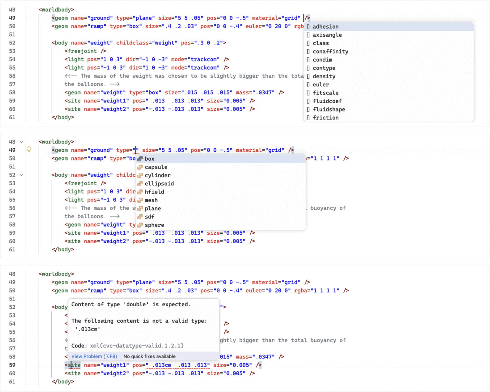

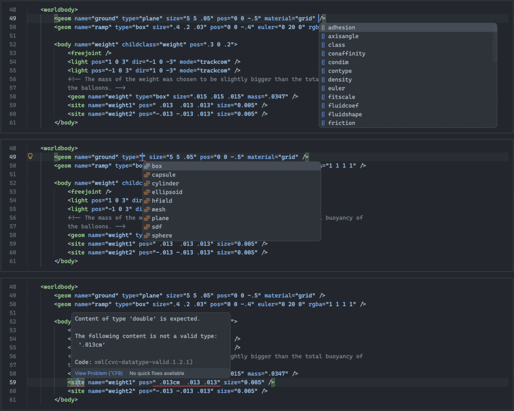
要在 VS Code 中启用此功能，请安装 Red Hat 的 XML 扩展 （在 Cursor 和 VSCodium 等分支中则安装 Open VSX 上的同一扩展），并在模型的根元素中引用该模式 (示例)：
<mujoco xmlns:xsi="http://www.w3.org/2001/XMLSchema-instance"
xsi:noNamespaceSchemaLocation="https://raw.githubusercontent.com/google-deepmind/mujoco/refs/heads/main/src/xml/generated/mjcf.xsd">
或者，在编辑器设置中将模型文件与该模式关联，而无需改动模型本身：
"xml.fileAssociations": [{
"pattern": "**/*.xml",
"systemId": "https://raw.githubusercontent.com/google-deepmind/mujoco/refs/heads/main/src/xml/generated/mjcf.xsd"
}]
将 refs/heads/main 替换为某个发布标签，即可将模式固定到特定的 MuJoCo 版本。
refs/heads/main with a release tag to pin the schema to a MuJoCo version.XSD 并不是模型有效性的规范：它不会拒绝 MuJoCo 接受的模型，但会接受被编译器拒绝的模型。XSD 1.0 无法表达的约束 -- 子元素的数量约束，以及属性之间的存在性约束 -- 以注释的形式给出。
MJCF 参考#
MJCF 文件有唯一的顶层元素 mujoco。下一层元素称为 节 （section），它们都是可选的。有些节仅用于分组，没有属性。节可以重复出现，以便通过 include 元素合并模型。元素内各属性的 顺序 可以是任意的。父元素内各子元素的顺序同样可以是任意的，但有四个例外：
spatial 肌腱中各元素的顺序很重要，因为它决定了肌腱依次穿过或缠绕的对象序列。
The order of elements in a spatial tendon matters because it determines the sequence of objects that the tendon passes through or wraps around.当同一属性被多次设置为不同的值时，重复出现的节的顺序很重要。这种情况下，最后一次设置对整个模型生效。
The order of repeated sections matters when the same attribute is set multiple times to different values. In that case the last setting takes effect for the entire model.同一默认类（default class）中多个执行器元素的顺序很重要，因为一个类只有一个执行器默认值，而每个快捷方式都会重置其增益、偏置和动力学参数；参见 快捷方式。
The order of multiple actuator elements in the same defaults class matters, because a class has a single actuator default and each shortcut resets its gain, bias and dynamics parameters; see Shortcuts.
在本章其余部分，我们将描述所有有效的 MJCF 元素及其属性。有些元素可以在多种上下文中使用，此时其含义取决于父元素。因此在下方的文档中，我们总是将父元素作为前缀显示。
元元素#
这些元素严格来说并不属于底层 MJCF 格式定义，而是指示编译器对模型执行某些操作。元元素（meta-element）的一个通用性质是：在保存 XML 时它们会从模型中消失；例外是 frame，它会被保留。MJCF 中目前有五个元元素：
frame #
frame 元元素是一种纯粹的坐标变换，可以包裹运动学树（kinematic tree）中（位于 worldbody 之下）的任意一组元素。在编译时，该变换会累积到 frame 的直接子元素中；frame 在 mjModel 中没有对应物。与其他元元素不同，保存模型时 frame 会被保留：frame 会连同其位姿一起写出，其内容采用相对于 frame 的坐标，因此保存后的模型重新加载时会得到相同的 frame。frame 元元素的属性在 下文 中说明。
replicate #
replicate 元素会以递增的平移和旋转偏移复制其所包含的运动学树元素，并添加命名空间后缀以避免名称冲突。所附加的后缀字符串是 [0...count-1] 范围内的整数，位数为表示元素总数所需的最少位数（即，如果复制 200 次，后缀将是 000, 001, ... 等）。所有引用元素都会被自动复制，并加上相应的命名空间。使用 replicate 的模型的详细示例可以在
model/replicate/ 目录中找到。
[0...count-1] with the minimum number of digits required to represent the total element count (i.e., if
replicating 200 times, suffixes will be 000, 001, ... etc). All referencing elements are automatically replicated
and namespaced appropriately. Detailed examples of models using replicate can be found in the
model/replicate/ directory.replicate 的直接子元素会被复制到其父刚体（body）中。因此不允许关节作为直接子元素；请将它们包裹在 body 中。
关键帧 不会被复制：关键帧描述的是所有副本都就位后的模型，因此其向量遵循编译后模型的布局。如果所包含的树中含有 attach 元素，则被附加模型的关键帧只会添加一次，仅以 attach 元素作命名空间，并设置第一个副本的状态。请参阅 附加 中讨论的限制。
- count: int, required
副本的数量。必须为正数。
The number of replicas. Must be positive.
- sep: string, optional
命名空间分隔符。这个可选字符串会被添加到命名空间后缀字符串之前。请注意，对于嵌套的 replicate 元素，最内层的命名空间后缀最先被附加。
The namespace separator. This optional string is prepended to the namespace suffix string. Note that for nested replicate elements, the innermost namespace suffixes are appended first.
- offset: real(3), optional
沿三个坐标轴的平移偏移。一般而言，偏移所在的坐标系是相对于前一个副本的，第一个副本除外，它相对于 replicate 元素的父元素。如果没有旋转，这些值始终位于 replicate 元素父元素的坐标系中。
Translational offset along the three coordinate axes. In general, the frame of the offset is with respect to the previous replica, except for the first one which is with respect to the replicate element’s parent. If there is no rotation, these values are always in the frame of the replicate element’s parent.
- euler: real(3), optional
相邻两个副本之间绕三个坐标轴的旋转角。角度单位和旋转顺序遵循全局的 angle 和 eulerseq 设置。旋转始终相对于前一个副本的坐标系，因此总旋转是累积的。
replicate 用法示例
加载此模型并保存：
<mujoco>
<worldbody>
<replicate count="2" offset="0 1 0" euler="90 0 0">
<replicate count="2" sep="-" offset="1 0 0" euler="0 90 0">
<geom name="Alice" size=".1"/>
</replicate>
</replicate>
</worldbody>
<sensor>
<accelerometer name="Bob" site="Alice"/>
</sensor>
</mujoco>
得到如下模型：
<mujoco>
<worldbody>
<geom name="Alice-00" size="0.1"/>
<geom name="Alice-10" size="0.1" pos="1 0 0" quat="1 0 1 0"/>
<geom name="Alice-01" size="0.1" pos="0 1 0" quat="1 1 0 0"/>
<geom name="Alice-11" size="0.1" pos="1 1 0" quat="0.5 0.5 0.5 0.5"/>
</worldbody>
<sensor>
<accelerometer name="Bob-00" site="Alice-00"/>
<accelerometer name="Bob-10" site="Alice-10"/>
<accelerometer name="Bob-01" site="Alice-01"/>
<accelerometer name="Bob-11" site="Alice-11"/>
</sensor>
</mujoco>
include#
该元素严格来说不属于 MJCF。它是一个元元素，用于在解析之前将多个 XML 文件组装为单个文档对象模型（DOM）。被包含的文件必须是具有唯一顶层元素的有效 XML 文件。解析器会移除该顶层元素，并将其下的元素插入到 include 元素所在的位置。这一过程至少必须插入一个元素。include 元素可以用在 MJCF 文件中任何期望出现 XML 元素的地方。允许嵌套包含，但同一个 XML 文件在整个模型中最多只能被包含一次。在所有被包含的 XML 文件组装成单个 DOM 之后，它必须对应一个有效的 MJCF 模型。除此之外，如何使用 include 以及是否需要对大文件进行模块化，均由用户自行决定。
- file: string, required
要包含的 XML 文件的名称。文件位置相对于主 MJCF 文件所在的目录。如果文件不在同一目录中，则应加上相对路径前缀。
The name of the XML file to be included. The file location is relative to the directory of the main MJCF file. If the file is not in the same directory, it should be prefixed with a relative path.
mujoco #
唯一的顶层元素，用于将该 XML 文件标识为 MJCF 模型文件。
- model: string, "MuJoCo Model"
模型的名称。该名称显示在 simulate.cc 的标题栏中。
The name of the model. This name is shown in the title bar of simulate.cc.
option#
该元素与底层结构体 mjOption 一一对应，mjOption 包含在 mjModel 的 mjModel.opt 字段中。这些是仿真选项，丝毫不影响编译过程，它们只是被复制到底层模型（model）中。尽管用户可以在运行时修改 mjOption，但最好还是通过 XML 把它们设置妥当。
- timestep: real, "0.002"
以秒为单位的仿真时间步长（time step）。这是影响速度与精度权衡的最重要参数，而这种权衡是每个物理仿真固有的。较小的值带来更好的精度和稳定性。要达到实时性能，时间步长必须大于每步的 CPU 时间（使用 RK4 积分器（integrator）时则需大于 4 倍）。CPU 时间由内部计时器测量，调整时间步长时应对其加以监控。MuJoCo 仿真大多数机器人系统的速度可以远快于实时，但含有许多浮动物体（从而产生许多接触（contact））的模型对计算量要求更高。请记住，稳定性不仅取决于时间步长，还取决于 求解器参数；特别是较软的约束可以用较大的时间步长来仿真。在精细调整具有挑战性的模型时，建议同时对这两项设置进行试验。在与优化相关的应用中，实时已经不够好，而是希望仿真尽可能快地运行。在这种情况下，应将时间步长设得尽可能大。
Simulation time step in seconds. This is the single most important parameter affecting the speed-accuracy trade-off which is inherent in every physics simulation. Smaller values result in better accuracy and stability. To achieve real-time performance, the time step must be larger than the CPU time per step (or 4 times larger when using the RK4 integrator). The CPU time is measured with internal timers. It should be monitored when adjusting the time step. MuJoCo can simulate most robotic systems a lot faster than real-time, however models with many floating objects (resulting in many contacts) are more demanding computationally. Keep in mind that stability is determined not only by the time step but also by the Solver parameters; in particular softer constraints can be simulated with larger time steps. When fine-tuning a challenging model, it is recommended to experiment with both settings jointly. In optimization-related applications, real-time is no longer good enough and instead it is desirable to run the simulation as fast as possible. In that case the time step should be made as large as possible.
- impratio: real, "1"
该属性决定椭圆型摩擦锥（elliptic friction cone）中摩擦约束阻抗（impedance）与法向约束阻抗之比。solimp 的设置为所有接触维度确定一个统一的阻抗值，然后由该属性对其进行调制。大于 1 的设置会使摩擦力比法向力“更硬”，其总体效果是减少 缓慢滑移，而不会增大实际的摩擦系数，也不能保证完全黏着。对于棱锥型摩擦锥，情况更为复杂，因为棱锥近似在每个基向量内部混合了法向维度和摩擦维度；不建议对棱锥型摩擦锥使用较大的 impratio 值。
This attribute determines the ratio of frictional-to-normal constraint impedance for elliptic friction cones. The setting of solimp determines a single impedance value for all contact dimensions, which is then modulated by this attribute. Settings larger than 1 cause friction forces to be “harder” than normal forces, having the general effect of reducing slow slippage without increasing the actual friction coefficient or guaranteeing exact sticking. For pyramidal friction cones the situation is more complex because the pyramidal approximation mixes normal and frictional dimensions within each basis vector; it is not recommended to use high impratio values with pyramidal cones.
- gravity: real(3), "0 0 -9.81"
重力加速度向量。在默认的世界朝向下，Z 轴指向上方。MuJoCo GUI 是围绕这一约定组织的（相机和扰动命令都基于此），因此我们不建议偏离该约定。
Gravitational acceleration vector. In the default world orientation the Z-axis points up. The MuJoCo GUI is organized around this convention (both the camera and perturbation commands are based on it) so we do not recommend deviating from it.
- wind: real(3), "0 0 0"
介质（即风）的速度向量。该向量会从每个刚体的三维平动速度中减去，所得结果用于计算作用在刚体上的黏性力、升力和阻力；请回顾计算章节中的 被动力。这些力的大小随后面两个属性的取值而变化。
Velocity vector of the medium (i.e., wind). This vector is subtracted from the 3D translational velocity of each body, and the result is used to compute viscous, lift and drag forces acting on the body; recall Passive forces in the Computation chapter. The magnitude of these forces scales with the values of the next two attributes.
- magnetic: real(3), "0 -0.5 0"
全局磁通量。该向量由磁力计传感器（sensor）使用，磁力计定义在 site 上，返回 site 位置处的磁通量，并以 site 坐标系表示。
Global magnetic flux. This vector is used by magnetometer sensors, which are defined as sites and return the magnetic flux at the site position expressed in the site frame.
- density: real, "0"
介质的密度，不要与用于推断质量和惯性的 geom 密度相混淆。该参数用于仿真升力和阻力，它们与速度的平方成正比。以国际单位制计，空气密度约为 1.2，水的密度约为 1000，具体取决于温度。将 density 设为 0 会禁用升力和阻力。
Density of the medium, not to be confused with the geom density used to infer masses and inertias. This parameter is used to simulate lift and drag forces, which scale quadratically with velocity. In SI units the density of air is around 1.2 while the density of water is around 1000 depending on temperature. Setting density to 0 disables lift and drag forces.
- viscosity: real, "0"
介质的黏度。该参数用于仿真黏性力，它与速度成线性关系。以国际单位制计，空气黏度约为 0.00002，水的黏度约为 0.0009，具体取决于温度。将 viscosity 设为 0 会禁用黏性力。请注意，默认的 Euler 积分器 以隐式方式处理关节中的阻尼（damping）——这提高了稳定性和精度。目前它并不对刚体黏度这样处理。因此，如果目标仅仅是创建一个带阻尼的仿真（而不是对黏度的具体效应建模），我们建议使用关节阻尼而不是刚体黏度，或者切换到 implicit 或 implicitfast 积分器。
Viscosity of the medium. This parameter is used to simulate viscous forces, which scale linearly with velocity. In SI units the viscosity of air is around 0.00002 while the viscosity of water is around 0.0009 depending on temperature. Setting viscosity to 0 disables viscous forces. Note that the default Euler integrator handles damping in the joints implicitly – which improves stability and accuracy. It does not presently do this with body viscosity. Therefore, if the goal is merely to create a damped simulation (as opposed to modeling the specific effects of viscosity), we recommend using joint damping rather than body viscosity, or switching to the implicit or implicitfast integrators.
- o_margin: real, "0"
当启用 接触覆盖 时，该属性会替换所有活动接触对的 margin 参数。否则，MuJoCo 会根据接触对的生成方式，使用 geom 或 pair 各自元素特有的 margin 属性。请参见计算章节中的 margin 和 gap。相关的 gap 参数没有全局覆盖。
This attribute replaces the margin parameter of all active contact pairs when Contact override is enabled. Otherwise MuJoCo uses the element-specific margin attribute of geom or pair depending on how the contact pair was generated. See margin and gap in the Computation chapter. The related gap parameter does not have a global override.
- o_solref, o_solimp, o_friction
当启用接触覆盖时，这些属性会替换所有活动接触对的 solref、solimp 和 friction 参数。详情请参见 求解器参数。
These attributes replace the solref, solimp and friction parameters of all active contact pairs when contact override is enabled. See Solver parameters for details.
- integrator: [Euler, RK4, implicit, implicitfast, discrete], "Euler"
该属性选择要使用的数值 积分器。目前可用的积分器有：半隐式 Euler 方法、定步长四阶 Runge-Kutta 方法、速度隐式 Euler 方法、舍去 Coriolis 项和离心项的 implicitfast，以及 discrete——一种速度步进积分器，它在有效惯性度量下统一了约束求解与隐式的位置/速度更新。更多细节请参见 数值积分。
This attribute selects the numerical integrator to be used. Currently the available integrators are the semi-implicit Euler method, the fixed-step 4th-order Runge-Kutta method, the implicit-in-velocity Euler method, implicitfast, which drops the Coriolis and centrifugal terms, and discrete, a velocity-stepping integrator which unifies constraint solving and implicit position/velocity updates in an effective inertia metric. See Numerical Integration for more details.
- cone: [pyramidal, elliptic], "pyramidal"
接触摩擦锥的类型。椭圆型摩擦锥能更好地模拟物理现实，但棱锥型摩擦锥有时会使求解器更快、更稳健。
The type of contact friction cone. Elliptic cones are a better model of the physical reality, but pyramidal cones sometimes make the solver faster and more robust.
- jacobian: [dense, sparse, auto], "auto"
约束雅可比（Jacobian）矩阵及由其计算出的矩阵的类型。Auto 在自由度（degrees of freedom）数不超过 60 时解析为 dense，超过 60 时解析为 sparse。
The type of constraint Jacobian and matrices computed from it. Auto resolves to dense when the number of degrees of freedom is up to 60, and sparse over 60.
- solver: [PGS, CG, Newton], "Newton"
该属性选择计算章节中描述的某一种约束求解器（constraint solver）算法。求解器选择和参数调优的指导原则见上文的 算法 一节。
This attribute selects one of the constraint solver algorithms described in the Computation chapter. Guidelines for solver selection and parameter tuning are available in the Algorithms section above.
- iterations: int, "100"
约束求解器的最大迭代次数。当 flag 的 warmstart 属性启用时（默认如此），用较少的迭代即可获得精确的结果；如果热启动（warmstart）得到的解已满足容差，CG 和 Newton 求解器会以零次迭代终止。更大、更复杂、存在大量相互作用约束的系统需要更多的迭代。请注意，mjData.solver 包含有关求解器收敛的统计信息，这些信息也显示在性能分析器中。
Maximum number of iterations of the constraint solver. When the warmstart attribute of flag is enabled (which is the default), accurate results are obtained with fewer iterations; if the warmstarted solution already satisfies the tolerance, the CG and Newton solvers terminate with zero iterations. Larger and more complex systems with many interacting constraints require more iterations. Note that mjData.solver contains statistics about solver convergence, also shown in the profiler.
- tolerance: real, "1e-8"
迭代求解器提前终止所用的容差阈值。对于 PGS，该阈值应用于两次迭代之间的代价改进量。对于 CG 和 Newton，它应用于代价改进量与梯度范数中较小的一个。对于 Newton，它还额外应用于 Newton 减量 \(\tfrac{1}{2} g^T H^{-1} g\)，即下一次迭代预测的代价改进量。在第一次迭代之前，CG 和 Newton 还会把它应用于热启动解的 收敛证书，因此可能以零次迭代终止。代价改进量和梯度按整个模型或某个约束 岛 的惯性矩阵的迹的倒数进行缩放。将容差设为 0 可禁用提前终止。
Tolerance threshold used for early termination of the iterative solver. For PGS, the threshold is applied to the cost improvement between two iterations. For CG and Newton, it is applied to the smaller of the cost improvement and the gradient norm. For Newton, it is additionally applied to the Newton decrement \(\tfrac{1}{2} g^T H^{-1} g\), the predicted cost improvement of the next iteration. Before the first iteration, CG and Newton also apply it to a convergence certificate of the warmstarted solution, possibly terminating with zero iterations. The cost improvement and the gradient are scaled by the inverse trace of the inertia matrix, of the whole model or of a constraint island. Set the tolerance to 0 to disable early termination.
- ls_iterations: int, "50"
CG/Newton 约束求解器执行的最大线搜索迭代次数。它确保每次约束求解期间，最多执行 iterations 乘以 ls_iterations 次线搜索迭代。
Maximum number of linesearch iterations performed by CG/Newton constraint solvers. Ensures that at most iterations times ls_iterations linesearch iterations are performed during each constraint solve.
- ls_tolerance: real, "0.01"
线搜索算法提前终止所用的容差阈值。
Tolerance threshold used for early termination of the linesearch algorithm.
- noslip_iterations: int, "0"
NoSlip 求解器的最大迭代次数。这是在主求解器之后执行的后处理步骤。它使用一种修改过的 PGS 方法，来抑制由软约束模型引起的摩擦维度上的滑移/漂移。默认设置 0 会禁用该后处理步骤。有关其机制和权衡，请参见 NoSlip 求解器，实际使用指导请参见 缓慢滑移。
Maximum number of iterations of the NoSlip solver. This is a post-processing step executed after the main solver. It uses a modified PGS method to suppress slip/drift in friction dimensions resulting from the soft-constraint model. The default setting 0 disables this post-processing step. See the NoSlip solver for its mechanics and tradeoffs, and slow slippage for practical guidance.
- noslip_tolerance: real, "1e-6"
Noslip 求解器提前终止所用的容差阈值。
Tolerance threshold used for early termination of the Noslip solver.
- ccd_iterations: int, "35"
用于凸体碰撞的算法的最大迭代次数。这个值很少需要调整，除非某些 geom 具有非常大的长宽比。
Maximum number of iterations of the algorithm used for convex collisions. This rarely needs to be adjusted, except in situations where some geoms have very large aspect ratios.
- ccd_tolerance: real, "1e-6"
凸体碰撞算法提前终止所用的容差阈值。
Tolerance threshold used for early termination of the convex collision algorithm.
- sdf_iterations: int, "10"
符号距离场（Signed Distance Field）碰撞所用的迭代次数（针对每个初始点）。
Number of iterations used for Signed Distance Field collisions (per initial point).
- sdf_initpoints: int, "40"
用于在符号距离场碰撞中寻找接触的起始点个数。
Number of starting points used for finding contacts with Signed Distance Field collisions.
- actuatorgroupdisable: int(31), optional
要禁用的执行器（actuator）组列表。group 在此列表中的执行器不会产生力。如果它们是有状态的，其激活（activation）状态将不会被积分。在内部，该列表以整数位域实现，因此取值必须在
0 <= group <= 30范围内。如果未设置，则所有执行器组都处于启用状态。请参见 示例模型 以及右侧相关的屏幕录像。List of actuator groups to disable. Actuators whose group is in this list will produce no force. If they are stateful, their activation states will not be integrated. Internally this list is implemented as an integer bitfield, so values must be in the range0 <= group <= 30. If not set, all actuator groups are enabled. See example model and associated screen-capture on the right.
option/flag #
该元素用于设置启用和禁用仿真流水线各个部分的标志。运行时实际使用的标志以两个整数的各个比特位表示，即 mjModel.opt.disableflags 和 mjModel.opt.enableflags，分别用于禁用标准功能和启用可选功能。这样区分的原因是，将这两个整数都设为 0 即可恢复默认设置。在 XML 中我们不显式地做这种区分，只在默认属性值上有所体现——对应标准功能的标志默认为 "enable"，对应可选功能的标志默认为 "disable"。在下面的文档中，我们会说明当设置与默认值不同时会发生什么。
- constraint: [disable, enable], "enable"
该标志禁用所有与约束求解器（constraint solver）相关的标准计算。因此不会施加任何约束力。请注意，接下来的四个标志分别禁用与某一特定类型约束相关的计算。要执行某项计算，该标志与对应类型的标志都必须设为 "enable"。
This flag disables all standard computations related to the constraint solver. As a result, no constraint forces are applied. Note that the next four flags disable the computations related to a specific type of constraint. Both this flag and the type-specific flag must be set to “enable” for a given computation to be performed.
- equality: [disable, enable], "enable"
该标志禁用所有与等式约束相关的标准计算。
This flag disables all standard computations related to equality constraints.
- frictionloss: [disable, enable], "enable"
该标志禁用所有与摩擦损耗约束相关的标准计算。
This flag disables all standard computations related to friction loss constraints.
- limit: [disable, enable], "enable"
该标志禁用所有与关节限位和肌腱限位约束相关的标准计算。
This flag disables all standard computations related to joint and tendon limit constraints.
- contact: [disable, enable], "enable"
该标志禁用碰撞检测以及所有与接触约束相关的标准计算。
This flag disables collision detection and all standard computations related to contact constraints.
- spring: [disable, enable], "enable"
该标志禁用被动的关节、肌腱和柔性体（flex）弹簧。如果被动 阻尼器 力也被禁用，则 所有 被动力都会被禁用，包括重力补偿、流体力、由 mjcb_passive 回调计算的力，以及在传入 mjPLUGIN_PASSIVE 能力标志时由 插件 计算的力。
This flag disables passive joint, tendon and flex springs. If passive damper forces are also disabled, all passive forces are disabled, including gravity compensation, fluid forces, forces computed by the mjcb_passive callback, and forces computed by plugins when passed the mjPLUGIN_PASSIVE capability flag.
- damper: [disable, enable], "enable"
该标志禁用被动的关节、肌腱和柔性体阻尼器。如果被动 弹簧 力也被禁用，则 所有 被动力都会被禁用，包括重力补偿、流体力、由 mjcb_passive 回调计算的力，以及在传入 mjPLUGIN_PASSIVE 能力标志时由 插件 计算的力。
This flag disables passive joint, tendon and flex dampers. If passive spring forces are also disabled, all passive forces are disabled, including gravity compensation, fluid forces, forces computed by the mjcb_passive callback, and forces computed by plugins when passed the mjPLUGIN_PASSIVE capability flag.
- gravity: [disable, enable], "enable"
该标志使 mjOption 中的重力加速度向量在运行时被替换为 (0 0 0)，而不改变 mjOption 中的值。重新启用该标志后，将再次使用 mjOption 中的值。
This flag causes the gravitational acceleration vector in mjOption to be replaced with (0 0 0) at runtime, without changing the value in mjOption. Once the flag is re-enabled, the value in mjOption is used.
- clampctrl: [disable, enable], "enable"
该标志禁用对所有执行器控制输入的钳位，即使执行器自身的属性被设置为启用钳位也是如此。
This flag disables the clamping of control inputs to all actuators, even if the actuator-specific attributes are set to enable clamping.
- warmstart: [disable, enable], "enable"
该标志禁用约束求解器的热启动。默认情况下，求解器使用上一时间步的解（即约束力）来初始化迭代优化。当在一组不构成轨迹的状态上评估动力学时，应禁用此功能——此时热启动没有意义，并且很可能拖慢求解器。
This flag disables warm-starting of the constraint solver. By default the solver uses the solution (i.e., the constraint force) from the previous time step to initialize the iterative optimization. This feature should be disabled when evaluating the dynamics at a collection of states that do not form a trajectory - in which case warm starts make no sense and are likely to slow down the solver.
- filterparent: [disable, enable], "enable"
该标志禁用对接触对的过滤，即两个 geom 分别属于父刚体和子刚体的情况；请回顾“计算”一章中的接触 选择。
This flag disables the filtering of contact pairs where the two geoms belong to a parent and child body; recall contact selection in the Computation chapter.
- actuation: [disable, enable], "enable"
该标志禁用所有与执行器力相关的标准计算，包括执行器动力学。因此不会向仿真施加任何执行器力。
This flag disables all standard computations related to actuator forces, including the actuator dynamics. As a result, no actuator forces are applied to the simulation.
- refsafe: [disable, enable], "enable"
该标志启用一种安全机制，用于防止由于 solref[0] 相对于仿真时间步长过小而导致的不稳定。请回顾，solref[0] 是用于约束稳定的虚拟弹簧-阻尼器的刚度。如果启用此设置，求解器会对每个激活的约束分别使用 max(solref[0], 2*timestep) 来代替 solref[0]。在 discrete 积分器下，该标志则会把弹簧无法被时间步长分辨（solref[0]*solref[1] < timestep）的接触行和限位行，替换为该时间步长下刚度最大的零恢复系数行，同时保持原先设定的阻尼比。
This flag enables a safety mechanism that prevents instabilities due to solref[0] being too small compared to the simulation timestep. Recall that solref[0] is the stiffness of the virtual spring-damper used for constraint stabilization. If this setting is enabled, the solver uses max(solref[0], 2*timestep) in place of solref[0] separately for each active constraint. Under the discrete integrator, the flag instead replaces contact and limit rows whose spring the timestep cannot resolve (solref[0]*solref[1] < timestep) by the stiffest zero-restitution row for the timestep, keeping the authored damping ratio.
- sensor: [disable, enable], "enable"
该标志禁用所有与传感器相关的计算。禁用后，传感器的值将保持不变：如果在仿真开始时就被禁用，则为零；如果在运行时被禁用，则为最后一次计算出的值。
This flag disables all computations related to sensors. When disabled, sensor values will remain constant, either zeros if disabled at the start of simulation, or, if disabled at runtime, whatever value was last computed.
- midphase: [disable, enable], "enable"
该标志禁用使用静态 AABB 包围体层次结构（BVH 二叉树）进行的中间阶段碰撞过滤。如果禁用，则所有允许碰撞的 geom 对都会被检查是否碰撞。
This flag disables the mid-phase collision filtering using a static AABB bounding volume hierarchy (a BVH binary tree). If disabled, all geoms pairs that are allowed to collide are checked for collisions.
- nativeccd: [disable, enable], "enable"
该标志启用原生的凸碰撞检测流水线，而不是使用 libccd 库，详见 凸碰撞。
This flag enables the native convex collision detection pipeline instead of using the libccd library, see convex collisions for more details.
- island: [disable, enable], "enable"
该标志启用约束岛（constraint island）的发现与构建：约束岛是由互不相互作用、可以独立求解的约束和自由度构成的不相交集合。PGS 求解器尚不支持分岛。详见 约束岛。mjVIS_ISLAND 用于启用 约束岛可视化。
This flag enables discovery and construction of constraint islands: disjoint sets of constraints and degrees-of-freedom that do not interact and can be solved independently. Islanding is not yet supported by the PGS solver. See Constraint islands for more details. The mjVIS_ISLAND enables island visualization.
- eulerdamp: [disable, enable], "enable"
该标志禁用 Euler 积分器中针对关节阻尼的隐式积分。详见 数值积分 一节。
This flag disables implicit integration with respect to joint damping in the Euler integrator. See the Numerical Integration section for more details.
- autoreset: [disable, enable], "enable"
该标志禁用在检测到数值问题时对仿真状态的自动重置。
This flag disables the automatic resetting of the simulation state when numerical issues are detected.
- override: [disable, enable], "disable"
该标志启用 接触覆盖 机制。
This flag enables the Contact override mechanism.
- energy: [disable, enable], "disable"
该标志启用势能和动能的计算，二者分别存放在
mjData.energy[0, 1]中，并显示在 simulate GUI 的信息叠加层中。势能包括对所有刚体求和的重力分量 \(\sum_b m_b g h\)，以及关节、肌腱和柔性体中被动弹簧所储存的能量 \(\tfrac{1}{2} k x^2\)，其中 \(x\) 是位移，\(k\) 是弹簧常数。动能为 \(\tfrac{1}{2} v^T M v\)，其中 \(v\) 是速度，\(M\) 是质量矩阵。请注意，约束中的势能和动能未被计入。This flag enables the computation of potential and kinetic energy inmjData.energy[0, 1]respectively, and displayed in the simulate GUI info overlay. Potential energy includes the gravitational component summed over all bodies \(\sum_b m_b g h\) and energy stored in passive springs in joints, tendons and flexes \(\tfrac{1}{2} k x^2\), where \(x\) is the displacement and \(k\) is the spring constant. Kinetic energy is given by \(\tfrac{1}{2} v^T M v\), where \(v\) is the velocity and \(M\) is the mass matrix. Note that potential and kinetic energy in constraints is not accounted for.这一额外的计算（势能 和 动能 传感器也会触发它）会增加一些 CPU 时间，但通常可以忽略不计。对于应当能量守恒的系统，监控能量是评估复杂仿真精度的最佳方法之一。
- fwdinv: [disable, enable], "disable"
该标志启用正动力学与逆动力学的自动比较。启用后，会在 mj_forward 之后（或在 mj_step 内部）调用逆动力学，并将所施加力的差异记录在 mjData.solver_fwdinv[2] 中。第一个值是关节空间中差异的相对范数，第二个值是约束空间中的。
This flag enables the automatic comparison of forward and inverse dynamics. When enabled, the inverse dynamics is invoked after mj_forward (or internally within mj_step) and the difference in applied forces is recorded in mjData.solver_fwdinv[2]. The first value is the relative norm of the discrepancy in joint space, the next is in constraint space.
- invdiscrete: [disable, enable], "disable"
该标志对除
RK4之外的所有 积分器，使 mj_inverse 采用离散时间逆动力学。请回顾 数值积分 一节，单步积分器（Euler、implicit和implicitfast）会修改质量矩阵 \(M \rightarrow M-hD\)。这意味着有限差分得到的加速度 \((v_{t+h} - v_t)/h\) 将与连续时间加速度mjData.qacc不一致。启用该标志后，mj_inverse 会将qacc解释为由两个相邻速度之差计算得到，并撤销上述修改。This flag enables discrete-time inverse dynamics with mj_inverse for all integrators other thanRK4. Recall from the numerical integration section that the one-step integrators (Euler,implicitandimplicitfast), modify the mass matrix \(M \rightarrow M-hD\). This implies that finite-differenced accelerations \((v_{t+h} - v_t)/h\) will not correspond to the continuous-time accelerationmjData.qacc. When this flag is enabled, mj_inverse will interpretqaccas having been computed from the difference of two sequential velocities, and undo the above modification.
- multiccd: [disable, enable], "enable"
该标志对使用通用凸-凸碰撞器的 geom 对（例如网格-网格碰撞）启用多接触点碰撞检测。当接触的 geom 具有平坦表面，而凸-凸碰撞器生成的单个接触点无法准确刻画表面接触、从而导致通常表现为滑动或晃动的不稳定时，这会很有用。该功能的实现取决于所选的凸碰撞流水线，详见 凸碰撞。
This flag enables multiple-contact collision detection for geom pairs that use a general-purpose convex-convex collider e.g., mesh-mesh collisions. This can be useful when the contacting geoms have a flat surface and the single contact point generated by the convex-convex collider cannot accurately capture the surface contact, leading to instabilities that typically manifest as sliding or wobbling. The implementation of this feature depends on the selected convex collision pipeline, see convex collisions for more details.
- sleep: [disable, enable], "disable"
该标志启用 休眠。当某些树处于休眠状态时禁用此标志，会将它们唤醒。
This flag enables sleeping. Disabling this flag when some trees are sleeping will wake them.初始化时的标志值
flag value at initialization time与其他任何 标志 不同，sleep 标志在 mjData 初始化（mj_makeData 或 mj_resetData）期间就会产生影响。首先，必须在初始化时设置它，sleep-init 策略才会生效。其次，必须设置它才能计算静态量。详见 实现说明。
Unlike any other flag, the sleep flag has an effect during mjData initialization (mj_makeData or mj_resetData). First, it must be set at initialization time in order for the sleep-init policy to take effect. Second, it must be set in order for static quantities to be computed. See implementation notes for more details.
- diagexact: [disable, enable], "disable"
该标志启用对约束空间惯性矩阵 \(A = J M^{-1} J^T\) 精确对角线的计算，以取代通常使用的基于刚体的近似。精确对角线由白化雅可比 \(Y = J M^{-1/2}\) 按 \(A_{ii} = \|Y_i\|^2\) 计算得出。这提供了更准确的 阻抗 计算，可以改善具有复杂运动学耦合的模型的求解质量。关于该标志所消除的近似误差，详见 对角线近似。其代价是每个激活的约束行需要用质量矩阵的 Cholesky 因子做一次回代；如果使用对偶求解器（PGS 或 NoSlip），由于 \(Y\) 本来就要计算，该代价可以忽略不计。当观察到发散或约束质量较差时，尤其是在刚体惯性高度各向异性或刚体远离初始构型
qpos0运动的模型中，可以考虑启用此标志。This flag enables computation of the exact diagonal of the constraint-space inertia matrix \(A = J M^{-1} J^T\), replacing the body-based approximation normally used. The exact diagonal is computed from the whitened Jacobian \(Y = J M^{-1/2}\) as \(A_{ii} = \|Y_i\|^2\). This provides a more accurate impedance computation, which can improve solver quality for models with complex kinematic coupling. See Diagonal approximation for details on the approximation errors that this flag eliminates. The cost is one back-substitution with the Cholesky factor of the mass matrix per active constraint row; if dual solvers are used (PGS or NoSlip), the cost is negligible since \(Y\) is computed anyway. Consider enabling this flag when observing divergence or poor constraint quality, particularly in models with highly anisotropic body inertias or bodies operating far from the initial configurationqpos0.在
discrete积分器 下，精确对角线是针对有效度量 \(\widehat{M}\) 的已分解主干计算的；不包括肌腱、执行器和柔性体的耦合。Under thediscreteintegrator, the exact diagonal is computed against the factored backbone of the effective metric \(\widehat{M}\); tendon, actuator and flex couplings are not included.
- ipc: [disable, enable], "disable"
该标志选择
discrete积分器 的 IPC 接触模式；与其他任何积分器一起使用都会报错。该模式是实验性的。它会在各步之间于 mjData 中保留接触乘子，而这些乘子不被任何 状态规范 所涵盖，因此 mj_getState 和 mj_setState 无法捕获其完整状态，也不支持从保存的状态精确重放。该模式使用原始（primal）求解器（默认为Newton，或CG）求解其子问题，因此 求解器 不能是PGS，并且它不能与fwdinv或sleep标志组合使用。它作用于整个模型：该模式所支持的每个 flex 的接触都以这种方式求解。两个受支持 flex 之间的接触，以及受支持 flex 与静态平面、球体、胶囊体、长方体或网格之间的接触，由该模式处理，碰撞流水线不会生成它们；与运动刚体以及与其他 geom 类型的接触则保留其约束行。该模式所处理的接触对是无摩擦的：它们只携带法向力，所涉及的 flex 和 geom 的摩擦参数对其不起作用。通常的碰撞过滤适用于该模式所处理的接触对：contact标志被禁用时不处理任何接触对；flex 与 geom 之间或两个 flex 之间遵循接触 选择 的 contype/conaffinity 规则；自接触则遵循每个 flex 的selfcollide。被钉住的 flex 顶点只可以附着在静态刚体上，或仅通过滑动关节到达的刚体上，其各点沿该模式扫掠的直线段运动；该链上若有铰链、球铰或自由关节则会报错。该模式假定模型为米级尺度、flex 厚度为毫米级：其检测带宽、flex 表面之间的静止间隙以及收敛速度分别固定为 3 mm、1 mm 和 0.05 m/s。无论 passive 如何设置，在该标志下接触都是被动的，因为该标志用增广拉格朗日求解取代了被动接触的罚函数形式（即乘子保持为零的同一接触定律），而不是把任何 flex 交还给约束求解器。flex 接触由围绕离散求解的无障碍增广拉格朗日外层循环求解：每一步在线性化的接触约束下最小化一个增量势能，这些约束以约束求解器的单侧行的形式给出，其乘子在各次求解之间更新，并在试探位置处重新线性化接触；每一次提交的位置更新都由连续碰撞检测验证为无相交，因此 flex 接触不会发生穿隧。刚体通过同一个位置级步骤推进，其接触保留在约束求解器中，不含二维 flex 的模型同样采用该步骤。支持 dim 为 2 的 flex：带有边等式约束的 flex 将其弹性保留在约束求解器中，而 elastic2d 弹性则通过有效度量隐式积分。在该标志下，对于含二维 flex 的模型，mj_forward 的约束阶段会被跳过：mj_forward 之后，mjData.qacc保存的是自由飞行加速度，加速度阶段的传感器由它计算。该步在提交之前会根据其自身的加速度和约束力重新计算这些传感器，因此在 mj_step 之后，它们的读数与普通discrete积分器下一致；位于加速度阶段的用户传感器或插件传感器每步会被评估两次。不支持逆动力学。This flag selects the IPC contact mode of thediscreteintegrator; it is an error with any other integrator. The mode is experimental. It keeps contact multipliers in mjData across steps that no state specification covers, so mj_getState and mj_setState do not capture its full state and exact replay from a saved state is not supported. The mode solves its subproblems with a primal solver (Newtonby default, orCG), so solver cannot bePGS, and it cannot be combined with thefwdinvorsleepflags. It applies model-wide: every flex the mode supports has its contact solved this way. Contacts between two supported flexes, and between a supported flex and a static plane, sphere, capsule, box or mesh, are resolved by the mode and the collision pipeline does not generate them; contacts with moving bodies and with the other geom types keep their constraint rows. The pairs the mode resolves are frictionless: they carry normal forces only, and the friction parameters of the flexes and geoms involved do not apply to them. The usual collision filtering applies to the pairs the mode resolves: none with thecontactflag disabled, the contype/conaffinity rule of contact selection between a flex and a geom or between two flexes, and each flex’sselfcollidefor its self-contact. A pinned flex vertex may ride a static body or a body reached through slide joints only, whose points move on the straight segments the mode sweeps; a hinge, ball or free joint on that chain is an error. The mode assumes metre-scale models with millimetre-thick flexes: its detection band, rest gap between flex surfaces and convergence speed are fixed at 3 mm, 1 mm and 0.05 m/s. Contact is passive under this flag whatever passive says, since the flag replaces the penalty form of passive contact — the same contact law with the multiplier held at zero — with the augmented-Lagrangian solve, rather than returning any flex to the constraint solver. Flex contact is solved by a barrier-free augmented-Lagrangian outer loop around the discrete solve: each step minimizes an incremental potential subject to linearized contact constraints, carried as one-sided rows of the constraint solver whose multipliers are updated between solves, re-linearizing contact at trial positions, and every committed position update is verified intersection-free by continuous collision detection, so flex contact cannot tunnel. Rigid bodies are carried through the same position-level step with their contacts kept in the constraint solver, and a model without 2D flexes takes that step as well. Supported for dim-2 flexes: a flex with edge equality constraints keeps its elasticity in the constraint solver, while elastic2d elasticity is integrated implicitly through the effective metric. Under this flag the constraint stage of mj_forward is skipped for a model with a 2D flex: after mj_forward,mjData.qaccholds the free-flight acceleration and the acceleration-stage sensors are computed from it. The step recomputes those sensors from its own acceleration and constraint force before it commits, so after mj_step they read as under the plaindiscreteintegrator; a user or plugin sensor at the acceleration stage is evaluated twice per step. Inverse dynamics is not supported.
- speculative: [disable, enable], "disable"
该标志为快速运动的凸 geom 启用推测接触，在碰撞发生之前添加接触，以防止在单个时间步长内穿过薄障碍物而发生穿隧。详见 推测接触。
This flag enables speculative contacts for fast-moving convex geoms, adding contacts before impact to prevent tunneling through thin obstacles within a single timestep. See speculative contacts for more details.
compiler#
该元素用于设置内置解析器和编译器的选项。解析和编译完成之后，它不再有任何作用。这里的设置是全局的，适用于整个模型（model）。
- autolimits: [false, true], "true"
该属性影响 "limited"（位于 <body-joint> 或 <tendon> 上）、"forcelimited"、"ctrllimited" 和 "actlimited"（位于 <actuator> 上）等属性的行为。如果为 "true"，这些属性就不是必需的，其取值将根据对应的 "range" 属性是否存在来推断。如果为 "false"，则不会进行这样的推断：要使关节具有限位（limit），必须同时指定 limited="true" 和 range="min max"。在此模式下，只指定 range 而不指定限位属于错误。
This attribute affects the behavior of attributes such as “limited” (on <body-joint> or <tendon>), “forcelimited”, “ctrllimited”, and “actlimited” (on <actuator>). If “true”, these attributes are unnecessary and their value will be inferred from the presence of their corresponding “range” attribute. If “false”, no such inference will happen: For a joint to be limited, both limited=”true” and range=”min max” must be specified. In this mode, it is an error to specify a range without a limit.
- boundmass: real, "0"
该属性对除世界刚体（world body）之外的每个刚体（body）的质量施加下界。将该属性设为大于 0 的值，可以作为对设计不良模型的快速修复，这类模型含有无质量的运动刚体，例如 URDF 模型中经常用来安装传感器的虚拟刚体。请注意，在 MuJoCo 中无需创建虚拟刚体。
This attribute imposes a lower bound on the mass of each body except for the world body. Setting this attribute to a value greater than 0 can be used as a quick fix for poorly designed models that contain massless moving bodies, such as the dummy bodies often used in URDF models to attach sensors. Note that in MuJoCo there is no need to create dummy bodies.
- boundinertia: real, "0"
该属性对除世界刚体之外的每个刚体的惯性对角分量施加下界。其用法与上面的 boundmass 类似。
This attribute imposes a lower bound on the diagonal inertia components of each body except for the world body. Its use is similar to boundmass above.
- settotalmass: real, "-1"
该属性已弃用，并将在未来版本中移除；编译设置了它的模型会给出警告。如果该值为正，编译器将缩放模型中所有刚体的质量和惯性，使总质量等于此处指定的值。世界刚体的质量为 0，不参与任何与质量相关的计算。该缩放最后执行，在所有其他影响刚体质量和惯性的操作之后。同样的缩放操作可以在运行时对已编译的 mjModel 使用函数 mj_setTotalmass 来完成，随后再调用 mj_setConst。
This attribute is deprecated and will be removed in a future release; compiling a model which sets it gives a warning. If this value is positive, the compiler will scale the masses and inertias of all bodies in the model, so that the total mass equals the value specified here. The world body has mass 0 and does not participate in any mass-related computations. This scaling is performed last, after all other operations affecting the body mass and inertia. The same scaling operation can be applied at runtime to the compiled mjModel with the function mj_setTotalmass, followed by mj_setConst.
- balanceinertia: [false, true], "false"
一个有效的对角惯性矩阵（inertia matrix）必须对三个对角元素的所有排列满足 A+B>=C。一些设计不良的模型违反了这一约束，通常会导致编译错误。如果将该属性设为 "true"，则每当违反上述条件时，编译器会静默地把三个对角元素都设为它们的平均值。
A valid diagonal inertia matrix must satisfy A+B>=C for all permutations of the three diagonal elements. Some poorly designed models violate this constraint, which will normally result in a compile error. If this attribute is set to “true”, the compiler will silently set all three diagonal elements to their average value whenever the above condition is violated.
- strippath: [false, true], "false"
当该属性为 "true" 时，解析器会移除模型中所指定文件名里的任何路径信息。这对于加载在使用不同目录结构的另一系统上创建的模型很有用。
When this attribute is “true”, the parser will remove any path information in file names specified in the model. This is useful for loading models created on a different system using a different directory structure.
- coordinate: [local, global], "local"
该属性指定坐标系（frame）的位置和朝向是否以局部坐标表示。"global" 选项已不再受支持，使用它会导致错误。
This attribute specifies whether frame positions and orientations are expressed in local coordinates. The “global” option is no longer supported and will cause an error.
- angle: [radian, degree], "degree" for MJCF, always "radian" for URDF
该属性指定 MJCF 模型中的角度以度还是弧度为单位表示。编译器会把度转换为弧度，而 mjModel 始终使用弧度。对于 URDF 模型，解析器在内部会把该属性设为 "radian"，而不管 XML 中的设置如何。
This attribute specifies whether the angles in the MJCF model are expressed in units of degrees or radians. The compiler converts degrees into radians, and mjModel always uses radians. For URDF models the parser sets this attribute to “radian” internally, regardless of the XML setting.

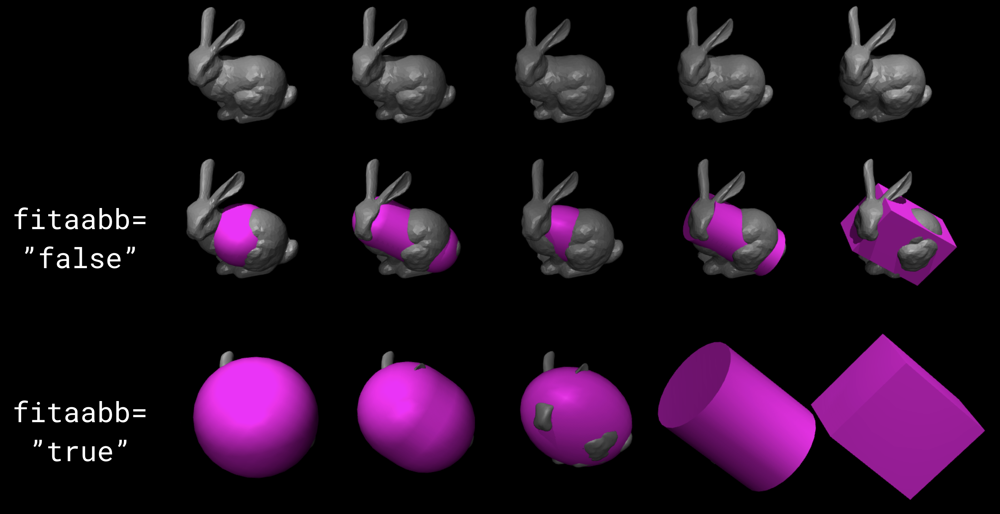
- fitaabb: [false, true], "false"
编译器能够用拟合该网格（mesh）的几何基元来替换网格；请参见下文的 geom。如果该属性为 "true"，则拟合过程使用网格的轴对齐包围盒（AABB），选择其 AABB 包含网格 AABB 的最小基元。否则，使用网格的等效惯性盒。用于拟合的几何基元类型对每个 geom 分别指定。生成右侧图像所用的模型可在 这里 （拟合惯性盒）和 这里 （拟合 aabb）找到。
The compiler is able to replace a mesh with a geometric primitive fitted to that mesh; see geom below. If this attribute is “true”, the fitting procedure uses the axis-aligned bounding box (AABB) of the mesh, choosing the smallest primitive whose AABB contains the mesh AABB. Otherwise it uses the equivalent-inertia box of the mesh. The type of geometric primitive used for fitting is specified separately for each geom. The models used to generate the image on the right can be found here (fit inertia box) and here (fit aabb).
- eulerseq: string, "xyz"
该属性为所有带有空间（spatial）坐标系的元素的 euler 属性指定 Euler 旋转序列，详见 坐标系朝向。它必须是由集合 {x, y, z, X, Y, Z} 中恰好 3 个字符组成的字符串。第 n 个位置的字符决定第 n 次旋转所绕的轴。小写字母表示随坐标系一起旋转的轴（内禀旋转），大写字母表示在父坐标系中保持固定的轴（外禀旋转）。URDF 中使用的 "rpy" 约定对应于 MJCF 中的 "XYZ"。
This attribute specifies the sequence of Euler rotations for all euler attributes of elements that have spatial frames, as explained in Frame orientations. This must be a string with exactly 3 characters from the set {x, y, z, X, Y, Z}. The character at position n determines the axis around which the n-th rotation is performed. Lower case letters denote axes that rotate with the frame (intrinsic), while upper case letters denote axes that remain fixed in the parent frame (extrinsic). The “rpy” convention used in URDF corresponds to “XYZ” in MJCF.
- meshdir: string, optional
该属性指示编译器到哪里查找网格和高度场文件。文件的完整路径按如下方式确定。如果上面描述的 strippath 属性为 "true"，则会移除文件名中的所有路径信息。然后依次应用以下检查：(1) 如果文件名包含绝对路径，则不作进一步更改直接使用；(2) 如果设置了该属性且其包含绝对路径，则完整路径为此处给出的字符串再附加文件名；(3) 完整路径为主 MJCF 模型文件的路径，再附加该属性的值（如果指定了的话），再附加文件名。
This attribute instructs the compiler where to look for mesh and height field files. The full path to a file is determined as follows. If the strippath attribute described above is “true”, all path information from the file name is removed. The following checks are then applied in order: (1) if the file name contains an absolute path, it is used without further changes; (2) if this attribute is set and contains an absolute path, the full path is the string given here appended with the file name; (3) the full path is the path to the main MJCF model file, appended with the value of this attribute if specified, appended with the file name.
- texturedir: string, optional
该属性用于指示编译器到哪里查找纹理文件。其工作方式与上面的 meshdir 相同。
This attribute is used to instruct the compiler where to look for texture files. It works in the same way as meshdir above.
- assetdir: string, optional
该属性同时设置上面 meshdir 和 texturedir 的值。后两个属性中的值优先于 assetdir。
This attribute sets the values of both meshdir and texturedir above. Values in the latter attributes take precedence over assetdir.
- discardvisual: [false, true], "false" for MJCF, "true" for URDF
该属性指示编译器丢弃所有纯视觉且对物理没有影响的模型元素（有一个例外，见下文）。这通常能得到更小的 mjModel 结构体和更快的仿真。
This attribute instructs the compiler to discard all model elements which are purely visual and have no effect on the physics (with one exception, see below). This often enables smaller mjModel structs and faster simulation.所有材质和纹理都会被丢弃，除非它们被传感器（sensor）或自定义的 tuple 引用。
All materials and textures are discarded, unless they are referenced by a sensor or a custom tuple.所有 contype=conaffinity=0 的 geom 都会被丢弃，前提是它们没有被其他 MJCF 元素引用，并且不使用椭球 流体模型。如果被丢弃的 geom 曾用于推断刚体惯性，则会向该刚体添加一个显式的 inertial 元素。当 inertiafromgeom 为 "true" 时这是不可能的，此时会产生编译错误。
All geoms with contype=conaffinity=0 are discarded, if they are not referenced in another MJCF element and do not use the ellipsoid fluid model. If a discarded geom was used for inferring body inertia, an explicit inertial element is added to the body. This is not possible when inertiafromgeom is “true”, which is then a compilation error.所有未被剩余 geom 或 site 使用、也未被其他 MJCF 元素引用的网格都会被丢弃（尤其是上面被丢弃的 geom 所用的那些网格）。
All meshes which are not used by a remaining geom or by a site, and are not referenced in another MJCF element, are discarded (in particular those of the geoms discarded above).
编译得到的模型与原始模型具有完全相同的动力学（dynamics）。唯一可能改变的引擎级计算是 光线投射 计算的输出（例如 rangefinder 传感器所使用的），因为光线投射会报告到视觉 geom 的距离。在可视化使用该标志编译的模型时，务必记住碰撞用的 geom 通常被放在默认不可见的 组 中。
The resulting compiled model will have exactly the same dynamics as the original model. The only engine-level computation which might change is the output of raycasting computations, as used for example by rangefinder sensors, since raycasting reports distances to visual geoms. When visualizing models compiled with this flag, it is important to remember that collision geoms are often placed in a group which is invisible by default.丢弃是对模型本身的一种操作，即 mjs_discardVisual，它在编译之前应用。之后保存或再次编译的模型就是不含视觉元素的那个模型。
Discarding is an operation on the model itself, mjs_discardVisual, which is applied before compiling. A model which is saved or compiled again afterwards is the one without the visual elements.
- usethread: [false, true], "true"
如果该属性为 "true"，模型编译器将以多线程模式运行。多线程用于计算执行器的长度范围，以及并行加载和处理网格。
If this attribute is “true”, the model compiler will run in multi-threaded mode. Multi-threading is used for computing the length ranges of actuators and for parallel loading and processing of meshes.
- fusestatic: [false, true], "false" for MJCF, "true" for URDF
该属性控制一项编译器优化功能，即把静态刚体与其父刚体融合，并把这些刚体中定义的所有元素重新分配给父刚体。静态刚体会与其父刚体融合，除非
This attribute controls a compiler optimization feature where static bodies are fused with their parent, and any elements defined in those bodies are reassigned to the parent. Static bodies are fused with their parent unless它们被模型中的其他元素引用。
They are referenced by another element in the model.它们的 fuse 属性为 "false"。
Their fuse attribute is “false”.它们有质量，并且其 gravcomp 与其父刚体不同，或者模型处于流体中（density 或 viscosity 非零）；在流体中，带有椭球流体 geom 的刚体也会被保留。
inertiafromgeom 为 "true"，并且编译器调整了它们的惯性或其父刚体的惯性（boundmass、boundinertia、balanceinertia），以至于两者的 geom 放在同一个刚体中会具有不同的惯性。
inertiafromgeom is “true” and the compiler adjusted their inertia or their parent’s (boundmass, boundinertia, balanceinertia), so that the geoms of both in one body would have a different inertia.
融合是对模型本身的一种操作，即 mjs_fuseStatic，它在编译之前应用：每个被融合的刚体都会变成其父刚体中的一个 frame。之后保存或再次编译的模型就是融合后的那个模型。
Fusing is an operation on the model itself, mjs_fuseStatic, which is applied before compiling: each fused body becomes a frame in its parent. A model which is saved or compiled again afterwards is the fused one.这一优化在导入 URDF 模型时特别有用，因为 URDF 模型通常含有许多虚拟刚体，但它也可用于优化 MJCF 模型。优化之后，新模型与原始模型具有相同的运动学和动力学，但仿真速度更快。
This optimization is particularly useful when importing URDF models which often have many dummy bodies, but can also be used to optimize MJCF models. After optimization, the new model has identical kinematics and dynamics as the original but is faster to simulate.
- inertiafromgeom: [false, true, auto], "auto"
该属性控制根据附着在刚体上的 geom 自动推断刚体的质量和惯性。如果该设置为 "false"，则不执行自动推断。在这种情况下，每个刚体都必须用 inertial 元素显式定义质量和惯性，否则会产生编译错误。如果该设置为 "true"，则每个刚体的质量和惯性将根据附着在其上的 geom 推断，覆盖用 inertial 元素指定的任何值。默认设置 "auto" 表示仅当刚体定义中缺少 inertial 元素时才自动推断质量和惯性。把该属性设为 "true" 而不是 "auto" 的一个原因是，覆盖从设计不良的模型中导入的惯性数据。特别是，许多公开可得的 URDF 模型的惯性看似任意，相对于质量而言太大。这会导致等效惯性盒远远超出模型的几何边界。请注意，内置的 OpenGL 可视化器可以渲染等效惯性盒。
This attribute controls the automatic inference of body masses and inertias from geoms attached to the body. If this setting is “false”, no automatic inference is performed. In that case each body must have explicitly defined mass and inertia with the inertial element, or else a compile error will be generated. If this setting is “true”, the mass and inertia of each body will be inferred from the geoms attached to it, overriding any values specified with the inertial element. The default setting “auto” means that masses and inertias are inferred automatically only when the inertial element is missing in the body definition. One reason to set this attribute to “true” instead of “auto” is to override inertial data imported from a poorly designed model. In particular, a number of publicly available URDF models have seemingly arbitrary inertias which are too large compared to the mass. This results in equivalent inertia boxes which extend far beyond the geometric boundaries of the model. Note that the built-in OpenGL visualizer can render equivalent inertia boxes.
- alignfree: [false, true], "false"
该属性切换一项优化的默认行为，该优化适用于带有 自由关节 且没有子刚体的刚体。为 true 时，刚体坐标系和自由关节会自动与惯性坐标系对齐，从而使仿真既更快又更稳定。详情请参见 freejoint/align。
This attribute toggles the default behaviour of an optimization that applies to bodies with a free joint and no child bodies. When true, the body frame and free joint will automatically be aligned with inertial frame, which leads to both faster and more stable simulation. See freejoint/align for details.
- inertiagrouprange: int(2), "0 5"
该属性指定用于推断刚体质量和惯性的 geom 组的范围（在启用这种推断时）。geom 的 group 属性是一个整数。如果该整数落在此处指定的范围内，则该 geom 会用于惯性计算，否则会被忽略。该功能在具有冗余的碰撞 geom 集和可视化 geom 集的模型中很有用。请注意，世界刚体不参与惯性计算，因此附着在它上面的任何 geom 都会被自动忽略。因此，不必为了把世界 geom 排除在惯性计算之外而调整该属性和各 geom 的组。
This attribute specifies the range of geom groups that are used to infer body masses and inertias (when such inference is enabled). The group attribute of geom is an integer. If this integer falls in the range specified here, the geom will be used in the inertial computation, otherwise it will be ignored. This feature is useful in models that have redundant sets of geoms for collision and visualization. Note that the world body does not participate in the inertial computations, so any geoms attached to it are automatically ignored. Therefore it is not necessary to adjust this attribute and the geom-specific groups so as to exclude world geoms from the inertial computation.
- saveinertial: [false, true], "false"
如果设为 "true"，编译器会为所有刚体保存显式的 inertial 子句。
If set to “true”, the compiler will save explicit inertial clauses for all bodies.
- savecompiled: [false, true], "true"
该属性与下一个属性说明模型如何保存为 MJCF；与 saveinertial 一样，它们本身不会被保存。如果为 "true"，则保存编译所得到的模型值：例如拟合到网格的 geom 的尺寸，或刚体与其自由关节 对齐 之后的位姿。如果为 "false"，则模型按其在 mjSpec 中的写法保存，并且保存的文件会编译为同一个模型；此时 spec 不必已被编译。
This attribute and the next one say how the model is saved as MJCF; like saveinertial, they are not saved themselves. If “true”, the values which compilation made of the model are saved: for example the size of a geom which was fitted to a mesh, or the pose of a body after alignment with its free joint. If “false”, the model is saved as it is written in the mjSpec, and the saved file compiles to the same model; the spec need not have been compiled.
- savecanonical: [false, true], "true"
如果为 "true"，朝向保存为四元数（quaternion），角度保存为弧度，用 fromto 给出的尺寸和位姿保存为 size、pos 和 quat，fullinertia 保存为 diaginertia 和 quat，每个执行器都保存为 general。如果为 "false"，则它们按原来书写时的记法保存。该属性仅当 savecompiled 为 "false" 时才有效：编译得到的值总是以规范记法保存。
If “true”, orientations are saved as quaternions, angles in radians, sizes and poses which were given with fromto as size, pos and quat, a fullinertia as diaginertia and quat, and every actuator as general. If “false”, they are saved in the notation in which they were written. This attribute has an effect only if savecompiled is “false”: compiled values are always saved in the canonical notation.
- conflict: [warning, merge, error], "warning"
该属性控制使用 mjs_attach 把子 spec 附加到父 spec 时，如何解决相互冲突的全局属性（物理选项、尺寸、可视化设置）。当父 spec 和子 spec 都为同一字段指定了显式设置的值且这些值不同时，就会发生冲突。详情和逐字段的表格请参见 属性合并。
This attribute controls how conflicting global attributes (physics options, sizes, visual settings) are resolved when a child spec is attached to a parent using mjs_attach. A conflict occurs when both the parent and child specify authored values for the same field and those values differ. See Attribute Merging for details and a per-field table.- warning
父 spec 的值优先。检测到冲突时会发出警告，但不会修改父 spec 的值。这是默认设置，并保留了原有的附加行为。
Parent values take precedence. When a conflict is detected, a warning is emitted but the parent value is not modified. This is the default and preserves the pre-existing attachment behavior.- merge
根据字段的语义，使用针对具体字段的策略（最小值、最大值、OR 或报错）合并各字段。当只有子 spec 指定了显式设置的值时，父 spec 会采纳它。逐字段的详情请参见 合并表。
Fields are merged using field-specific strategies (minimum, maximum, OR, or error), depending on the field’s semantics. When only the child specifies an authored value, it is adopted by the parent. See the merging table for per-field details.- error
显式设置的值之间的任何冲突都会导致编译错误。这是最严格的模式，对于检测非预期的属性不匹配很有用。
Any conflict between authored values results in a compile error. This is the strictest mode and is useful for detecting unintended attribute mismatches.
- passthrough: [none, textures], "none"
编译器对哪些资产保持 按引用 的方式，而不是加载到 mjModel 中。设为 "textures" 时，从单个文件加载的纹理不会被读取：模型保存其解析后的路径以及使用方加载它所需的参数，但不保存像素。编译器需要变换的纹理（翻转的、复合 网格、六个 独立文件）、程序化纹理、以缓冲区形式给出的纹理，以及由 虚拟文件系统 从内存提供的文件，仍然保持嵌入。每个纹理自己的 embed 属性会覆盖该策略。该策略属于正在编译的模型，因此它也适用于 附加 模型的纹理。目前只有纹理可以按引用，其他资产类型将被添加到取值列表中。
Which assets the compiler leaves by reference instead of loading into mjModel. With “textures”, a texture loaded from a single file is not read: the model holds its resolved path and the parameters a consumer needs to load it, and no pixels. Textures which the compiler would transform (flipped, composite grids, six separate files), procedural textures, textures given as a buffer and files served from memory by a virtual file system stay embedded. The per-texture embed attribute overrides this policy. The policy is that of the model being compiled, so it also applies to the textures of attached models. Only textures can be by reference for now; other asset types will be added to the list of values.
compiler/lengthrange #
该元素控制执行器长度范围的计算。有关此功能的概述，请参见 长度范围 一节。请注意，如果省略该元素，下面所示的默认值仍然适用。要完全禁用长度范围计算，请包含该元素并设置 mode="none"。
- mode: [none, muscle, muscleuser, all], "muscle"
确定对哪些类型的执行器（actuator）应用长度范围计算。"none" 禁用该功能。"all" 将其应用于所有执行器。"muscle" 将其应用于 gaintype 或 biastype 设为 "muscle" 的执行器。"muscleuser" 将其应用于 gaintype 或 biastype 设为 "muscle" 或 "user" 的执行器。默认值为 "muscle"，因为 MuJoCo 的肌肉模型要求定义执行器长度范围。
Determines the type of actuators to which length range computation is applied. “none” disables this functionality. “all” applies it to all actuators. “muscle” applies it to actuators whose gaintype or biastype is set to “muscle”. “muscleuser” applies it to actuators whose gaintype or biastype is set to either “muscle” or “user”. The default is “muscle” because MuJoCo’s muscle model requires actuator length ranges to be defined.
- useexisting: [false, true], "true"
如果该属性为 "true"，并且模型中已定义了给定执行器的长度范围，则使用现有的值并跳过自动计算。如果第一个数小于第二个数，则认为该范围已定义。把该属性设为 "false" 的唯一理由是强制重新计算执行器长度范围——当模型几何被修改时需要这样做。请注意，自动计算依赖仿真，可能很慢，因此建议用编译得到的值保存模型（savecompiled），并尽可能使用现有的值。
If this attribute is “true” and the length range for a given actuator is already defined in the model, the existing value will be used and the automatic computation will be skipped. The range is considered defined if the first number is smaller than the second number. The only reason to set this attribute to “false” is to force re-computation of actuator length ranges - which is needed when the model geometry is modified. Note that the automatic computation relies on simulation and can be slow, so saving the model with the values which compilation made (savecompiled) and using the existing values when possible is recommended.
- uselimit: [false, true], "false"
如果该属性为 "true"，并且执行器连接到定义了限位的关节或肌腱（tendon），则这些限位将被复制到执行器长度范围中，并跳过自动计算。这看起来似乎是个好主意，但请注意，在复杂模型中，肌腱执行器的可行范围取决于整个模型，并且可能小于用户为该肌腱定义的限位。因此更安全的做法是将其设为 "false"，让自动计算去发现可行范围。
If this attribute is “true” and the actuator is attached to a joint or a tendon which has limits defined, these limits will be copied into the actuator length range and the automatic computation will be skipped. This may seem like a good idea but note that in complex models the feasible range of tendon actuators depends on the entire model, and may be smaller than the user-defined limits for that tendon. So the safer approach is to set this to “false”, and let the automatic computation discover the feasible range.
- accel: real, "20"
该属性缩放施加到仿真上的力，这些力用于把每个执行器推到其最小和最大长度。力的大小经过计算，使得到的关节空间加速度向量的范数等于该属性的值。
This attribute scales the forces applied to the simulation in order to push each actuator to its smallest and largest length. The force magnitude is computed so that the resulting joint-space acceleration vector has norm equal to this attribute.
- maxforce: real, "0"
当执行器的力臂非常小时，通过上面的 accel 属性计算出的力可能非常大。这样的力仍会产生合理的加速度（按构造如此），但大数值可能引起数值问题。尽管我们从未观察到此类问题，但仍提供该属性作为保护措施。将其设为大于 0 的值会限制仿真期间所施加力的范数。默认设置 0 会禁用该保护措施。
The force computed via the accel attribute above can be very large when the actuator has very small moments. Such a force will still produce reasonable acceleration (by construction) but large numbers could cause numerical issues. Although we have never observed such issues, the present attribute is provided as a safeguard. Setting it to a value larger than 0 limits the norm of the force being applied during simulation. The default setting of 0 disables this safeguard.
- timeconst: real, "1"
仿真以非物理的方式被施加阻尼，以便把执行器推到其极限而没有不稳定的风险。这是通过在每个时间步长简单地缩小关节速度来实现的。在没有新的加速度时，这种缩放会使速度按指数衰减。timeconst 属性指定这种指数衰减的时间常数，以秒为单位。
The simulation is damped in a non-physical way so as to push the actuators to their limits without the risk of instabilities. This is done by simply scaling down the joint velocity at each time step. In the absence of new accelerations, such scaling will decrease the velocity exponentially. The timeconst attribute specifies the time constant of this exponential decrease, in seconds.
- timestep: real, "0.01"
内部仿真所用的时间步长（timestep）。将其设为 0 会使用模型的时间步长。后者不是默认值，因为可能不稳定的模型通常具有较小的时间步长，而这里的仿真被人为施加了阻尼，非常稳定。为了加快长度范围的计算，用户可以尝试增大该值。
The timestep used for the internal simulation. Setting this to 0 will cause the model timestep to be used. The latter is not the default because models that can go unstable usually have small timesteps, while the simulation here is artificially damped and very stable. To speed up the length range computation, users can attempt to increase this value.
- inttotal: real, "10"
对每个执行器和每个执行器方向运行内部仿真的总时间间隔（以秒为单位）。每次仿真都在 qpos0 处初始化。预期在经过 inttotal 时间后它会稳定下来。
The total time interval (in seconds) for running the internal simulation, for each actuator and actuator direction. Each simulation is initialized at qpos0. It is expected to settle after inttotal time has passed.
- interval: real, "2"
仿真结束时收集并分析长度数据的时间间隔。记录该间隔内达到的最大（或相应地最小）长度。最大值与最小值之差也会被记录，并用作发散程度的度量。如果仿真稳定下来，这个差值会很小。如果它不小，可能是因为仿真尚未稳定——此时应调整上述属性——也可能是因为模型没有足够的关节和肌腱限位，因此执行器范围实际上是无限的。这两种情况会导致同样的编译器错误。请回想，该仿真中接触是被禁用的，因此关节和肌腱限位以及整体几何是仅有的能够防止执行器具有无限长度的因素。
The time interval at the end of the simulation over which length data is collected and analyzed. The maximum (or respectively minimum) length achieved during this interval is recorded. The difference between the maximum and minimum is also recorded and is used as a measure of divergence. If the simulation settles, this difference will be small. If it is not small, this could be because the simulation has not yet settled - in which case the above attributes should be adjusted - or because the model does not have sufficient joint and tendon limits and so the actuator range is effectively unlimited. Both of these conditions cause the same compiler error. Recall that contacts are disabled in this simulation, so joint and tendon limits as well as overall geometry are the only things that can prevent actuators from having infinite length.
- tolrange: real, "0.05"
这决定检测发散并产生编译器错误的阈值。在 interval 期间观察到的执行器长度范围，除以通过仿真计算得到的整体范围。如果该值大于 tolrange，就会产生编译器错误。因此，抑制编译器错误的一种方法是简单地增大该属性，但这样结果可能不准确。
This determines the threshold for detecting divergence and generating a compiler error. The range of actuator lengths observed during interval is divided by the overall range computed via simulation. If that value is larger than tolrange, a compiler error is generated. So one way to suppress compiler errors is to simply make this attribute larger, but in that case the results could be inaccurate.
size#
该元素指定无法从模型中的元素数量推断出的大小参数。与可在运行时修改的 mjOption 字段不同，大小是结构性参数，编译之后不应修改。
- memory: string, "-1"
该属性以字节为单位，指定为
mjData.arena内存空间中的动态数组分配的内存大小。默认设置-1指示编译器估算要分配多少空间。在数字后附加字母 {K, M, G, T, P, E} 之一，可分别把单位设为 {千、兆、吉、太、拍、艾}字节。因此 "16M" 表示“分配 16 兆字节的arena内存”。如果 Newton 求解器在构建其 Hessian 矩阵或 Cholesky 因子时耗尽了arena内存（例如在大量柔性体（flex）接触填充的情况下），它会引发mjWARN_CNSTRFULL并在该步退回到 CG；如果此警告持续出现，请增大memory。详情请参见 内存分配 一节。This attribute specifies the size of memory allocated for dynamic arrays in themjData.arenamemory space, in bytes. The default setting of-1instructs the compiler to guess how much space to allocate. Appending the digits with one of the letters {K, M, G, T, P, E} sets the unit to be {kilo, mega, giga, tera, peta, exa}-byte, respectively. Thus “16M” means “allocate 16 megabytes ofarenamemory”. If the Newton solver runs out ofarenamemory while building its Hessian or Cholesky factor (for example under heavy flex contact fill-in), it raisesmjWARN_CNSTRFULLand falls back to CG for that step; increasememoryif this warning persists. See the Memory allocation section for details.
- njmax: int, "-1" (legacy)
这是一个已弃用的旧版属性。它以前决定允许的最大约束（constraint）数量。目前它的含义是“分配的内存量与此前这么多约束所需的内存量相同”。同时指定 njmax 和 memory 会导致错误。
This is a deprecated legacy attribute. It previously determined the maximum allowed number of constraints. Currently it means “allocate as much memory as would have previously been required for this number of constraints”. Specifying both njmax and memory leads to an error.
- nconmax: int, "-1" (legacy)
该属性指定运行时将生成的最大接触数量。如果活动接触的数量即将超过该值，多出的接触会被丢弃并生成警告。这是一个已弃用的旧版属性，以前影响内存分配。保留它是为了向后兼容和调试目的。
This attribute specifies the maximum number of contacts that will be generated at runtime. If the number of active contacts is about to exceed this value, the extra contacts are discarded and a warning is generated. This is a deprecated legacy attribute which previously affected memory allocation. It is kept for backwards compatibility and debugging purposes.
- nstack: int, "-1" (legacy)
这是一个已弃用的旧版属性。它以前决定 栈 的最大大小。如果指定了 nstack，则
mjData.narena的大小为nstack * sizeof(mjtNum)字节，外加供约束求解器使用的额外空间。同时指定 nstack 和 memory 会导致错误。This is a deprecated legacy attribute. It previously determined the maximum size of the stack. If nstack is specified, then the size ofmjData.narenaisnstack * sizeof(mjtNum)bytes, plus an additional space for the constraint solver. Specifying both nstack and memory leads to an error.
- nuserdata: int, "0"
mjData 的 mjData.userdata 字段的大小。该字段应用于存储自定义的动态变量。另请参见 用户参数。
The size of the field mjData.userdata of mjData. This field should be used to store custom dynamic variables. See also User parameters.
- nkey: int, "0"
在 mjModel 中分配的关键帧（key frame）数量取该值与下面 key 元素数量中较大的一个。请注意，交互式仿真器能够对系统状态拍摄快照并将其保存为关键帧。
The number of key frames allocated in mjModel is the larger of this value and the number of key elements below. Note that the interactive simulator has the ability to take snapshots of the system state and save them as key frames.
- nuser_body: int, "-1"
添加到每个刚体定义中的自定义用户参数的数量。另请参见 用户参数。参数值通过 body 元素的 user 属性设置。MuJoCo 不会访问这些值。它们可用于定义用户回调和其他自定义代码中所需的元素属性。
The number of custom user parameters added to the definition of each body. See also User parameters. The parameter values are set via the user attribute of the body element. These values are not accessed by MuJoCo. They can be used to define element properties needed in user callbacks and other custom code.
- nuser_jnt: int, "-1"
添加到每个 关节 定义中的自定义用户参数的数量。
The number of custom user parameters added to the definition of each joint.
- nuser_geom: int, "-1"
添加到每个 geom 定义中的自定义用户参数的数量。
The number of custom user parameters added to the definition of each geom.
- nuser_site: int, "-1"
添加到每个 site 定义中的自定义用户参数的数量。
The number of custom user parameters added to the definition of each site.
- nuser_cam: int, "-1"
添加到每个 相机 定义中的自定义用户参数的数量。
The number of custom user parameters added to the definition of each camera.
- nuser_tendon: int, "-1"
添加到每个 肌腱 定义中的自定义用户参数的数量。
The number of custom user parameters added to the definition of each tendon.
statistic#
该元素用于覆盖由编译器计算出的模型统计量。这些统计量不仅仅是信息性的，还用于缩放渲染（rendering）和扰动的各个组成部分。我们在 XML 中提供覆盖机制，是因为调整少量模型统计量有时比调整大量可视化参数更容易。
- meanmass: real, optional
如果指定了该属性，它会替换编译器计算出的 mjModel.stat.meanmass 的值。计算出的值是刚体的平均质量，不计无质量的世界刚体（world body）。在运行时，该值用于缩放扰动力。
If this attribute is specified, it replaces the value of mjModel.stat.meanmass computed by the compiler. The computed value is the average body mass, not counting the massless world body. At runtime this value scales the perturbation force.
- meaninertia: real, optional
该属性已弃用，并将在未来版本中移除；编译设置了它的模型会给出警告。如果指定了它，它会替换编译器计算出的 mjModel.stat.meaninertia 的值。计算出的值是模型处于 qpos0 时关节空间惯性矩阵（inertia matrix）的平均对角元素。它不影响仿真：求解器（solver）按当前惯性矩阵的迹来缩放其终止准则，参见 tolerance。
This attribute is deprecated and will be removed in a future release; compiling a model which sets it gives a warning. If it is specified, it replaces the value of mjModel.stat.meaninertia computed by the compiler. The computed value is the average diagonal element of the joint-space inertia matrix when the model is in qpos0. It does not affect simulation: the solvers scale their termination criteria by the trace of the current inertia matrix, see tolerance.
- meansize: real, optional
如果指定了该属性，它会替换编译器计算出的
mjModel.stat.meansize的值。在运行时，该值会乘以上面 scale 元素的各属性，并充当它们的长度单位。如果需要特定的长度，可以方便地把 meansize 设为 1 或 0.01 这样的整数值，使 scale 的值采用可识别的长度单位。这是 meansize 唯一的语义，设置它没有其他副作用。自动计算出的值是启发式的，代表刚体的平均半径。该启发式方法基于存在时的 geom 尺寸、存在时关节之间的距离，以及刚体等效惯性盒的尺寸。If this attribute is specified, it replaces the value ofmjModel.stat.meansizecomputed by the compiler. At runtime this value multiplies the attributes of the scale element above, and acts as their length unit. If specific lengths are desired, it can be convenient to set meansize to a round number like 1 or 0.01 so that scale values are in recognized length units. This is the only semantic of meansize and setting it has no other side-effect. The automatically computed value is heuristic, representing the average body radius. The heuristic is based on geom sizes when present, the distances between joints when present, and the sizes of the body equivalent inertia boxes.
- extent: real, optional
如果指定了该属性，它会替换编译器计算出的 mjModel.stat.extent 的值。计算出的值是模型在初始构型下包围盒边长的一半。在运行时，该值会乘以上面 map 元素的某些属性。模型首次加载时，自由相机到 center （见下文）的初始距离为 extent 的 1.5 倍。必须严格为正。
If this attribute is specified, it replaces the value of mjModel.stat.extent computed by the compiler. The computed value is half the side of the bounding box of the model in the initial configuration. At runtime this value is multiplied by some of the attributes of the map element above. When the model is first loaded, the free camera’s initial distance from the center (see below) is 1.5 times the extent. Must be strictly positive.
- center: real(3), optional
如果指定了该属性，它会替换编译器计算出的 mjModel.stat.center 的值。计算出的值是整个模型在初始构型下包围盒的中心。模型首次加载时，该三维向量用于使自由相机的视图居中。
If this attribute is specified, it replaces the value of mjModel.stat.center computed by the compiler. The computed value is the center of the bounding box of the entire model in the initial configuration. This 3D vector is used to center the view of the free camera when the model is first loaded.
asset#
这是一个用于定义资产（asset）的分组元素。它没有属性。在模型中创建资产，是为了能够从其他模型元素中引用它们；请回顾概述章节中对 资产 的讨论。从文件中打开的资产可以通过两种不同的方式来识别：文件扩展名或 content_type 属性。MuJoCo 会尝试按所提供的内容类型打开指定的文件，只有在没有指定 content_type 属性时才默认使用文件扩展名。如果资产不是从文件加载的，则忽略内容类型。
content_type
attribute. MuJoCo will attempt to open a file specified by the content type provided, and only defaults to the filename
extension if no content_type attribute is specified. The content type is ignored if the asset isn’t loaded from a
file.asset/mesh#
该元素创建一个网格（mesh）资产，之后可以被 geom 引用。如果引用它的 geom 类型是 mesh，则网格会在模型中被实例化，否则会自动将一个几何基元拟合到该网格上；请参见下文的 geom 元素。
MuJoCo 使用三角网格。它们可以从二进制 STL 文件、OBJ 文件或采用下文所述自定义格式的 MSH 文件加载，也可以直接在 XML 中指定顶点和面数据。可以使用 MeshLab 等软件把其他网格格式转换为 STL 或 OBJ。虽然任何三角形集合都可以作为网格加载和渲染，但碰撞检测（collision detection）使用的是网格的凸包，详见 碰撞检测。网格的外观（包括纹理映射）由引用它的 geom 的 material 和 rgba 属性控制，这与高度场类似。
网格可以带有显式的纹理坐标，而不依赖自动纹理映射机制。提供时，这些显式坐标具有优先权。请注意，纹理坐标可以在 OBJ 文件和 MSH 文件中指定，也可以在 XML 中用 texcoord 属性显式指定，但不能通过 STL 文件指定。这些机制不能混用。因此，如果您有一个 STL 网格，为其添加纹理坐标的唯一办法是转换为其他受支持的格式之一。
旧版 MSH 文件格式
二进制 MSH 文件以 4 个整数开头，分别指定顶点位置数量（nvertex）、顶点法线数量（nnormal）、顶点纹理坐标数量（ntexcoord）以及构成面的顶点索引数量（nface），之后是数值数据。nvertex 必须至少为 4。nnormal 和 ntexcoord 可以为零（此时相应的数据未定义）或等于 nvertex。nface 也可以为零，此时面会根据顶点位置的凸包自动构造。文件大小（以字节计）必须恰好是：16 + 12*(nvertex + nnormal + nface) + 8*ntexcoord。文件内容必须如下：
(int32) nvertex
(int32) nnormal
(int32) ntexcoord
(int32) nface
(float) vertex_positions[3*nvertex]
(float) vertex_normals[3*nnormal]
(float) vertex_texcoords[2*ntexcoord]
(int32) face_vertex_indices[3*nface]
设计不良的网格可能出现渲染伪影。特别是，阴影映射机制依赖于正面和背面三角形面之间存在一定的距离。如果面被重复，且法线相反（由每个三角形中的顶点顺序决定），就会造成阴影走样。解决办法是移除重复的面（可以在 MeshLab 中完成），或使用设计更好的网格。对于以 OBJ 或 XML 指定的网格，MuJoCo 会检查翻转的面并返回错误消息。
网格的大小由网格文件中顶点数据的三维坐标乘以下面 scale 属性的各分量决定。缩放对每个坐标轴分别应用。请注意，可以使用负的缩放值来翻转网格；这是一种合法的操作。引用它的 geom 的 size 参数会被忽略，这与高度场类似。我们还提供了一种平移和旋转三维坐标的机制，即使用属性 refpos 和 refquat。
网格也可以不带面来定义（本质上是点云）。在这种情况下，凸包会被自动构造。这使得直接在 XML 中构造简单形状变得容易。例如，可以像下面这样创建一个棱锥：
<asset>
<mesh name="tetrahedron" vertex="0 0 0 1 0 0 0 1 0 0 0 1"/>
</asset>
定位和定向很复杂，原因在于源资产中的顶点数据通常是相对于原点不在网格内部的坐标系定义的。相比之下，MuJoCo 期望 geom 局部坐标系的原点与形状的几何中心重合。我们通过在编译器中对网格进行预处理来解决这一差异，使网格以 (0,0,0) 为中心，并且其惯性主轴就是坐标轴。我们把应用于源资产的平移和旋转偏移保存在 mjModel.mesh_pos 和 mjModel.mesh_quat 中；如果从源中读取顶点数据并需要重新应用该变换，就需要这些偏移。这些偏移随后会与引用它的 geom 的位置和朝向复合；另请参见下文 geom 的 mesh 属性。幸运的是，机器人模型中使用的大多数网格都是在以关节为中心的坐标系中设计的。这使得相应的 MJCF 模型很直观：我们把刚体坐标系设在关节处，使关节位置在刚体坐标系中为 (0,0,0)，然后只需引用网格。下面是一个前臂的 MJCF 模型片段，它包含了把网格放到人们所预期位置所需的全部信息。刚体位置是相对于父刚体（即上臂，未显示）指定的。它偏移了 35 厘米，这是人类上臂的典型长度。如果网格顶点数据不是按上述约定设计的，我们就必须使用 geom 的位置和朝向（或 refpos、refquat 机制）来补偿，但实际上这种情况很少需要。
<asset>
<mesh file="forearm.stl"/>
</asset>
<body pos="0 0 0.35"/>
<joint type="hinge" axis="1 0 0"/>
<geom type="mesh" mesh="forearm"/>
</body>
上面提到的惯性计算是一种算法的一部分，该算法不仅用于使网格居中和对齐，还用于推断其所附着刚体的质量和惯性。具体做法是：计算三角形面的质心，把每个面与质心相连形成一个三棱锥，计算所有棱锥的质量和带符号惯性（视为实心，或者在 shellinertia 为 true 时视为空心），并将它们累加。符号确保位于表面外侧的棱锥被减去，这在凹几何体中可能出现。该算法可在 Joseph O'Rourke 所著 Computational Geometry in C（第二版）的 1.3.8 节中找到。
编译器对每个网格应用的完整处理步骤如下：
对于 STL 网格，移除所有重复的顶点，并在需要时重新为面建立索引。如果网格不是 STL，我们假定所需的顶点和面已经生成，不应用移除或重新索引；
For STL meshes, remove any repeated vertices and re-index the faces if needed. If the mesh is not STL, we assume that the desired vertices and faces have already been generated and do not apply removal or re-indexing;如果未提供顶点法线，则使用周围面法线的加权平均自动生成法线。如果遇到尖锐的边，渲染器会使用面法线来保留有关该边的视觉信息，除非 smoothnormal 为 true。请注意，STL 网格不能提供法线；
If vertex normals are not provided, generate normals automatically, using a weighted average of the surrounding face normals. If sharp edges are encountered, the renderer uses the face normals to preserve the visual information about the edge, unless smoothnormal is true. Note that normals cannot be provided with STL meshes;对顶点和法线进行缩放、平移和旋转，如有缩放则重新归一化法线。把这些变换保存在
mjModel.mesh_{pos, quat, scale}中。Scale, translate and rotate the vertices and normals, re-normalize the normals in case of scaling. Save these transformations inmjModel.mesh_{pos, quat, scale}.如果指定了，则构造凸包；
Construct the convex hull if specified;找出所有三角形面的质心，并构造棱锥并集表示。面积过小的三角形（低于 mjMINVAL 值 1E-14）会导致编译错误；
Find the centroid of all triangle faces, and construct the union-of-pyramids representation. Triangles whose area is too small (below the mjMINVAL value of 1E-14) result in compile error;计算棱锥并集的质心和惯性矩阵。使用特征值分解求出惯性主轴。使网格居中并对齐，并保存平移和旋转偏移，供后续与 geom 相关的计算使用。
Compute the center of mass and inertia matrix of the union-of-pyramids. Use eigenvalue decomposition to find the principal axes of inertia. Center and align the mesh, saving the translational and rotational offsets for subsequent geom-related computations.
- name: string, optional
网格的名称，用于引用。如果省略，则网格名称等于去掉路径和扩展名的文件名。
Name of the mesh, used for referencing. If omitted, the mesh name equals the file name without the path and extension.
- class: string, optional
用于设置未指定属性的默认类（default class）（此处仅 scale）。
Defaults class for setting unspecified attributes (only scale in this case).
- content_type: string, optional
如果指定了 file 属性，则该属性设置要加载文件的 媒体类型 （以前称为 MIME 类型）。任何文件扩展名都会被覆盖。目前支持
model/vnd.mujoco.msh、model/obj和model/stl。If the file attribute is specified, then this sets the Media Type (formerly known as MIME type) of the file to be loaded. Any filename extensions will be overloaded. Currentlymodel/vnd.mujoco.msh,model/obj, andmodel/stlare supported.
- file: string, optional
加载网格所用的文件。路径按 compiler 的 meshdir 属性中的描述确定。文件扩展名必须是 "stl"、"msh" 或 "obj"（不区分大小写），用于指定文件类型。如果省略文件名，则 vertex 属性变为必需。
The file from which the mesh will be loaded. The path is determined as described in the meshdir attribute of compiler. The file extension must be “stl”, “msh”, or “obj” (not case sensitive) specifying the file type. If the file name is omitted, the vertex attribute becomes required.
- scale: real(3), "1 1 1"
该属性指定沿每个坐标轴应用于顶点数据的缩放。允许使用负值，这会使网格沿相应的轴翻转。
This attribute specifies the scaling that will be applied to the vertex data along each coordinate axis. Negative values are allowed, resulting in flipping the mesh along the corresponding axis.
- inertia: [convex, exact, legacy, shell], "legacy"
该属性控制在 根据几何推断 质量和惯性时如何使用网格。为向后兼容，默认值为 legacy，但推荐使用 convex。
This attribute controls how the mesh is used when mass and inertia are inferred from geometry. The default value is legacy for backward compatibility, but convex is recommended.convex：使用网格的凸包来计算体积和惯性，假定密度均匀。
convex: Use the mesh’s convex hull to compute volume and inertia, assuming uniform density.exact：精确计算体积和惯性，即使对非凸网格也是如此。该算法要求网格朝向一致且水密，否则会报错。
exact: Compute volume and inertia exactly, even for non-convex meshes. This algorithm requires a well-oriented, watertight mesh and will error otherwise.legacy：使用旧版算法，会导致非凸网格的体积被重复计算。虽然为避免破坏现有行为，它目前仍是默认值，但不推荐使用。
legacy: Use the legacy algorithm, leads to volume overcounting for non-convex meshes. Though currently the default to avoid breakages, it is not recommended.shell：假定质量集中在网格表面。使用网格的表面来计算惯性，假定表面密度均匀。
shell: Assume mass is concentrated on the surface of the mesh. Use the mesh’s surface to compute the inertia, assuming uniform surface density.
- smoothnormal: [false, true], "false"
在未显式给出法线时，控制顶点法线的自动生成。如果为 true，则通过对每个顶点处的面法线取平均来生成平滑法线，权重与面积成正比。如果为 false，则相对于平均法线成大角度的面会被排除在平均之外。这样，尖锐的边（如立方体的棱）不会被平滑。
Controls the automatic generation of vertex normals when normals are not given explicitly. If true, smooth normals are generated by averaging the face normals at each vertex, with weight proportional to the face area. If false, faces at large angles relative to the average normal are excluded from the average. In this way, sharp edges (as in cube edges) are not smoothed.
- maxhullvert: int, "-1"
网格凸包中顶点的最大数量。目前这是通过要求 qhull 在 maxhullvert 个顶点之后 终止 来实现的。默认值 -1 表示“不限制”。正值必须大于 3。
Maximum number of vertices in a mesh’s convex hull. Currently this is implemented by asking qhull to terminate after maxhullvert vertices. The default value of -1 means “unlimited”. Positive values must be larger than 3.
- vertex: real(3*nvert), optional
顶点的三维位置数据。您可以使用该属性在 XML 中指定位置数据，也可以使用二进制文件，但不能两者同时使用。
Vertex 3D position data. You can specify position data in the XML using this attribute, or using a binary file, but not both.
- normal: real(3*nvert), optional
顶点的三维法线数据。如果指定，法线的数量必须等于顶点的数量。模型编译器会自动对法线进行归一化。
Vertex 3D normal data. If specified, the number of normals must equal the number of vertices. The model compiler normalizes the normals automatically.
- texcoord: real(2*nvert), optional
顶点的二维纹理坐标，是 0 到 1 之间的数。如果指定，纹理坐标对的数量必须等于顶点的数量。
Vertex 2D texture coordinates, which are numbers between 0 and 1. If specified, the number of texture coordinate pairs must equal the number of vertices.
- face: int(3*nface), optional
网格的面。每个面是由 3 个顶点索引组成的序列，按逆时针顺序。索引必须是 0 到 nvert-1 之间的整数。
Faces of the mesh. Each face is a sequence of 3 vertex indices, in counter-clockwise order. The indices must be integers between 0 and nvert-1.
- refpos: real(3), "0 0 0"
定义三维顶点坐标所相对的参考位置。该向量会从各位置中减去。
Reference position relative to which the 3D vertex coordinates are defined. This vector is subtracted from the positions.
- refquat: real(4), "1 0 0 0"
定义三维顶点坐标和法线所相对的参考朝向。该四元数（quaternion）的共轭用于旋转位置和法线。模型编译器会自动对该四元数归一化。
Reference orientation relative to which the 3D vertex coordinates and normals are defined. The conjugate of this quaternion is used to rotate the positions and normals. The model compiler normalizes the quaternion automatically.
- builtin: string, optional
网格由编译器根据 params 中指定的一组参数生成。保存为 XML 时，以这种方式生成的网格会被转换为显式的顶点。Python 绑定包含用于生成这些网格的 便捷方法。可用的内置类型、它们的参数及语义如下：
The mesh is generated by the compiler from a set of parameters specified in params. When saved to XML, meshes produced this way are converted to explicit vertices. The Python bindings include convenience methods for generating these meshes. The available built-in types, their parameters and semantics are: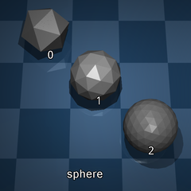
- sphere (subdivision)
对单位正二十面体反复细分得到的网格（“icosphere”）。对于 \(s\) 次细分，该网格有 \(V = 2 + 10 \cdot 4^s\) 个顶点和 \(F = 20 \cdot 4^s\) 个面。
Repeated subdivisions of a unit icosahedron (“icosphere”). For \(s\) subdivisions, this mesh has \(V = 2 + 10 \cdot 4^s\) vertices and \(F = 20 \cdot 4^s\) faces.subdivision：[0-4] 内的整数：应用于二十面体各面的细分次数。
subdivision: integer in [0-4]: The number of subdivisions to apply to icosahedron faces.
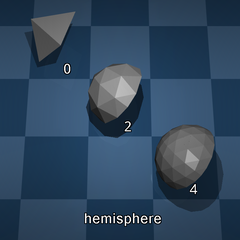
- hemisphere (resolution)
四边形投影的半球。对于分辨率 \(r\)，该网格在赤道上有 \(4r\) 条边和顶点，总共有 \(V = 2 + 2(r+1)(r+2)\) 个顶点和 \(F = 4(r+1)(r+2)\) 个面。
Quad-projected hemisphere. For resolution \(r\), this mesh has \(4r\) edges and vertices on the equator and a total of \(V = 2 + 2(r+1)(r+2)\) vertices and \(F = 4(r+1)(r+2)\) faces.resolution：[0-10] 内的整数：半球一个象限的赤道离散化。
resolution: integer in [0-10]: Equator discretization of one hemisphere quadrant.
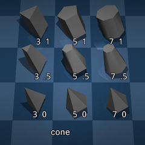
- cone (nvert, radius)
z = -1 处的正单位多边形与 z = 1 处具有给定半径的单位多边形的凸包。如果 radius 为 1，则网格是一个棱柱。如果 radius 为 0，则只在 (0, 0, 1) 处放置一个顶点，网格是一个离散圆锥。如果 radius 为正，则网格是一个截断的离散圆锥。
The convex hull of a regular unit polygon at z = -1 and a unit polygon with the given radius at z = 1. If radius is 1, the mesh a prism. If radius is 0, only a single vertex is placed at (0, 0, 1) and the mesh is a discrete cone. If radius is positive, the mesh is a truncated discrete cone.nvert：整数 >= 3：多边形的顶点数。
radius：[0, 1] 内的实数：顶面的半径。nvert: integer >= 3: The number vertices in the polygon.
radius: real in [0, 1]: The radius of the top face.
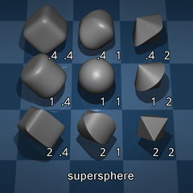
- supersphere (resolution, e, n)
球的推广，也称为超椭球（我们使用“supersphere”，因为半轴的重新缩放由 scale 属性完成）。如果 n 和 e 参数都为 1，则该形状是一个球。更多细节请参见 这里。
A generalization of a sphere, also known as a superellipsoid (we use ‘supersphere’ since semiaxis rescaling is performed by the scale attribute). If the n and e parameters are both 1, the shape is a sphere. See here for more details.resolution 整数 >= 3：经度和纬度的离散化。
e：实数 >= 0：“东西向”指数。
n：实数 >= 0：“南北向”指数。resolution integer >= 3: Longitude and latitude discretization.
e: real >= 0: The “east-west” exponent.
n: real >= 0: The “north-south” exponent.
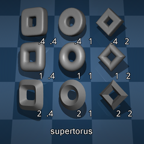
- supertorus (resolution, radius, s, t)
圆环的推广，其主半径为 1，副半径为给定值。如果 s 和 t 参数都为 1，则该形状是一个圆环。更多细节请参见 这里。请注意，该形状本质上是非凸的，适用关于网格碰撞的 标准注意事项。
A generalization of a torus with major radius of 1 and given minor radius. If the s and t parameters are both 1, the shape is a torus. See here for more details. Note that this shape is inherently non-convex, and the standard caveats about mesh collisions apply.resolution 整数 >= 3：两个圆周的离散化。
radius：(0, 1] 内的实数：圆环的副半径。
s：实数 > 0：副截面的“方度”。
t：实数 > 0：主截面的“方度”。resolution integer >= 3: Discretization of both circumfrences.
radius: real in (0, 1]: The minor radius of the torus.
s: real > 0: The “squareness” of minor sections.
t: real > 0: The “squareness” of major sections.
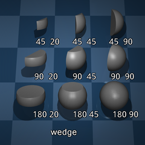
- wedge (res_phi, res_theta, fov_phi, fov_theta, gamma)
球坐标系中单位球壳的一个切片。该网格设计用于 触觉传感器，该传感器在顶点处报告数据。
A slice of a unit spherical shell in spherical coordinates. This mesh is designed to be used by the tactile sensor, which reports data at the vertices.res_phi：整数 >= 0：切片的垂直分辨率。
res_theta：整数 >= 0：切片的水平分辨率。
fov_phi：(0, 180] 内的实数：水平视场角（度）。
fov_phi：(0, 90) 内的实数：垂直视场角（度）。
gamma：[0, 1] 内的实数：离散化的中心凹形变。res_phi: integer >= 0: The vertical resolution of the slice.
res_theta: integer >= 0: The horizontal resolution of the slice.
fov_phi: real in (0, 180]: The horizontal field of view (degrees).
fov_phi: real in (0, 90): The vertical field of view (degrees).
gamma: real in [0, 1]: Foveal deformation of the discretization.- plate (res_x, res_y)
在每个维度上具有给定分辨率的矩形板。该网格设计用于 触觉传感器，该传感器在顶点处报告数据。
A rectangular plate with given resolution in each dimension. This mesh is designed to be used by the tactile sensor, which reports data at the vertices.res_x：整数 > 0：板的水平分辨率。
res_y：整数 > 0：板的垂直分辨率。res_x: integer > 0: The horizontal resolution of the plate.
res_y: integer > 0: The vertical resolution of the plate.- grid (count[3], spacing[3], [dim])
规则的顶点网格。如果
dim为 3（默认），则创建体积四面体网格。如果dim为 2，则创建三角化的二维表面网格。A regular grid of vertices. Ifdimis 3 (default), creates a volumetric tetrahedral mesh. Ifdimis 2, creates a triangulated 2D surface mesh.count：3 个整数 > 0：沿每个轴的顶点数；在
dim之外的轴上必须为 1。
spacing：3 个实数：沿每个轴的网格点间距。
dim：[2, 3] 内的可选整数（默认 3）：网格维数。count: 3 integers > 0: Number of vertices along each axis; must be 1 along the axes beyonddim.
spacing: 3 reals: Spacing between grid points along each axis.
dim: optional integer in [2, 3] (default 3): Mesh dimensionality.- box (count[3], spacing[3], [dim])
程序化生成的盒形网格。如果
dim为 3（默认），则创建体积四面体网格。如果dim为 2，则创建顶部开口的三角形表面网格（省略+z面）。A procedural box mesh. Ifdimis 3 (default), creates a volumetric tetrahedral mesh. Ifdimis 2, creates an open-top triangular surface mesh (the+zface is omitted).count：3 个整数 >= 2：沿每个轴的网格分辨率。
spacing：3 个实数：沿每个轴的间距。
dim：[2, 3] 内的可选整数（默认 3）：网格维数。count: 3 integers >= 2: Grid resolution along each axis.
spacing: 3 reals: Spacing along each axis.
dim: optional integer in [2, 3] (default 3): Mesh dimensionality.- cylinder (count[3], spacing[3], [dim])
程序化生成的圆柱网格。如果
dim为 3（默认），则创建体积四面体网格。如果dim为 2，则创建顶部开口的三角形表面网格（省略+z面）。A procedural cylinder mesh. Ifdimis 3 (default), creates a volumetric tetrahedral mesh. Ifdimis 2, creates an open-top triangular surface mesh (the+zface is omitted).count：3 个整数 >= 2：沿每个轴的网格分辨率。
spacing：3 个实数：沿每个轴的间距。
dim：[2, 3] 内的可选整数（默认 3）：网格维数。count: 3 integers >= 2: Grid resolution along each axis.
spacing: 3 reals: Spacing along each axis.
dim: optional integer in [2, 3] (default 3): Mesh dimensionality.- ellipsoid (count[3], spacing[3], [dim])
程序化生成的椭球网格。如果
dim为 3（默认），则创建体积四面体网格。如果dim为 2，则创建顶部开口的三角形表面网格（省略+z面）。A procedural ellipsoid mesh. Ifdimis 3 (default), creates a volumetric tetrahedral mesh. Ifdimis 2, creates an open-top triangular surface mesh (the+zface is omitted).count：3 个整数 >= 2：沿每个轴的网格分辨率。
spacing：3 个实数：沿每个轴的间距。
dim：[2, 3] 内的可选整数（默认 3）：网格维数。count: 3 integers >= 2: Grid resolution along each axis.
spacing: 3 reals: Spacing along each axis.
dim: optional integer in [2, 3] (default 3): Mesh dimensionality.- square (count[3], spacing[3])
二维三角化的正方形表面网格。
A 2D triangulated square surface mesh.count：3 个整数（前 2 个必须 > 0，最后一个必须为 1）：沿 x 轴和 y 轴的顶点数。
spacing：3 个实数：沿每个轴的间距。count: 3 integers (first 2 must be > 0, last must be 1): Number of vertices along the x and y axes.
spacing: 3 reals: Spacing along each axis.- disc (count[3], spacing[3])
二维三角化的圆盘表面网格。
A 2D triangulated disc surface mesh.count：3 个整数（前 2 个必须 > 0，最后一个必须为 1）：沿径向和角向的顶点数。
spacing：3 个实数：沿每个轴的间距。count: 3 integers (first 2 must be > 0, last must be 1): Number of vertices along the radial and angular directions.
spacing: 3 reals: Spacing along each axis.
- params: real(nparam), optional
用于生成内置网格的参数。参数的数量和类型及其语义取决于网格类型。详情请参见 mesh/builtin。
square和disc类型，以及dim< 3 的grid、box、cylinder和ellipsoid类型，会把 legacy 的 inertia （包括显式指定的）改为 shell，因为它们没有体积。The parameters used to generate a builtin mesh. The number and type of parameters and their semantic depends on the mesh type. See mesh/builtin for details. Thesquareanddisctypes, and thegrid,box,cylinderandellipsoidtypes withdim< 3, change a legacy inertia (including an explicit one) to shell, since they have no volume.
- material: string, optional
对于未指定自身材质的网格 geom，使用的后备材质。
Fallback material for mesh geoms that do not specify their own material.
mesh/plugin #
将该网格与一个 引擎插件 关联。plugin 或 instance 二者必有其一。
- plugin: string, optional
插件标识符，用于隐式插件实例化。
Plugin identifier, used for implicit plugin instantiation.
- instance: string, optional
实例名称，用于显式插件实例化。
Instance name, used for explicit plugin instantiation.
asset/hfield#
该元素创建一个高度场（height field）资源，之后可由类型为 "hfield" 的 geom 引用。高度场也称为地形图，是由高程数据构成的二维矩阵。数据可以通过以下三种方式之一指定：
高程数据可以从 PNG 文件加载。图像在内部被转换为灰度图，并用每个像素的亮度来定义高程；白色表示高，黑色表示低。
The elevation data can be loaded from a PNG file. The image is converted internally to gray scale, and the intensity of each pixel is used to define elevation; white is high and black is low.高程数据可以从下述自定义格式的二进制文件加载。与 MuJoCo 中使用的所有其他矩阵一样，数据按行主序排列，就像图像中的像素一样。若数据大小为 nrow 乘 ncol，则文件必须有 4*(2+nrow*ncol) 字节：
The elevation data can be loaded from a binary file in the custom format described below. As with all other matrices used in MuJoCo, the data ordering is row-major, like pixels in an image. If the data size is nrow-by-ncol, the file must have 4*(2+nrow*ncol) bytes:(int32) nrow (int32) ncol (float32) data[nrow*ncol]
高程数据可以在编译时保持未定义。这通过指定属性 nrow 和 ncol 来实现。编译器会在 mjModel 中为高度场数据分配空间并将其置 0。随后用户可以在运行时生成自定义的高度场，既可以通过编程方式，也可以使用传感器（sensor）数据。
The elevation data can be left undefined at compile time. This is done by specifying the attributes nrow and ncol. The compiler allocates space for the height field data in mjModel and sets it to 0. The user can then generate a custom height field at runtime, either programmatically or using sensor data.
- name: string, optional
高度场的名称，用于引用。如果省略名称而指定了文件名，则高度场名称等于去掉路径和扩展名的文件名。
Name of the height field, used for referencing. If the name is omitted and a file name is specified, the height field name equals the file name without the path and extension.
- content_type: string, optional
如果指定了 file 属性，则该属性设置待加载文件的 媒体类型 （旧称 MIME 类型）。任何文件扩展名都会被覆盖。目前支持
image/png和image/vnd.mujoco.hfield。If the file attribute is specified, then this sets the Media Type (formerly known as MIME types) of the file to be loaded. Any filename extensions will be overloaded. Currentlyimage/pngandimage/vnd.mujoco.hfieldare supported.
- file: string, optional
如果指定了该属性，则从给定文件加载高程数据。如果文件扩展名为 ".png"（不区分大小写），则该文件被视为 PNG 文件。否则它被视为上述自定义格式的二进制文件。数据的行数和列数由文件内容确定。从文件加载数据的同时将下面的 nrow 或 ncol 设置为非零值会导致编译错误，即使这些设置与文件内容一致也是如此。
If this attribute is specified, the elevation data is loaded from the given file. If the file extension is “.png”, not case-sensitive, the file is treated as a PNG file. Otherwise it is treated as a binary file in the above custom format. The number of rows and columns in the data are determined from the file contents. Loading data from a file and setting nrow or ncol below to non-zero values results is compile error, even if these settings are consistent with the file contents.
- nrow: int, "0"
该属性和下一个属性用于在 mjModel 中分配高度场。如果未设置 elevation 属性，则高程数据设为 0。该属性指定高程数据矩阵的行数。默认值 0 表示数据将从文件加载，并由文件推断矩阵的大小。
This attribute and the next are used to allocate a height field in mjModel. If the elevation attribute is not set, the elevation data is set to 0. This attribute specifies the number of rows in the elevation data matrix. The default value of 0 means that the data will be loaded from a file, which will be used to infer the size of the matrix.
- ncol: int, "0"
该属性指定高程数据矩阵的列数。
This attribute specifies the number of columns in the elevation data matrix.
- elevation: real(nrow*ncol), optional
该属性指定高程数据矩阵。如果最大值与最小值之差不为 0，则数值会自动归一化到 0 到 1 之间：先减去最小值，再除以（最大值-最小值）之差。如果未提供，则数值设为 0。注意，mjModel 和 mjsHField 中数据的行序相对于 XML 中的顺序是翻转的，即从下到上。
This attribute specifies the elevation data matrix. Values are automatically normalized to lie between 0 and 1 by first subtracting the minimum value and then dividing by the (maximum-minimum) difference, if not 0. If not provided, values are set to 0. Note that the row order of data in mjModel and mjsHField is flipped w.r.t. the order in XML i.e., it is bottom-to-top.
- size: real(4), required
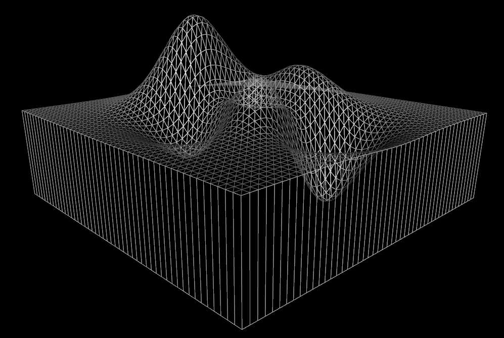
这里的四个数字是 (radius_x, radius_y, elevation_z, base_z)。高度场以引用它的 geom 的局部坐标系（frame）为中心。高程沿 +Z 方向。前两个数字指定定义高度场的矩形在 X 和 Y 方向上的范围（或“半径”）。这对矩形来说可能显得不自然，但对球体和其他 geom 类型来说是自然的，而且我们倾向于在整个模型中使用相同的约定。第三个数字是最大高程；它对已归一化到 [0-1] 的高程数据进行缩放。因此最小高程点位于 Z=0，最大高程点位于 Z=elevation_z。最后一个数字是 -Z 方向上一个长方体的深度，它作为高度场的“底座”。如果没有这个自动生成的长方体，高度场在归一化高程数据为零的地方厚度将为零。与施加全局单边约束（constraint）的平面不同，高度场被视为常规 geom 的并集，因此不存在“位于”高度场“之下”的概念。相反，一个 geom 要么在高度场之内，要么在高度场之外，这就是内部部分必须具有非零厚度的原因。右侧的示例是以我们的自定义高度场格式保存的 MATLAB “peaks”曲面，并以 size = "1 1 1 0.1" 作为资源加载。长方体的水平尺寸为 2，最大高程与最小高程之差为 1，而添加在最小高程点下方的底座深度为 0.1。
The four numbers here are (radius_x, radius_y, elevation_z, base_z). The height field is centered at the referencing geom’s local frame. Elevation is in the +Z direction. The first two numbers specify the X and Y extent (or “radius”) of the rectangle over which the height field is defined. This may seem unnatural for rectangles, but it is natural for spheres and other geom types, and we prefer to use the same convention throughout the model. The third number is the maximum elevation; it scales the elevation data which is normalized to [0-1]. Thus the minimum elevation point is at Z=0 and the maximum elevation point is at Z=elevation_z. The last number is the depth of a box in the -Z direction serving as a “base” for the height field. Without this automatically generated box, the height field would have zero thickness at places there the normalized elevation data is zero. Unlike planes which impose global unilateral constraints, height fields are treated as unions of regular geoms, so there is no notion of being “under” the height field. Instead a geom is either inside or outside the height field - which is why the inside part must have non-zero thickness. The example on the right is the MATLAB “peaks” surface saved in our custom height field format, and loaded as an asset with size = “1 1 1 0.1”. The horizontal size of the box is 2, the difference between the maximum and minimum elevation is 1, and the depth of the base added below the minimum elevation point is 0.1.

asset/skin#
蒙皮 被归入 deformable 元素之下。在此处指定它们已被弃用。
asset/texture#
该元素创建一个纹理资源，它随后被 material 资源引用，而 material 最终被需要贴纹理的模型元素引用。
纹理数据可以从文件加载，也可以由编译器生成为程序化纹理。由于不同的纹理类型需要不同的参数，对于任何给定的纹理，下面的属性中只有一个子集会被用到。此外还提供了从单独的图像文件加载立方体纹理和天空盒纹理的功能。
支持两种用于加载纹理的文件格式：PNG 和 KTX。加载器会根据文件名的扩展名来确定使用哪种格式。或者，也可以使用 content_type 属性来显式指定格式。仅支持 image/png 和 image/ktx 。
image/png and image/ktx are supported.- name: string, optional
与所有其他资源一样，纹理必须有名称才能被引用。但是，如果纹理是通过 file 属性从单个文件加载的，则可以省略显式名称，此时文件名（不含路径和扩展名）成为纹理名称。如果解析后的名称为空且纹理类型不是 "skybox"，编译器将产生错误。
As with all other assets, a texture must have a name in order to be referenced. However if the texture is loaded from a single file with the file attribute, the explicit name can be omitted and the file name (without the path and extension) becomes the texture name. If the name after parsing is empty and the texture type is not “skybox”, the compiler will generate an error.
- class: string, optional
用于设置未指定属性的默认类（default class）。
Defaults class for setting unspecified attributes.
- type: [2d, cube, skybox], "cube"
该属性决定纹理如何表示并映射到物体上。它也决定其余哪些属性是相关的。各关键字的含义如下：
This attribute determines how the texture is represented and mapped to objects. It also determines which of the remaining attributes are relevant. The keywords have the following meaning:cube 类型的效果是将一个纹理立方体紧缩包裹在物体上。除了 material 的 texuniform 属性提供的调整之外，该过程是自动的。在内部，GPU 构造一条从物体中心指向每个像素（更准确地说是片元）的射线，找出这条射线与立方体表面的交点（立方体与物体具有相同的中心），并使用相应的纹理颜色。定义立方体的六幅方形图像可以相同也可以不同；如果它们相同，则 mjModel 中只存储一份副本。有四种指定纹理数据的机制：
The cube type has the effect of shrink-wrapping a texture cube over an object. Apart from the adjustment provided by the texuniform attribute of material, the process is automatic. Internally the GPU constructs a ray from the center of the object to each pixel (or rather fragment), finds the intersection of this ray with the cube surface (the cube and the object have the same center), and uses the corresponding texture color. The six square images defining the cube can be the same or different; if they are the same, only one copy is stored in mjModel. There are four mechanisms for specifying the texture data:通过 file 属性指定的单个文件（PNG 或 KTX），其中包含一幅方形图像，该图像在立方体的每个面上重复。这是最常见的做法。例如，如果目标是营造木头的外观，在所有面上重复同一幅图像就足够了。
Single file (PNG or KTX) specified with the file attribute, containing a square image which is repeated on each side of the cube. This is the most common approach. If for example the goal is to create the appearance of wood, repeating the same image on all sides is sufficient.包含一幅复合图像的单个文件，编译器从中提取六个方块。复合图像的布局由 gridsize 和 gridlayout 属性确定。
Single file containing a composite image from which the six squares are extracted by the compiler. The layout of the composite image is determined by the gridsize and gridlayout attributes.通过 fileright、fileleft 等属性指定的六个独立文件，每个文件包含一幅方形图像。
Six separate files specified with the attributes fileright, fileleft etc, each containing one square image.内部生成的程序化纹理。程序化纹理的类型由 builtin 属性确定。纹理数据还取决于下文记录的若干参数。
Procedural texture generated internally. The type of procedural texture is determined by the builtin attribute. The texture data also depends on a number of parameters documented below.
skybox 类型与立方体映射非常相似，事实上纹理数据的指定方式完全相同。唯一的区别是可视化器（visualizer）使用模型中定义的第一个这样的纹理来渲染（rendering）天空盒。天空盒是一个以相机为中心且始终随相机移动的大盒子，其尺寸由远裁剪平面自动确定。其理念是天空盒上的图像看起来是静止的，仿佛它们在无限远处。如果这样的纹理被应用于常规物体的材质所引用，则效果等同于立方体贴图。但请注意，适合做天空盒的图像很少适合用来给物体贴纹理。
The skybox type is very similar to cube mapping, and in fact the texture data is specified in exactly the same way. The only difference is that the visualizer uses the first such texture defined in the model to render a skybox. This is a large box centered at the camera and always moving with it, with size determined automatically from the far clipping plane. The idea is that images on the skybox appear stationary, as if they are infinitely far away. If such a texture is referenced from a material applied to a regular object, the effect is equivalent to a cube map. Note however that the images suitable for skyboxes are rarely suitable for texturing objects.2d 类型使用 纹理坐标 （又称 UV 坐标）将二维图像映射到三维物体上。但是，UV 坐标只对网格可用。对于基本几何体 geom，纹理使用 geom 的局部 XY 坐标映射到物体表面，实际上是沿 Z 轴投影纹理。这种映射只适用于平面和高度场，因为它们的顶面始终朝向 Z 轴。与立方体纹理必须为方形的各个面不同，2d 纹理可以是矩形。缩放可以通过 material 的 texrepeat 属性控制。数据可以从单个文件加载，也可以程序化地创建。
The 2d type maps a 2D image to a 3D object using texture coordinates (a.k.a UV coordinates). However, UV coordinates are only available for meshes. For primitive geoms, the texture is mapped to the object surface using the local XY coordinates of the geom, effectively projecting the texture along the Z axis. This sort of mapping is only suitable for planes and height fields, since their top surfaces always face the Z axis. 2d textures can be rectangular, unlike the sides of cube textures which must be square. The scaling can be controlled with the texrepeat attribute of material. The data can be loaded from a single file or created procedurally.
- colorspace: [auto, linear, sRGB], "auto"
该属性决定纹理的色彩空间。默认值
auto表示色彩空间将由图像文件本身确定。如果文件中没有定义色彩空间，则假定为linear。This attribute determines the color space of the texture. The default valueautomeans that the color space will be determined from the image file itself. If no color space is defined in the file, thenlinearis assumed.
- content_type: string, optional
如果指定了 file 属性，则该属性设置待加载文件的 媒体类型 （旧称 MIME 类型）。任何文件扩展名都会被忽略。目前支持
image/png和image/ktx。If the file attribute is specified, then this sets the Media Type (formerly known as MIME types) of the file to be loaded. Any filename extensions will be ignored. Currentlyimage/pngandimage/ktxare supported.
- file: string, optional
如果指定了该属性，且下面的 builtin 属性设置为 "none"，则从单个文件加载纹理数据。关于文件路径，参见 compiler 的 texturedir 属性。
If this attribute is specified, and the builtin attribute below is set to “none”, the texture data is loaded from a single file. See the texturedir attribute of compiler regarding the file path.
- gridsize: int(2), "1 1"
当立方体或天空盒纹理从单个文件加载时，该属性和下一个属性指定如何从这一幅图像中得到纹理立方体的六个方形面。默认设置 "1 1" 表示同一幅图像在立方体的所有面上重复。否则，图像被解释为一个网格，六个面从中提取。这里的两个整数分别对应网格的行数和列数。每个整数必须为正，且两者的乘积不能超过 12。图像的行数和列数必须分别是网格行数和列数的整数倍，并且这两个倍数必须相等，这样提取出的图像才是方形的。
When a cube or skybox texture is loaded from a single file, this attribute and the next specify how the six square sides of the texture cube are obtained from the single image. The default setting “1 1” means that the same image is repeated on all sides of the cube. Otherwise the image is interpreted as a grid from which the six sides are extracted. The two integers here correspond to the number of rows and columns in the grid. Each integer must be positive and the product of the two cannot exceed 12. The number of rows and columns in the image must be integer multiples of the number of rows and columns in the grid, and these two multiples must be equal, so that the extracted images are square.
- gridlayout: string, "............"
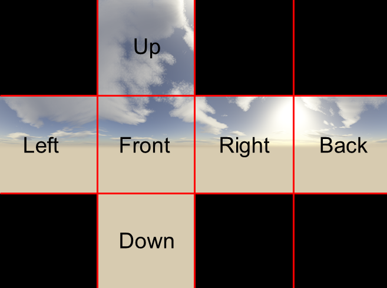
当立方体或天空盒纹理从单个文件加载，且网格大小不是 "1 1" 时，该属性指定使用哪些网格单元，以及它们对应立方体的哪个面。网上有许多以复合图像形式提供的天空盒纹理，但它们并不采用相同的约定，这就是我们设计一种灵活的解码机制的原因。这里指定的字符串必须由集合 {'.', 'R', 'L', 'U', 'D', 'F', 'B'} 中的字符组成。字符数量必须等于两个网格尺寸的乘积。如果将 gridsize 设置为与继承的默认值不同的值，却没有指定 gridlayout，则 gridlayout 会被重置为全
'.'。网格按行主序扫描。'.' 字符表示未使用的单元。其他字符分别是 Right、Left、Up、Down、Front、Back 的首字母；坐标系说明见下文。如果某个面的符号出现不止一次，则使用最后一次定义。如果省略某个面，则用 rgb1 属性指定的颜色填充。例如，下面的沙漠景观可以使用 gridsize = "3 4" 和 gridlayout = ".U..LFRB.D.." 作为天空盒或立方体贴图加载。不带标记的全分辨率图像文件可以从 此处 下载。When a cube or skybox texture is loaded from a single file, and the grid size is different from “1 1”, this attribute specifies which grid cells are used and which side of the cube they correspond to. There are many skybox textures available online as composite images, but they do not use the same convention, which is why we have designed a flexible mechanism for decoding them. The string specified here must be composed of characters from the set {‘.’, ‘R’, ‘L’, ‘U’, ‘D’, ‘F’, ‘B’}. The number of characters must equal the product of the two grid sizes. Setting gridsize to a value that differs from the inherited default without specifying gridlayout resets gridlayout to all'.'. The grid is scanned in row-major order. The ‘.’ character denotes an unused cell. The other characters are the first letters of Right, Left, Up, Down, Front, Back; see below for coordinate frame description. If the symbol for a given side appears more than once, the last definition is used. If a given side is omitted, it is filled with the color specified by the rgb1 attribute. For example, the desert landscape below can be loaded as a skybox or a cube map using gridsize = “3 4” and gridlayout = “.U..LFRB.D..” The full-resolution image file without the markings can be downloaded here.


- fileright, fileleft, fileup, filedown, filefront, filebackstring, optional
这些属性用于从单独的文件加载立方体或天空盒纹理的六个面，但仅当省略 file 属性且 builtin 属性设置为 "none" 时才有效。如果省略其中任何一个属性，则相应的面用 rgb1 属性指定的颜色填充。这里的坐标系比较特殊。当使用默认自由相机在其初始构型下观察天空盒时，Right、Left、Up、Down 这几个面出现在人们预期的位置。Back 面出现在观察者的正前方，因为观察者位于盒子的中间并面向其背面。不过这里有个复杂之处。在 MuJoCo 中 +Z 轴指向上方，而现有的天空盒纹理（其设计并非易事）往往假定 +Y 轴指向上方。更改坐标不能仅靠重命名文件来完成；而必须对某些图像进行转置和/或镜像。为避免这一复杂问题，我们将天空盒绕 +X 轴旋转 90 度后渲染，这违背了我们的约定。然而对常规物体我们无法这样做。因此，天空盒和立方体纹理在常规物体上的映射，以物体的局部坐标系表示，如下：Right = +X, Left = -X, Up = +Y, Down = -Y, Front = +Z, Back = -Z.
These attributes are used to load the six sides of a cube or skybox texture from separate files, but only if the file attribute is omitted and the builtin attribute is set to “none”. If any one of these attributes are omitted, the corresponding side is filled with the color specified by the rgb1 attribute. The coordinate frame here is unusual. When a skybox is viewed with the default free camera in its initial configuration, the Right, Left, Up, Down sides appear where one would expect them. The Back side appears in front of the viewer, because the viewer is in the middle of the box and is facing its back. There is however a complication. In MuJoCo the +Z axis points up, while existing skybox textures (which are non-trivial to design) tend to assume that the +Y axis points up. Changing coordinates cannot be done by merely renaming files; instead one would have to transpose and/or mirror some of the images. To avoid this complication, we render the skybox rotated by 90 deg around the +X axis, in violation of our convention. However we cannot do the same for regular objects. Thus the mapping of skybox and cube textures on regular objects, expressed in the local frame of the object, is as follows: Right = +X, Left = -X, Up = +Y, Down = -Y, Front = +Z, Back = -Z.
- builtin: [none, gradient, checker, flat], "none"
该属性及其余属性控制程序化纹理的生成。如果该属性的值不是 "none"，则纹理被视为程序化纹理，任何文件名都会被忽略。各关键字的含义如下：
This and the remaining attributes control the generation of procedural textures. If the value of this attribute is different from “none”, the texture is treated as procedural and any file names are ignored. The keywords have the following meaning:- gradient
生成从 rgb1 到 rgb2 的颜色渐变。颜色空间中的插值通过 sigmoid 函数完成。对于立方体和天空盒纹理，渐变沿 +Y 轴进行，即在天空盒渲染中从上到下。
Generates a color gradient from rgb1 to rgb2. The interpolation in color space is done through a sigmoid function. For cube and skybox textures the gradient is along the +Y axis, i.e., from top to bottom for skybox rendering.- checker
生成 2×2 的棋盘格图案，颜色由 rgb1 和 rgb2 交替给出。这适合渲染地平面，也适合标记具有旋转对称性的物体。注意，2d 纹理可以缩放，从而按需要多次重复该图案。对于立方体和天空盒纹理，棋盘格图案绘制在立方体的每个面上。
Generates a 2-by-2 checker pattern with alternating colors given by rgb1 and rgb2. This is suitable for rendering ground planes and also for marking objects with rotational symmetries. Note that 2d textures can be scaled so as to repeat the pattern as many times as necessary. For cube and skybox textures, the checker pattern is painted on each side of the cube.- flat
用 rgb1 填充整个纹理，立方体和天空盒纹理的底面除外，底面用 rgb2 填充。
Fills the entire texture with rgb1, except for the bottom face of cube and skybox textures which is filled with rgb2.
- rgb1: real(3), "0.8 0.8 0.8"
用于程序化纹理生成的第一种颜色。该颜色也用于填充从文件加载的立方体和天空盒纹理中缺失的面。该向量以及所有其他 RGB(A) 向量的分量应在范围 [0 1] 内。
The first color used for procedural texture generation. This color is also used to fill missing sides of cube and skybox textures loaded from files. The components of this and all other RGB(A) vectors should be in the range [0 1].
- rgb2: real(3), "0.5 0.5 0.5"
用于程序化纹理生成的第二种颜色。
The second color used for procedural texture generation.
- mark: [none, edge, cross, random], "none"
程序化纹理可以在由 builtin 类型确定的颜色之上，用 markrgb 颜色加以标记。"edge" 表示标记所有纹理图像的边缘。"cross" 表示在每幅图像的中间标记一个十字。"random" 表示标记随机选取的像素。所有标记都是一像素宽，因此标记在较小的纹理上显得更大、更模糊。
Procedural textures can be marked with the markrgb color, on top of the colors determined by the builtin type. “edge” means that the edges of all texture images are marked. “cross” means that a cross is marked in the middle of each image. “random” means that randomly chosen pixels are marked. All markings are one-pixel wide, thus the markings appear larger and more diffuse on smaller textures.
- markrgb: real(3), "0 0 0"
用于程序化纹理标记的颜色。
The color used for procedural texture markings.
- random: real, "0.01"
当 mark 属性设置为 "random" 时，该属性决定点亮每个像素的概率。注意，较大的纹理有更多的像素，而这里的概率独立地应用于每个像素，因此需要联合调整纹理尺寸和概率。与渐变天空盒纹理配合使用，可以营造出繁星夜空的外观。随机数生成器以固定的种子初始化。
When the mark attribute is set to “random”, this attribute determines the probability of turning on each pixel. Note that larger textures have more pixels, and the probability here is applied independently to each pixel – thus the texture size and probability need to be adjusted jointly. Together with a gradient skybox texture, this can create the appearance of a night sky with stars. The random number generator is initialized with a fixed seed.
- width: int, "0"
程序化纹理的宽度，即图像的列数。较大的值通常产生质量更高的图像，不过在某些情况下（例如棋盘格图案）较小的值就已足够。对于从文件加载的纹理，该属性被忽略。
The width of a procedural texture, i.e., the number of columns in the image. Larger values usually result in higher quality images, although in some cases (e.g. checker patterns) small values are sufficient. For textures loaded from files, this attribute is ignored.
- height: int, "0"
程序化纹理的高度，即图像的行数。对于立方体和天空盒纹理，该属性被忽略，高度设为宽度的 6 倍。对于从文件加载的纹理，该属性被忽略。
The height of the procedural texture, i.e., the number of rows in the image. For cube and skybox textures, this attribute is ignored and the height is set to 6 times the width. For textures loaded from files, this attribute is ignored.
- hflip: [false, true], "false"
如果为 true，则从文件加载的图像在水平方向上翻转。不影响程序化纹理。
If true, images loaded from file are flipped in the horizontal direction. Does not affect procedural textures.
- vflip: [false, true], "false"
如果为 true，则从文件加载的图像在垂直方向上翻转。不影响程序化纹理。
If true, images loaded from file are flipped in the vertical direction. Does not affect procedural textures.
- nchannel: int, "3"
纹理图像文件中的通道数。这允许加载 4 通道纹理（RGBA）或单通道纹理（例如用于基于物理的渲染属性，如粗糙度或金属度）。程序化、立方体和天空盒纹理必须有 3 个通道。
The number of channels in the texture image file. This allows loading 4-channel textures (RGBA) or single-channel textures (e.g., for Physics-Based Rendering properties such as roughness or metallic). Procedural, cube and skybox textures must have 3 channels.
- embed: [false, true, auto], "auto"
该纹理的像素是保存在 mjModel 中，还是让纹理保持 按引用。"auto" 遵循编译器的 passthrough 策略。"true" 无论策略如何都将像素保留在模型中，例如用于在运行时被写入的纹理。"false" 要求无论策略如何纹理都按引用，对于无法按引用的纹理，这会导致编译错误：程序化的纹理、以缓冲区或六个独立文件给出的纹理、被翻转的纹理、复合网格纹理，或其文件由 虚拟文件系统 从内存提供的纹理。
Whether the pixels of this texture are in mjModel or the texture is left by reference. “auto” follows the passthrough policy of the compiler. “true” keeps the pixels in the model whatever the policy says, for example for a texture which is written into at runtime. “false” asks for the texture to be by reference whatever the policy says, and is a compile error for a texture which cannot be: one which is procedural, given as a buffer or as six separate files, flipped, a composite grid, or whose file is served from memory by a virtual file system.
asset/material#
该元素用于创建材质资源。材质可以被 皮肤、geoms、sites 和 肌腱 引用，以设置它们的外观。请注意，上述所有元素也都有一个局部的 rgba 属性，当只需要调整颜色时，该属性更加方便，因为它无需创建材质并引用材质。材质可用于调整颜色之外的外观属性。不过，一旦创建了材质，通常更自然的做法是通过材质来指定颜色，这样所有外观属性就被归并在一起。
- name: string, required
材质的名称，用于引用。
Name of the material, used for referencing.
- class: string, optional
用于设置未指定属性的默认类（defaults class）。
Defaults class for setting unspecified attributes.
- texture: string, optional
如果指定了该属性，则该材质关联一个纹理。从模型元素引用该材质时，会将该纹理应用到该元素上。请注意，该属性的值是纹理资源的名称，而不是纹理文件名。纹理不能在材质定义中加载；它们必须通过 texture 元素显式加载，然后在此处引用。此处引用的纹理用于指定 RGB 值。对于高级渲染（例如基于物理的渲染，Physics-Based Rendering），需要指定更多的纹理类型（例如粗糙度、金属度）。在这种情况下，应省略该 texture 属性，并使用 layer 子元素来指定各纹理类型。但请注意，内置渲染器不支持 PBR 属性，因此这些高级渲染特性仅在使用外部渲染器时可用。
If this attribute is specified, the material has a texture associated with it. Referencing the material from a model element will cause the texture to be applied to that element. Note that the value of this attribute is the name of a texture asset, not a texture file name. Textures cannot be loaded in the material definition; instead they must be loaded explicitly via the texture element and then referenced here. The texture referenced here is used for specifying the RGB values. For advanced rendering (e.g., Physics-Based Rendering), more texture types need to be specified (e.g., roughness, metallic). In this case, this texture attribute should be omitted, and the texture types should be specified using layer child elements. Note however that the built-in renderer does not support PBR properties, so these advanced rendering features are only available when using an external renderer.
- texrepeat: real(2), "1 1"
该属性适用于类型为 "2d" 的纹理。它指定纹理图像重复的次数，相对于物体尺寸还是空间单位，由下一个属性决定。
This attribute applies to textures of type “2d”. It specifies how many times the texture image is repeated, relative to either the object size or the spatial unit, as determined by the next attribute.
- texuniform: [false, true], "false"
对于立方体纹理，该属性控制立方体贴图的应用方式。默认值 "false" 表示直接应用立方体贴图，使用物体的实际尺寸。值 "true" 表示先将纹理映射到单位物体上，再缩放到其实际尺寸（几何基元由渲染器作为单位物体创建，然后再进行缩放）。在某些情况下，这会使纹理外观更加均匀，但一般而言，哪种设置能产生更好的结果取决于纹理和物体。对于 2d 纹理，该属性与上面的 texrepeat 相互作用。设 texrepeat 为 N。默认值 "false" 表示 2d 纹理在物体（朝向 z 方向的一侧）上重复 N 次。值 "true" 表示无论物体尺寸如何，2d 纹理都在一个空间单位上重复 N 次。
For cube textures, this attribute controls how cube mapping is applied. The default value “false” means apply cube mapping directly, using the actual size of the object. The value “true” maps the texture to a unit object before scaling it to its actual size (geometric primitives are created by the renderer as unit objects and then scaled). In some cases this leads to more uniform texture appearance, but in general, which settings produces better results depends on the texture and the object. For 2d textures, this attribute interacts with texrepeat above. Let texrepeat be N. The default value “false” means that the 2d texture is repeated N times over the (z-facing side of the) object. The value “true” means that the 2d texture is repeated N times over one spatial unit, regardless of object size.
- emission: real, "0"
OpenGL 中的发光（emission）采用 RGBA 格式，但我们只提供标量设置。OpenGL 发光向量的 RGB 分量等于材质颜色的 RGB 分量乘以此处指定的值。alpha 分量为 1。
Emission in OpenGL has the RGBA format, however we only provide a scalar setting. The RGB components of the OpenGL emission vector are the RGB components of the material color multiplied by the value specified here. The alpha component is 1.
- specular: real, "0.5"
OpenGL 中的镜面反射（specularity）采用 RGBA 格式，但我们只提供标量设置。OpenGL 镜面反射向量的 RGB 分量全部等于此处指定的值。alpha 分量为 1。该值应在 [0 1] 范围内。
Specularity in OpenGL has the RGBA format, however we only provide a scalar setting. The RGB components of the OpenGL specularity vector are all equal to the value specified here. The alpha component is 1. This value should be in the range [0 1].
- shininess: real, "0.5"
OpenGL 中的光泽度（shininess）是 0 到 128 之间的数。此处给出的值在传给 OpenGL 之前会乘以 128，因此它应在 [0 1] 范围内。值越大，对应的镜面高光越集中（因此高光的总量减少，但在视觉上更加突出）。它与镜面反射设置相互作用；详见 OpenGL 文档。
Shininess in OpenGL is a number between 0 and 128. The value given here is multiplied by 128 before passing it to OpenGL, so it should be in the range [0 1]. Larger values correspond to tighter specular highlight (thus reducing the overall amount of highlight but making it more salient visually). This interacts with the specularity setting; see OpenGL documentation for details.
- reflectance: real, "0"
该属性应在 [0 1] 范围内。如果值大于 0，并且材质应用于平面或长方体 geom，则渲染器会模拟反射。值越大，反射越强。对于长方体，只有朝向局部 +Z 轴方向的面具有反射性。要正确模拟反射需要光线追踪。该渲染器改用模板缓冲区（stencil buffer）和合适的投影来近似实现。模型中只有第一个反射性 geom 会按此方式渲染。这会在每个投射阴影的光源所增加的额外渲染通道之外，再增加一次遍历所有 geom 的额外渲染通道。
This attribute should be in the range [0 1]. If the value is greater than 0, and the material is applied to a plane or a box geom, the renderer will simulate reflectance. The larger the value, the stronger the reflectance. For boxes, only the face in the direction of the local +Z axis is reflective. Simulating reflectance properly requires ray-tracing. This renderer uses the stencil buffer and suitable projections instead to approximate it. Only the first reflective geom in the model is rendered as such. This adds one extra rendering pass through all geoms, in addition to the extra rendering pass added by each shadow-casting light.
- metallic: real, "-1"
该属性对应应用于整个材质的均匀金属度系数。该属性在 MuJoCo 的原生渲染器中不起作用，但在使用基于物理的渲染器渲染场景时可能有用。在这种情况下，如果指定了非负值，则应将该金属度值乘以金属度纹理的采样值，以得到材质最终的金属度。
This attribute corresponds to uniform metallicity coefficient applied to the entire material. This attribute has no effect in MuJoCo’s native renderer, but it can be useful when rendering scenes with a physically-based renderer. In this case, if a non-negative value is specified, this metallic value should be multiplied by the metallic texture sampled value to obtain the final metallicity of the material.
- roughness: real, "-1"
该属性对应应用于整个材质的均匀粗糙度系数。该属性在 MuJoCo 的原生渲染器中不起作用，但在使用基于物理的渲染器渲染场景时可能有用。在这种情况下，如果指定了非负值，则应将该粗糙度值乘以粗糙度纹理的采样值，以得到材质最终的粗糙度。
This attribute corresponds to uniform roughness coefficient applied to the entire material. This attribute has no effect in MuJoCo’s native renderer, but it can be useful when rendering scenes with a physically-based renderer. In this case, if a non-negative value is specified, this roughness value should be multiplied by the roughness texture sampled value to obtain the final roughness of the material.
- rgba: real(4), "1 1 1 1"
材质的颜色和透明度。所有分量应在 [0 1] 范围内。请注意，纹理颜色（如果已指定）与此处指定的颜色按分量相乘。因此默认值 "1 1 1 1" 的效果是保持纹理不变。当材质应用于定义了自己局部 rgba 属性的模型元素时，局部定义优先。请注意，这个“局部”定义实际上可能来自某个默认类。其余的材质属性始终适用。
Color and transparency of the material. All components should be in the range [0 1]. Note that the texture color (if assigned) and the color specified here are multiplied component-wise. Thus the default value of “1 1 1 1” has the effect of leaving the texture unchanged. When the material is applied to a model element which defines its own local rgba attribute, the local definition has precedence. Note that this “local” definition could in fact come from a defaults class. The remaining material properties always apply.
material/layer#
如果需要多个纹理来指定材质的外观，则不能使用 texture 属性，而必须改用 layer 子元素。同时指定 texture 属性和 layer 子元素是错误的。
- role: string, required
纹理的角色。有效取值、期望的通道数以及角色语义如下：
Role of the texture. The valid values, expected number of channels, and the role semantics are:取值
value通道数
channels描述
descriptionrgb
3
基础颜色 / 反照率（albedo）[red, green, blue]
base color / albedo [red, green, blue]normal
3
凹凸贴图（表面法线）
bump map (surface normals)occlusion
1
环境光遮蔽
ambient occlusionroughness
1
粗糙度
roughnessmetallic
1
金属度
metallicityopacity
1
不透明度（alpha 通道）
opacity (alpha channel)emissive
4
RGB 发光强度，曝光权重位于第 4 个通道
RGB light emission intensity, exposure weight in 4th channelorm
3
打包的 3 通道 [occlusion, roughness, metallic]
packed 3 channel [occlusion, roughness, metallic]rgba
4
打包的 4 通道 [red, green, blue, alpha]
packed 4 channel [red, green, blue, alpha]
asset/model#
该元素用于指定其他 MJCF 模型，这些模型可用于当前模型中的 附加（attachment）。
- name: string, optional
子模型的名称，用于在 attach 中引用。如果未指定，则使用 模型名称。
Name of the sub-model, used for referencing in attach. If unspecified, the model name is used.
- file: string, required
加载子模型所用的文件。请注意，子模型必须是有效的 MJCF 模型。
The file from which the sub-model will be loaded. Note that the sub-model must be a valid MJCF model.
- content_type string, optional
要加载到模型中的文件类型。目前仅支持 text/xml。
The file type to be loaded into a model. Currently only text/xml is supported.
(world)body #
该元素用于通过嵌套来构建 运动学树。元素 worldbody 用于顶层刚体，而元素 body 用于所有其他刚体。顶层刚体是一种受限类型的刚体：它不能有子元素 inertial 和 joint，也不能有任何属性。它对应于世界坐标系的原点，运动学树的其余部分都定义在该坐标系之内。其刚体名称被自动定义为 "world"。
- name: string, optional
刚体的名称。
Name of the body.
- childclass: string, optional
如果存在该属性，则所有允许使用默认类的后代元素都将使用此处指定的类，除非它们指定了自己的类，或者在嵌套的刚体和坐标系链条上遇到了另一个带有 childclass 属性的刚体或坐标系。请回顾 默认设置。
If this attribute is present, all descendant elements that admit a defaults class will use the class specified here, unless they specify their own class or another body or frame with a childclass attribute is encountered along the chain of nested bodies and frames. Recall Default settings.
- mocap: [false, true], "false"
如果该属性为 "true"，则该刚体被标记为 mocap 刚体。这仅允许用于世界刚体的子刚体且不含关节的刚体。从动力学的角度看，这类刚体是固定的，但正运动学仍会在每个时间步根据字段
mjData.mocap_{pos,quat}设置它们的位置和姿态。这些数组的大小由编译器调整，以匹配模型中 mocap 刚体的数量。该机制可用于将动作捕捉数据流式输入仿真。mocap 刚体也可以通过交互式可视化器中的鼠标扰动来移动，即使在动态仿真模式下也是如此。这对于创建位置和姿态可调的道具很有用。mocap 刚体是其自身运动学子树的焊接根，而不是焊接到世界上：它们的子刚体会受到标准的父子碰撞过滤，它们不会与静态几何体产生接触，并且与 mocap 刚体的接触会唤醒 处于休眠状态的 刚体。更多细节请参见 mocap 刚体。If this attribute is “true”, the body is labeled as a mocap body. This is allowed only for bodies that are children of the world body and have no joints. Such bodies are fixed from the viewpoint of the dynamics, but nevertheless the forward kinematics set their position and orientation from the fieldsmjData.mocap_{pos,quat}at each time step. The size of these arrays is adjusted by the compiler so as to match the number of mocap bodies in the model. This mechanism can be used to stream motion capture data into the simulation. Mocap bodies can also be moved via mouse perturbations in the interactive visualizer, even in dynamic simulation mode. This can be useful for creating props with adjustable position and orientation. Mocap bodies are the weld root of their own kinematic subtree rather than being welded to the world: their children receive standard parent-child collision filtering, they do not generate contacts with static geometry, and contact with a mocap body wakes sleeping bodies. See mocap bodies for more details.
- pos: real(3), optional
刚体坐标系在父坐标系中的三维位置。如果未定义，则默认为 (0,0,0)。
The 3D position of the body frame, in the parent coordinate frame. If undefined it defaults to (0,0,0).
- quat, axisangle, xyaxes, zaxis, euler
参见 坐标系朝向。
See Frame orientations.
- gravcomp: real, "0"
重力补偿力，以刚体重量的比例指定。该属性会产生一个作用于刚体质心的向上的力，抵消重力。例如，值
1会产生一个等于刚体重量的向上的力，从而恰好补偿重力。大于1的值会产生向上的净力或浮力效果。Gravity compensation force, specified as fraction of body weight. This attribute creates an upwards force applied to the body’s center of mass, countering the force of gravity. As an example, a value of1creates an upward force equal to the body’s weight and compensates for gravity exactly. Values greater than1will create a net upwards force or buoyancy effect.
- sleep: [auto, never, allowed, init], "auto"
该刚体下方树的 休眠 策略。该属性仅支持作为运动学 树 根节点的运动刚体。对于默认值 auto，编译器将按如下方式设置休眠策略：
Sleep policy for the tree under this body. This attribute is only supported by moving bodies which are the root of a kinematic tree. For the default auto, the compiler will set the sleep policy as follows:受执行器影响的树不允许休眠（可覆盖）。
A tree which is affected by actuators is not allowed to sleep (overridable).通过具有非零刚度和阻尼的肌腱相连的树不允许休眠（可覆盖）。
Trees which are connected by tendons which have non-zero stiffness and damping are not allowed to sleep (overridable).通过连接了两棵以上树的肌腱相连的树不允许休眠（不可覆盖）。
Trees which are connected by tendons which connect more than two trees are not allowed to sleep (not overridable).无约束的 柔性体 不允许休眠（不可覆盖）。
Constraint-free flexes are not allowed to sleep (not overridable).所有其他树允许休眠（可覆盖）。
All other trees are allowed to sleep (overridable).
策略 never 和 allowed 构成用户对编译器自动策略的覆盖。
The policies never and allowed constitute user overrides of the automatic compiler policy.休眠策略 init 只能由用户指定，意思是“将这棵树初始化为休眠状态”。该策略在 mj_resetData 和 mj_makeData 中实现，并且仅适用于默认构型。如果某个 关键帧 改变了休眠树的构型（或赋予其非零速度），该树将被唤醒。对于非常大的模型，等待自动休眠机制生效的代价可能很高，这一策略在此类情况下很有用。初始化为休眠的树可以处于不稳定的构型，例如深度穿透或悬在半空中，但只有在被唤醒时才会运动。另请注意，该策略可能失败。例如，如果一棵标记为 sleep="init" 的树与一棵未如此标记的树接触（即它们处于同一个 岛 中），则无法让该树进入休眠；对于此类 模型，会发出警告，并且无法休眠的树将以唤醒状态启动。
The init sleep policy can only be specified by the user and means “initialize this tree as asleep”. This policy is implemented in mj_resetData and mj_makeData and only applies to the default configuration. If a keyframe changes the configuration of (or assigns nonzero velocity to) a sleeping tree, it will be woken up. This policy is useful for very large models where waiting for the automatic sleeping mechanism to kick in can be expensive. Trees initialized as sleeping can be placed in unstable configurations like deep penetration or in mid-air, but will only move when woken up. Also note that this policy can fail. For example if a tree marked as sleep=”init” is in contact with a tree not marked as such (i.e., they are in the same island) then it is impossible to put the tree to sleep; for such models a warning is issued and the trees which could not be slept start awake.更多细节请参见 实现说明。
See implementation notes for more details.
- simple: [false, auto], "auto"
控制 简单刚体（simple body） 优化。当刚体符合“简单”条件时，其惯性矩阵块在质量矩阵中是对角的，表示相互独立的平移和旋转自由度。该优化省略了对零值非对角元素的存储，从而减少内存占用和计算量。
Controls the simple body optimization. When a body qualifies as “simple”, its inertial matrix block in the mass matrix is diagonal, representing independent translational and rotational degrees of freedom. The optimization omits storing of the zero-valued off-diagonal entries, reducing memory footprint and computation.刚体满足以下所有条件时，才符合该优化的条件：
A body qualifies for this optimization if it satisfies all of the following:惯性坐标系对齐：刚体的惯性坐标系与其刚体坐标系重合。
Inertial frame alignment: The body’s inertial frame coincides with its body frame.运动学根：刚体的父刚体是世界刚体或静态刚体。
Kinematic root: The body’s parent is either the world body or a static body.叶子刚体：该刚体是运动学树中的叶节点（没有子刚体）。
Leaf body: The body is a leaf node in the kinematic tree (it has no child bodies).关节位于原点：属于该刚体的所有关节都必须位于刚体的原点。
Origin-centered joints: All joints belonging to this body must reside at the body’s origin.关节轴对齐：任何 hinge 或 slide 关节的轴都必须与局部坐标轴对齐，并且至多允许一个具有旋转自由度的关节（hinge 或 ball）。
Aligned joint axes: Any hinge or slide joint axes must be aligned with the local coordinate axes, and at most one joint with rotational degrees of freedom (hinge or ball) is permitted.没有带惯性的肌腱：刚体不得包含被任何具有非零 电枢惯量 的肌腱用作缠绕对象的 sites 或 geoms。
No inertia-bearing tendons: The body must not contain sites or geoms used as wrap objects by any tendon that has non-zero armature.
将该属性设置为 false 会对该刚体禁用该优化。这对于领域随机化（domain randomization）工作流是必要的：在这类工作流中，模型参数（例如关节/惯性的偏移或角度）在仿真期间被动态扰动，并通过 mj_setConst 更新。由于以简单优化方式编译的刚体无法在运行时动态失去其简单状态（这将需要重新分配稀疏矩阵结构），因此任何违反简单条件的运行时参数更改都会触发验证错误，除非在 XML 中显式声明了
simple="false"。Setting this attribute to false disables the optimization for this body. This is necessary for domain randomization workflows where model parameters (such as joint/inertial offsets or angles) are perturbed dynamically during simulation and updated via mj_setConst. Because a body compiled with the simple optimization active cannot dynamically lose its simple state at runtime (which would require reallocation of sparse matrix structures), any runtime parameter change that violates the simple conditions will trigger a validation error unlesssimple="false"was explicitly declared in the XML.
- fuse: [false, auto], "auto"
当通过 fusestatic 编译器选项或 mjs_fuseStatic 融合静态刚体时，该刚体是否可以与其父刚体融合。对于默认值 auto，静态刚体会被融合，除非那里列出的某个条件阻止了融合。将该属性设置为 false 会保留该刚体。
Whether this body can be fused with its parent when static bodies are fused, by the fusestatic compiler option or by mjs_fuseStatic. With the default auto a static body is fused unless one of the conditions listed there prevents it. Setting this attribute to false keeps the body.
- user: real(nbody_user), "0 0 ..."
参见 用户参数。
See User parameters.
body/inertial #
该元素指定刚体的质量和惯性属性。如果给定刚体中不包含该元素，则惯性属性由附着在该刚体上的 geoms 推断得出。保存的模型会在该元素被写入的位置保留它；当设置了 saveinertial 时，推断出的属性也会一并保存；而在以编译所得的值保存的模型中（savecompiled，默认设置），如果 settotalmass 缩放了这些属性，或者保存的文件无法再次推断出它们，推断出的属性同样会被保存。惯性坐标系满足：其中心与刚体的质心重合，其坐标轴与刚体的惯性主轴重合。因此，惯性矩阵在该坐标系中是对角的。
- pos: real(3), required
惯性坐标系的位置。即使惯性属性可以由 geoms 推断得出，该属性也是必需的。这是因为 inertial 元素本身的存在就会禁用自动推断机制。
Position of the inertial frame. This attribute is required even when the inertial properties can be inferred from geoms. This is because the presence of the inertial element itself disables the automatic inference mechanism.
- quat, axisangle, xyaxes, zaxis, euler
惯性坐标系的姿态。参见 坐标系朝向。
Orientation of the inertial frame. See Frame orientations.
- mass: real, required
刚体的质量。不允许负值。MuJoCo 要求广义坐标下的惯性矩阵是正定的，即使某些刚体质量为零，有时也可以做到这一点。但一般来说，没有理由使用无质量刚体。其他引擎中常用这类刚体来绕过关节不能组合的限制，或者用来附着传感器和相机。在 MuJoCo 中，基本关节类型可以组合，并且我们有 sites，它是一种更高效的附着机制。
Mass of the body. Negative values are not allowed. MuJoCo requires the inertia matrix in generalized coordinates to be positive-definite, which can sometimes be achieved even if some bodies have zero mass. In general however there is no reason to use massless bodies. Such bodies are often used in other engines to bypass the limitation that joints cannot be combined, or to attach sensors and cameras. In MuJoCo primitive joint types can be combined, and we have sites which are a more efficient attachment mechanism.
- diaginertia: real(3), optional
对角惯性矩阵，表示刚体相对于惯性坐标系的惯性。如果省略该属性，则下一个属性变为必需。
Diagonal inertia matrix, expressing the body inertia relative to the inertial frame. If this attribute is omitted, the next attribute becomes required.
- fullinertia: real(6), optional
完整惯性矩阵 M。由于 M 是 3×3 的对称矩阵，因此仅用 6 个数按以下顺序指定：M(1,1)、M(2,2)、M(3,3)、M(1,2)、M(1,3)、M(2,3)。编译器计算 M 的特征值分解，并据此设置坐标系的姿态和对角惯性。如果遇到非正特征值（即 M 不是正定的），则会产生编译错误，除非 boundinertia 为正，此时特征值以它为下界。
Full inertia matrix M. Since M is 3-by-3 and symmetric, it is specified using only 6 numbers in the following order: M(1,1), M(2,2), M(3,3), M(1,2), M(1,3), M(2,3). The compiler computes the eigenvalue decomposition of M and sets the frame orientation and diagonal inertia accordingly. If non-positive eigenvalues are encountered (i.e., if M is not positive definite) a compile error is generated, unless boundinertia is positive, in which case the eigenvalues are bounded below by it.
body/joint#
该元素用于创建关节（joint）。如 运动学树 中所述，关节会在其所定义的刚体（body）与该刚体的父刚体之间产生运动自由度（degrees of freedom）。如果在同一个刚体中定义了多个关节，则相应的空间变换（刚体坐标系相对于父坐标系的变换）按顺序依次施加。如果没有定义任何关节，则该刚体与其父刚体焊接在一起。不能在世界刚体（world body）中定义关节。在运行时，模型中定义的所有关节的位置和朝向按其在运动学树中出现的顺序存储在向量 mjData.qpos 中，线速度和角速度则存储在向量 mjData.qvel 中。当使用 free 或 ball 关节时，这两个向量的维度不同，因为这类关节用单位四元数（quaternion）来表示旋转。
mjData.qpos, in the order in
which they appear in the kinematic tree. The linear and angular velocities are stored in the vector mjData.qvel.
These two vectors have different dimensionality when free or ball joints are used, because such joints represent
rotations as unit quaternions.- name: string, optional
关节的名称。
Name of the joint.
- class: string, optional
用于设置未指定属性的默认类（default class）。
Defaults class for setting unspecified attributes.
- type: [free, ball, slide, hinge], "hinge"
关节的类型。各关键字的含义如下：free 类型创建一个自由“关节”，具有三个平移自由度，随后是三个旋转自由度。换句话说，它使刚体处于浮动状态。旋转用单位四元数表示。这种关节类型只允许出现在世界刚体的子刚体中。如果定义了 free 关节，则该刚体中不能再定义其他关节。与其余关节类型不同，free 关节在刚体坐标系内没有位置，其关节位置被假定与刚体坐标系的原点重合。因此在运行时，free 关节的位置和朝向数据对应于刚体坐标系的全局位置和朝向。free 关节不能设置限位（limit）。
Type of the joint. The keywords have the following meaning: The free type creates a free “joint” with three translational degrees of freedom followed by three rotational degrees of freedom. In other words it makes the body floating. The rotation is represented as a unit quaternion. This joint type is only allowed in bodies that are children of the world body. No other joints can be defined in the body if a free joint is defined. Unlike the remaining joint types, free joints do not have a position within the body frame. Instead the joint position is assumed to coincide with the center of the body frame. Thus at runtime the position and orientation data of the free joint correspond to the global position and orientation of the body frame. Free joints cannot have limits.ball 类型创建一个具有三个旋转自由度的球关节。旋转用单位四元数表示。四元数 (1,0,0,0) 对应模型定义时的初始构型，任何其他四元数都被解释为相对于该初始构型的 3D 旋转。旋转绕由 pos 属性定义的点进行。如果一个刚体具有球关节，则它不能再有其他旋转关节（ball 或 hinge）。允许在同一刚体中将球关节与滑动关节组合使用。
The ball type creates a ball joint with three rotational degrees of freedom. The rotation is represented as a unit quaternion. The quaternion (1,0,0,0) corresponds to the initial configuration in which the model is defined. Any other quaternion is interpreted as a 3D rotation relative to this initial configuration. The rotation is around the point defined by the pos attribute. If a body has a ball joint, it cannot have other rotational joints (ball or hinge). Combining ball joints with slide joints in the same body is allowed.slide 类型创建一个具有一个平移自由度的滑动关节（移动副）。这类关节由位置和滑动方向定义。对于仿真而言只需要方向；关节位置用于渲染（rendering）。
The slide type creates a sliding or prismatic joint with one translational degree of freedom. Such joints are defined by a position and a sliding direction. For simulation purposes only the direction is needed; the joint position is used for rendering purposes.hinge 类型创建一个具有一个旋转自由度的铰链关节。旋转绕通过指定位置的指定轴进行。这是最常见的关节类型，因此是默认类型。大多数模型只包含 hinge 和 free 关节。
The hinge type creates a hinge joint with one rotational degree of freedom. The rotation takes place around a specified axis through a specified position. This is the most common type of joint and is therefore the default. Most models contain only hinge and free joints.
- group: int, "0"
该关节所属的整数分组。此属性可用于自定义标签，可视化器（visualizer）也用它来启用或禁用整组关节的渲染。
Integer group to which the joint belongs. This attribute can be used for custom tags. It is also used by the visualizer to enable and disable the rendering of entire groups of joints.
- pos: real(3), "0 0 0"
关节的位置，在定义该关节的刚体的坐标系中指定。对于 free 关节，此属性被忽略。
Position of the joint, specified in the frame of the body where the joint is defined. For free joints this attribute is ignored.
- axis: real(3), "0 0 1"
此属性指定 hinge 关节的旋转轴以及 slide 关节的平移方向。对于 free 和 ball 关节它被忽略。只要此处指定的向量长度大于 10E-14，就会被自动归一化为单位长度；否则会产生编译错误。
This attribute specifies the axis of rotation for hinge joints and the direction of translation for slide joints. It is ignored for free and ball joints. The vector specified here is automatically normalized to unit length as long as its length is greater than 10E-14; otherwise a compile error is generated.
- springdamper: real(2), "0 0"
当这两个数都为正时，编译器将覆盖下面属性中指定的任何刚度（stiffness）和阻尼（damping）值，转而自动设置它们，使该关节所形成的质量-弹簧-阻尼系统具有所需的时间常数（第一个值）和阻尼比（第二个值）。这是通过考虑模型参考构型（reference configuration）下的关节惯性来实现的。请注意，其格式与约束求解器（constraint solver）的 solref 参数相同。
When both numbers are positive, the compiler will override any stiffness and damping values specified with the attributes below, and will instead set them automatically so that the resulting mass-spring-damper for this joint has the desired time constant (first value) and damping ratio (second value). This is done by taking into account the joint inertia in the model reference configuration. Note that the format is the same as the solref parameter of the constraint solver.
- solreflimit, solimplimit
用于模拟关节限位的约束求解器参数。参见 求解器参数。
Constraint solver parameters for simulating joint limits. See Solver parameters.
- solreffriction, solimpfriction
用于模拟干摩擦的约束求解器参数。另请参见 摩擦。
Constraint solver parameters for simulating dry friction. See also Friction.
- stiffness: real, "0 0 0"
关节刚度系数 \(a, b, c\)。正的 \(a\) 产生标准的恢复性线性弹簧力 \(f = -a x\)，其中 \(x\) 是关节相对于由 springref 给出的平衡位置的位移。
Joint stiffness coefficients \(a, b, c\). A positive \(a\) produces the standard restorative linear spring force \(f = -a x\), where \(x\) is the joint displacement from equilibrium given by springref.如果设置了可选的第二和第三个分量，则它们定义一个非线性多项式弹簧力 \(f(x) = -(a x + b x^2 + c x^3)\)。详见 多项式力。
If the optional second and third components are set, they define a nonlinear polynomial spring force \(f(x) = -(a x + b x^2 + c x^3)\). See Polynomial forces for details.
- range: real(2), "0 0"
关节限位。除 free 关节外，所有关节类型都可以施加限位。对于 hinge 和 ball 关节，范围以度或弧度为单位，取决于 compiler 的 angle 属性。对于 ball 关节，限位施加在（相对于参考构型的）旋转角度上，与旋转轴无关。对 ball 关节只使用第二个范围参数；第一个范围参数应设为 0。更多信息请参见“计算”一章中的 限位 一节。
如果 compiler 中的 autolimits 为 "false"，则设置此属性而不指定 limited 会报错。The joint limits. Limits can be imposed on all joint types except for free joints. For hinge and ball joints, the range is specified in degrees or radians depending on the angle attribute of compiler. For ball joints, the limit is imposed on the angle of rotation (relative to the reference configuration) regardless of the axis of rotation. Only the second range parameter is used for ball joints; the first range parameter should be set to 0. See the Limit section in the Computation chapter for more information.
Setting this attribute without specifying limited is an error if autolimits is “false” in compiler.
- limited: [false, true, auto], "auto"
此属性指定关节是否有限位。它与 range 属性相互作用。如果此属性为 "false"，则关节限位被禁用；如果为 "true"，则关节限位被启用；如果为 "auto"，且在 compiler 中设置了 autolimits，则当定义了 range 时，关节限位将被启用。
This attribute specifies if the joint has limits. It interacts with the range attribute. If this attribute is “false”, joint limits are disabled. If this attribute is “true”, joint limits are enabled. If this attribute is “auto”, and autolimits is set in compiler, joint limits will be enabled if range is defined.
- actuatorfrcrange: real(2), "0 0"
用于对作用在此关节上的执行器（actuator）总力进行钳位的范围。详见 力限制；若要限制同一个物理执行器的多个指令，建议使用带有 forcerange 的单个多输入执行器，例如 pid。它仅适用于标量关节（hinge 和 slider），对 ball 和 free 关节则被忽略。
编译器要求第一个值小于第二个值。
如果 compiler-autolimits 为 "false"，则设置此属性而不指定 actuatorfrclimited 会报错。Range for clamping total actuator forces acting on this joint. See Force limits for details; to limit several commands of one physical actuator, prefer a single multi-input actuator such as pid with forcerange. It is available only for scalar joints (hinge and slider) and ignored for ball and free joints.
The compiler expects the first value to be smaller than the second value.
Setting this attribute without specifying actuatorfrclimited is an error if compiler-autolimits is “false”.
- actuatorfrclimited: [false, true, auto], "auto"
此属性指定作用在关节上的执行器力是否应被钳位。详见 力限制。它仅适用于标量关节（hinge 和 slider），对 ball 和 free 关节则被忽略。
此属性与 actuatorfrcrange 属性相互作用。如果此属性为 "false"，则执行器力钳位被禁用；如果为 "true"，则被启用；如果为 "auto"，且在 compiler 中设置了 autolimits，则当定义了 actuatorfrcrange 时，执行器力钳位将被启用。This attribute specifies whether actuator forces acting on the joint should be clamped. See Force limits for details. It is available only for scalar joints (hinge and slider) and ignored for ball and free joints.
This attribute interacts with the actuatorfrcrange attribute. If this attribute is “false”, actuator force clamping is disabled. If it is “true”, actuator force clamping is enabled. If this attribute is “auto”, and autolimits is set in compiler, actuator force clamping will be enabled if actuatorfrcrange is defined.
- actuatorgravcomp: [false, true], "false"
如果启用此标志，则施加在该关节上的重力补偿（gravity compensation）会被加到执行器力（
mjData.qfrc_actuator）中，而不是被动力（mjData.qfrc_passive）中。从概念上讲，这意味着重力补偿是控制系统的结果，而不是自然浮力的结果。实际上，当使用关节级的执行器力钳位时，启用此标志很有用。在这种情况下，施加在关节上的总驱动力（包括重力补偿）可以保证不超过指定的限制。关于此类力限制的更多细节，请参见 力限制 和 actuatorfrcrange。If this flag is enabled, gravity compensation applied to this joint is added to actuator forces (mjData.qfrc_actuator) rather than passive forces (mjData.qfrc_passive). Notionally, this means that gravity compensation is the result of a control system rather than natural buoyancy. In practice, enabling this flag is useful when joint-level actuator force clamping is used. In this case, the total actuation force applied on a joint, including gravity compensation, is guaranteed to not exceed the specified limits. See Force limits and actuatorfrcrange for more details on this type of force limit.
- margin: real, "0"
限位开始起作用的距离阈值。请回想，约束求解器 通常在约束一变为激活状态时就会产生力，即使 margin 参数使这一情况在一定距离之外就发生。此属性与 solreflimit 和 solimplimit 一起可用于对软关节限位建模。
The distance threshold below which limits become active. Recall that the Constraint solver normally generates forces as soon as a constraint becomes active, even if the margin parameter makes that happen at a distance. This attribute together with solreflimit and solimplimit can be used to model a soft joint limit.
- ref: real, "0"
关节的参考位置或角度。此属性仅用于 slide 和 hinge 关节。它定义了与模型初始构型相对应的关节取值。请注意，初始构型本身不会被修改，改变的只是关节在该构型下的取值。关节在运行时施加的空间变换量等于存储在
mjData.qpos中的当前关节取值减去存储在mjModel.qpos0中的该参考值。这些向量的含义在“概述”一章的 运动学树 一节中讨论。The reference position or angle of the joint. This attribute is only used for slide and hinge joints. It defines the joint value corresponding to the initial model configuration. Note that the initial configuration itself is unmodified, only the value of the joint at this configuration. The amount of spatial transformation that the joint applies at runtime equals the current joint value stored inmjData.qposminus this reference value stored inmjModel.qpos0. The meaning of these vectors is discussed in the Kinematic tree section in the Overview chapter.
- springref: real, "0"
关节弹簧（如果有）达到平衡时的关节位置或角度。与存储所有由上述 ref 属性指定的关节参考值的向量 mjModel.qpos0 类似，由此属性指定的所有弹簧参考值存储在向量 mjModel.qpos_spring 中。与 mjModel.qpos_spring 对应的模型构型还用于计算所有肌腱（tendon）的弹簧参考长度，这些长度存储在 mjModel.tendon_lengthspring 中，因为 肌腱 也可以有弹簧。
The joint position or angle in which the joint spring (if any) achieves equilibrium. Similar to the vector mjModel.qpos0 which stores all joint reference values specified with the ref attribute above, all spring reference values specified with this attribute are stored in the vector mjModel.qpos_spring. The model configuration corresponding to mjModel.qpos_spring is also used to compute the spring reference lengths of all tendons, stored in mjModel.tendon_lengthspring. This is because tendons can also have springs.

- springyield: real, "0"
关节弹簧的弹性屈服阈值。适用于 slide、hinge 和 ball 关节（free 关节不支持）。对于 hinge 和 ball 关节，阈值以度或弧度为单位，取决于 compiler 的 angle 属性。当其为正时，关节弹簧参考值会被分配在可变状态向量
mjData.plastic中，偏移量为mjModel.jnt_plasticadr[j]（slide/hinge 占 1 个条目，ball 占 4 个四元数条目，由mjModel.qpos_spring初始化），并且每当弹簧位移超过springyield时就会永久性地发生偏移（理想弹塑性）。当其为0（默认值）时，塑性被禁用（mjModel.jnt_plasticadr[j] == -1），弹簧是纯弹性的；在运行时对已经是塑性的关节（jnt_plasticadr[j] >= 0）设置mjModel.jnt_springyield[j] = 0，则对应于零屈服阈值（完全塑性滑移）。示例模型请参见 model/plastic/。Elastic yield threshold for the joint spring. Available on slide, hinge, and ball joints (not supported on free joints). For hinge and ball joints, the threshold is specified in degrees or radians depending on the angle attribute of compiler. When positive, the joint spring reference is allocated in the mutable state vectormjData.plasticat offsetmjModel.jnt_plasticadr[j](1 entry for slide/hinge, 4 quaternion entries for ball, initialized frommjModel.qpos_spring) and shifts permanently whenever the spring displacement exceedsspringyield(ideal elasto-plasticity). When0(default), plasticity is disabled (mjModel.jnt_plasticadr[j] == -1) and the spring is purely elastic; settingmjModel.jnt_springyield[j] = 0at runtime on an already-plastic joint (jnt_plasticadr[j] >= 0) corresponds to zero yield threshold (full plastic slip). See model/plastic/ for example models.
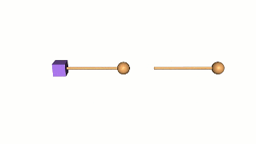
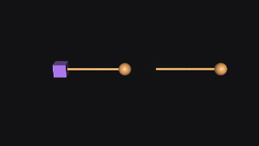
- armature: real, "0"
与关节运动相关联、且并非由刚体质量引起的附加惯性。这种附加惯性通常来自转子（又称 电枢，armature），由于齿轮传动，转子的旋转速度比关节本身更快。在图示中，我们比较了（左）一个 2 自由度系统，其中电枢刚体（紫色方块）通过 关节等式约束 以 \(3\) 的传动比与摆耦合；以及（右）一个具有等效 armature 的简单 1 自由度摆。由于传动比出现两次，同时乘在力和长度上，这种效应被称为“反射惯性”，其等效值为旋转体的惯性乘以 传动比的平方，在本例中为 \(9=3^2\)。该值适用于此关节所产生的所有自由度。
Additional inertia associated with movement of the joint that is not due to body mass. This added inertia is usually due to a rotor (a.k.a armature) spinning faster than the joint itself due to a geared transmission. In the illustration, we compare (left) a 2-dof system with an armature body (purple box), coupled with a gear ratio of \(3\) to the pendulum using a joint equality constraint, and (right) a simple 1-dof pendulum with an equivalent armature. Because the gear ratio appears twice, multiplying both forces and lengths, the effect is known as “reflected inertia” and the equivalent value is the inertia of the spinning body multiplied by the square of the gear ratio, in this case \(9=3^2\). The value applies to all degrees of freedom created by this joint.除了提高带齿轮传动的关节的真实感之外，正的 armature 即使取值很小，也能显著改善仿真稳定性，在遇到稳定性问题时是推荐的可行修复方法。
Besides increasing the realism of joints with geared transmission, positive armature significantly improves simulation stability, even for small values, and is a recommended possible fix when encountering stability issues.
- damping: real, "0 0 0"
阻尼系数 \(a, b, c\)。正的 \(a\) 产生标准的耗散性线性阻尼力 \(f(v) = -a v\)，其中 \(v\) 是关节速度。尽管形式简单，但较大的阻尼值会使数值积分器变得不稳定，这就是我们的欧拉积分器（integrator）对阻尼做隐式处理的原因。参见“计算”一章中的 积分。
Damping coefficients \(a, b, c\). A positive \(a\) produces the standard dissipative linear damping force \(f(v) = -a v\), where \(v\) is the joint velocity. Despite its simplicity, larger damping values can make numerical integrators unstable, which is why our Euler integrator handles damping implicitly. See Integration in the Computation chapter.如果设置了可选的第二和第三个分量，则它们定义一个非线性多项式阻尼力 \(f(v) = -(a v + b v |v| + c v^3)\)。请注意二次项做了反对称化处理，以确保该力是速度的奇函数。详见 多项式力。
If the optional second and third components are set, they define a nonlinear polynomial damping force \(f(v) = -(a v + b v |v| + c v^3)\). Note the anti-symmetrization of the quadratic term, ensuring that the force is an odd function of velocity. See Polynomial forces for details.
- frictionloss: real, "0"
由干摩擦引起的摩擦损耗（friction loss）。此值对该关节产生的所有自由度都相同。从语义上讲，摩擦损耗对 free 关节没有意义，但编译器允许设置。要启用摩擦损耗，请将此属性设为正值。
Friction loss due to dry friction. This value is the same for all degrees of freedom created by this joint. Semantically friction loss does not make sense for free joints, but the compiler allows it. To enable friction loss, set this attribute to a positive value.
- user: real(njnt_user), "0 0 ..."
参见 用户参数。
See User parameters.
body/freejoint#
该元素创建一个自由关节，其唯一的属性是 name 和 group。freejoint 元素是下面这行 XML 的简写：
<joint type="free" stiffness="0" damping="0" frictionloss="0" armature="0"/>
虽然显然也可以用 joint 元素创建这种关节，但默认的关节设置可能会对其产生影响。这通常是不希望的，因为物理上的自由刚体不具有非零的刚度、阻尼、摩擦或电枢惯量。为避免这种麻烦，我们引入了 freejoint 元素，确保关节默认值 不会被继承。在 按编译后状态 保存的模型中，它会表现为 free 类型的普通关节。
- name: string, optional
关节的名称。
Name of the joint.
- group: int, "0"
该关节所属的整数分组。此属性可用于自定义标签，可视化器也用它来启用或禁用整组关节的渲染。
Integer group to which the joint belongs. This attribute can be used for custom tags. It is also used by the visualizer to enable and disable the rendering of entire groups of joints.
- align: [false, true, auto], "auto"
当设置为 true 时，刚体坐标系和 free 关节将自动与惯性坐标系对齐。当设置为 false 时，不会进行对齐。当设置为 auto 时，将遵循编译器的 alignfree 全局属性。
When set to true, the body frame and free joint will automatically be aligned with inertial frame. When set to false, no alignment will occur. When set to auto, the compiler’s alignfree global attribute will be respected.惯性坐标系对齐是一种优化，仅适用于带有 free 关节且没有子刚体的刚体（“简单自由刚体”）。对齐会使 6x6 惯性矩阵对角化，并使偏置力（bias force）最小化，从而使仿真更快、更稳定。虽然这种行为是严格的改进，但它改变了 free 关节的语义，使得在旧版本中保存的
qpos和qvel值（例如在 关键帧 中）失效。Inertial frame alignment is an optimization only applies to bodies with a free joint and no child bodies (“simple free bodies”). The alignment diagonalizes the 6x6 inertia matrix and minimizes bias forces, leading to faster and more stable simulation. While this behaviour is a strict improvement, it modifies the semantics of the free joint, makingqposandqvelvalues saved in older versions (for example, in keyframes) invalid.请注意，当保存编译所产生的值（savecompiled）时，align 属性不会被保存。取而代之的是，简单自由刚体及其子刚体的位姿将被修改，使得刚体坐标系与惯性坐标系对齐。
Note that when the values which compilation made are saved (savecompiled), the align attribute is not saved. Instead, the pose of simple free bodies and their children will be modified such that the body frame and inertial frame are aligned.
body/geom#
该元素用于创建一个 geom，并将其刚性地附着到定义该 geom 的刚体上。同一个刚体上可以附着多个 geom。在运行时，它们决定刚体的外观和碰撞属性。在编译时，它们还可以决定刚体的惯性属性，这取决于是否存在 inertial 元素以及 compiler 的 inertiafromgeom 属性的设置。具体做法是：对附着在该刚体上、且 geom 组（group）位于 compiler 的 inertiagrouprange 属性所指定范围内的所有 geom，将其质量和惯性求和。geom 的质量和惯性是根据 geom 的形状、指定的密度（或隐含了密度的 geom 质量），以及密度均匀的假设计算得出的。
对于物理仿真而言，geom 并不是严格必需的。可以只用刚体和关节创建并仿真一个模型。这样的模型甚至可以被可视化，使用等效惯性盒来表示刚体。这种仿真中只会缺少接触力。我们不建议使用这样的模型，但了解这种做法是可行的，有助于厘清刚体和 geom 在 MuJoCo 中的作用。
- name: string, optional
geom 的名称。
Name of the geom.
- class: string, optional
用于设置未指定属性的默认类（defaults class）。
Defaults class for setting unspecified attributes.
- type: [plane, hfield, sphere, capsule, ellipsoid, cylinder, box, mesh, sdf], "sphere"
几何形状的类型。各关键字的含义如下：plane 类型定义一个在碰撞检测意义上无限大的表面。它只能附着到世界刚体或世界刚体的静态子刚体上。该平面通过 pos 属性指定的一个点。它垂直于 geom 局部坐标系的 Z 轴。+Z 方向对应空旷空间。因此，默认的位置 (0,0,0) 和姿态 (1,0,0,0) 会创建一个位于 Z=0 高度的地平面，其中 +Z 是世界中的竖直方向（这是 MuJoCo 的约定）。由于平面是无限大的，也可以用该平面内的任何其他点来定义它。不过，所指定的位置对渲染还有额外的含义。如果前两个 size 参数中有任何一个为正，则平面渲染为有限大小的矩形（在为正的维度上）。该矩形以指定的位置为中心。需要三个 size 参数。前两个指定矩形沿 X 轴和 Y 轴的半尺寸。第三个 size 参数比较特殊：它指定平面在渲染时网格细分之间的间距。这些细分在线框渲染模式下可见，但一般不应使用它们在地平面上绘制网格（这一用途应使用纹理）。它们的作用是改善光照和阴影，类似于渲染长方体时使用的细分。从背面观察平面时，平面会自动变为半透明。如果应用于该 geom 的 材质 具有正的反射率，则平面和长方体的 +Z 面是仅有的可以显示反射的表面。要渲染无限大平面，请将前两个 size 参数设为零。
Type of geometric shape. The keywords have the following meaning: The plane type defines a surface which is infinite for collision detection purposes. It can only be attached to the world body or static children of the world. The plane passes through a point specified via the pos attribute. It is normal to the Z axis of the geom’s local frame. The +Z direction corresponds to empty space. Thus the position and orientation defaults of (0,0,0) and (1,0,0,0) would create a ground plane at Z=0 elevation, with +Z being the vertical direction in the world (which is MuJoCo’s convention). Since the plane is infinite, it could have been defined using any other point in the plane. The specified position however has additional meaning with regard to rendering. If either of the first two size parameters are positive, the plane is rendered as a rectangle of finite size (in the positive dimensions). This rectangle is centered at the specified position. Three size parameters are required. The first two specify the half- size of the rectangle along the X and Y axes. The third size parameter is unusual: it specifies the spacing between the grid subdivisions of the plane for rendering purposes. The subdivisions are revealed in wireframe rendering mode, but in general they should not be used to paint a grid over the ground plane (textures should be used for that purpose). Instead their role is to improve lighting and shadows, similar to the subdivisions used to render boxes. When planes are viewed from the back, the are automatically made semi-transparent. Planes and the +Z faces of boxes are the only surfaces that can show reflections, if the material applied to the geom has positive reflection. To render an infinite plane, set the first two size parameters to zero.hfield 类型定义一个高度场 geom。该 geom 必须通过下面的 hfield 属性引用所需的高度场资源。geom 的位置和姿态决定高度场的位置和姿态。geom 的尺寸会被忽略，转而使用高度场资源的尺寸参数。参见 hfield 元素的描述。与平面类似，高度场 geom 只能附着到世界刚体或世界刚体的静态子刚体上。
The hfield type defines a height field geom. The geom must reference the desired height field asset with the hfield attribute below. The position and orientation of the geom set the position and orientation of the height field. The size of the geom is ignored, and the size parameters of the height field asset are used instead. See the description of the hfield element. Similar to planes, height field geoms can only be attached to the world body or to static children of the world.sphere 类型定义一个球体。该类型及后面四种类型对应内置的几何基元。在碰撞检测中，这些基元被当作解析曲面处理，在许多情况下依赖定制的成对碰撞例程。只包含平面、球体、胶囊体和长方体的模型在碰撞检测方面效率最高。其他 geom 类型会调用通用凸体碰撞器。球体以 geom 的位置为中心。只使用一个 size 参数，指定球体的半径。几何基元的渲染使用自动生成的网格，其密度可通过 quality 调整。球体网格沿纬线和经线进行三角剖分，Z 轴穿过南北两极。这在线框模式下可用于可视化坐标系的姿态。
The sphere type defines a sphere. This and the next four types correspond to built-in geometric primitives. These primitives are treated as analytic surfaces for collision detection purposes, in many cases relying on custom pair- wise collision routines. Models including only planes, spheres, capsules and boxes are the most efficient in terms of collision detection. Other geom types invoke the general-purpose convex collider. The sphere is centered at the geom’s position. Only one size parameter is used, specifying the radius of the sphere. Rendering of geometric primitives is done with automatically generated meshes whose density can be adjusted via quality. The sphere mesh is triangulated along the lines of latitude and longitude, with the Z axis passing through the north and south pole. This can be useful in wireframe mode for visualizing frame orientation.capsule 类型定义一个胶囊体，即两端加了两个半球的圆柱体。它沿 geom 坐标系的 Z 轴取向。以通常方式指定 geom 坐标系时，需要两个 size 参数：先是胶囊体的半径，然后是圆柱部分的半高。不过，胶囊体和圆柱体也可以被看作连接件，因而可以使用下面的 fromto 属性进行另一种形式的指定。在这种情况下只需要一个 size 参数，即胶囊体的半径。
The capsule type defines a capsule, which is a cylinder capped with two half-spheres. It is oriented along the Z axis of the geom’s frame. When the geom frame is specified in the usual way, two size parameters are required: the radius of the capsule followed by the half-height of the cylinder part. However capsules as well as cylinders can also be thought of as connectors, allowing an alternative specification with the fromto attribute below. In that case only one size parameter is required, namely the radius of the capsule.ellipsoid 类型定义一个椭球体。它是沿局部坐标系的 X、Y、Z 轴分别缩放的球体。它需要三个 size 参数，对应三个半径。请注意，尽管椭球体是光滑的，其碰撞仍通过通用凸体碰撞器处理。唯一的例外是平面与椭球体的碰撞，它们以解析方式计算。
The ellipsoid type defines a ellipsoid. This is a sphere scaled separately along the X, Y and Z axes of the local frame. It requires three size parameters, corresponding to the three radii. Note that even though ellipsoids are smooth, their collisions are handled via the general-purpose convex collider. The only exception are plane-ellipsoid collisions which are computed analytically.cylinder 类型定义一个圆柱体。它需要两个 size 参数：圆柱体的半径和半高。圆柱体沿 geom 坐标系的 Z 轴取向。也可以改用下面的 fromto 属性来指定。
The cylinder type defines a cylinder. It requires two size parameters: the radius and half-height of the cylinder. The cylinder is oriented along the Z axis of the geom’s frame. It can alternatively be specified with the fromto attribute below.box 类型定义一个长方体。需要三个 size 参数，对应长方体沿 geom 坐标系 X、Y、Z 轴的半尺寸。请注意，长方体与长方体的碰撞最多可产生 8 个接触点。
The box type defines a box. Three size parameters are required, corresponding to the half-sizes of the box along the X, Y and Z axes of the geom’s frame. Note that box-box collisions can generate up to 8 contact points.mesh 类型定义一个网格。该 geom 必须通过 mesh 属性引用所需的网格资源。请注意，其他 geom 类型也可以引用网格资源，从而使基本形状被拟合到该网格上；见下文。尺寸由网格资源决定，geom 的 size 参数被忽略。与所有其他 geom 不同，网格 geom 在编译之后的位置和姿态并不等于此处相应属性的设置。它们会被偏移，偏移量为将网格资源在其自身坐标系中居中并对齐所需的平移和旋转。请回顾 mesh 元素中关于居中和对齐的讨论。
The mesh type defines a mesh. The geom must reference the desired mesh asset with the mesh attribute. Note that mesh assets can also be referenced from other geom types, causing primitive shapes to be fitted; see below. The size is determined by the mesh asset and the geom size parameters are ignored. Unlike all other geoms, the position and orientation of mesh geoms after compilation do not equal the settings of the corresponding attributes here. Instead they are offset by the translation and rotation that were needed to center and align the mesh asset in its own coordinate frame. Recall the discussion of centering and alignment in the mesh element.sdf 类型定义一个有符号距离场（SDF，也称为有符号距离函数）。为了可视化 SDF，必须使用 mesh/plugin 属性指定一个自定义网格。带有 SDF 几何体的示例模型请参见 model/plugin/sdf/ 目录。有关 SDF 插件的更多细节，请参见 扩展一章。
The sdf type defines a signed distance field (SDF, also referred to as signed distance function). In order to visualize the SDF, a custom mesh must be specified using the mesh/plugin attribute. See the model/plugin/sdf/ directory for example models with SDF geometries. For more details regarding SDF plugins, see the Extensions chapter.
- contype: int, "1"
该属性及下一个属性指定 32 位整数位掩码，用于对动态生成的接触对进行接触过滤。参见计算一章中的 碰撞检测。如果一个 geom 的 contype 与另一个 geom 的 conaffinity 兼容，或反之，则这两个 geom 可以发生碰撞。兼容的意思是两个位掩码有共同的、被置为 1 的位。
This attribute and the next specify 32-bit integer bitmasks used for contact filtering of dynamically generated contact pairs. See Collision detection in the Computation chapter. Two geoms can collide if the contype of one geom is compatible with the conaffinity of the other geom or vice versa. Compatible means that the two bitmasks have a common bit set to 1.
- conaffinity: int, "1"
用于接触过滤的位掩码；见上面的 contype。
Bitmask for contact filtering; see contype above.
- condim: int, "3"
动态生成的接触对的接触空间维度，被设置为两个参与 geom 的 condim 值中的最大值。参见计算一章中的 接触。允许的取值及其含义如下：
The dimensionality of the contact space for a dynamically generated contact pair is set to the maximum of the condim values of the two participating geoms. See Contact in the Computation chapter. The allowed values and their meaning are:condim
描述
Description1
无摩擦接触。
Frictionless contact.3
常规摩擦接触，抵抗切平面内的滑动。
Regular frictional contact, opposing slip in the tangent plane.4
摩擦接触，抵抗切平面内的滑动以及绕接触法向的转动。这对于建模软接触（与接触穿透无关）很有用。
Frictional contact, opposing slip in the tangent plane and rotation around the contact normal. This is useful for modeling soft contacts (independent of contact penetration).6
摩擦接触，抵抗切平面内的滑动、绕接触法向的转动以及绕切平面两个轴的转动。后两种摩擦效应有助于防止物体无休止地滚动。
Frictional contact, opposing slip in the tangent plane, rotation around the contact normal and rotation around the two axes of the tangent plane. The latter frictional effects are useful for preventing objects from indefinite rolling.
- group: int, "0"
该属性指定 geom 所属的整数组。它对物理的唯一影响发生在编译时：此时刚体的质量和惯性是根据组选出的 geom 推断得出的；参见 compiler 的 inertiagrouprange 属性。在运行时，可视化器使用该属性来启用和禁用整组 geom 的渲染。默认情况下，组 0、1 和 2 可见，而所有其他组不可见。group 属性也可以用作自定义计算的标签。
This attribute specifies an integer group to which the geom belongs. The only effect on the physics is at compile time, when body masses and inertias are inferred from geoms selected based on their group; see inertiagrouprange attribute of compiler. At runtime this attribute is used by the visualizer to enable and disable the rendering of entire geom groups. By default, groups 0, 1 and 2 are visible, while all other groups are invisible. The group attribute can also be used as a tag for custom computations.
- priority: int, "0"
geom 优先级决定如何将两个碰撞 geom 的属性组合起来，形成接触的属性。它与 solmix 属性相互作用。参见 接触参数。
The geom priority determines how the properties of two colliding geoms are combined to form the properties of the contact. This interacts with the solmix attribute. See Contact parameters.
- size: real(3), "0 0 0"
geom 的尺寸参数。所需参数的数量及其含义取决于 geom 类型，见 type 属性下的说明。这里只提供摘要。所有必需的 size 参数必须为正；内部默认值对应无效设置。请注意，当非网格类型的 geom 引用网格时，会将该类型的几何基元拟合到网格上。在这种情况下，尺寸取自网格，geom 的 size 参数被忽略。因此，下表中所需 size 参数的数量和描述只适用于不引用网格的 geom。
Geom size parameters. The number of required parameters and their meaning depends on the geom type as documented under the type attribute. Here we only provide a summary. All required size parameters must be positive; the internal defaults correspond to invalid settings. Note that when a non-mesh geom type references a mesh, a geometric primitive of that type is fitted to the mesh. In that case the sizes are obtained from the mesh, and the geom size parameters are ignored. Thus the number and description of required size parameters in the table below only apply to geoms that do not reference meshes.类型
Type个数
Number描述
Descriptionplane
3
X 半尺寸；Y 半尺寸；渲染时方形网格线之间的间距。如果 X 或 Y 半尺寸为 0，则该平面在尺寸为 0 的维度上渲染为无限大。
X half-size; Y half-size; spacing between square grid lines for rendering. If either the X or Y half-size is 0, the plane is rendered as infinite in the dimension(s) with 0 size.hfield
0
geom 尺寸被忽略，转而使用高度场的尺寸。
The geom sizes are ignored and the height field sizes are used instead.sphere
1
球体的半径。
Radius of the sphere.capsule
1 或 2
1 or 2胶囊体的半径；不使用 fromto 指定方式时，还有圆柱部分的半长。
Radius of the capsule; half-length of the cylinder part when not using the fromto specification.ellipsoid
3
X 半径；Y 半径；Z 半径。
X radius; Y radius; Z radius.cylinder
1 或 2
1 or 2圆柱体的半径；不使用 fromto 指定方式时，还有圆柱体的半长。
Radius of the cylinder; half-length of the cylinder when not using the fromto specification.box
3
X 半尺寸；Y 半尺寸；Z 半尺寸。
X half-size; Y half-size; Z half-size.mesh
0
geom 尺寸被忽略，转而使用网格的尺寸。
The geom sizes are ignored and the mesh sizes are used instead.
- material: string, optional
如果指定，该属性会将材质应用于 geom。否则，如果未指定且 geom 的类型为 mesh，编译器会在存在时应用网格资源的 材质。
If specified, this attribute applies a material to the geom. Otherwise, if unspecified and the type of the geom is a mesh the compiler will apply the mesh asset material if present.材质决定 geom 的视觉属性。唯一的例外是颜色：如果下面的 rgba 属性与其内部默认值不同，则它优先，而其余的材质属性仍然适用。请注意，如果同一个材质被多个 geom（以及 sites 和肌腱）引用，而用户在运行时更改了它的某些属性，则这些更改会立即对所有引用该材质的模型元素生效。这是因为编译器会将材质及其属性作为单独的元素保存在 mjModel 中，而使用该材质的元素只保留对它的引用。
The material determines the visual properties of the geom. The only exception is color: if the rgba attribute below is different from its internal default, it takes precedence while the remaining material properties are still applied. Note that if the same material is referenced from multiple geoms (as well as sites and tendons) and the user changes some of its properties at runtime, these changes will take effect immediately for all model elements referencing the material. This is because the compiler saves the material and its properties as a separate element in mjModel, and the elements using this material only keep a reference to it.
- rgba: real(4), "0.5 0.5 0.5 1"
该属性可以代替创建材质资源并引用它们，仅用于设置颜色和透明度。这不如材质机制灵活，但更方便，而且通常已经足够。如果该属性的值与内部默认值不同，则它优先于材质。
Instead of creating material assets and referencing them, this attribute can be used to set color and transparency only. This is not as flexible as the material mechanism, but is more convenient and is often sufficient. If the value of this attribute is different from the internal default, it takes precedence over the material.
- castshadow: [false, true], "true"
如果该属性为 "true"，则 geom 在被投射阴影的光源（castshadow 设为 "true" 的光源）照亮时会投射阴影。将其设置为 "false" 会禁用该 geom 的阴影投射，但仍允许它接收阴影并被正常照亮。
If this attribute is “true”, the geom casts shadows when illuminated by shadow-casting lights (those with castshadow set to “true”). Setting this to “false” disables shadow casting for this geom while still allowing it to receive shadows and be lit normally.
- friction: real(3), "1 0.005 0.0001"
动态生成的接触对的接触摩擦参数。第一个数是滑动摩擦，作用于切平面的两个轴。第二个数是扭转摩擦，作用于绕接触法向的方向。第三个数是滚动摩擦，作用于绕切平面的两个轴的方向。接触对的摩擦参数如何组合取决于 solmix 和 priority 属性，详见 接触参数。该属性语义的描述请参见通用的 接触 一节。
Contact friction parameters for dynamically generated contact pairs. The first number is the sliding friction, acting along both axes of the tangent plane. The second number is the torsional friction, acting around the contact normal. The third number is the rolling friction, acting around both axes of the tangent plane. The friction parameters for the contact pair are combined depending on the solmix and priority attributes, as explained in Contact parameters. See the general Contact section for descriptions of the semantics of this attribute.
- mass: real, optional
如果指定了该属性，则下面的 density 属性被忽略，geom 的密度由给定的质量、geom 的形状以及密度均匀的假设计算得出。然后使用计算出的密度得到 geom 的惯性。请记住，geom 的质量和惯性仅在编译期间使用，用于在必要时推断刚体的质量和惯性。在运行时，只有刚体的惯性属性会影响仿真；geom 的质量和惯性不会保存在 mjModel 中。
If this attribute is specified, the density attribute below is ignored and the geom density is computed from the given mass, using the geom shape and the assumption of uniform density. The computed density is then used to obtain the geom inertia. Recall that the geom mass and inertia are only used during compilation, to infer the body mass and inertia if necessary. At runtime only the body inertial properties affect the simulation; the geom mass and inertia are not saved in mjModel.
- density: real, "1000"
用于计算 geom 质量和惯性的材料密度。计算基于 geom 的形状以及密度均匀的假设。内部默认值 1000 是水在国际单位制下的密度。仅当上面的 mass 属性未指定时才使用该属性。如果
shellinertia为 "false"（默认值），则密度的语义是质量/体积；如果为 "true"，则语义是质量/面积。Material density used to compute the geom mass and inertia. The computation is based on the geom shape and the assumption of uniform density. The internal default of 1000 is the density of water in SI units. This attribute is used only when the mass attribute above is unspecified. Ifshellinertiais “false” (the default), density has semantics of mass/volume; if “true”, it has semantics of mass/area.
- shellinertia [false, true], "false"
如果为 true，则在计算 geom 的惯性时假设所有质量都集中在表面上。在这种情况下，density 被解释为面密度而不是体密度。该属性仅适用于基本 geom，对网格会被忽略。网格的表面惯性可以通过将 asset/mesh/inertia 属性设置为 "shell" 来指定。
If true, the geom’s inertia is computed assuming that all the mass is concentrated on the surface. In this case density is interpreted as surface rather than volumetric density. This attribute only applies to primitive geoms and is ignored for meshes. Surface inertia for meshes can be specified by setting the asset/mesh/inertia attribute to “shell”.
- solmix: real, "1"
该属性指定用于对接触参数求平均的权重，并与 priority 属性相互作用。参见 接触参数。
This attribute specifies the weight used for averaging of contact parameters, and interacts with the priority attribute. See Contact parameters.
- solref, solimp
用于接触仿真的约束求解器参数。参见 求解器参数。
Constraint solver parameters for contact simulation. See Solver parameters.
- margin: real, "0"
为生成接触力而对 geom 表面进行的几何膨胀。当两个 geom 表面之间的距离小于
margin时，接触被视为激活，并产生接触力。约束阻抗可以是距离的函数，详见 求解器参数。该函数所作用的量是两个 geom 之间的距离减去margin。参见 margin 和 gap。Geometric inflation of the geom surface for the purpose of contact force generation. When the distance between two geom surfaces is belowmargin, the contact is considered active and contact forces are generated. The constraint impedance can be a function of distance, as explained in Solver parameters. The quantity this function is applied to is the distance between the two geoms minus themargin. See margin and gap.
- gap: real, "0"
超出
margin的额外接触检测缓冲。当该值为正时，接触在距离margin + gap处被检测到，但只在距离margin处才产生力。距离介于margin和margin + gap之间的接触，会作为未激活接触（efc_address= -1）包含在mjData.contact中。这些未激活接触可用于自定义计算，例如 adhesion 执行器就利用间隙区内的接触产生粘附力而不产生接触力。参见 margin 和 gap。Additional contact detection buffer beyondmargin. When this value is positive, contacts are detected at distancemargin + gapbut forces are only generated at distancemargin. Contacts with distance betweenmarginandmargin + gapare included inmjData.contactas inactive contacts (withefc_address= -1). These inactive contacts can be used for custom computations, for example by adhesion actuators which use contacts in the gap zone to generate adhesive forces without producing contact forces. See margin and gap.
- surfacevel: real(6), "0 0 0 0 0 0"
接触所观察到的 geom 表面速度，以速度场 \(\sigma(x)\) 的形式给出，由两部分组成：恒定速度 \(v\)（前三个数）和绕 geom 坐标系原点 \(p\) 的、角速度为 \(\omega\) 的旋转场（后三个数），两者均在 geom 坐标系中表示：
Velocity of the geom’s surface as seen by contacts, given as a velocity field \(\sigma(x)\) with two components: a constant velocity \(v\) (first three numbers) and a rotational field with angular velocity \(\omega\) (last three numbers) about the geom frame origin \(p\), both expressed in the geom frame:\[\sigma(x) = v + \omega \times (x - p) \]与该 geom 接触的物体会观察到表面沿此场运动，其速度被投影到接触的切平面上：不会施加法向速度。当 condim 为 4 或更大时，角速度 \(\omega\) 还会驱动扭转摩擦。surfacevel 用于建模表面在运动而 geom 本身不动的情形：传送带、跑步机和转盘都可以在没有自由度的情况下构建。摩擦力会沿表面的运动方向驱动接触的刚体：放在传送带上的物体以带速被输送，而转盘（绕圆柱轴的表面角速度）会赋予随半径增大的切向速度。两个接触 geom 的表面速度按相对速度合成，并且与刚体运动正确合成（安装在运动车辆上的传送带按预期工作）。请注意，该属性描述的是 geom 的*整个*表面：具有恒定
surfacevel的长方体，其六个面都会运动。当接触点被可视化时，具有运动表面的接触还会在接触点处显示一个沿切向表面速度的箭头。该属性可以在运行时修改。A contact with the geom observes the surface moving along this field, with the velocity projected onto the contact’s tangent plane: no normal velocity is imparted. When condim is 4 or larger, the angular velocity \(\omega\) also drives torsional friction. surfacevel models surfaces that move while the geom itself does not: conveyor belts, treadmills and turntables can be constructed with no degrees of freedom. Friction drives touching bodies along the motion of the surface: objects placed on a conveyor are transported at belt speed, and a turntable (angular surface velocity about the cylinder axis) imparts tangential velocity that grows with radius. Surface velocities of two touching geoms compose as relative velocity, and compose correctly with body motion (a conveyor mounted on a moving vehicle works as expected). Note that this attribute describes the geom’s entire surface: a box with constantsurfacevelmoves all six faces. When contact points are visualized, a contact with a moving surface additionally displays an arrow along the tangential surface velocity at the contact point. This attribute can be modified at runtime.
- adhesion: real, "0"
与该 geom 接触的粘附力，单位为力。从几何上看，摩擦锥沿法向向下平移，使得力的原点严格位于锥内：每个接触在断开之前最多可以拉住
adhesion大小的力，摩擦预算变为 \(\mu(f_N + \text{adhesion})\)。即使在法向力为零时，接触也能抵抗滑动，这是内聚材料的决定性特征。这对于粘性材料（胶带、壁虎脚、粘性橡胶）以及作为抓取的物理稳定器很有用。接触的粘附力是两个接触 geom 的值之和；如果优先级不同，则取 优先级 较高的 geom 的值；显式的接触 对 会覆盖两者。请注意，粘附力是*针对每个接触*的：平放在平面上的长方体面会产生四个接触点，因此其脱离力是单点接触的四倍。若要让粘附力作用于较小的间隔（远距离吸引），请将 gap 设置为所需的作用范围。这可用于建模磁铁。静止穿透不受粘附力影响（接触的压缩行为不变；只增加了一个拉伸分支），mj_contactForce 报告的是界面净力，其法向分量在拉伸时可以为负。底层模型在 计算一章 中描述。关于将粘附作为*受控*力的情形——像真空吸盘一样开关、在刚体的各接触之间分配总力并将刚体压在一起——请参见 adhesion 执行器。Adhesive force of contacts with this geom, in units of force. Geometrically, the friction cone is translated down along the normal so that the force origin lies strictly inside it: each contact can pull with up toadhesionbefore breaking, and the friction budget becomes \(\mu(f_N + \text{adhesion})\). Contacts resist sliding even under zero normal force, the defining property of cohesive materials. This is useful for sticky materials (tape, gecko feet, tacky rubber) and as a physical stabilizer for grasping. The adhesion of a contact is the sum of the values of the two contacting geoms, or the value of the higher-priority geom if priorities differ; an explicit contact pair overrides both. Note that adhesion is per contact: a box face resting on a plane generates four contact points and therefore four times the pull-off force of a single-point contact. To let adhesion act across a small separation (attraction at a distance), set gap to the desired interaction range. This can be used to model magnets. Resting penetration is unaffected by adhesion (the compression behavior of the contact is unchanged; only a tensile branch is added), and mj_contactForce reports the net interface force, whose normal component can be negative under tension. The underlying model is described in the Computation chapter. For adhesion as a controlled force — switched on and off like a vacuum gripper, dividing a total force between a body’s contacts and pressing the bodies together — see the adhesion actuator.
- fromto: real(6), optional
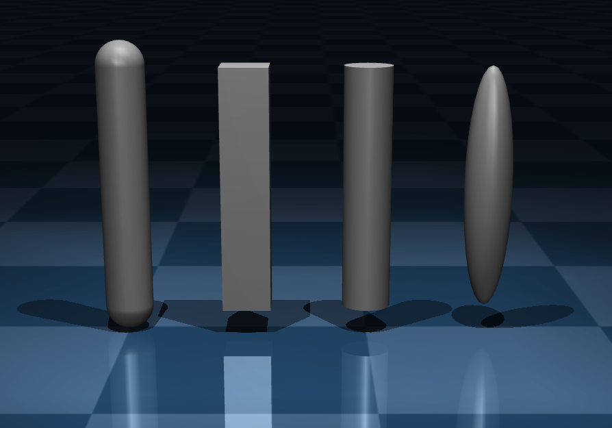
该属性只能用于 capsule、box、cylinder 和 ellipsoid 类型的 geom。它提供了另一种指定 geom 长度以及坐标系位置和姿态的方式。这六个数是一个点的三维坐标，后接另一个点的三维坐标。geom 的伸长部分连接这两个点，geom 坐标系的 +Z 轴由第一个点指向第二个点，而在垂直方向上，geom 的两个尺寸都等于 size 属性的第一个值。坐标系的姿态通过与 zaxis 属性相同的过程得到，参见 坐标系姿态。坐标系的位置在两个端点的中间。如果指定了该属性，则其余与位置和姿态相关的属性被忽略。右侧的图像演示了对四种受支持 geom 使用 fromto，其 Z 值相同。模型在 这里。请注意，capsule 的 fromto 语义是独特的：两个端点指定一条线段，半径定义围绕该线段的胶囊体表面。
This attribute can only be used with capsule, box, cylinder and ellipsoid geoms. It provides an alternative specification of the geom length as well as the frame position and orientation. The six numbers are the 3D coordinates of one point followed by the 3D coordinates of another point. The elongated part of the geom connects these two points, with the +Z axis of the geom’s frame oriented from the first towards the second point, while in the perpendicular direction, the geom sizes are both equal to the first value of the size attribute. The frame orientation is obtained with the same procedure as the zaxis attribute described in Frame orientations. The frame position is in the middle between the end points. If this attribute is specified, the remaining position and orientation-related attributes are ignored. The image on the right demonstrates use of fromto with the four supported geoms, using identical Z values. The model is here. Note that the fromto semantics of capsule are unique: the two end points specify the segment around which the radius defines the capsule surface.

- pos: real(3), "0 0 0"
geom 的位置，在定义该 geom 的刚体的坐标系中指定。
Position of the geom, specified in the frame of the body where the geom is defined.
- quat, axisangle, xyaxes, zaxis, euler
geom 坐标系的姿态。参见 坐标系朝向。
Orientation of the geom frame. See Frame orientations.
- hfield: string, optional
当且仅当 geom 类型为 "hfield" 时，必须指定该属性。它引用要在 geom 坐标系的位置和姿态处实例化的高度场资源。
This attribute must be specified if and only if the geom type is “hfield”. It references the height field asset to be instantiated at the position and orientation of the geom frame.
- mesh: string, optional
如果 geom 类型为 "mesh"，则该属性是必需的。它引用要实例化的网格资源。如果 geom 类型对应几何基元，即 "sphere"、"capsule"、"cylinder"、"ellipsoid"、"box" 之一，也可以指定该属性。在这种情况下，基元会被自动拟合到此处引用的网格资源上。拟合过程使用网格的等效惯性盒或轴对齐包围盒，由 compiler 的 fitaabb 属性决定。拟合得到的 geom 尺寸通常符合预期，如果不符合，可以用下面的 fitscale 属性进一步调整。在编译后的 mjModel 中，该 geom 表示为指定基元类型的常规 geom，并且没有对用于拟合的网格的引用。
If the geom type is “mesh”, this attribute is required. It references the mesh asset to be instantiated. This attribute can also be specified if the geom type corresponds to a geometric primitive, namely one of “sphere”, “capsule”, “cylinder”, “ellipsoid”, “box”. In that case the primitive is automatically fitted to the mesh asset referenced here. The fitting procedure uses either the equivalent inertia box or the axis-aligned bounding box of the mesh, as determined by the attribute fitaabb of compiler. The resulting size of the fitted geom is usually what one would expect, but if not, it can be further adjusted with the fitscale attribute below. In the compiled mjModel the geom is represented as a regular geom of the specified primitive type, and there is no reference to the mesh used for fitting.
- fitscale: real, "1"
仅当将基本几何类型拟合到网格资源时才使用该属性。此处指定的缩放比例是相对于自动拟合过程的输出而言的。默认值 1 保持结果不变，值 2 使拟合 geom 的所有尺寸变为两倍。
This attribute is used only when a primitive geometric type is being fitted to a mesh asset. The scale specified here is relative to the output of the automated fitting procedure. The default value of 1 leaves the result unchanged, a value of 2 makes all sizes of the fitted geom two times larger.
- fluidshape: [none, ellipsoid], "none"
"ellipsoid" 会激活基于 geom 形状的椭球近似的 geom 级流体相互作用模型。启用后，基于 刚体惯性尺寸 的模型会在定义该 geom 的刚体上被禁用。详见 基于椭球 的流体相互作用模型一节。
“ellipsoid” activates the geom-level fluid interaction model based on an ellipsoidal approximation of the geom shape. When active, the model based on body inertia sizes is disabled for the body in which the geom is defined. See section on ellipsoid-based fluid interaction model for details.
- fluidcoef: real(5), "0.5 0.25 1.5 1.0 1.0"
流体相互作用模型的无量纲系数，如下所示。详见 基于椭球 的流体相互作用模型一节。
Dimensionless coefficients of fluid interaction model, as follows. See section on ellipsoid-based fluid interaction model for details.
索引 Index |
描述 Description |
符号 Symbol |
默认值 Default |
|---|---|---|---|
0 |
钝体阻力系数 Blunt drag coefficient |
\(C_{D, \text{blunt}}\) |
0.5 |
1 |
细长体阻力系数 Slender drag coefficient |
\(C_{D, \text{slender}}\) |
0.25 |
2 |
角阻力系数 Angular drag coefficient |
\(C_{D, \text{angular}}\) |
1.5 |
3 |
库塔（Kutta）升力系数 Kutta lift coefficient |
\(C_K\) |
1.0 |
4 |
马格努斯（Magnus）升力系数 Magnus lift coefficient |
\(C_M\) |
1.0 |
- user: real(nuser_geom), "0 0 ..."
参见 用户参数。
See User parameters.
geom/plugin #
将该 geom 与一个 引擎插件（plugin） 关联。plugin 或 instance 二者必须提供其一。
- plugin: string, optional
插件标识符，用于隐式的插件实例化。
Plugin identifier, used for implicit plugin instantiation.
- instance: string, optional
实例名称，用于显式的插件实例化。
Instance name, used for explicit plugin instantiation.
body/site#
该元素创建一个 site（标记点），它是 geom 的一种简化且受限的形式。这里只提供 geom 属性的一小部分子集；其详细文档参见 geom 元素。从语义上讲，site 表示相对于刚体（body）坐标系（frame）的关注位置。site 不参与碰撞，也不参与刚体质量和惯性（inertia）的计算。可用于渲染 site 的几何形状仅限于可用 geom 类型的一个子集。但是，site 可以用在一些不允许使用 geom 的地方：安装传感器（sensor）、指定空间肌腱（tendon）的途经点、为执行器（actuator）构造滑块-曲柄传动（transmission）。
- name: string, optional
site 的名称。
Name of the site.
- class: string, optional
用于设置未指定属性的默认类（default class）。
Defaults class for setting unspecified attributes.
- type: [sphere, capsule, ellipsoid, cylinder, box, mesh], "sphere"
几何形状的类型。它用于渲染，同时也决定了 触摸传感器 的有效传感区域。
Type of geometric shape. This is used for rendering, and also determines the active sensor zone for touch sensors.
- group: int, "0"
site 所属的整数分组。该属性可用于自定义标签。可视化器（visualizer）也用它来启用和禁用整组 site 的渲染。
Integer group to which the site belongs. This attribute can be used for custom tags. It is also used by the visualizer to enable and disable the rendering of entire groups of sites.
- material: string, optional
用于指定 site 视觉属性的材质。
Material used to specify the visual properties of the site.
- mesh: string, optional
网格（mesh）资源名称。如果 site 的类型为 "mesh"，则该属性是必需的。
Mesh asset name. This attribute is required if the site type is “mesh”.
- rgba: real(4), "0.5 0.5 0.5 1"
颜色和透明度。如果该值与内部默认值不同，则它会覆盖相应的材质属性。
Color and transparency. If this value is different from the internal default, it overrides the corresponding material properties.
- size: real(3), "0.005 0.005 0.005"
表示 site 的几何形状的尺寸。
Sizes of the geometric shape representing the site.
- fromto: real(6), optional
该属性只能用于 capsule、cylinder、ellipsoid 和 box 类型的 site。它为 site 的长度以及坐标系的位置和朝向提供了另一种指定方式。这六个数字是一个点的三维坐标，后面接着另一个点的三维坐标。site 的细长部分连接这两个点，site 坐标系的 +Z 轴从第一个点指向第二个点。坐标系朝向的获取过程与 坐标系朝向 中所述的 zaxis 属性相同。坐标系位置位于两点的中间。如果指定了该属性，则其余与位置和朝向相关的属性都会被忽略。
This attribute can only be used with capsule, cylinder, ellipsoid and box sites. It provides an alternative specification of the site length as well as the frame position and orientation. The six numbers are the 3D coordinates of one point followed by the 3D coordinates of another point. The elongated part of the site connects these two points, with the +Z axis of the site’s frame oriented from the first towards the second point. The frame orientation is obtained with the same procedure as the zaxis attribute described in Frame orientations. The frame position is in the middle between the two points. If this attribute is specified, the remaining position and orientation-related attributes are ignored.
- pos: real(3), "0 0 0"
site 坐标系的位置。
Position of the site frame.
- quat, axisangle, xyaxes, zaxis, euler
site 坐标系的朝向。参见 坐标系朝向。
Orientation of the site frame. See Frame orientations.
- user: real(nuser_site), "0 0 ..."
参见 用户参数。
See User parameters.
body/camera#
该元素创建一个相机，它随定义它的刚体一起运动。要创建固定相机，请在世界刚体（world body）中定义。这里创建的相机是对默认自由相机的补充，后者始终有定义，并通过 visual 元素进行调整。在内部，MuJoCo 使用灵活的相机模型，其中视点和投影面可以独立调整，从而得到虚拟环境所需的斜投影。不过该功能无法通过 MJCF 访问。相反，用该元素创建的相机（以及自由相机）的视点始终位于投影面前方的中心。视点与相机坐标系的中心重合。相机沿其坐标系的 -Z 轴方向观察。+X 轴指向右侧，+Y 轴指向上方。因此，坐标系的位置和朝向是这里需要做的关键调整。
- name: string, optional
相机的名称。
Name of the camera.
- class: string, optional
用于设置未指定属性的默认类。
Defaults class for setting unspecified attributes.
- mode: [fixed, track, trackcom, targetbody, targetbodycom], "fixed"
该属性指定在正运动学（forward kinematics）中如何计算相机在世界坐标系下的位置和朝向（这进而决定相机看到什么）。"fixed" 表示下面指定的位置和朝向相对于定义相机的刚体是固定的。"track" 表示相机位置在世界坐标系中与刚体保持恒定偏移，而相机朝向在世界坐标系中保持恒定。这些常量通过在 qpos0 下应用正运动学并将相机视为固定来确定。跟踪可用于例如将相机置于某个刚体上方，使其朝下对准该刚体，并且无论该刚体如何平移和旋转，相机都始终保持在刚体上方。"trackcom" 与 "track" 类似，但恒定的空间偏移是相对于运动学子树（kinematic subtree）的质心定义的，该子树从定义相机的刚体开始。这可用于使整个机构始终处于视野之内。注意，世界刚体的子树质心就是整个模型的质心。因此，如果在世界刚体中以 "trackcom" 模式定义相机，它将跟踪整个模型。"targetbody" 表示相机位置固定在刚体坐标系中，而相机朝向会被调整，使其始终指向目标刚体（由下面的 target 属性指定）。这可用于例如对注视运动物体的眼睛建模；该物体将是目标，而相机/眼睛则定义在对应头部的刚体中。"targetbodycom" 与 "targetbody" 相同，但相机朝向的是子树的质心，该子树从目标刚体开始。
This attribute specifies how the camera position and orientation in world coordinates are computed in forward kinematics (which in turn determine what the camera sees). “fixed” means that the position and orientation specified below are fixed relative to the body where the camera is defined. “track” means that the camera position is at a constant offset from the body in world coordinates, while the camera orientation is constant in world coordinates. These constants are determined by applying forward kinematics in qpos0 and treating the camera as fixed. Tracking can be used for example to position a camera above a body, point it down so it sees the body, and have it always remain above the body no matter how the body translates and rotates. “trackcom” is similar to “track” but the constant spatial offset is defined relative to the center of mass of the kinematic subtree starting at the body in which the camera is defined. This can be used to keep an entire mechanism in view. Note that the subtree center of mass for the world body is the center of mass of the entire model. So if a camera is defined in the world body in mode “trackcom”, it will track the entire model. “targetbody” means that the camera position is fixed in the body frame, while the camera orientation is adjusted so that it always points towards the targeted body (which is specified with the target attribute below). This can be used for example to model an eye that fixates a moving object; the object will be the target, and the camera/eye will be defined in the body corresponding to the head. “targetbodycom” is the same as “targetbody” but the camera is oriented towards the center of mass of the subtree starting at the target body.
- target: string, optional
当相机模式为 "targetbody" 或 "targetbodycom" 时，该属性是必需的。它指定相机应以哪个刚体为目标。在所有其他模式下，该属性被忽略。
When the camera mode is “targetbody” or “targetbodycom”, this attribute becomes required. It specifies which body should be targeted by the camera. In all other modes this attribute is ignored.
- projection: [perspective, orthographic], "perspective"
相机使用透视投影（默认）还是正交投影。将该属性设置为 "orthographic" 会改变 fovy 属性的语义，见下文。
Whether the camera uses a perspective (the default) or orthographic projection. Setting this attribute to “orthographic” changes the semantic of the fovy attribute, see below.
- fovy: real, "45"
相机的垂直视场角。如果相机使用透视投影，则视场角以度为单位表示，与全局 compiler/angle 设置无关。如果相机使用正交投影，则视场角以长度单位表示；注意在这种情况下默认值 45 对大多数场景来说太大，很可能应当减小。无论哪种情况，水平视场角都会根据窗口大小和垂直视场角自动计算。
Vertical field-of-view of the camera. If the camera uses a perspective projection, the field-of-view is expressed in degrees, regardless of the global compiler/angle setting. If the camera uses an orthographic projection, the field-of-view is expressed in units of length; note that in this case the default of 45 is too large for most scenes and should likely be reduced. In either case, the horizontal field of view is computed automatically given the window size and the vertical field of view.
- resolution: int(2), "1 1"
相机的分辨率，以像素为单位 [width height]。注意这些值并不用于渲染，因为渲染尺寸由渲染上下文的大小决定。该属性用作保存所需分辨率的便利位置。当 mjVIS_CAMERA 可视化（visualization）标志处于激活状态时，将任一值设置为大于 1 会启用视锥可视化。
Resolution of the camera in pixels [width height]. Note that these values are not used for rendering since those dimensions are determined by the size of the rendering context. This attribute serves as a convenient location to save the required resolution. Setting either value larger than 1 enables frustum visualization when the mjVIS_CAMERA visualization flag is active.
- output: [rgb, depth, distance, normal, segmentation], "rgb"
相机支持的输出图像类型。
Types of output images supported by the camera.rgb: RGB 图像。
rgb: RGB image.depth: 深度图像（到相机平面的距离）。
depth: Depth image (distance from camera plane).distance: 距离图像（到相机原点的距离）。
distance: Distance image (distance from camera origin).normal: 表面法线图像。
normal: Surface normal image.segmentation: 分割图像。
segmentation: Segmentation image.
该属性不用于渲染，而是作为保存相机所支持输出类型的便利位置。output 属性可以包含多种类型，例如 "rgb normal"。
This attribute is not used for rendering, but serves as a convenient location to save the output types supported by the camera. The output attribute can contain multiple types, e.g. “rgb normal”.
- sensorsize: real(2), "0 0"
相机传感器的尺寸，以长度单位表示。指定后，所有内参属性都会生效，并且 fovy 被忽略。此时视场角会根据焦距和传感器尺寸自动计算。
Size of the camera sensor in length units. When specified, all intrinsic attributes become active and fovy is ignored. The field-of-view is then computed automatically from the focal length and sensor size.
- focal / focalpixel: real(2), "0 0"
焦距，分别以物理长度单位或像素表示。如果两者都指定，则使用像素值，长度值被忽略。
Focal length in physical length units or in pixels, respectively. If both are specified, the pixel value is used and the length value is ignored.
- principal / principalpixel: real(2), "0 0"
主点（光轴与像平面的交点）相对于图像中心的偏移。如果两者都指定，则使用像素值。偏移为零时，渲染的图像以相机的负 Z 轴为中心，如同标准的针孔相机模型。
Offset of the principal point (optical axis intersection with the image plane) from the image center. If both are specified, the pixel value is used. At zero offset, the rendered image is centered on the camera’s negative Z axis, as in a standard pinhole camera model.
- ipd: real, "0.068"
瞳距。该属性仅在立体渲染期间起作用。它指定左右视点之间的距离。每个视点沿相机坐标系的 X 轴偏移这里所指定距离的一半（正负方向）。
Inter-pupilary distance. This attribute only has an effect during stereoscopic rendering. It specifies the distance between the left and right viewpoints. Each viewpoint is shifted by +/- half of the distance specified here, along the X axis of the camera frame.
- pos: real(3), "0 0 0"
相机坐标系的位置。
Position of the camera frame.
- quat, axisangle, xyaxes, zaxis, euler
相机坐标系的朝向。参见 坐标系朝向。注意，对相机而言，xyaxes 属性在语义上特别方便，因为 X 轴和 Y 轴分别对应像素空间中的“向右”和“向上”方向。
Orientation of the camera frame. See Frame orientations. Note that specifically for cameras, the xyaxes attribute is semantically convenient as the X and Y axes correspond to the directions “right” and “up” in pixel space, respectively.
- user: real(nuser_cam), "0 0 ..."
参见 用户参数。
See User parameters.
body/light#
该元素创建一个光源，它随定义它的刚体一起运动。要创建固定光源，请在世界刚体中定义。这里创建的光源是对可选的 头灯 的补充，头灯是通过 visual 元素配置的与相机对齐的光源。光源沿 dir 属性指定的方向照射。它们没有带三个正交轴的完整空间坐标系。
默认情况下，MuJoCo 的渲染使用标准的 OpenGL（固定功能）Phong 光照模型，并辅以阴影映射。（更多信息，包括各种属性的详细说明，请参阅 OpenGL 文档。）
MJCF 还通过提供额外的属性来支持其他光照模型（例如基于物理的渲染）。属性可能会根据所使用的光照模型而被应用或被忽略。
- name: string, optional
光源的名称。
Name of the light.
- class: string, optional
用于设置未指定属性的默认类。
Defaults class for setting unspecified attributes.
- mode: [fixed, track, trackcom, targetbody, targetbodycom], "fixed"
该属性与上文 camera 的 mode 属性相同。它指定在正运动学中如何计算光源在世界坐标系下的位置和朝向（这进而决定光源照亮什么）。
This is identical to the mode attribute of camera above. It specifies the how the light position and orientation in world coordinates are computed in forward kinematics (which in turn determine what the light illuminates).
- target: string, optional
该属性与上文 camera 的 target 属性相同。它指定在 "targetbody" 和 "targetbodycom" 模式下应以哪个刚体为目标。
This is identical to the target attribute of camera above. It specifies which body should be targeted in “targetbody” and “targetbodycom” modes.
- type: [spot, directional, point, image], "spot"
决定光源的类型。注意，某些渲染器可能不支持某些光源类型（例如默认的原生渲染器只支持 spot 和 directional 光源）。
Determines the type of light. Note that some light types may not be supported by some renderers (e.g. only spot and directional lights are supported by the default native renderer).
- directional: [false, true], "false"
这是一个已弃用的旧版属性。请改用光源的 type。如果设置为 "true" 且未指定 type，则光源类型将变为 directional。
This is a deprecated legacy attribute. Please use light type instead. If set to “true”, and no type is specified, this will change the light type to be directional.
- castshadow: [false, true], "true"
如果该属性为 "true"，光源将投射阴影。更准确地说，启用了 castshadow 且被该光源照亮的 geom 会投射阴影。由于每个投射阴影的光源都会导致对所有 geom 额外进行一次渲染通道，因此应谨慎使用该属性。要获得更高质量的阴影，可以增大 quality 的 shadowsize 属性的值，将聚光灯放置得更靠近出现阴影的表面，并限制投射阴影的体积。对于聚光灯，该体积是一个锥体，其角度是下面的 cutoff 属性乘以 map 的 shadowscale 属性。对于平行光，该体积是一个长方体，其在与光线正交的方向上的半尺寸是模型范围（extent）乘以 map 的 shadowclip 属性。模型范围由编译器计算，但也可以通过指定 statistic 的 extent 属性来覆盖。在内部，阴影映射机制从光源视点（如同它是一个相机）将场景渲染到深度纹理中，然后再从相机视点渲染一次，利用深度纹理来创建阴影。内部渲染通道使用与常规渲染相同的近、远裁剪平面，即这些裁剪平面在光线方向上界定了锥形或长方体形的阴影体积。因此，某些阴影（尤其是那些非常靠近光源的阴影）可能会被裁剪。
If this attribute is “true” the light will cast shadows. More precisely, geoms with castshadow enabled that are illuminated by the light will cast shadows. Since each shadow-casting light causes one extra rendering pass through all geoms, this attribute should be used with caution. Higher quality of the shadows is achieved by increasing the value of the shadowsize attribute of quality, as well as positioning spotlights closer to the surface on which shadows appear, and limiting the volume in which shadows are cast. For spotlights this volume is a cone, whose angle is the cutoff attribute below multiplied by the shadowscale attribute of map. For directional lights this volume is a box, whose half-sizes in the directions orthogonal to the light are the model extent multiplied by the shadowclip attribute of map. The model extent is computed by the compiler but can also be overridden by specifying the extent attribute of statistic. Internally the shadow-mapping mechanism renders the scene from the light viewpoint (as if it were a camera) into a depth texture, and then renders again from the camera viewpoint, using the depth texture to create shadows. The internal rendering pass uses the same near and far clipping planes as regular rendering, i.e., these clipping planes bound the cone or box shadow volume in the light direction. As a result, some shadows (especially those very close to the light) may be clipped.
- active: [false, true], "true"
如果该属性为 "true"，则光源处于激活状态。这可以在运行时用于打开和关闭光源。
The light is active if this attribute is “true”. This can be used at runtime to turn lights on and off.
- pos: real(3), "0 0 0"
光源的位置。该属性只影响聚光灯的渲染，但也应为平行光定义，因为我们会把相机渲染为装饰元素。
Position of the light. This attribute only affects the rendering for spotlights, but it should also be defined for directional lights because we render the cameras as decorative elements.
- dir: real(3), "0 0 -1"
光源的方向。
Direction of the light.
- diffuse: real(3), "0.7 0.7 0.7"
光源的颜色。对于 Phong（默认）光照模型，它定义光源的漫反射颜色。
The color of the light. For the Phong (default) lighting model, this defines the diffuse color of the light.
- texture: string, optional
用于基于图像的光照的纹理。默认的 Phong 光照模型不使用该属性。
The texture to use for image-based lighting. This is unused by the default Phong lighting model.
- intensity: real, "0.0"
光源的强度，以坎德拉（candela）为单位，用于基于物理的光照模型。默认的 Phong 光照模型不使用该属性。
The intensity of the light source, measured in candela, used for physically-based lighting models. This is unused by the default Phong lighting model.
- ambient: real(3), "0 0 0"
光源的环境光颜色，由默认的 Phong 光照模型使用。
The ambient color of the light, used by the default Phong lighting model.
- specular: real(3), "0.3 0.3 0.3"
光源的镜面反射颜色，由默认的 Phong 光照模型使用。
The specular color of the light, used by the default Phong lighting model.
- range: real, "10.0"
光源的有效范围。距光源位置超过该距离的物体不会被该光源照亮。这仅适用于聚光灯。
The effective range of the light. Objects further than this distance from the light position will not be illuminated by this light. This only applies to spotlights.
- bulbradius: real, "0.02"
发光表面的半径。在支持软阴影的渲染器中，半径越大，阴影越柔和。经典渲染器会忽略该属性。
The radius of the light-emitting surface. Larger radii produce softer shadows in renderers that support soft shadows. Ignored by the classic renderer.
- attenuation: real(3), "1 0 0"
这是常数、线性和二次衰减系数，由默认的 Phong 光照模型使用。默认值对应于无衰减。基于物理的光照模型则按距离平方的倒数衰减，并按 intensity 缩放，由 range 限制。
- cutoff: real, "45"
聚光灯的截止角，无论全局角度设置如何，始终以度为单位。锥体内部强度的衰减，对于基于物理的光照模型由 softness 控制，对于默认的 Phong 光照模型由 exponent 控制。
- softness: real, "0.2"
聚光灯的边缘柔和度，表示为 cutoff 角度在 [0, 1] 内的比例，由基于物理的光照模型使用。光源在锥体内部提供其全部 intensity，并在锥角外侧 softness 比例的范围内衰减至零；默认值对应于边缘锐利的锥体。默认的 Phong 光照模型不使用该属性，它使用 exponent。
Edge softness for spotlights, as a fraction of the cutoff angle in [0, 1], used by physically-based lighting models. The light delivers its full intensity inside the cone, falling to zero over the outer softness fraction of the cone angle; the default corresponds to a sharp-edged cone. This is unused by the default Phong lighting model, which uses exponent.
body/flexcomp#
该元素并不是模型元素，而是一个宏，它会展开为多个模型元素，用来表示一个可变形实体。具体来说，这个宏会创建一个 flex 元素、若干个刚体（它们是定义 flexcomp 的那个刚体的子刚体），以及可选的一个 flex equality，用于将所有柔性体边约束在其初始长度上。这里会指定一些属性，并将它们传递给自动构建的 flex。flexcomp 的主要作用是自动创建（可能数量很大的）一组运动刚体及其对应的关节，并用可拉伸的 flex 元素把它们连接起来。关于柔性体（flex）如何工作的细节，请参阅 flex 和 可变形对象 的文档。这里只描述自动构建的过程。
flex 与 flexcomp 的一个重要区别是：flex 引用刚体，并在这些刚体的坐标系中指定顶点坐标；而 flexcomp 定义的是 点。每个 flexcomp 点对应一个刚体和底层 flex 中的一个顶点。如果该 flexcomp 点被 固定（pinned），则对应的 flex 刚体就是 flexcomp 的父刚体，而对应的 flex 顶点坐标等于该 flexcomp 点的坐标。如果该 flexcomp 点没有被固定，则会在该 flexcomp 点的坐标处（位于 flexcomp 父刚体之内）创建一个新的子刚体，此时 flex 顶点在该新刚体内的坐标为 (0,0,0)。固定 flexcomp 点的机制将在下文说明。
柔性体会自行产生碰撞和保持形状的力，因此这里创建的刚体不需要 geom、site 或肌腱。这里创建的大多数刚体都带有 3 个相互正交的滑动关节，对应于可自由运动的质点。在某些情况下，我们会生成径向滑动关节，只允许膨胀和收缩；而对于具有 \(n \ge 2\) 条边的开链弹性一维杆，会在世界刚体之下额外为每条边创建 <name>_twist_0、...、<name>_twist_{n-2}、<name>_twist 刚体和铰链关节，用来表示边的扭转角（当第一条边通过 <pin id="0 1"/> 被夹紧时，省略 <name>_twist_0；当具有 \(n \ge 3\) 条边的杆的最后两个点被固定时，省略 <name>_twist）。由于不会生成 geom，这些刚体需要显式指定惯性参数。
<name>_twist_0, …, <name>_twist_{n-2}, <name>_twist bodies
and hinge joints are created under the world body to represent the edge twist angles (omitting <name>_twist_0 when
the first edge is clamped via <pin id="0 1"/>, and <name>_twist when the last two points of a rod with
\(n \ge 3\) edges are pinned). Since no geoms are generated, the bodies need to have explicit inertial parameters.下面是一个简单的 flexcomp 示例，它对一个（有一定柔性的）双摆建模，其一端固定在世界上：
<mujoco>
<worldbody>
<flexcomp name="FL" type="grid" dim="1" count="3 1 1" mass="3" spacing="0.2 0.2 0.2">
<pin id="0"/>
</flexcomp>
</worldbody>
</mujoco>
这个 flexcomp 有 3 个点，但第一个点被固定在世界上（即 flexcomp 的父刚体），因此只会自动创建两个刚体，即 FL_1 和 FL_2。加载并保存 XML 之后，这个 flexcomp 生成的内容如下：
<mujoco>
<worldbody>
<body name="FL_1">
<inertial pos="0 0 0" mass="1" diaginertia="1.66667e-05 1.66667e-05 1.66667e-05"/>
<joint pos="0 0 0" axis="1 0 0" type="slide"/>
<joint pos="0 0 0" axis="0 1 0" type="slide"/>
<joint pos="0 0 0" axis="0 0 1" type="slide"/>
</body>
<body name="FL_2" pos="0.2 0 0">
<inertial pos="0 0 0" mass="1" diaginertia="1.66667e-05 1.66667e-05 1.66667e-05"/>
<joint pos="0 0 0" axis="1 0 0" type="slide"/>
<joint pos="0 0 0" axis="0 1 0" type="slide"/>
<joint pos="0 0 0" axis="0 0 1" type="slide"/>
</body>
</worldbody>
<deformable>
<flex name="FL" dim="1" body="world FL_1 FL_2" vertex="-0.2 0 0 0 0 0 0 0 0" element="0 1 1 2"/>
</deformable>
<equality>
<flex flex="FL"/>
</equality>
</mujoco>
- name: string, required
自动生成的 flex 元素的名称。该名称会用作这里自动生成的所有刚体的前缀，同时也会被对应的 flex 等式约束（如果适用）所引用。
The name of the flex element being generated automatically. This name is used as a prefix for all bodies that are automatically generated here, and is also referenced by the corresponding flex equality constraint (if applicable).
- dim: int(1), "2"
柔性体对象的维数。该值必须为 1、2 或 3。一维时 flex 元素是胶囊体，二维时是带半径的三角形，三维时是带半径的四面体。某些 flexcomp 类型隐含了维数，此时这里指定的值会被忽略。
Dimensionality of the flex object. This value must be 1, 2 or 3. The flex elements are capsules in 1D, triangles with radius in 2D, and tetrahedra with radius in 3D. Certain flexcomp types imply a dimensionality, in which case the value specified here is ignored.
- dof: [full, radial, trilinear, quadratic, 2d], "full"
柔性体的自由度（degrees of freedom，dofs）的参数化方式。请参阅右侧的视频，其中用可变形球体展示了不同的参数化方式。视频中的三个模型分别是 sphere_full、sphere_radial 和 sphere_trilinear。
The parametrization of the flex’s degrees of freedom (dofs). See the video on the right illustrating the different parametrizations with deformable spheres. The three models in the video are respectively sphere_full, sphere_radial and sphere_trilinear.- full
每个顶点有三个平移自由度。这是表达能力最强但也最耗费计算的选项。
Three translational dofs per vertex. This is the most expressive but also the most expensive option.- radial
每个顶点有一个径向平移自由度。请注意，与 "full" 的情形不同，径向参数化要求在 flex 的父刚体上有一个自由关节，才能实现刚体的自由运动。这种参数化方式适用于相对接近球形的形状。
A single radial translational dof per vertex. Note that unlike in the “full” case, the radial parametrization requires a free joint at the flex’s parent in order for free body motion to be possible. This type of parametrization is appropriate for shapes that are relatively spherical.- 2d
每个顶点有两个相互正交的平移自由度（X 和 Y）。这会把顶点的运动限制在与父刚体 X-Y 平面平行的平面内。
Two orthogonal translational dofs (X and Y) per vertex. This restricts the motion of the vertices to planes parallel to the parent body’s X-Y plane.- trilinear
在柔性体包围盒的每个角点上各有三个平移自由度，因此整个柔性体共有 24 个自由度，与顶点数量无关。顶点的位置通过在包围盒上做三线性插值来更新。
Three translational dofs at each corner of the bounding box of the flex, for a total of 24 dofs for the entire flex, independent of the number of vertices. The positions of the vertices are updated using trilinear interpolation over the bounding box.
三线性（trilinear）和二次（quadratic）柔性体比前两种选项快得多，如果预期的变形可以用这种降阶参数化来描述，它们就是首选。例如，请参阅右侧的视频，它比较了用于对可变形夹爪垫建模的 full 和 trilinear 柔性体。
Trilinear and quadratic flexes are much faster than the previous two options, and are the preferred choice if the expected deformations can be captured by the reduced parametriation. For example, see the video on the right comparing full and trilinear flexes for modeling deformable gripper pads.请注意，自由度参数化方式的选择会影响柔性体的变形模式，但不影响碰撞几何的精度，碰撞几何始终会考虑柔性体的高分辨率网格。
Note that the choice of dof parametrization affects the deformation modes of the flex but has no effect on the accuracy of the collision geometry, which always takes into account the high-resolution mesh of the flex.- quadratic
在柔性体包围盒的每个角点、边、面和体上各有三个平移自由度，因此整个柔性体共有 81 个自由度，与顶点数量无关。顶点的位置通过在包围盒上做二次插值来更新。虽然该选项比三线性柔性体需要更多的自由度，但它能够实现弯曲的变形模式，而三线性柔性体只能实现拉伸/压缩和剪切模式。要理解这两种参数化方式的区别，请参阅 三线性立方体 和 二次立方体。
Three translational dofs per corner, edge, face, and volume of the bounding box of the flex, for a total of 81 dofs for the entire flex, independent of the number of vertices. The positions of the vertices are updated using quadratic interpolation over the bounding box. While this option requires more degrees of freedom than trilinear flexes, it enables curved deformation modes, while the only modes achievable for trilinear flexes are stretch/compression and shear. To understand the difference between the two parametrizations, see a trilinear cube and a quadratic cube.
请注意，插值阶数越高，通常需要越小的时间步长才能保持稳定，不过通常没有 "full" 选项配合精细网格时那么小。
Note that a higher interpolation order generally requires a smaller time step for stability, although usually not as large as with the “full” option and a fine mesh.对于 full、trilinear 和 quadratic 参数化（在
rigid="false"时），生成的顶点或节点子刚体已经带有 3 个相互正交的平移滑动关节。除非至少有一个活动顶点或节点被 固定 到父刚体上，否则父刚体（及其祖先刚体）不得带有<freejoint/>或其他关节。For full, trilinear, and quadratic parametrizations (withrigid="false"), the generated vertex or node child bodies already carry 3 orthogonal translational slide joints. Unless at least one active vertex or node is pinned to the parent body, the parent body (and its ancestor bodies) must not have a<freejoint/>or other joints.
- type: [grid, box, cylinder, ellipsoid, disc, circle, mesh, gmsh, direct], "grid"
该属性决定 flexcomp 对象的类型。其余属性和子元素将根据该类型来解释，默认设置也会随类型而调整。不同的类型对应于指定 flexcomp 点以及连接这些点的可拉伸元素的不同方法，可分为三类：直接在 XML 中输入的显式指定、从文件加载的显式指定，以及根据更高层次的描述自动生成。
This attribute determines the type of flexcomp object. The remaining attributes and sub-elements are then interpreted according to the type. Default settings are also adjusted depending on the type. Different types correspond to different methods for specifying the flexcomp points and the stretchable elements that connect them. They fall in three categories: direct specification entered in the XML, direct specification loaded from file, and automated generation from higher-level specification.grid 按 dim 的指定生成一维、二维或三维的矩形点阵。每个维度上的点数由 count 决定，每个维度上的点阵间距由 spacing 决定。请确保间距相对于 radius 足够大，以避免出现永久接触。在二维和三维情形下，点阵会被自动三角剖分，并创建相应的 flex 元素（三角形或四面体）。在一维情形下，元素是连接相邻点对的胶囊体。
grid generates a rectangular grid of points in 1D, 2D or 3D as specified by dim. The number of points in each dimension is determined by count while the grid spacing in each dimension is determined by spacing. Make sure the spacing is sufficiently large relative to radius to avoid permanent contacts. In 2D and 3D the grid is automatically triangulated, and corresponding flex elements are created (triangles or tetrahedra). In 1D the elements are capsules connecting consecutive pairs of points.box 生成一个三维盒状对象，但 flex 刚体只在外壳上生成。每个 flex 刚体都有一个径向滑动关节，使其可以沿盒子中心向内外移动。父刚体通常应为浮动刚体。盒子表面被三角剖分，当 dim=3（默认值）时，每个 flex 元素是一个四面体，连接盒子中心与一个三角形面。当 dim=2 时，会生成由三角形元素构成的开口表面壳（省略
+z顶面，如model/flex/basket.xml所示）。count 和 spacing 决定 flex 刚体的数量和间距，与三维的 grid 类型类似。box generates a 3D box object, however flex bodies are only generated on the outer shell. Each flex body has a radial slider joint allowing it to move in and out from the center of the box. The parent body would normally be a floating body. The box surface is triangulated, and when dim=3 (default) each flex element is a tetrahedron connecting the center of the box with one triangle face. When dim=2, an open-top surface shell of triangle elements is generated (the+ztop face is omitted, as inmodel/flex/basket.xml). count and spacing determine the count and spacing of the flex bodies, similar to the grid type in 3D.cylinder 与 box 相同，只是点被投影到圆柱体表面上（当 dim=2 时，同样省略
+z顶面）。cylinder is the same as box, except the points are projected on the surface of a cylinder (when dim=2, the+ztop face is likewise omitted).ellipsoid 与 box 相同，只是点被投影到椭球体表面上（当 dim=2 时，同样省略
+z顶盖）。ellipsoid is the same as box, except the points are projected on the surface of an ellipsoid (when dim=2, the+ztop cap is likewise omitted).disc 与 box 相同，只是点被投影到圆盘表面上。它只与 dim=2 兼容。
disc is the same as box, except the points are projected on the surface of a disc. It is only compatible with dim=2.circle 与 grid 相同，只是点沿圆周采样，使得第一个点和最后一个点重合。圆的半径经过计算，使每一段都具有所要求的间距。它只与 dim=1 兼容。
circle is the same as grid, except the points are sampled along a circle so that the first and last points are the same. The radius of the circle is computed such that each segment has the requested spacing. It is only compatible with dim=1.mesh 从网格文件中加载 flexcomp 的点和元素（即三角形），所支持的文件格式与网格资源相同，但不包括旧版 .msh 格式。网格资源实际上并不会被添加到模型中，而是用网格文件中的顶点和面数据来填充 flexcomp 的点和元素数据。dim 会被自动设置为 2。请回想一下，MuJoCo 中的网格资源可以作为附着在单个刚体上的刚性 geom 使用。相比之下，这里生成的 flex 对应于具有相同初始形状的软网格，其中每个顶点都是一个独立的运动刚体（除非被固定）。
mesh loads the flexcomp points and elements (i.e. triangles) from a mesh file, in the same file formats as mesh assets, excluding the legacy .msh format. A mesh asset is not actually added to the model. Instead the vertex and face data from the mesh file are used to populate the point and element data of the flexcomp. dim is automatically set to 2. Recall that a mesh asset in MuJoCo can be used as a rigid geom attached to a single body. In contrast, the flex generated here corresponds to a soft mesh with the same initial shape, where each vertex is a separate moving body (unless pinned).gmsh 与 mesh 类似，但它加载的是 格式 4.1 和 格式 2.2 （ASCII 或二进制）的 GMSH 文件。文件扩展名可以是任意的；解析器通过检查文件头来识别格式。这是一种非常丰富的文件格式，允许使用各种具有不同维数和拓扑的元素。MuJoCo 只支持 GMSH 元素类型 2 和 4，它们恰好对应于我们的二维和三维柔性体，并且假定节点是在单个块中指定的。GMSH 文件中只有 Nodes 和 Elements 部分会被处理，并用于填充 flexcomp 的点和元素数据。如果 GMSH 文件中包含 MuJoCo 不支持的网格，解析器会报错。dim 会被自动设置为 GMSH 文件中指定的维数。目前这是在 MuJoCo 中加载大型四面体网格并生成相应软体实体的唯一机制。如果这样的网格是以其他文件格式提供的，请使用免费的 GMSH 软件 将其转换为所支持版本之一的 GMSH 格式。
gmsh is similar to mesh, but it loads a GMSH file in format 4.1 and format 2.2 (ascii or binary). The file extension can be anything; the parser recognizes the format by examining the file header. This is a very rich file format, allowing all kinds of elements with different dimensionality and topology. MuJoCo only supports GMSH element types 2 and 4 which happen to correspond to our 2D and 3D flexes and assumes that the nodes are specified in a single block. Only the Nodes and Elements sections of the GMHS file are processed, and used to populate the point and element data of the flexcomp. The parser will generate an error if the GMSH file contains meshes that are not supported by MuJoCo. dim is automatically set to the dimensionality specified in the GMSH file. Presently this is the only mechanism to load a large tetrahedral mesh in MuJoCo and generate a corresponding soft entity. If such a mesh is available in a different file format, use the freely available GMSH software to convert it to GMSH in one of the supported versions.direct 允许用户直接在 XML 中指定 flexcomp 的点和元素数据。请注意，flexcomp 仍然会自动生成运动刚体，并自动完成其他设置，因此与直接指定相应的 flex 相比，它仍然更为方便。
direct allows the user to specify the point and element data of the flexcomp directly in the XML. Note that flexcomp will still generate moving bodies automatically, as well as automate other settings; so it still provides convenience compared to specifying the corresponding flex directly.
- count: int(3), "10 10 10"
对于 grid、box、cylinder 和 ellipsoid 类型，指定每个维度上自动生成的点数。
Specifies the number of automatically generated points in each dimension for types grid, box, cylinder, and ellipsoid.
- cellcount: int(3), "1 1 1"
在使用 trilinear 或 quadratic 自由度时，指定背景插值网格在每个维度上的单元数。编译和仿真的开销随
cellcount和插值阶数（dof）而增长；已编译的单元刚度和切割单元的积分权重会在多次重新编译之间缓存。Specifies the number of cells in each dimension for the background interpolation grid when using trilinear or quadratic dofs. Compilation and simulation cost scale withcellcountand the interpolation order (dof); compiled cell stiffness and cut-cell quadrature weights are cached across recompilations.
- spacing: real(3), "0.02 0.02 0.02"
每个维度上自动生成的点之间的间距。该间距应相对于半径足够大，以避免出现永久接触。
The spacing between the automatically generated points in each dimension. The spacing should be sufficiently large compared to the radius, to avoid permanent contacts.
- point: real(3*npoint), optional
各点的三维坐标。该属性仅用于 direct 类型。所有其他 flexcomp 类型都会自行生成点。这些点用于构造刚体和顶点，如前文所述。
The 3D coordinates of the points. This attribute is only used with type direct. All other flexcomp types generate their own points. The points are used to construct bodies and vertices as explained earlier.
- element: int((dim+1)*npoint), optional
构成每个 flex 元素的点的从零开始的编号。该属性仅用于 direct 类型。所有其他 flexcomp 类型都会自行生成元素。这些数据会传递给自动生成的 flex。
The zero-based point ids forming each flex elements. This attribute is only used with type direct. All other flexcomp types generate their own elements. This data is passed through to the automatically-generated flex.
- texcoord: real(2*npoint), optional
各点的纹理坐标，会传递给自动生成的 flex。请注意，flexcomp 不会自动生成纹理坐标，只有二维 grid、box、cylinder 和 ellipsoid 例外。对于所有其他类型，即使点本身是自动生成的，用户也可以在这里显式指定纹理坐标。这需要理解自动生成的点的布局，以及它们如何与材质所引用的纹理相对应。
Texture coordinates of each point, passed through to the automatically-generated flex. Note that flexcomp does not generate texture coordinates automatically, except for 2D grids, box, cylinder and ellipsoid. For all other types, the user can specify explicit texture coordinates here, even if the points themselves were generated automatically. This requires understanding of the layout of the automatically-generated points and how they correspond to the texture referenced by the material.
- mass: real(1), "1"
每个自动生成的刚体的质量等于该值除以点数。请注意，固定某些点并不会影响其他刚体的质量。
The mass of each automatically-generated body equals this value divided by the number of points. Note that pinning some points does not affect the mass of the other bodies.
- inertiabox: real(1), "0.005"
尽管自动生成的刚体在物理上是带滑动关节的质点，MuJoCo 仍然要求每个刚体具有转动惯量。这里生成的惯量是对角的，其计算方式使得对应的等效惯量盒的边长等于该值。
Even though the automatically-generated bodies have the physics of point masses, with slider joints, MuJoCo still requires each body to have rotational inertia. The inertias generated here are diagonal, and are computed such that the corresponding equivalent-inertia boxes have sides equal to this value.
- file: string, optional
用于加载 表面（三角形）或 体（四面体）网格的文件名。对于表面网格，文件扩展名用于确定文件格式。所支持的格式为 GMSH 以及 网格资源 中指定的格式，但不包括旧版 .msh 格式。体网格仅支持 GMSH 格式。有关 GMSH 文件的更多信息，请参阅 此处。
The name of the file from which a surface (triangular) or volumetric (tetrahedral) mesh is loaded. For surface meshes, the file extension is used to determine the file format. Supported formats are GMSH and the formats specified in mesh assets, excluding the legacy .msh format. Volumetric meshes are supported only in GMSH format. See here for more information on GMSH files.
- mesh: string, optional
所引用的 表面（三角形）或 体（四面体）网格所在的 网格资源 的名称。可以用来替代 file。如果指定了该属性但没有显式指定 type，则 flexcomp 类型默认为
mesh；除mesh或gmsh之外的任何类型都会报错。该资源的 scale、refpos 和 refquat 会被应用到顶点和体节点上（它们原本是在该资源的坐标系中表示的），从而使 flex 与在相同位置使用相同网格的 geom 重合。相比之下，file 使用的是文件中的原始坐标。当 dim = 3 时，origin 也在同一坐标系中表示。网格资源是在 flexcomp 展开时（即解析模型或调用 mjs_makeFlex 时）读取的，因此之后对网格资源的更改不会影响该 flex。The name of a mesh asset from which a surface (triangular) or volumetric (tetrahedral) mesh is referenced. Can be used in place of file. If specified without an explicit type, the flexcomp type defaults tomesh; any type other thanmeshorgmshis an error. The asset’s scale, refpos and refquat are applied to the vertices and volumetric nodes, which are otherwise expressed in the frame of the asset, so that the flex coincides with a geom using the same mesh at the same position. In contrast, file uses the raw file coordinates. For dim = 3, origin is expressed in the same frame. The mesh asset is read when the flexcomp is expanded, i.e. when the model is parsed or mjs_makeFlex is called, so later changes to the mesh asset do not affect the flex.
- rigid: [true, false], "false"
如果为 true，则所有点都对应于父刚体内的顶点，不会创建新的刚体。这等同于固定所有点。请注意，如果所有点确实都被固定，模型编译器会检测到该 flex 是刚性的（在碰撞检测中其行为类似于非凸网格）。
If this is true, all points correspond to vertices within the parent body, and no new bodies are created. This is equivalent to pinning all points. Note that if all points are indeed pinned, the model compiler will detect that the flex is rigid (which behaves is a non-convex mesh in collision detection).
- pos: real(3), "0 0 0"
该三维向量会相对于父刚体的坐标系平移所有点。
This 3D vector translates all points relative to the frame of the parent body.
- quat: real(4), "1 0 0 0"
这是所有点绕上面指定的 pos 向量的四元数旋转。这两个向量共同定义了一个位姿变换，用于按需要对这些点进行定位和定向。
This is a quaternion rotation of all points around the pos vector specified above. Together these two vectors define a pose transformation, used to position and orient the points as needed.
- axisangle, xyaxes, zaxis, euler
旋转的另一种指定方式，可用来替代 quat。
Alternative specification of rotation, that can be used instead of quat.
- scale: real(3), "1 1 1"
对于显式指定坐标的类型，对所有点坐标进行缩放。缩放在位姿变换之前应用。
Scaling of all point coordinates, for types that specify coordinates explicitly. Scaling is applied before the pose transformation.
- radius, material, rgba, group, flatskin
这些属性会被直接传递给自动生成的 flex 对象，且含义相同。
These attributes are directly passed through to the automatically-generated flex object and have the same meaning.
- origin: real(3), "0 0 0"
flexcomp 的原点。用于从 OBJ 表面网格生成体网格。每个表面三角形都与原点相连以构成一个四面体，因此只有对凸形状才能保证得到的体网格是良构的。
The origin of the flexcomp. Used for generating a volumetric mesh from an OBJ surface mesh. Each surface triangle is connected to the origin to create a tetrahedron, so the resulting volumetric mesh is guaranteed to be well-formed only for convex shapes.
flexcomp/contact#
- internal, selfcollide, activelayers, contype, conaffinity, condim, priority, friction, solmix, solimp, margin, gap
与 flex/contact 中相同。所有属性都会传递给自动生成的 flex。
Same as in flex/contact. All attributes are passed through to the automatically-generated flex.
flexcomp/edge#
每个 flex 元素在一维时有一条边（与胶囊体元素重合），二维时有三条边，三维时有六条边。这些边在编译 flex 元素时自动生成，用户不能直接指定它们。该元素用于调整 flex 中所有边的属性。
- equality: [false, true, strain], "false"
应用于该边的等式约束的类型。如果为 false，则不施加等式约束。如果为 true，则强制执行边约束。如果为 strain，则会添加一个约束，以强制应变张量的不变量保持不变；这是三线性和二次 自由度 元素所支持的唯一等式约束类型，参见 此处。
The type of equality constraint applied to this edge. If false, no equality constraint is applied. If true, then edge constraints are enforced. If strain, then a constraint is added to enforce that the invariants of the strain tensor do not change; this is the only equality constraint type supported for trilinear and quadratic dofs elements, see here.
- solref, solimp
标准约束参数，会传递给自动生成的等式约束。
The standard constraint parameters, passed through to the automatically generated equality constraint.
- stiffness, damping
边的刚度和阻尼，会传递给自动生成的 flex。
Edge stiffness and damping, passed through to the automatically generated flex.
flexcomp/elasticity#
- young, poisson, shear, damping, thickness, yield, elastic2d, section, sectionsize
与 flex/elasticity 中相同。所有属性都会传递给自动生成的 flex。特别地，yield 接受一个或两个值，分别对应拉伸和弯曲；仅当生成的 flex 是非插值的二维 flex 时，单个值才同时作为弯曲屈服应变。
Same as in flex/elasticity. All attributes are passed through to the automatically-generated flex. In particular, yield takes one or two values, for stretching and bending; a single value is also the bending yield strain only if the generated flex is a non-interpolated 2D flex.
flexcomp/pin#
每个点要么被固定，要么不被固定。固定的效果已在前文说明。该元素用于指定哪些点被固定。请注意，下面的每个属性都可以用来指定多个固定点，此外，为方便用户，pin 元素本身也可以重复出现。其效果是累加的；允许多次固定同一个点。
对于插值型 flexcomp（trilinear 或 quadratic dof），自由度位于每个轴上有 order * cellcount + 1 个节点的三维网格上（trilinear 时 order = 1，quadratic 时为 2；参见 cellcount），而不是位于网格顶点上。固定操作固定的是这些节点：id 和 range 使用线性节点索引（z 变化最快，其次是 y，然后是 x），而 grid 和 gridrange 则使用节点坐标，与 flexcomp 的 类型 无关（适用于 dim 为 2 或 3）。
order * cellcount + 1 nodes per axis (order = 1 for trilinear, 2 for quadratic; see
cellcount) rather than at mesh vertices. Pinning fixes these nodes: id and
range use linear node indices (z fastest, then y, x), while grid and gridrange use node
coordinates regardless of flexcomp type (for dim 2 or 3).- id: int(n), required
要固定的点的从零开始的编号。当这些点是自动生成时，用户需要理解其布局，才能决定固定哪些点。可以先创建一个没有任何固定点的 flexcomp，将其加载到仿真器中，并显示刚体标签来做到这一点。对于开链一维弹性杆，
<pin id="0 1"/>会将第一条边及其材料坐标系夹紧到父刚体上（省略<name>_twist_0），而<pin id="0"/>只锚定第一个点（球关节），同时保持<name>_twist_0自由。Zero-based ids of points to pin. When the points are automatically-generated, the user needs to understand their layout in order to decide which points to pin. This can be done by first creating a flexcomp without any pins, loading it in the simulator, and showing the body labels. For open-chain 1D elastic rods,<pin id="0 1"/>clamps the first edge and its material frame to the parent body (omitting<name>_twist_0), whereas<pin id="0"/>anchors only the first point (a spherical joint) while keeping<name>_twist_0free.
- range: int(2*n), required
要固定的点的范围。每个范围由两个整数指定。
Ranges of points to pin. Each range is specified by two integers.
- grid: int(dim*n), required
要固定的点或插值节点的网格坐标。只能用于 dim 为 2 或 3 的情形，并且要求类型为 grid 或插值型 dof（trilinear 或 quadratic）。
Grid coordinates of points or interpolation nodes to pin. This can only be used with dim 2 or 3, and requires type grid or an interpolated dof (trilinear or quadratic).
- gridrange: int(2*dim*n), required
要固定的点或插值节点的网格坐标范围。每个范围由 (dim) 个整数（表示范围的最小值）后接 (dim) 个整数（表示范围的最大值）来指定。只能用于 dim 为 2 或 3 的情形，并且要求类型为 grid 或插值型 dof（trilinear 或 quadratic）。
Ranges of grid coordinates of points or interpolation nodes to pin. Each range is specified by (dim) integers for the minimum of the range followed by (dim) integers for the maximum of the range. This can only be used with dim 2 or 3, and requires type grid or an interpolated dof (trilinear or quadratic).
flexcomp/plugin #
将该 flexcomp 与一个 引擎插件 关联起来。plugin 和 instance 二者必须指定其一。
- plugin: string, optional
插件标识符，用于隐式插件实例化。
Plugin identifier, used for implicit plugin instantiation.
- instance: string, optional
实例名称，用于显式插件实例化。
Instance name, used for explicit plugin instantiation.
body/plugin #
将该刚体与一个 引擎插件 关联起来。plugin 和 instance 二者必须指定其一。
- plugin: string, optional
插件标识符，用于隐式插件实例化。
Plugin identifier, used for implicit plugin instantiation.
- instance: string, optional
实例名称，用于显式插件实例化。
Instance name, used for explicit plugin instantiation.
body/attach#
attach 元素用于将另一个（子）模型中的元素，或当前模型自身的元素（自附加），插入到本（父）模型的运动学树（kinematic tree）中。include 是在解析器中实现的，等价于把一个文件中的 XML 复制粘贴到另一个文件中；与之不同，attach 是在模型编译器（model compiler）中实现的。为了使用该元素从另一个模型导入内容，必须先将子模型定义为资源。创建附加时，需要指定子模型中的一个 frame、body，或整个子模型，所有引用了它们、位于运动学树之外的元素（例如传感器和执行器）也会被一并复制到父模型中。此外，被附加子树内部所引用的任何元素（例如默认类和资源）也将被复制到父模型中。对于在同一模型内的自附加，应省略 model 属性，并且必须指定一个 body 或 frame。attach 是一种元元素，因此保存时所有附加都会出现在保存的 XML 文件中。请注意，该元素是过程式附加功能的一个子集，因此它与后者有相同的限制，详见该处的描述。示例参见此处。
已知问题
目前存在以下已知限制，将在未来版本中解决：
子模型中的所有资源都会被复制进来，无论是否被引用。
All assets from the child model will be copied in, whether they are referenced or not.不检查循环引用，循环引用会导致无限循环。
Circular references are not checked for and will lead to infinite loops.
- model: string, optional
用于附加子树或 frame 的子模型。如果省略，则在当前模型内执行附加（自附加）。
The child model from which to attach a subtree or a frame. If omitted, the attachment is performed within the current model (self-attachment).
- body: string, optional
子模型中要附加到此处的 body 的名称。该 body 及其子树将被附加。如果既未指定该属性也未指定 frame（只允许指定其中一个），则世界刚体（world body）的内容将被附加到一个新的 frame 中。
- frame: string, optional
子模型中要附加到此处的 frame 的名称。如果既未指定该属性也未指定 body（只允许指定其中一个），则世界刚体的内容将被附加到一个新的 frame 中。在子模型中包围它的各层 frame 不会被附加。
- prefix: string, required
添加到子模型中元素名称前面的前缀。该属性是必需的，以避免与父模型发生名称冲突，或在多次附加同一子树时发生名称冲突。
Prefix to prepend to names of elements in the child model. This attribute is required to prevent name collisions with the parent or when attaching the same sub-tree multiple times.
body/frame#
Frame 指定一个应用于其所有子元素的坐标变换。在编译期间，它们所编码的变换会累积到其直接子元素中；保存模型时会保留 frame。
- name: string, optional
该 frame 的名称。
Name of the frame.
- childclass: string, optional
如果存在该属性，则所有允许使用默认类的后代元素都将使用此处指定的类，除非它们指定了自己的类，或者在嵌套的 body 与 frame 链上遇到了另一个带有 childclass 属性的 frame 或 body。请回顾 默认设置。
If this attribute is present, all descendant elements that admit a defaults class will use the class specified here, unless they specify their own class or another frame or body with a childclass attribute is encountered along the chain of nested bodies and frames. Recall Default settings.
- pos: real(3), "0 0 0"
该 frame 在父坐标系中的 3D 位置。
The 3D position of the frame, in the parent coordinate system.
- quat, axisangle, xyaxes, zaxis, euler
参见 坐标系朝向。
See Frame orientations.
- scale: real(1 or 3), "1"
缩放 frame 内的所有内容。body、geom、site、关节（joint）以及所有其他内容都以 frame 的原点为中心进行缩放，而 frame 自身的 pos 和朝向（它们位于其父坐标系中）则不被缩放。缩放发生在编译时：spec 保留原始编写的取值，因此修改缩放并重新编译时会从这些取值重新开始，并且以原样保存的模型会保留该属性。
Resizes everything inside the frame. Bodies, geoms, sites, joints and all other contents are scaled about the frame’s origin, while the frame’s own pos and orientation, which are in its parent’s coordinates, are not. Scaling happens at compile time: the spec keeps the authored values, so changing the scale and recompiling starts again from them, and a model saved as written keeps the attribute.三个属性协同工作。scale 设置长度的因子 \(s\)，massscale 设置质量的因子 \(m\)（默认为 \(s^3\)，即相同的材料），而 scaling 决定力、刚度（stiffness）和执行器增益是随之变化（
similar，默认值），还是保持其原始编写的取值（geometry）。典型用法：Three attributes work together. scale sets the factor \(s\) of lengths, massscale the factor \(m\) of masses, by default \(s^3\) (the same material), and scaling decides whether forces, stiffnesses and actuator gains follow (similar, the default) or keep their authored values (geometry). Typical uses:意图
intent属性
attributes一个与原物体运动方式相同的副本，处于按比例缩放的重力中
a copy which moves like the original, in proportionally scaled gravityscale="s"相同材料的更大或更小的物体，使用相同的电机和弹簧
a larger or smaller body of the same material, with the same motors and springsscale="s" scaling="geometry"质量相同的更大或更小的物体
a larger or smaller body of the same massscale="s" scaling="geometry" massscale="1"尺寸相同但更重或更轻的物体，例如负载
a heavier or lighter body of the same size, e.g. a payloadmassscale="k" scaling="geometry"长度和质量单位的变更
a change of the units of length and massscale="s" massscale="k"沿 frame 各轴拉伸的物体，见下文
a body stretched along the frame’s axes, see belowscale="sx sy sz" scaling="geometry"嵌套 frame 的缩放以相乘方式复合。单个值应用于全部三个轴。取值必须是有限的正数。
Scales of nested frames compose by multiplication. A single value applies to all three axes. Values must be finite and positive.三个不同的取值会沿 frame 的各轴拉伸其内容，这要求 scaling 为 "geometry"。位置被精确映射，朝向保持不变，因此内部的每个形状都在其自身坐标系中被拉伸，而只有部分形状能够表示这种拉伸：
Three different values stretch the contents along the frame’s axes, which requires scaling “geometry”. Positions are mapped exactly and orientations are kept, so each shape inside is stretched in its own coordinates, which only some shapes can represent:网格（mesh）总是可以，每一种不同的拉伸对应该网格的一个实例；
meshes always, with an instance of the mesh for each distinct stretch;与 frame 各轴对齐的长方体（box）、椭球体、平面和高度场；
boxes, ellipsoids, planes and height fields aligned with the frame’s axes;与 frame 各轴对齐、且在自身轴线的垂直方向上等量拉伸的胶囊体和圆柱体。胶囊体的端帽仍保持半球形：设 \(a\) 为垂直于其轴线方向的因子，\(c\) 为沿其轴线方向的因子，则其半径 \(r\) 变为 \(a r\)，半长 \(h\) 变为 \(c h\)，因此其总长度为 \(2 (c h + a r)\)，而不是 \(2 c (h + r)\)；
capsules and cylinders aligned with the frame’s axes and stretched equally across their own axis. The caps of a capsule stay hemispherical: with \(a\) the factor across its axis and \(c\) the factor along it, its radius \(r\) becomes \(a r\) and its half-length \(h\) becomes \(c h\), so that its total length is \(2 (c h + a r)\) rather than \(2 c (h + r)\);球体仅在均匀缩放时可以；否则请使用椭球体。
spheres only when scaled uniformly; use an ellipsoid otherwise.
铰链（hinge）关节和滑动（slide）关节也必须与 frame 的各轴对齐。其他任何情况都是编译错误；对齐检查的容差约为 2 度。site 绝不会报错：长方体、椭球体、胶囊体或圆柱体形状的 site 会沿其自身各轴按相应因子拉伸，其中胶囊体或圆柱体的半径取垂直于轴线方向的两个因子的几何平均值，当 site 未对齐时这只是近似。显式给定的惯性会被精确变换。球形 site，以及没有方向的长度（如 margin、接触宽度和肌腱宽度），取三个因子的几何平均值。
Hinge and slide joints must also be aligned with the frame’s axes. Anything else is a compile error; alignment is checked to within about 2 degrees. Sites are never an error: a site box, ellipsoid, capsule or cylinder is stretched by the factor along each of its own axes, with the radius of a capsule or cylinder taking the geometric mean of the two factors across it, which is approximate when the site is not aligned. Explicit inertias transform exactly. Sphere sites, and lengths without a direction like margins, contact widths and tendon widths, take the geometric mean of the three factors.在多个缩放比例下使用的网格或高度场，会编译为每个比例各一个实例；第一个保留其名称，其余的命名为
name@1、name@2……保存已编译的模型时，对于没有沿其自身各轴拉伸的网格实例，会将其写为顶点和面；其纹理坐标只有在按顶点给出时才会保留，其法线会被重新计算。蒙皮（skin）的各骨骼必须具有相同的缩放，带有插件（plugin）的元素和触觉传感器不能被缩放。A mesh or height field used at several scales compiles to an instance per scale; the first keeps its name and the others are namedname@1,name@2, … A model saved compiled writes a mesh instance which is not stretched along its own axes as vertices and faces; its texture coordinates are kept only if they are given per vertex, and its normals are recomputed. The bones of a skin must have the same scale, and elements with plugins and tactile sensors cannot be scaled.
- scaling: [similar, geometry], "similar"
除了尺寸和质量之外还有什么随之变化。设 \(s\) 为 scale，\(m\) 为 massscale：
What changes along with size and mass. With \(s\) the scale and \(m\) the massscale:- similar
长度和质量单位的变更：每个量纲为 \(L^a M^b T^c\) 的量都乘以 \(s^a m^b\)。位置和尺寸乘以 \(s\)，质量乘以 \(m\)，转动惯量和力矩乘以 \(m s^2\)，力乘以 \(m s\)，滑动关节的刚度乘以 \(m\)；时间和角度不变。缩放后的模型在重力 \(g/s\) 下的运动方式与原模型完全一致。重力本身不被缩放，因此相对于模型自身的力而言，它弱了 \(1/s\)。
A change of the units of length and mass: every quantity of dimension \(L^a M^b T^c\) is multiplied by \(s^a m^b\). Positions and sizes are multiplied by \(s\), masses by \(m\), rotational inertias and torques by \(m s^2\), forces by \(m s\), the stiffness of a slide joint by \(m\); times and angles are unchanged. The scaled model moves exactly like the original would in gravity \(g/s\). Gravity itself is not scaled, so relative to the model’s own forces it is weaker by \(1/s\).- geometry
仅几何和惯性发生变化：长度乘以 \(s\)，质量乘以 \(m\)，转动惯量乘以 \(m s^2\)，而刚度、阻尼（damping）、电枢惯量（armature）、摩擦损耗（friction loss）、力限制和执行器增益保持其原始编写的取值。以时域方式指定的量，例如 springdamper 或伺服的 dampratio，保持其指定方式不变，因此由它们计算得到的刚度和阻尼会随惯性而变化。
Only geometry and inertia change: lengths are multiplied by \(s\), masses by \(m\) and rotational inertias by \(m s^2\), while stiffness, damping, armature, friction loss, force limits and actuator gains keep their authored values. Quantities specified in the time domain, like springdamper or a servo’s dampratio, keep that specification, so the stiffness and damping computed from them follow the inertia.
该策略仅适用于本 frame 的 scale 和 massscale，不会被嵌套的 frame 继承。
The policy applies to this frame’s scale and massscale only, and is not inherited by nested frames.
- massscale: real, "0"
frame 内容的质量因子 \(m\)：质量乘以 \(m\)，转动惯量乘以 \(m s^2\)，密度乘以 \(m / s^3\)。默认值 0 表示 \(m = s_x s_y s_z\)，即体积之比，这会使密度保持不变。在
similar缩放下，\(m\) 同时也是质量单位的因子，力会随之变化。取值必须是有限的非负数。嵌套 frame 的因子以相乘方式复合，因此内层 frame 中的 massscale 为 "1" 是相对于外层 frame 而言的。Factor \(m\) of the masses of the frame’s contents: masses are multiplied by \(m\), rotational inertias by \(m s^2\) and densities by \(m / s^3\). The default 0 means \(m = s_x s_y s_z\), the ratio of volumes, which keeps densities constant. Undersimilarscaling \(m\) is also the factor of the unit of mass, which forces follow. Values must be finite and non-negative. Factors of nested frames compose by multiplication, so massscale “1” in an inner frame is relative to the enclosing frames.
contact#
这是一个分组元素，没有任何属性。它将用于调整碰撞检测中候选接触对生成方式的元素组织在一起。碰撞检测 已在“计算”一章中详细描述，因此这里的描述较为简短。
contact/pair#
该元素创建一个预定义的 geom 对，将对其进行碰撞检测。动态生成的接触对的属性是根据相应 geom 的属性推断出来的；与之不同，这里创建的接触对显式地或通过默认值指定其所有属性，而不使用各个 geom 的属性。各向异性摩擦只能通过该元素创建。
- name: string, optional
该接触对的名称。
Name of this contact pair.
- class: string, optional
用于设置未指定属性的默认类。
Defaults class for setting unspecified attributes.
- geom1: string, required
该对中第一个 geom 的名称。
The name of the first geom in the pair.
- geom2: string, required
该对中第二个 geom 的名称。按照惯例，由求解器计算并存储在 mjData.efc_force 中的接触力向量由第一个 geom 指向第二个 geom。施加到系统上的力当然是大小相等、方向相反的，因此 geom 的顺序不影响物理结果。
The name of the second geom in the pair. The contact force vector computed by the solver and stored in mjData.efc_force points from the first towards the second geom by convention. The forces applied to the system are of course equal and opposite, so the order of geoms does not affect the physics.
- condim: int, "3"
该 geom 对所生成接触的维数。
The dimensionality of the contacts generated by this geom pair.
- friction: real(5), "1 1 0.005 0.0001 0.0001"
该 geom 对所生成接触的摩擦系数。使前两个系数不同会产生各向异性的切向摩擦。使后两个系数不同会产生各向异性的滚动摩擦。解析器不强制要求该数组的长度，它可以小于 5。这是因为根据接触的维数，某些系数可能用不到。未指定的系数保持等于其默认值。
The friction coefficients of the contacts generated by this geom pair. Making the first two coefficients different results in anisotropic tangential friction. Making the last two coefficients different results in anisotropic rolling friction. The length of this array is not enforced by the parser, and can be smaller than 5. This is because some of the coefficients may not be used, depending on the contact dimensionality. Unspecified coefficients remain equal to their defaults.
- solref, solimp
用于接触仿真的约束求解器（constraint solver）参数。参见 求解器参数。
Constraint solver parameters for contact simulation. See Solver parameters.
- solreffriction: real, "0 0"
摩擦维度上的接触参考加速度。该属性的语义与其他 solref 属性（见 求解器参数 中的描述）相同，但有两点重要区别：
Contact reference acceleration, in the friction dimensions. This attribute has the same semantics as other solref attributes (described in Solver parameters), with two important distictions:默认值 "0 0" 表示“使用与 solref 相同的值”。
The default “0 0” means “use the same values as solref”.该属性仅对椭圆摩擦锥生效，因为棱锥型摩擦锥会将法向力与摩擦力混合在一起。
This attribute only takes effect for elliptic friction cones, since pyramidal cones mix normal and frictional forces.
请注意，与其他 solreffriction 属性一样，约束违反量恒为 0。因此，使用正语义时 solreffriction[1] 会被忽略，而使用负语义时 solreffriction[0] 会被忽略。详见摩擦。
Note that as with other solreffriction attributes, the constraint violation is identically 0. Therefore, when using positive semantics solreffriction[1] is ignored, while for negative semantics solreffriction[0] is ignored. See Friction for more details.
- margin: real, "0"
用于生成接触力的几何膨胀量。接触在距离
margin + gap处被检测到，而力在距离margin处产生。Geometric inflation for the purpose of contact force generation. Contacts are detected at distancemargin + gapand forces are generated at distancemargin.
- gap: real, "0"
超出
margin的额外接触检测缓冲。当该值为正时，距离介于margin和margin + gap之间的接触会作为非活动接触包含在mjData.contact中，但不会产生接触力。Additional contact detection buffer beyondmargin. When this value is positive, contacts with distance betweenmarginandmargin + gapare included inmjData.contactas inactive contacts but no contact forces are generated.
contact/exclude#
该元素用于将一对 body 排除在碰撞检测之外。与所有其他引用 geom 的接触相关元素不同，该元素引用的是 body。经验表明，在 body 层面上进行排除更为有用。定义在第一个 body 中的任何 geom 与定义在第二个 body 中的任何 geom 之间的碰撞都被排除。
- name: string, optional
该排除对的名称。
Name of this exclude pair.
- body1: string, required
该对中第一个 body 的名称。
The name of the first body in the pair.
- body2: string, required
该对中第二个 body 的名称。
The name of the second body in the pair.
deformable#
这是一个分组元素，没有任何属性。它将用于指定可变形对象（即柔性体 flex 和蒙皮 skin）的元素组织在一起。
deformable/flex#
柔性对象（或称 flex）是由无质量、可拉伸的几何元素（胶囊体、三角形或四面体）构成的集合，这些元素连接着定义在不同运动 body 坐标系内的顶点。这些可拉伸元素支持碰撞和接触力，接触力随后会被分配给所有相互连接的 body。flex 还会按需产生被动力和约束力，以模拟具有所需材料属性的可变形实体。flex 的建模由 flexcomp 元素实现自动化和简化。在大多数情况下，用户会指定一个 flexcomp，它随后会自动构造相应的底层 flex。更多信息参见可变形对象。
- name: string, optional
该 flex 的名称。
Name of the flex.
- dim: int, "2"
该 flex 的维数。允许的取值为 1、2 和 3。一维时元素为胶囊体，二维时元素为带半径的三角形，三维时元素为带（可选）半径的四面体。
Dimensionality of the flex. Allowed values are 1, 2 and 3. In 1D the elements are capsules, in 2D the elements are triangles with radius, in 3D the elements are tetrahedra with (optional) radius.
- radius: real, "0.005"
所有 flex 元素的半径。三维时可以为零，但一维和二维时必须为正。半径同时影响碰撞检测和渲染（rendering）。在一维和二维时，需要它来使元素具有体积。
Radius of all flex elements. It can be zero in 3D, but must be positive in 1D and 2D. The radius affects both collision detection and rendering. In 1D and 2D it is needed to make the elements volumetric.
- body: string(nvert or 1), required
一组 MuJoCo body 名称（以空白字符分隔），每个顶点属于其中之一。body 名称的数量应当等于顶点数（nvert），或者只有一个 body。如果只指定一个 body，则所有顶点都定义在该 body 内，此时该 flex 就成为一个刚体。后一种功能实际上创建了一个一般的非凸网格（不同于 mesh geom，后者在碰撞检测时会被凸化）。
An array of MuJoCo body names (separated by white space) to which each vertex belongs. The number of body names should either equal the number of vertices (nvert), or be a single body. If a single body is specified, all vertices are defined within that body - in which case the flex becomes a rigid body. The latter functionality effectively creates a general non-convex mesh (unlike mesh geoms which are convexified for collision detection purposes).
- vertex: real(3*nvert), optional
顶点在相应 body 坐标系内的局部坐标。如果省略该属性，则所有坐标均为 (0,0,0)，换句话说，顶点与 body 坐标系的中心重合。
The local coordinates of the vertices within the corresponding body frames. If this attribute is omitted, all coordinates are (0,0,0) or in other words, the vertices coincide with the centers of the body frames.
- texcoord: real(2*vert or ntexcoord), optional
纹理坐标。如果省略，则即使材质中指定了纹理，该 flex 的纹理映射也会被禁用。
Texture coordinates. If omitted, texture mapping for this flex is disabled, even if a texture is specified in the material.
- elemtexcoord: int((dim+1)*nelem), optional
每个面的纹理索引。如果省略，则假定纹理是基于顶点的。
Texture indices for each face. If omitted, texture are assumed to be vertex-based.
- element: int((dim+1)*nelem), required
对于该 flex 的每个元素，这里列出构成该 flex 元素的各顶点的从零开始的索引。指定一个胶囊体需要两个顶点，指定一个三角形需要三个顶点，指定一个四面体需要四个顶点，这就是索引数量等于 (dim+1) 乘以元素数量的原因。二维时，顶点应按逆时针顺序列出。一维和三维时顺序无关紧要；三维时模型编译器会根据需要重新排列顶点。一个 flex 元素内不允许出现重复的顶点索引。flex 的拓扑结构不受强制约束；它可以对应一个连续的软体，也可以对应一组互不相连的可拉伸元素，或介于两者之间的任何情形。
For each element of the flex, this lists the zero-based indices of the vertices forming that flex element. We need two vertices to specify a capsule, three vertices to specify a triangle, and four vertices to specify a tetrahedron - which is why the number of indices equals (dim+1) times the number of elements. In 2D, the vertices should be listed in counter-clockwise order. In 1D and 3D the order is irrelevant; in 3D the model compiler will rearrange the vertices as needed. Repeated vertex indices within a flex element are not allowed. The topology of the flex is not enforced; it could correspond to a continuous soft body, or a collection of disconnected stretchable elements, or anything in-between.
- flatskin: [true, false], "false"
该属性决定以 flexskin 模式渲染的二维和三维 flex 使用平滑着色还是平面着色。默认的平滑着色适用于大多数情况，但如果对象需要具有可见的锐利边缘（例如立方体），则平面着色更为自然。
This attribute determines whether 2D and 3D flexes that are rendered in flexskin mode will use smooth or flat shading. The default smooth shading is suitable in most cases, however if the object is intended to have visible sharp edges (such as a cube) then flat shading is more natural.
- material: string, optional
如果指定，该属性会将一个材质应用于该 flex。请注意，只有当 flex 具有显式的纹理坐标时，材质中指定的纹理才会被应用。
If specified, this attribute applies a material to the flex. Note that textures specified in the material will be applied only if the flex has explicit texture coordinates.
- rgba: real(4), "0.5 0.5 0.5 1"
除了创建材质资源并引用它们之外，也可以用该属性仅设置颜色和透明度。这不如材质机制灵活，但更为方便，而且通常已经足够。如果该属性的值不同于内部默认值，则它优先于材质。
Instead of creating material assets and referencing them, this attribute can be used to set color and transparency only. This is not as flexible as the material mechanism, but is more convenient and is often sufficient. If the value of this attribute is different from the internal default, it takes precedence over the material.
- group: int, "0"
该 flex 所属的整数组。该属性可用于自定义标签。可视化器（visualization）也用它来启用和禁用整组 flex 的渲染。
Integer group to which the flex belongs. This attribute can be used for custom tags. It is also used by the visualizer to enable and disable the rendering of entire groups of flexes.
- node: string(nnode), optional
该 flex 的自由度（degrees of freedom）。一组 MuJoCo body 名称（以空白字符分隔），每个节点属于其中之一。body 名称的数量应当等于节点数（nnode）。更多细节参见 flexcomp 的 dof 属性。
The degrees-of-freedom of the flex. An array of MuJoCo body names (separated by white space) to which each node belongs. The number of body names should equal the number of nodes (nnode). See the flexcomp dof attribute for more details.
- nodecoord: real(3*nnode), optional
节点在相应 body 坐标系内的局部坐标。如果省略该属性，则所有坐标均为 (0,0,0)，换句话说，节点与 body 坐标系的中心重合。当多个节点共用一个 body 时（例如固定在父 body 上的节点），需要非零坐标。
The local coordinates of the nodes within the corresponding body frames. If this attribute is omitted, all coordinates are (0,0,0) or in other words, the nodes coincide with the centers of the body frames. Nonzero coordinates are required when several nodes share a body, for example nodes pinned to a parent body.
- cellcount: int(3), optional
使用 trilinear 或 quadratic 自由度时，该属性指定背景插值网格在每个维度上的单元数。
When using trilinear or quadratic dofs, this specifies the number of cells in each dimension for the background interpolation grid.
- dof: [trilinear, quadratic], optional
该 flex 的插值阶数。
Interpolation order for the flex.
flex/edge #
该元素调整 flex 所有边的被动属性或约束属性。flex 的边可以关联一个阻尼被动力和一个等式约束，从而产生边约束力。在后一种情况下，通常不需要被动力。对于一维 flex，边还可以具有被动刚度；而对于二维和三维情形，可以分别使用 Solid 或 Membrane 第一方插件，这通常会使边约束变得不必要。不过，这些都是留给用户的建模选择。MuJoCo 允许按需组合所有这些机制。
Solid or Membrane first-party plugins can be used for the 2D and 3D case, respectively. which would
generally make edge constraints unnecessary. However these are modeling choices left to the user. MuJoCo allows all
these mechanisms to be combined as desired.- stiffness: real(1), "0"
所有边的刚度。仅用于一维 flex。采用显式积分；discrete 积分器不支持（请改用 elasticity 或 edge equality）。
Stiffness of all edges. Only for 1D flex. Integrated explicitly; not supported by the discrete integrator (use elasticity or edge equality instead).
- damping: real(1), "0"
所有边的阻尼。采用显式积分；discrete 积分器不支持（请改用 elasticity/damping）。
Damping of all edges. Integrated explicitly; not supported by the discrete integrator (use elasticity/damping instead).
flex/elasticity #
2D 和 3D 柔性体（flex） 使用 Saint Venant-Kirchhoff 模型，并以分段线性有限元进行离散，旨在模拟超弹性材料在大位移（有限转动）和小应变下的压缩或拉伸，因为它使用非线性的应变-位移关系，但应力-应变关系是线性的。另请参见 可变形 物体以及 该模型。
对于 3D 柔性体，拉伸能量密度为 \(\mu \, \textrm{tr}(\varepsilon^2) + \frac{\lambda}{2} \textrm{tr}(\varepsilon)^2\)，其中 \(\varepsilon\) 是 Green 应变，\(\mu = E / (2 (1 + \nu))\)、\(\lambda = E \nu / ((1 + \nu) (1 - 2 \nu))\) 是 Lamé 参数，由 young \(E\) 和 poisson \(\nu\) 给出。对于 2D 柔性体（thickness 为 \(t\) 的壳），单位面积的拉伸（薄膜）能量是 \(t\) 乘以同样的密度，只是用平面应力参数 \(\lambda^* = E \nu / (1 - \nu^2)\) 代替 \(\lambda\)。2D 柔性体的弯曲能量是针对平坦参考构型的离散铰链模型，其归一化方式为：将平板弯曲成曲率为 \(\kappa\) 的圆柱时，单位面积存储的是 Kirchhoff 板能量 \(D \kappa^2 / 2\)，其中弯曲刚度为 \(D = E t^3 / (12 (1 - \nu^2))\)。Poisson 比仅通过 \(D\) 进入弯曲能量。
1D 柔性体 是带有弯曲和扭转的 离散弹性杆，其横截面由 section 给出（详见 杆件）：
弯曲： 由参考长度为 \(\ell_0, \ell_1\) 的两条边共享的每个内部顶点存储弯曲能量 \(k |\kappa b - \kappa b_0|^2\)，其刚度为 \(k = E I / (\ell_0 + \ell_1)\)，其中 \(\kappa b\) 是离散曲率副法线，\(I\) 是横截面的截面二次矩。在
qpos0中弯曲超过 \(10^{-4}\) rad 的顶点保持其参考曲率 \(\kappa b_0\)（因此环或圆弧等弯曲的杆在qpos0处于静止状态）；对于无扭转圆形杆上孤立的弯曲顶点，仅保持曲率大小 \(|\kappa b_0|\)，其弯曲平面是自由的。弯曲较小的顶点被视为直的（\(\kappa b_0 = 0\)）；若要让直杆以带有存储能量的弯曲或盘绕姿态开始，请设置qpos或使用 keyframe。Bending: Every interior vertex shared by two edges of reference lengths \(\ell_0, \ell_1\) stores bending energy \(k |\kappa b - \kappa b_0|^2\) with stiffness \(k = E I / (\ell_0 + \ell_1)\), where \(\kappa b\) is the discrete curvature binormal and \(I\) is the second moment of area of the cross-section. Vertices bent by more than \(10^{-4}\) rad inqpos0keep their reference curvature \(\kappa b_0\) (so curved rods such as rings or arcs are at rest inqpos0); for an isolated curved vertex on a twistless circular rod, only the curvature magnitude \(|\kappa b_0|\) is held and its bending plane is free. Less-bent vertices are treated as straight (\(\kappa b_0 = 0\)); to start a straight rod in a bent or coiled pose with stored energy, setqposor use a keyframe.扭转： 单铰链链的每个顶点具有扭转刚度 \(k_t = G J / (\ell_0 + \ell_1)\)，而封闭圆形环（或没有扭转关节的原始
<flex dim="1">链）上相邻弯曲顶点对则以刚度 \(k_d = G J / (2 \ell_1)\) 惩罚其密切平面在长度为 \(\ell_1\) 的共享边两侧的二面角扭转。这里 \(G\) 是来自 shear 的剪切模量，当 shear 为零时取 \(G = E / (2 (1 + \nu))\)，\(J\) 是横截面的 Saint-Venant 扭转常数。Torsion: Each vertex of a single-hinge chain has torsional stiffness \(k_t = G J / (\ell_0 + \ell_1)\), while pairs of adjacent curved vertices on closed circular loops (or raw<flex dim="1">chains without twist joints) penalize the dihedral twist of their osculating planes across the shared edge of length \(\ell_1\) with stiffness \(k_d = G J / (2 \ell_1)\). Here \(G\) is the shear modulus from shear or \(G = E / (2 (1 + \nu))\) when shear is zero, and \(J\) is the Saint-Venant torsional constant of the cross-section.逐边扭转关节与固支端和自由端： 对于具有 \(n \ge 2\) 条边的开链 1D 弹性杆（circle 和 box 截面 均适用），flexcomp 会创建逐边的扭转刚体和铰链关节
<name>_twist_0, ...,<name>_twist_{n-2}、<name>_twist，其父级为世界刚体（world body），并带有逐边的极质量惯性矩（circle 为 \(\frac{1}{2} m_e r^2\)，半尺寸为 \(a, b\) 的 box 为 \(\frac{1}{3} m_e (a^2 + b^2)\)）以及与坐标系无关的相对 Rayleigh 扭转阻尼。两个端点均被固定（pin）的边被固支：即带有<pin id="0 1"/>的第一条边，或者对于有 \(n \ge 3\) 条边的杆，当最后两个点被固定时的最后一条边。被固支的边没有扭转关节（省略<name>_twist_0或<name>_twist），容纳它的刚体固定该端的材料坐标系，并承受杆的反作用力矩。使用<pin id="0"/>或不使用 pin 时，<name>_twist_0保持自由，而未固支的<name>_twist可以被驱动以扭转远端。原始的 flex 会绑定具有这些名称的铰链关节：每条未固支的边需要一个，并且当第一条边自由时，<name>_twist_0必须紧接在第二条边的关节之前。接触雅可比（Jacobian）通过其横截面力臂把摩擦接触力耦合到每个单元的两个顶点和边扭转自由度中，其中包括单元转动所引起的表面点速度，从而使圆形缆线能够在表面上滚动并在夹爪中扭转。由于逐边的扭转自由度具有较小的极惯性和较强的扭转耦合，建议使用 discrete 积分器（integrator）并配合CG或Newton求解器：它隐式求解三对角扭转系统，包括每个扭转角的弯曲刚度（柔性体不支持PGS）。否则请对Euler或RK4使用更小的时间步长。Per-edge twist joints and clamped vs. free ends: For open-chain 1D elastic rods with \(n \ge 2\) edges (both circle and box sections), flexcomp creates per-edge twist bodies and hinge joints<name>_twist_0, …,<name>_twist_{n-2},<name>_twistparented to the world body, with per-edge polar mass moment of inertia (\(\frac{1}{2} m_e r^2\) for circle and \(\frac{1}{3} m_e (a^2 + b^2)\) for box half-sizes \(a, b\)) and frame-indifferent relative Rayleigh torsional damping. An edge whose two points are pinned is clamped: the first edge with<pin id="0 1"/>, or the last edge when the last two points of a rod with \(n \ge 3\) edges are pinned. A clamped edge has no twist joint (<name>_twist_0or<name>_twistis omitted), and the body holding it fixes that end’s material frame and receives the reaction torque of the rod. With<pin id="0"/>or no pin,<name>_twist_0remains free, and an unclamped<name>_twistcan be actuated to twist the far end. A raw flex binds the hinge joints with these names: each unclamped edge needs one and, when the first edge is free,<name>_twist_0must immediately precede the joint of the second edge. Contact Jacobians couple frictional contact forces via their cross-sectional lever arm into each element’s two vertices and edge twist DOF, including the velocity of the surface point due to the rotation of the element, enabling circular cables to roll on surfaces and twist in grippers. Because the per-edge twist DOFs have small polar inertia and stiff torsional coupling, the discrete integrator with theCGorNewtonsolver is recommended: it solves the tridiagonal torsional system, including the bending stiffness of each twist angle, implicitly (PGSis not supported with flex). Otherwise use a smaller timestep withEulerorRK4.Box 截面： 对于 section 为 box 的情形（需要至少含两个单元且带有逐边扭转关节的单条开链，这些关节由 flexcomp 创建；没有它们的原始 flex 将编译失败），主弯曲刚度 \(k_{1,2} = E I_{1,2} / (\ell_0 + \ell_1)\) 是各向异性的，所有内部顶点在材料坐标系中都带有方向性的参考曲率，并且弯曲阻尼在弱轴上使用几何平均值 \(\sqrt{k_1 k_2}\)，从而使阻尼比 \(\zeta_i \propto \sqrt{k_i}\) 在两个主轴上相等。与平面、球体、胶囊体、盒体及其他 1D 杆的渲染和碰撞使用 DER 材料坐标系中半尺寸为 sectionsize 的有向盒体。对于其他 geom 类型（网格、圆柱体、椭球体、高度场）以及 2D 或 3D 柔性体，这些单元作为胶囊体发生碰撞，其半径为较小的半尺寸，由编译器将其赋给 radius；若显式指定的 radius 与其不同，则是编译错误。
Box sections: For section box (requires a single open chain with at least two elements and per-edge twist joints, which flexcomp creates; a raw flex without them fails to compile), the principal bending stiffnesses \(k_{1,2} = E I_{1,2} / (\ell_0 + \ell_1)\) are anisotropic, all interior vertices carry directional reference curvature in the material frame, and bending damping uses the geometric mean \(\sqrt{k_1 k_2}\) on the weak axis so that the damping ratio \(\zeta_i \propto \sqrt{k_i}\) is equalized across both principal axes. Rendering and collisions with planes, spheres, capsules, boxes, and other 1D rods use an oriented box of half-sizes sectionsize in the DER material frame. Against other geom types (meshes, cylinders, ellipsoids, height fields) and 2D or 3D flexes, the elements collide as capsules whose radius is the minor half-size, which the compiler assigns to radius; an explicit radius that differs from it is a compile error.状态： 在
mjData.plastic中的flex_plasticadr[f]处，带有逐边扭转关节的开放杆（每个 box 截面杆都有）存储6 n + (n - 1)个数：其 \(n\) 条边的时间平行参考坐标系(t_old, u_old)，随后是每个内部顶点的参考扭转，该扭转在各步之间被展开，以便在杆扭动或翻滚时扭转能量保持连续。这并不是塑性，但状态快照必须包含mjSTATE_PLASTIC才能保存和恢复它。若没有它（在 mj_resetData 之后，或使用不含塑性状态的关键帧之后），参考坐标系会从第一条边的参考坐标系重新开始（被固支时跟随其刚体，自由时则从qpos0传输到当前切线），并沿杆无扭转地传播。State: InmjData.plasticatflex_plasticadr[f], an open rod with per-edge twist joints (every box-section rod has them) stores6 n + (n - 1)numbers: the time-parallel reference frames(t_old, u_old)of its \(n\) edges, followed by the reference twist of each interior vertex, unwrapped across steps so that the twist energy stays continuous when the rod writhes or tumbles. This is not plasticity, but state snapshots must includemjSTATE_PLASTICto save and restore it. Without it (after mj_resetData or a keyframe without plastic state), the reference frames restart from the reference frame of the first edge (following its body when clamped, or transported fromqpos0to the current tangent when free), propagated twist-free along the rod.局限： 不包含拉伸；请改用 edge 等式约束（或在
discrete以外的积分器下使用边刚度）。杆的弹性由 discrete 隐式积分（使用半正定的 Hessian 近似），由Euler和RK4显式积分；不支持implicit和implicitfast，也不支持 dof 为 trilinear 和 quadratic。Limitations: Stretching is not included; use edge equality constraints (or edge stiffness under integrators other thandiscrete) instead. Rod elasticity is integrated implicitly by discrete (using a positive semi-definite Hessian approximation) and explicitly byEulerandRK4;implicitandimplicitfastare not supported, nor are dof trilinear and quadratic.
柔性体弹性（标准的和插值的）支持附着在关节式刚体上的顶点或节点，包括无关节的焊接子刚体，在 Newton 和 CG 下配合 discrete 积分器均可。固定在运动刚体上的顶点或节点会跟随该刚体运动，并把其反作用力和力矩施加到该刚体上。当每个顶点和节点要么固定，要么位于带有三个沿世界坐标轴的滑动关节的刚体上时，Newton 最快：此时它们的刚度被组装为 3x3 的顶点块。一旦模型中任何柔性体具有其他类型的附着，其所有柔性体的刚度都会通过附着雅可比（Jacobian）回拉，这使每步的开销更大。MuJoCo Warp 尚不支持 Newton 下的关节式附着；请在那里使用 CG。对于带有弹性的非刚性柔性体，不支持 mocap 附着，因为 mocap 位姿不提供用于弹性阻尼的速度，但阻尼为零的 1D 柔性体（damping）除外。
- young: real(1), "0"
杨氏弹性模量，用于衡量连续弹性材料的拉伸和压缩刚度。单位为 \(\textrm{pressure}=\textrm{force}/\textrm{area}\)。
Young’s elastic modulus, a measure of tensile and compressive stiffness for continuum elastic materials. Units of \(\textrm{pressure}=\textrm{force}/\textrm{area}\).
- poisson: real(1), "0"
泊松比，即横向变形与所施加的纵向应变之比。这一无量纲量的取值范围为 \([0, 0.5)\)。较小或较大的值分别意味着可压缩或不可压缩。
Poisson’s ratio, the ratio of transverse deformation to applied longitudinal strain. This unitless quantity is in the range \([0, 0.5)\). Small or large values imply compressibility or incompressiblity, respectively.
- shear: real(1), "0"
用于 1D 柔性体扭转刚度的剪切模量 \(G\)，单位为 \(\textrm{pressure}=\textrm{force}/\textrm{area}\)。必须非负。若为零，则由 young 和 poisson 计算各向同性值 \(G = E / (2 (1 + \nu))\)；若为正，则覆盖该值。对 2D 和 3D 柔性体忽略。
Shear modulus \(G\) used for the torsional stiffness of 1D flexes, units of \(\textrm{pressure}=\textrm{force}/\textrm{area}\). Must be non-negative. If zero, the isotropic value \(G = E / (2 (1 + \nu))\) is computed from young and poisson; if positive, it overrides that value. Ignored for 2D and 3D flexes.
- damping: real(1), "0"
Rayleigh 阻尼（damping）系数，单位为时间。该量对由杨氏模量定义的刚度进行缩放，从而得到阻尼矩阵。
Rayleigh’s damping coefficient, units of time. This quantity scales the stiffness defined by Young’s modulus to produce the damping matrix.
- thickness: real(1), "-1"
壳的厚度，单位为长度；仅用于 2D 柔性体。2D 柔性体的拉伸刚度与厚度 \(t\) 成正比，弯曲刚度与 \(t^3\) 成正比，参见 elasticity。该厚度可以设置为 radius 的 2 倍以匹配几何形状，但由于半径可能受到碰撞检测（collision detection）相关因素的约束，因此单独提供。
Shell thickness, units of length; only used for 2D flexes. The stretching stiffness of 2D flexes is proportional to the thickness \(t\) and their bending stiffness to \(t^3\), see elasticity. This thickness can be set equal to 2 times the radius in order to match the geometry, but is exposed separately since the radius might be constrained by considerations related to collision detection.

- yield: real(1 or 2), "0"
2D 和 3D 柔性体拉伸与弯曲的无量纲塑性屈服应变阈值 \(\varepsilon_y\)。对于非插值的 2D 柔性体，单个值同时适用于两者，例如
yield="0.01"等价于yield="0.01 0.01"；对于其他柔性体，单个值是拉伸阈值。若某种模式（拉伸或弯曲）的阈值在编译时为正，则该模式是塑性的；其塑性状态随后会在mjData.plastic中分配，并且该模式的位会在mjModel.flex_plasticmode[f]中置位（1：弯曲，2：拉伸）。阈值为零的模式没有塑性状态，保持纯弹性，例如yield="0.01 0"只让拉伸成为塑性。与关节和肌腱类似，在运行时将mjModel.flex_yield（有两列）中塑性模式的阈值设为零，对应于零屈服应变（完全塑性流动）。若拉伸（第一个）阈值为正，则每个单元（或插值单元格/面）的弹性拉伸应变张量通过径向回映射受 von Mises （\(J_2\)）屈服准则约束（3D 中为 3D 等体积，2D 中为拉伸时带面外变薄的平面应力）。若弯曲（第二个）阈值为正（这要求非插值的 2D 柔性体，否则会产生编译错误），则对于启用了弯曲的壳（elastic2d 为 bend 或 both），每个内部铰链的外层纤维弯曲应变 \(\frac{t}{2} |\Delta\kappa_e| \le \varepsilon_y\) 通过二面角空间中的回映射被约束（假设初始静止构型是平坦的）。例如，yield="0 0.001"使壳在弯曲上屈服，而其拉伸保持弹性。1D 柔性体不支持塑性（两个值都必须为零）。在mjData.plastic中的flex_plasticadr[f]处，非插值柔性体首先存储其拉伸塑性度量偏移（拉伸为塑性时，2D 中为3 * elemnum项，3D 中为6 * elemnum项），弯曲为塑性时，在 2D 中随后是edgenum个弯曲塑性项。带有 cellcount \((c_x, c_y, c_z)\) 的插值柔性体，对每个网格单元格存储一个无量纲塑性拉伸应变（3D 中为6 * cx * cy * cz项），或在 2D 壳模式下对每个外部网格面存储一个（3 * 2 * (cy*cz + cx*cz + cx*cy)项）；弹性应变在物理变形梯度 \(J_e = \partial x / \partial X\) 的极分解的共旋坐标系中度量。插值柔性体不支持弯曲塑性：在 elastic2d 为 bend 时，yield 会被忽略，柔性体保持纯弹性。示例模型请参见 model/plastic/。Dimensionless plastic yield strain thresholds \(\varepsilon_y\) for stretching and bending of 2D and 3D flexes. For non-interpolated 2D flexes, a single value applies to both, e.g.,yield="0.01"is equivalent toyield="0.01 0.01"; for other flexes, a single value is the stretching threshold. A mode (stretching or bending) is plastic if its threshold is positive at compile time; its plastic state is then allocated inmjData.plasticand the bit of the mode is set inmjModel.flex_plasticmode[f](1: bending, 2: stretching). A mode whose threshold is zero has no plastic state and remains purely elastic, e.g.,yield="0.01 0"makes only stretching plastic. As for joints and tendons, setting the threshold of a plastic mode to zero at runtime inmjModel.flex_yield(which has two columns) corresponds to zero yield strain (full plastic flow). If the stretching (first) threshold is positive, each element’s (or interpolated cell’s/face’s) elastic stretching strain tensor is bounded by the von Mises (\(J_2\)) yield criterion (3D isochoric in 3D, plane-stress with out-of-plane thinning in tension in 2D) via radial return mapping. If the bending (second) threshold is positive, which requires a non-interpolated 2D flex (a compiler error otherwise), for shells with bending enabled (elastic2d bend or both), each interior hinge’s outer-fiber bending strain \(\frac{t}{2} |\Delta\kappa_e| \le \varepsilon_y\) is bounded via return mapping in dihedral angle space (assuming an initially flat rest configuration). For example,yield="0 0.001"makes a shell yield in bending while its stretching remains elastic. 1D flexes do not support plasticity (both values must be zero). InmjData.plasticatflex_plasticadr[f], a non-interpolated flex stores its stretching plastic metric offsets first (3 * elemnumentries in 2D or6 * elemnumentries in 3D when stretching is plastic), followed byedgenumbending plastic entries in 2D when bending is plastic. An interpolated flex with cellcount \((c_x, c_y, c_z)\) stores one dimensionless plastic stretching strain per grid cell (6 * cx * cy * czentries in 3D) or per outer grid face in 2D shell mode (3 * 2 * (cy*cz + cx*cz + cx*cy)entries); the elastic strain is measured in the corotated frame of the polar decomposition of the physical deformation gradient \(J_e = \partial x / \partial X\). Bending plasticity is not supported for interpolated flexes: with elastic2d bend, yield is ignored and the flex remains purely elastic. See model/plastic/ for example models.
- elastic2d: [none, bend, stretch, both], "none"
2D 柔性体被动力（passive force）中的弹性贡献。"none"：无，"bend"：仅弯曲，"stretch"：仅拉伸，"both"：弯曲和拉伸。dof 为 trilinear 和 quadratic 时尚不支持弯曲。
Elastic contribution to passive forces of 2D flexes. “none”: none, “bend”: bending only, “stretch”: stretching only, “both”: bending and stretching. Bending is not yet supported by dof trilinear and quadratic.
- section: [circle, box], "circle"
1D 柔性体的横截面，用于计算弯曲和扭转刚度中的截面二次矩 \(I_1, I_2\) 和扭转常数 \(J\)。"circle"：\(I_1 = I_2 = \pi r^4 / 4\)，\(J = \pi r^4 / 2\)，其中 \(r\) 是柔性体的 radius。"box"：矩形，其半尺寸由 sectionsize 给出，全尺寸为 \(w, h\)，主截面二次矩为 \(I_1 = h w^3 / 12\)、\(I_2 = w h^3 / 12\)，以及 Saint-Venant 扭转常数 \(J\) （需要开链）。当 section 为 "box" 时，渲染和碰撞检测都使用 DER 材料坐标系中半尺寸为 sectionsize 的有向盒体，否则使用柔性体半径的胶囊体。
Cross-section of 1D flexes, used to compute the second moments of area \(I_1, I_2\) and torsional constant \(J\) of the bending and torsional stiffnesses. “circle”: \(I_1 = I_2 = \pi r^4 / 4\) and \(J = \pi r^4 / 2\), where \(r\) is the flex radius. “box”: rectangle with half-sizes given by sectionsize and full sizes \(w, h\), with principal second moments \(I_1 = h w^3 / 12\), \(I_2 = w h^3 / 12\), and Saint-Venant torsional constant \(J\) (requires an open chain). Both rendering and collision detection use an oriented box of half-sizes sectionsize in the DER material frame when section is “box” and a capsule of the flex radius otherwise.
- sectionsize: real(2), "0 0"
1D 柔性体 "box" 横截面的半尺寸，单位为长度。当 section 为 "box" 时，两个值都必须为正；否则忽略。对于 "box" 截面，柔性体半径被设为较小的半尺寸，因此 radius 必须省略或与之相等。
Half-sizes of the “box” cross-section of 1D flexes, units of length. Both values must be positive when section is “box”; ignored otherwise. With a “box” section the flex radius is set to the minor half-size, so radius must be omitted or equal to it.
flex/contact #
该元素调整柔性体的接触（contact）属性。它与 geom 的接触属性基本相同，并带有一些专属于柔性体的扩展。
- selfcollide: [none, narrow, bvh, sap, auto], "auto"
该属性决定属于同一柔性体的单元对的中间阶段（midphase）碰撞剔除策略。none 表示柔性体单元之间不能相互碰撞。narrow 表示仅进行精测阶段（即检查所有单元对）。这是一种诊断工具，在实践中绝不是个好主意。bvh 和 sap 分别指包围体层次结构和扫描剪枝（sweep-and-prune）（它们是两种不同的中间阶段碰撞剔除策略）。auto 在 1D 和 2D 中选择 sap，在 3D 中选择 bvh。哪种策略表现更好取决于模型的具体情况。自动设置只是一条简单规则，我们发现它总体上表现良好。
This determines the strategy for midphase collision pruning of element pairs belonging to the same flex. none means flex elements cannot collide with each other. narrow means narrow phase only (i.e. all pairs are checked). This is a diagnostic tool and is never a good idea in practice. bvh and sap refer to bounding volume hierarchies and sweep-and-prune (which are two different strategies for midphase collision pruning). auto selects sap in 1D and 2D, and bvh in 3D. Which strategy performs better depends on the specifics of the model. The automatic setting is just a simple rule which we have found to perform well in general.对于插值柔性体（dof 为 trilinear 或 quadratic），同一或相邻 单元格 中的单元不会发生自碰撞，因此自碰撞要求沿某一轴至少有 3 个单元格；auto 在测试单元对之前，会通过包围盒剔除不相邻的单元格对。
- activelayers: int(1), "1"
这仅对 3D 柔性体有效。模型编译器会给每个四面体标记一个整数，对应于其到柔性体外表面的（图）距离。因此朝外的单元位于第 0 层，它们的邻居位于第 1 层，依此类推。该属性指定允许多少层参与碰撞。默认设置 1 表示只有一层（即第 0 层）可以碰撞，既与自身碰撞，也与世界的其余部分碰撞。这通常已经足够，但如果外层由小的四面体组成，另一个刚体可能会“刺穿”它并被卡住。在这种情况下应增大该值。
This only has an effect for 3D flexes. Each tetrahedron is labeled by the model compiler with an integer corresponding to (graph) distance to the outside surface of the flex. Thus outside-facing elements are in layer 0, their neighbors are in layer 1, etc. This attribute specifies how many layers will be allowed to participate in collisions. The default setting 1 means that only one layer (i.e. layer 0) can collide, with itself and with the rest of the world. This is usually sufficient, however if the outer layer is composed of small tetrahedra, another body can “pierce” it and get stuck. In that case the value should be increased.
- contype, conaffinity, condim, priority, friction, solmix, solref, solimp, margin, gap
与常规 geom 属性含义相同。
Same meaning as regular geom attributes.
- passive: [true, false], "false"
启用后，该柔性体与另一柔性体、与自身或与静态几何体的接触不会被加入接触求解器，而是作为被动法向力施加。与可运动刚体的接触仍留在约束求解器中。
When enabled, contact of this flex with another flex, with itself, or with static geometry is not added to the contact solver and is instead applied as a passive normal force. Contact with a body that can move is left on the constraint solver.该路径不对摩擦建模：无论指定的 condim 为何，每个被动接触都是无摩擦的（condim 1），且力纯粹是法向的。因此柔性体会在静态几何体上自由滑动，所以布料不会保持悬垂在固定形状上，也不会在斜坡上静止。当摩擦比避免穿透更重要时，请关闭该选项。
Friction is not modelled on this path: every passive contact is frictionless (condim 1) regardless of the specified condim, and the force is purely normal. A flex therefore slides freely over static geometry, so a cloth will not stay draped over a fixed shape and will not come to rest on a slope. Where friction matters more than non-penetration, leave this option off.该力是对穿透深度的罚力，其刚度被选为一个固有频率，并按参与顶点的质量缩放（对于插值柔性体，则是接触点处的有效笼节点质量，再按节点与顶点之比缩放），因此单个值即可适用于各种模型尺度和网格分辨率；它不是由用户指定的。该刚度被隐式积分，其曲率由有效度量携带，因此比同一时间步长下显式力所能达到的刚度大得多。由此可知，该功能要求使用
discrete积分器，配合CG或Newton求解器，不使用 noslip 迭代，并且禁用 sleep 标志。否则，请求被动柔性体碰撞的模型会被拒绝并报错。The force is a penalty on penetration depth whose stiffness is chosen as a natural frequency scaled by the participating vertex mass (or for interpolated flexes, the effective cage node mass at the contact point scaled by the node-to-vertex ratio), so a single value is appropriate across model scales and mesh resolutions; it is not user-specified. That stiffness is integrated implicitly, its curvature being carried by the effective metric, and is therefore far stiffer than an explicit force at the same timestep could be. It follows that the feature requires thediscreteintegrator, with theCGorNewtonsolver, no noslip iterations and the sleep flag disabled. A model requesting passive flex collisions otherwise is rejected with an error.作为一种罚力，它不能保证不发生穿透：足够快速地在一步之内穿过另一个柔性体的薄柔性体将会穿过它。这是一项实验性功能。
Being a penalty force, it does not guarantee non-penetration: a thin flex moving fast enough to cross another within one step will pass through it. This is an experimental feature.
deformable/skin#
这些是可变形网格，其顶点位置和法线在每次渲染模型时计算。MuJoCo 蒙皮仅用于可视化，不会以任何方式影响物理。特别是，碰撞涉及的是蒙皮所附着的刚体的 geom，而不是蒙皮本身。与被 geom 引用并参与碰撞的常规网格不同，蒙皮不会被模型中的其他任何地方引用。它是一个独立的元素，由渲染器使用，而不由模拟器使用。
蒙皮具有在运行时更新的顶点位置和法线，以及预先定义的三角形面和可选的纹理坐标。它还带有用于更新的“骨骼”。骨骼是通过 bone 子元素引用的常规 MuJoCo 刚体。每个骨骼都有一个顶点索引列表和对应的实值权重，权重指定骨骼的位置和方向对相应顶点的影响程度。顶点相对于影响它的每个骨骼都有局部坐标。局部坐标由模型编译器（model compiler）计算，所依据的是全局顶点坐标和每个刚体的全局绑定位姿。绑定位姿不必与模型的参考构型 qpos0 对应。请注意，蒙皮定义中提供的顶点位置和骨骼绑定位姿始终是全局的，即使模型本身是用局部坐标定义的。
在运行时，每个顶点相对于影响它的每个骨骼的局部坐标会被转换为全局坐标，并按对应权重的比例取平均，从而为每个顶点得到一组 3D 坐标。随后根据所得的全局顶点位置和面信息自动计算法线。最后，可以通过沿每个顶点（计算得到的）法线施加偏移来膨胀蒙皮。出于渲染目的，蒙皮是单面的；这是因为需要背面剔除来避免着色和走样伪影。当蒙皮是封闭的 3D 形状时，这无关紧要，因为看不到背面。但如果蒙皮是 2D 物体，我们就必须指定两个面并将它们略微偏移以避免伪影。
与网格类似，蒙皮可以通过后文记录的属性直接在 XML 中指定，也可以从自定义格式的二进制 SKN 文件加载。由于存在骨骼子元素，蒙皮的规格比网格更复杂。文件格式以 4 个整数的头部开始：nvertex、ntexcoord、nface、nbone。前三个与网格相同，分别指定蒙皮中顶点、纹理坐标对和三角形面的总数。ntexcoord 可以为零或等于 nvertex。nbone 指定将在蒙皮中用作骨骼的 MuJoCo 刚体数量。头部之后是顶点、texcoord 和面的数据，然后是每个骨骼的规格。骨骼规格包含对应模型刚体的名称、3D 绑定位置、4D 绑定四元数（quaternion）、受该骨骼影响的顶点数量，以及顶点索引数组和权重数组。刚体名称以定长字符数组表示，并且应以 0 结尾。第一个 0 之后的字符被忽略。SKN 文件的内容如下：
(int32) nvertex
(int32) ntexcoord
(int32) nface
(int32) nbone
(float) vertex_positions[3*nvertex]
(float) vertex_texcoords[2*ntexcoord]
(int32) face_vertex_indices[3*nface]
for each bone:
(char) body_name[40]
(float) bind_position[3]
(float) bind_quaternion[4]
(int32) vertex_count
(int32) vertex_index[vertex_count]
(float) vertex_weight[vertex_count]
与 MuJoCo 中使用的其他自定义二进制格式类似，模型编译器会严格检查文件的字节大小。蒙皮文件格式带有子元素，因此总文件大小公式难以写出，但应当可以从上述规格中看清。
- name: string, optional
蒙皮的名称。
Name of the skin.
- file: string, optional
用于加载蒙皮的 SKN 文件。其路径的确定方式见 compiler 的 meshdir 属性。如果省略该文件，则必须使用下面的属性在 XML 中提供蒙皮规格。
The SKN file from which the skin will be loaded. The path is determined as described in the meshdir attribute of compiler. If the file is omitted, the skin specification must be provided in the XML using the attributes below.
- vertex: real(3*nvert), optional
顶点的 3D 位置，位于定义蒙皮的全局绑定位姿中。
Vertex 3D positions, in the global bind pose where the skin is defined.
- texcoord: real(2*nvert), optional
顶点的 2D 纹理坐标，取值在 0 到 1 之间。请注意，蒙皮和 geom 的纹理处理有所不同。geom 可以使用自动纹理坐标生成，而蒙皮不能。这是因为蒙皮数据直接在全局坐标中计算。因此，如果材质引用了纹理，就应使用该属性为蒙皮指定显式的纹理坐标。否则纹理会显得在世界中静止不动，而蒙皮在四处移动（这会产生有趣的效果，但很可能并非本意）。
Vertex 2D texture coordinates, between 0 and 1. Note that skin and geom texturing are somewhat different. Geoms can use automated texture coordinate generation while skins cannot. This is because skin data are computed directly in global coordinates. So if the material references a texture, one should specify explicit texture coordinates for the skin using this attribute. Otherwise the texture will appear to be stationary in the world while the skin moves around (creating an interesting effect but probably not as intended).
- face: int(3*nface), optional
三角形蒙皮面。每个面是一个由顶点索引构成的三元组，索引为 0 到 nvert-1 之间的整数。
Triangular skin faces. Each face is a triple of vertex indices, which are integers between zero and nvert-1.
- inflate: real, "0"
如果该数不为零，则更新时顶点的位置将沿顶点法线偏移该属性所指定的距离。这对于表示柔性 2D 形状的蒙皮特别有用。
If this number is not zero, the position of vertex during updating will be offset along the vertex normal, but the distance specified in this attribute. This is particularly useful for skins representing flexible 2D shapes.
- material: string, optional
如果指定，该属性会对蒙皮应用一个材质。
If specified, this attribute applies a material to the skin.
- rgba: real(4), "0.5 0.5 0.5 1"
除了创建材质资产并引用它们之外，该属性还可以仅用于设置颜色和透明度。这不如材质机制灵活，但更方便，并且通常已经足够。如果该属性的值与内部默认值不同，则它优先于材质。
Instead of creating material assets and referencing them, this attribute can be used to set color and transparency only. This is not as flexible as the material mechanism, but is more convenient and is often sufficient. If the value of this attribute is different from the internal default, it takes precedence over the material.
- group: int, "0"
蒙皮所属的整数分组。该属性可用于自定义标签。可视化器（visualizer）也用它来启用和禁用对整组蒙皮的渲染。
Integer group to which the skin belongs. This attribute can be used for custom tags. It is also used by the visualizer to enable and disable the rendering of entire groups of skins.
skin/bone#
该元素定义蒙皮的一根骨骼。骨骼是一个普通的 MuJoCo 刚体（body），在此通过名称引用。
- body: string, required
与此骨骼对应的刚体名称。
Name of the body corresponding to this bone.
- bindpos: real(3), required
与绑定姿态对应的刚体全局位置。
Global body position corresponding to the bind pose.
- bindquat: real(4), required
与绑定姿态对应的刚体全局朝向。
Global body orientation corresponding to the bind pose.
- vertid: int(nvert), required
受此骨骼影响的顶点的整数索引。顶点索引对应于该顶点在蒙皮网格（mesh）中的顺序。此处指定的顶点索引数量（nvert）必须等于下一个属性所指定的顶点权重数量。同一个顶点可以受多根骨骼影响，并且每个顶点必须至少受一根骨骼影响。
Integer indices of the vertices influenced by this bone. The vertex index corresponds to the order of the vertex in the skin mesh. The number of vertex indices specified here (nvert) must equal the number of vertex weights specified with the next attribute. The same vertex may be influenced by multiple bones, and each vertex must be influenced by at least one bone.
- vertweight: real(nvert), required
受此骨骼影响的顶点的权重，顺序与顶点索引相同。允许负权重（例如三次插值就需要负权重），但对于给定顶点，所有骨骼权重之和必须为正。
Weights for the vertices influenced by this bone, in the same order as the vertex indices. Negative weights are allowed (which is needed for cubic interpolation for example) however the sum of all bone weights for a given vertex must be positive.
equality#
这是等式约束（equality constraint）的分组元素。它没有属性。有关等式约束的详细说明，请参见“计算”一章的 等式约束 一节。若干属性对所有等式约束类型都是通用的，因此我们只在 connect 元素下记录一次。
equality/connect#
该元素创建一个在某点连接两个刚体的等式约束。该约束实际上在运动学树（kinematic tree）之外定义了一个球关节。connect 约束可以用以下两种方式之一指定：
使用 body1 和 anchor（两者均必需），以及可选的 body2。使用这种指定方式时，假定约束在模型被定义时的构型（
mjData.qpos0）下得到满足。site1 和 site2（两者均必需）。使用这种指定方式时，无论两个 site 在默认构型中的位置如何，约束都会将它们拉到一起。这种指定方式的一个示例见 此模型。
site1 and site2 (both required). When using this specification, the two sites will be pulled together by the constraint, regardless of their position in the default configuration. An example of this specification is shown in this model.
- name: string, optional
等式约束的名称。
Name of the equality constraint.
- class: string, optional
用于设置未指定属性的默认类（defaults class）。
Defaults class for setting unspecified attributes.
- active: [false, true], "true"
如果此属性设为 "true"，则约束处于激活状态，约束求解器（constraint solver）将尝试强制满足它。字段 mjModel.eq_active0 对应于此值，并用于初始化 mjData.eq_active，后者可由用户在运行时设置。
If this attribute is set to “true”, the constraint is active and the constraint solver will try to enforce it. The field mjModel.eq_active0 corresponds to this value, and is used to initialize mjData.eq_active, which is user-settable at runtime.
- solref, solimp
用于等式约束仿真的约束求解器参数。参见 求解器参数。
Constraint solver parameters for equality constraint simulation. See Solver parameters.
- body1: string, optional
参与约束的第一个刚体的名称。必须指定此属性和 anchor，或者必须指定 site1 和 site2。
Name of the first body participating in the constraint. Either this attribute and anchor must be specified, or site1 and site2 must be specified.
- body2: string, optional
参与约束的第二个刚体的名称。如果省略此属性，则第二个刚体为世界刚体（world body）。
Name of the second body participating in the constraint. If this attribute is omitted, the second body is the world body.
- anchor: real(3), optional
两个刚体相连的 3D 锚点的坐标，在 body1 的局部坐标系下表示。假定约束在模型被定义时的构型（
mjData.qpos0）下得到满足，这使得编译器能够计算出 body2 对应的锚点。Coordinates of the 3D anchor point where the two bodies are connected, in the local coordinate frame of body1. The constraint is assumed to be satisfied in the configuration at which the model is defined (mjData.qpos0), which lets the compiler compute the associated anchor point for body2.
- site1: string, optional
属于参与约束的第一个刚体的 site 的名称。指定该属性时，也必须指定 site2。(site1, site2) 这种指定方式是基于刚体的指定方式的一种更灵活的替代，二者有两点不同。第一，不要求这些 site 在默认构型下重合；如果它们不重合，则在仿真开始时 site 会“吸合到一起”。第二，在运行时改变
mjModel.site_pos中的 site 位置，会正确地改变约束的位置（即使用这种语义时，mjModel.eq_data的内容不起作用）。Name of a site belonging to the first body participating in the constraint. When specified, site2 must also be specified. The (site1, site2) specification is a more flexible alternative to the body-based specification, and is different in two ways. First, the sites are not required to overlap at the default configuration; if they do not overlap then the sites will “snap together” at the beginning of the simulation. Second, changing the site positions inmjModel.site_posat runtime will correctly change the position of the constraint (i.e. the content ofmjModel.eq_datahas no effect when this semantic is used).
equality/weld#
该元素创建一个焊接等式约束。它将两个刚体彼此固连，消除它们之间所有的相对自由度（degree of freedom；当然是“软”消除，与 MuJoCo 中所有其他约束一样）。不要求这两个刚体彼此靠近。约束求解器所强制保持的相对刚体位置和朝向，就是模型被定义时的那个相对位姿。请注意，也可以通过将一个刚体定义为另一个刚体的子刚体、并且子刚体中不含任何关节元素，来将两个刚体刚性地焊接在一起。weld 约束可以用以下两种方式之一指定：
使用 body1（以及可选的 anchor、relpose、body2）。使用这种指定方式时，假定约束在模型被定义时的构型下得到满足。
site1 和 site2（两者均必需）。使用这种指定方式时，无论两个 site 在默认构型中的位置如何，约束都会使它们的坐标系对齐。这种指定方式的一个示例见 此模型。
site1 and site2 (both required). When using this specification, the frames of the two sites will be aligned by the constraint, regardless of their position in the default configuration. An example of this specification is shown in this model.
- body1: string, optional
参与约束的第一个刚体的名称。必须指定此属性，或者必须指定 site1 和 site2。
Name of the first body participating in the constraint. Either this attribute and must be specified or site1 and site2 must be specified.
- body2: string, optional
第二个刚体的名称。如果省略此属性，则第二个刚体为世界刚体。将一个刚体焊接到世界刚体上，并在运行时改变 mjData.eq_active 的相应分量，可用于临时固定该刚体。
Name of the second body. If this attribute is omitted, the second body is the world body. Welding a body to the world and changing the corresponding component of mjData.eq_active at runtime can be used to fix the body temporarily.
- relpose: real(7), "0 1 0 0 0 0 0"
此属性指定锚点相对于 body1 的相对位姿（3D 位置后接 4D 四元数朝向）。位置部分（前 3 个分量）给出锚点在 body1 局部坐标系下的坐标，四元数部分（后 4 个分量）给出 body2 相对于 body1 的相对朝向。如果四元数部分（即向量的后 4 个分量）全为零（如默认设置），则忽略此属性，相对位姿取与 qpos0 中模型参考位姿（reference pose）对应的那个位姿，该位姿由 mj_setConst 重新计算；
mjModel.eq_data[11]标记此类焊接。这个不寻常的默认值是因为所有等式约束类型的数值参数共用同一个默认值。This attribute specifies the relative pose (3D position followed by 4D quaternion orientation) of the anchor point relative to body1. The position part (first 3 components) gives the anchor coordinates in the local frame of body1, and the quaternion part (last 4 components) gives the relative orientation of body2 relative to body1. If the quaternion part (i.e., last 4 components of the vector) are all zeros, as in the default setting, this attribute is ignored and the relative pose is the one corresponding to the model reference pose in qpos0, which mj_setConst recomputes;mjModel.eq_data[11]marks such welds. The unusual default is because all equality constraint types share the same default for their numeric parameters.
- anchor: real(3), "0 0 0"
焊接点相对于 body2 的坐标。如果未指定 relpose，则该参数的含义与 connect 约束相同，只是相对于 body2。如果指定了 relpose，则 body1 将使用该位姿来计算其锚点。
Coordinates of the weld point relative to body2. If relpose is not specified, the meaning of this parameter is the same as for connect constraints, except that is relative to body2. If relpose is specified, body1 will use the pose to compute its anchor point.
- site1: string, optional
属于参与约束的第一个刚体的 site 的名称。指定该属性时，也必须指定 site2。(site1, site2) 这种指定方式是基于刚体的指定方式的一种更灵活的替代，二者有两点不同。第一，不要求这些 site 在默认构型下重合；如果它们不重合，则在仿真开始时 site 会“吸合到一起”。第二，在运行时改变
mjModel.site_pos和mjModel.site_quat中的 site 位置和朝向，会正确地改变约束的位置和朝向（即使用这种语义时，mjModel.eq_data的内容不起作用，torquescale 除外）。Name of a site belonging to the first body participating in the constraint. When specified, site2 must also be specified. The (site1, site2) specification is a more flexible alternative to the body-based specification, and is different in two ways. First, the sites are not required to overlap at the default configuration; if they do not overlap then the sites will “snap together” at the beginning of the simulation. Second, changing the site position and orientation inmjModel.site_posandmjModel.site_quatat runtime will correctly change the position and orientation of the constraint (i.e. the content ofmjModel.eq_datahas no effect when this semantic is used, with the exception of torquescale).
- site2: string, optional
属于参与约束的第二个刚体的 site 的名称。指定该属性时，也必须指定 site1。更多细节请参见 site1 的描述。
Name of a site belonging to the second body participating in the constraint. When specified, site1 must also be specified. See the site1 description for more details.
- torquescale: real, "1"
缩放角度残差（角度约束违反量）的常数。名义上单位为 \(\textrm{torque}/\textrm{force}=\textrm{length}\)。直观上，该系数定义了焊接对转动位移相对于平移位移的“在意”程度。将此值设为 0 会使 weld 的行为类似于 connect 约束。请注意，该值的单位是长度，因此可以这样理解：设想焊接是由一块平面胶片将两个刚体粘在一起实现的，则 torquescale 可以解释为这块胶片的直径。
A constant that scales the angular residual (angular constraint violation). Notionally in units of \(\textrm{torque}/\textrm{force}=\textrm{length}\). Intuitively this coefficient defines how much the weld “cares” about rotational displacements vs. translational displacements. Setting this value to 0 makes the weld behave like a connect constraint. Note that this value has units of length and can therefore be understood as follows. Imagining that the weld is implemented by a flat patch of glue sticking the two bodies together, torquescale can be interpreted as the diameter of this glue patch.
equality/joint#
该元素约束一个关节（joint）的位置或角度为另一个关节的四次多项式。只能使用标量关节类型（滑动关节和铰链关节）。
- joint1: string, required
第一个关节的名称。
Name of the first joint.
- joint2: string, optional
第二个关节的名称。如果省略此属性，则第一个关节被固定为常数。
Name of the second joint. If this attribute is omitted, the first joint is fixed to a constant.
- polycoef: real(5), "0 1 0 0 0"
四次多项式的系数 \(a_0 \ldots a_4\)。如果 joint1 和 joint2 的关节值分别为 \(y\) 和 \(x\)，它们的参考位置（对应于初始模型构型中的关节值）分别为 \(y_0\) 和 \(x_0\)，则约束为：
Coefficients \(a_0 \ldots a_4\) of the quartic polynomial. If the joint values of joint1 and joint2 are respectively \(y\) and \(x\), and their reference positions (corresponding to the joint values in the initial model configuration) are \(y_0\) and \(x_0\), the constraint is:\[y-y_0 = a_0 + a_1(x-x_0) + a_2(x-x_0)^2 + a_3(x-x_0)^3 + a_4(x-x_0)^4 \]省略 joint2 等价于令 \(x = x_0\)，此时约束为 \(y = y_0 + a_0\)。
Omitting joint2 is equivalent to setting \(x = x_0\), in which case the constraint is \(y = y_0 + a_0\).
equality/tendon#
该元素约束一根肌腱（tendon）的长度为另一根肌腱的四次多项式。
- tendon1: string, required
第一根肌腱的名称。
Name of the first tendon.
- tendon2: string, optional
第二根肌腱的名称。如果省略此属性，则第一根肌腱被固定为常数。
Name of the second tendon. If this attribute is omitted, the first tendon is fixed to a constant.
- polycoef: real(5), "0 1 0 0 0"
与上文 equality/joint 元素中的相同，但作用于肌腱长度而非关节位置。
Same as in the equality/joint element above, but applied to tendon lengths instead of joint positions.
equality/flex#
该元素将指定 flex（柔性体）的所有边的长度约束为其在初始模型构型中的各自长度。通过这种方式，这些边被用来维持可变形实体的形状。请注意，所有其他等式约束类型添加的标量约束数量是固定的，而该元素添加的标量约束数量等于指定 flex 中边的数量。示例请参见 此模型。
- flex: string, required
其边受到约束的 flex 的名称。
Name of the flex whose edges are being constrained.
equality/flexstrain#
该元素将三线性或二次 flex 的应变约束为其初始值。对于三线性单元，使用 B-bar 公式来防止体积锁定：应变的迹（I₁）和体积比（J-1 = det(F)-1）在单元中心处受约束，而三个非对角剪切分量（E₁₂、E₁₃、E₂₃）则在 8 个高斯点中的每一个处受约束，每个单元共有 26 个约束。对于二次单元，所有 6 个应变分量（3 个不变量 + 3 个剪切）都在 27 个高斯点中的每一个处受约束，每个单元共有 162 个约束。这种约束类型仅支持具有三线性或二次插值的 3 维 flex。示例请参见 此模型。
应变约束取代了 flex 的拉伸弹性：编译后的单元刚度（stiffness）保存的是约束本征模态，而不是 young 和 poisson 刚度，并且不会计算被动拉伸力。因此，除非 elastic2d 为 bend（此时它只决定壳的弯曲刚度），否则编译器会拒绝正的 young。请注意，在运行时停用该约束会使 flex 失去拉伸弹性；要仿真体积弹性固体，请移除该约束，并在编译之前设置 young 和 poisson。
- flex: string, required
其应变受到约束的 flex 的名称。
Name of the flex whose strain is being constrained.
tendon#
肌腱定义的分组元素。固定肌腱的属性是空间肌腱属性的子集，因此我们只在空间肌腱下记录一次。肌腱可用于施加长度限位、仿真弹簧力、阻尼力和干摩擦力，也可以将执行器（actuator）附着于其上。当用于等式约束时，肌腱还可以表示不同形式的机械耦合。
tendon/spatial#

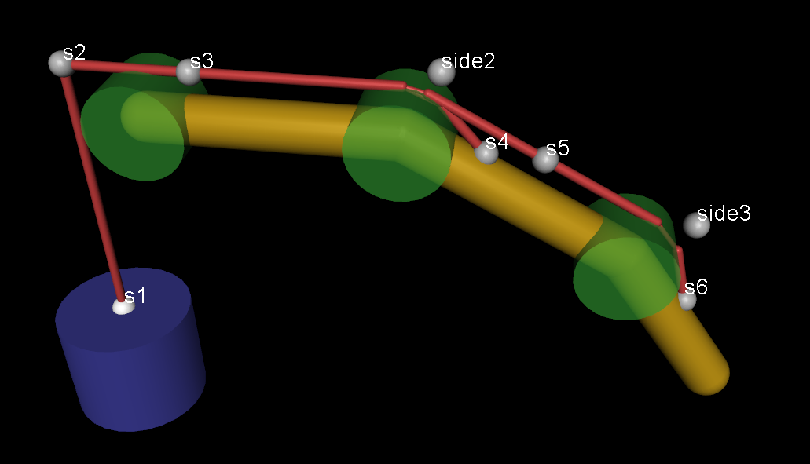
该元素创建一条空间肌腱（spatial tendon），它是一条最短长度路径，经过指定的途经点，并绕过指定的障碍 geom。路径上的对象由下面的子元素 site 和 geom 定义。还可以定义 滑轮，将路径分成多个分支。肌腱路径的每个分支都必须以 site 开始并以 site 结束，并且如果包含多个障碍 geom，它们之间必须用 site 隔开，以避免在肌腱层面需要迭代求解器。本例展示了一条充当手指伸肌的多分支肌腱，并用配重取代了执行器：tendon.xml。
另一种包绕形式是将肌腱约束为 穿过 geom，而不是绕过它。当指定了 sidesite 且其位置位于障碍 geom 的体积内部时，会自动启用这种形式。
可视化： 肌腱路径的可视化如上图所示，遵循下面的 width、material 和 rgba 属性。对于无驱动的双点肌腱，如果其 range 或 springlength 的形式为 [0 X] 且 X 为正，则采用一种特殊的可视化方式。这类肌腱的作用类似缆绳，只有在被拉伸时才施加力。因此，在未被拉伸时，它们被绘制为长度为 X 的悬链线，如 此示例模型 右侧的视频片段所示。
- name: string, optional
肌腱的名称。
Name of the tendon.
- class: string, optional
用于设置未指定属性的默认类（default class）。
Defaults class for setting unspecified attributes.
- group: int, "0"
肌腱所属的整数分组。该属性可用于自定义标签。可视化器也使用它来启用和禁用整组肌腱的渲染。
Integer group to which the tendon belongs. This attribute can be used for custom tags. It is also used by the visualizer to enable and disable the rendering of entire groups of tendons.
- limited: [false, true, auto], "auto"
如果该属性为 "true"，则由约束求解器施加下面 range 属性定义的长度限位。如果该属性为 "auto"，并且在 compiler 中设置了 autolimits，则在定义了 range 时启用长度限位。
If this attribute is “true”, the length limits defined by the range attribute below are imposed by the constraint solver. If this attribute is “auto”, and autolimits is set in compiler, length limits will be enabled if range is defined.
- actuatorfrclimited: [false, true, auto], "auto"
该属性指定作用在肌腱上的执行器力是否应被钳位。详情参见 力限制。该属性与 actuatorfrcrange 属性相互作用。如果该属性为 "false"，则禁用执行器力钳位；如果为 "true"，则启用执行器力钳位。如果该属性为 "auto"，并且在 compiler 中设置了 autolimits，则在定义了 actuatorfrcrange 时启用执行器力钳位。
This attribute specifies whether actuator forces acting on the tendon should be clamped. See Force limits for details. This attribute interacts with the actuatorfrcrange attribute. If this attribute is “false”, actuator force clamping is disabled. If it is “true”, actuator force clamping is enabled. If this attribute is “auto”, and autolimits is set in compiler, actuator force clamping will be enabled if actuatorfrcrange is defined.
- range: real(2), "0 0"
允许的肌腱长度范围。设置该属性而不指定 limited 是错误的，除非在 compiler 中设置了 autolimits。
Range of allowed tendon lengths. Setting this attribute without specifying limited is an error, unless autolimits is set in compiler.
- actuatorfrcrange: real(2), "0 0"
用于钳位作用在该肌腱上的执行器合力的范围。详情参见 力限制；若要限制同一个物理执行器的多个命令，建议使用单个多输入执行器，例如带有 forcerange 的 pid。编译器要求下界非正、上界非负。
如果 compiler-autolimits 为 "false"，则设置该属性而不指定 actuatorfrclimited 是错误的。Range for clamping total actuator forces acting on this tendon. See Force limits for details; to limit several commands of one physical actuator, prefer a single multi-input actuator such as pid with forcerange. The compiler expects the lower bound to be nonpositive and the upper bound to be nonnegative.
Setting this attribute without specifying actuatorfrclimited is an error if compiler-autolimits is “false”.
- solreflimit, solimplimit
用于模拟肌腱限位的约束求解器参数。参见 求解器参数。
Constraint solver parameters for simulating tendon limits. See Solver parameters.
- solreffriction, solimpfriction
用于模拟肌腱中干摩擦的约束求解器参数。另见 摩擦。
Constraint solver parameters for simulating dry friction in the tendon. See also Friction.
- margin: real, "0"
当肌腱长度与指定范围任一限位之差的绝对值低于该裕量时，限位约束被激活。与接触类似，裕量参数会从范围限位与肌腱长度之差中减去。约束被激活时，得到的约束距离始终为负。该量用于计算作为距离函数的约束阻抗（impedance），详见 求解器参数。
The limit constraint becomes active when the absolute value of the difference between the tendon length and either limit of the specified range falls below this margin. Similar to contacts, the margin parameter is subtracted from the difference between the range limit and the tendon length. The resulting constraint distance is always negative when the constraint is active. This quantity is used to compute constraint impedance as a function of distance, as explained in Solver parameters.
- frictionloss: real, "0"
由干摩擦引起的摩擦损耗。若要启用摩擦损耗，请将该属性设置为正值。
Friction loss caused by dry friction. To enable friction loss, set this attribute to a positive value.
- width: real, "0.003"
空间肌腱横截面的半径，用于渲染。肌腱绕过 geom 障碍的部分以缩小的宽度渲染。
Radius of the cross-section area of the spatial tendon, used for rendering. Parts of the tendon that wrap around geom obstacles are rendered with reduced width.
- material: string, optional
用于设置肌腱外观的材质。
Material used to set the appearance of the tendon.
- rgba: real(4), "0.5 0.5 0.5 1"
肌腱的颜色和透明度。当该值不同于内部默认值时，它会覆盖对应的材质属性。如果未指定 material 且 rgba 为默认值，则对于长度超出限位的有限位肌腱，会使用 约束阻抗 \(d\) 的值，将默认颜色与 rgba/constraint 混合后重新着色。
Color and transparency of the tendon. When this value is different from the internal default, it overrides the corresponding material properties. If a material is unspecified and rgba has the default value, limited tendons whose length exceeds the limit are recolored using the value of the constraint impedance \(d\) to mix the default color and rgba/constraint.
- springlength: real(2), "-1 -1"
弹簧静止位置，可以取一个或两个值。如果给出一个值，它对应肌腱静止时的长度。如果为
-1，则由编译器根据mjModel.qpos_spring中的弹簧参考构型（reference configuration）确定肌腱的静止长度。
请注意，默认值-1会触发自动长度计算，它是针对 空间 肌腱设计的，因为空间肌腱的长度只能是非负的。若要将 固定 肌腱的 springlength 设置为-1，请使用接近的值，例如-0.99999。
如果给出两个非递减的值，它们定义一个 死区 范围。如果肌腱长度位于这两个值之间，则力为 0。如果位于该范围之外，则力的行为类似普通弹簧，其静止点对应最近的 springlength 值。死区可用于定义其限位由弹簧而非约束来实现的肌腱。Spring resting position, can take either one or two values. If one value is given, it corresponds to the length of the tendon at rest. If it is-1, the tendon resting length is determined by the compiler from the spring reference configuration inmjModel.qpos_spring.
Note that the default value of-1, which invokes the automatic length computation, was designed with spatial tendons in mind, which can only have nonegative length. In order to set the springlength of a fixed tendon to-1, use a nearby value like-0.99999.
If two non-decreasing values are given, they define a dead-band range. If the tendon length is between the two values, the force is 0. If it is outside this range, the force behaves like a regular spring, with the rest-point corresponding to the nearest springlength value. A deadband can be used to define tendons whose limits are enforced by springs rather than constraints.
- stiffness: real, "0 0 0"
肌腱刚度系数 \(a, b, c\)。正的 \(a\) 会产生沿肌腱作用的线性弹簧力 \(f(x) = -a x\)。这里 \(x\) 是由 springlength 定义的肌腱位移。
Tendon stiffness coefficients \(a, b, c\). A positive \(a\) generates a linear spring force \(f(x) = -a x\), acting along the tendon. Here \(x\) is the tendon displacement defined by springlength.如果设置了可选的第二和第三个分量，它们定义一个非线性多项式弹簧力 \(f(x) = -(a x + b x^2 + c x^3)\)。详情参见 多项式力。
If the optional second and third components are set, they define a nonlinear polynomial spring force \(f(x) = -(a x + b x^2 + c x^3)\). See Polynomial forces for details.右侧的视频片段来自 此模型。
The clip on the right is of this model.
- springyield: real, "0"
肌腱弹簧的弹性屈服阈值。当其为正时，肌腱弹簧的参考范围会分配在可变状态向量
mjData.plastic中，偏移为mjModel.tendon_plasticadr[i]（2 个条目，由mjModel.tendon_lengthspring初始化），并且每当弹簧死区之外的位移超过springyield时，参考范围就会永久发生移动（理想弹塑性）。对于springlength="0 L"（L > 0）的单边松弛肌腱，拉伸屈服只移动上界L，而下界保持固定在0。当其为0（默认值）时，塑性被禁用（mjModel.tendon_plasticadr[i] == -1），弹簧为纯弹性；在运行时对已处于塑性状态的肌腱（tendon_plasticadr[i] >= 0）设置mjModel.tendon_springyield[i] = 0，对应零屈服阈值（完全塑性滑移）。Elastic yield threshold for the tendon spring. When positive, the tendon spring reference range is allocated in the mutable state vectormjData.plasticat offsetmjModel.tendon_plasticadr[i](2 entries, initialized frommjModel.tendon_lengthspring) and shifts permanently whenever the displacement outside the spring deadband exceedsspringyield(ideal elasto-plasticity). For unilateral slack tendons withspringlength="0 L"(L > 0), tensile yielding shifts only the upper boundLwhile keeping the lower bound pinned at0. When0(default), plasticity is disabled (mjModel.tendon_plasticadr[i] == -1) and the spring is purely elastic; settingmjModel.tendon_springyield[i] = 0at runtime on an already-plastic tendon (tendon_plasticadr[i] >= 0) corresponds to zero yield threshold (full plastic slip).
- damping: real, "0 0 0"
阻尼系数 \(a, b, c\)。正的 \(a\) 产生标准的耗散线性阻尼力 \(f(v) = -a v\)。
Damping coefficients \(a, b, c\). A positive \(a\) produces the standard dissipative linear damping force \(f(v) = -a v\).如果设置了可选的第二和第三个分量，它们定义一个非线性多项式阻尼力 \(f(v) = -(a v + b v |v| + c v^3)\)。请注意二次项经过了反对称化处理，以确保该力是速度的奇函数。详情参见 多项式力。
If the optional second and third components are set, they define a nonlinear polynomial damping force \(f(v) = -(a v + b v |v| + c v^3)\). Note the anti-symmetrization of the quadratic term, ensuring that the force is an odd function of velocity. See Polynomial forces for details.
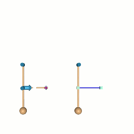
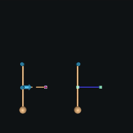
- armature: real, "0"
与肌腱长度变化相关联的惯性。将该属性设置为正值 \(m\) 会增加一个动能项 \(\frac{1}{2}mv^2\)，其中 \(v\) 是肌腱速度。在对包含旋转部件的线性执行器的 电枢惯量，或线性液压执行器中流体的惯性运动进行建模时，肌腱惯性最有价值。在插图中，我们比较了（左）一个 3 自由度系统与（右）一个等效的、带有电枢惯量肌腱的 1 自由度模型：左侧系统的“肌腱”由一个旋转关节和一个带有 电枢惯量 的滑动关节实现，并通过 connect 约束连接到世界。与关节的 电枢惯量 一样，这一附加惯性只与肌腱长度的变化相关联，不会影响长度固定的肌腱在运动时的动力学。由于肌腱雅可比（Jacobian）\(J\) 依赖于位置，肌腱电枢惯量会导致一个额外的偏置力（bias force）项 \(c = m J \dot{J}^T \dot{q}\)。
Inertia associated with changes in tendon length. Setting this attribute to a positive value \(m\) adds a kinetic energy term \(\frac{1}{2}mv^2\), where \(v\) is the tendon velocity. Tendon inertia is most valuable when modeling the armature inertia in a linear actuator which contains a spinning element or the inertial motion of a fluid in a linear hydraulic actuator. In the illustration, we compare (left) a 3-dof system with a “tendon” implemented with a rotational joint and a slider joint with armature, attached to the world with a connect constraint and (right) an equivalent 1-dof model with an armature-bearing tendon. Like joint armature, this added inertia is only associated with changes in tendon length, and would not affect the dynamics of a moving fixed-length tendon. Because the tendon Jacobian \(J\) is position-dependent, tendon armature leads to an additional bias-force term \(c = m J \dot{J}^T \dot{q}\).
- user: real(nuser_tendon), "0 0 ..."
参见 用户参数。
See User parameters.
spatial/site#
该属性指定肌腱路径必须经过的一个 site。请注意，site 是刚性固定在刚体上的。
- site: string, required
肌腱必须经过的 site 的名称。
The name of the site that the tendon must pass through.
spatial/geom#
该元素指定一个充当肌腱路径障碍的 geom。如果最短长度路径没有接触该 geom，则它不起作用；否则路径会绕过 geom 的表面。包绕是通过解析方式计算的，因此这里允许的 geom 类型仅限于球体和圆柱体。出于肌腱包绕的目的，圆柱体被视为具有无限长度。如果定义了 sidesite，并且其位置位于 geom 内部，则肌腱被约束为穿过该 geom，而不是绕过它。
- geom: string, required
充当肌腱路径障碍的 geom 的名称。这里只能引用球体和圆柱体 geom。
The name of a geom that acts as an obstacle for the tendon path. Only sphere and cylinder geoms can be referenced here.
- sidesite: string, optional
为了防止肌腱路径在模型构型变化时从 geom 的一侧突然跳到另一侧，用户可以定义 geom 的一个首选“侧”。于是，肌腱绕过 geom 的方式与如下路径相同：从第一个端点 \(p_1\) 出发，经过侧 site \(s\) （投影到 geom 表面上），到达第二个端点 \(p_2\)。如果两个端点之间的直线段本来就以这种方式经过 geom，则肌腱不发生包绕。形式上，肌腱是从 \(p_1\) 到 \(p_2\) 的最短路径，它与包绕平面内（去掉 geom 后）的折线 \(p_1 \to s \to p_2\) 同伦，即绕 geom 中心具有相同的缠绕角。在下面的图像中，侧 site 为绿色，折线为细灰线。
To prevent the tendon path from snapping from one side of the geom to the other as the model configuration varies, the user can define a preferred “side” of the geom. The tendon then goes around the geom the same way as the path from the first endpoint \(p_1\), through the side site \(s\) (projected onto the surface of the geom), to the second endpoint \(p_2\). If the straight segment between the endpoints already passes the geom that way, the tendon does not wrap. Formally, the tendon is the shortest path from \(p_1\) to \(p_2\) that is homotopic to the polyline \(p_1 \to s \to p_2\) in the wrapping plane with the geom removed, i.e., that has the same winding angle around the geom center. In the images below, the side site is green and the polyline is the thin grey line.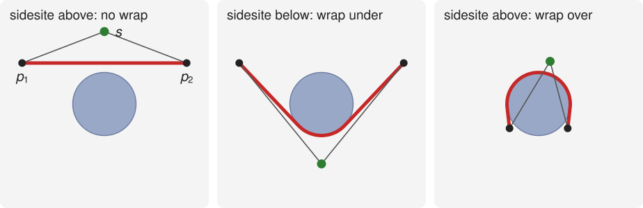

当端点越过与侧 site 相对的射线时，肌腱会从 geom 上脱离，因此侧 site 的放置应使端点在整个运动范围内不会越过这条射线，通常放在被包绕圆弧的中间附近。实际中经常需要指定侧 site。如果侧 site 位于 geom 内部，则肌腱被约束为穿过 geom 的内部。
The tendon snaps off the geom when an endpoint crosses the ray opposite the side site, so side sites should be placed such that the endpoints do not cross this ray over the range of motion, typically near the middle of the wrapped arc. Specifying a side site is often needed in practice. If the side site is inside the geom, the tendon is constrained to pass through the interior of the geom.

spatial/pulley#
该元素在肌腱路径中开始一个新的分支。各分支在空间上不要求相连。与计算章节中 执行模型 一节所述的传动（transmission）类似，影响仿真的量是肌腱长度及其关于关节位置的梯度。如果空间肌腱有多个分支，则每个分支的长度除以开始该分支的 pulley 元素的 divisor 属性，然后相加得到肌腱的总长度。这就是各分支之间的空间关系与仿真无关的原因。上面的 tendon.xml 示例演示了滑轮的用法。
- divisor: real, required
由 pulley 元素开始的肌腱分支的长度除以这里指定的值。对于把单个分支分成两个并行分支的物理滑轮，公共分支的 divisor 值为 1，滑轮之后的两个分支的 divisor 值为 2。如果其中一个分支被另一个滑轮进一步拆分，则每个新分支的 divisor 值为 4，依此类推。请注意，在 MJCF 中每个分支都以一个 pulley 开始，因此一个物理滑轮需要用两个 MJCF pulley 来建模。如果肌腱路径中不包含 pulley 元素，则第一个也是唯一的分支的 divisor 值为 1。
The length of the tendon branch started by the pulley element is divided by the value specified here. For a physical pulley that splits a single branch into two parallel branches, the common branch would have divisor value of 1 and the two branches following the pulley would have divisor values of 2. If one of them is further split by another pulley, each new branch would have divisor value of 4 and so on. Note that in MJCF each branch starts with a pulley, thus a single physical pulley is modeled with two MJCF pulleys. If no pulley elements are included in the tendon path, the first and only branch has divisor value of 1.
tendon/fixed#
该元素创建一条抽象肌腱，其长度定义为关节位置的线性组合。请记住，肌腱长度及其梯度是仿真所需的唯一量。因此，我们可以定义任意关于关节位置的标量函数，将其称为“肌腱”，并在 MuJoCo 中使用。目前支持的此类函数只有固定的线性组合。固定肌腱的属性是空间肌腱属性的子集，含义与上文相同。
- name, class, group, limited, range, solreflimit, solimplimit, solreffriction, solimpfriction, frictionloss, margin, springlength, stiffness, springyield, damping, user
与 spatial 元素中相同。
Same as in the spatial element.
fixed/joint#
该元素向固定肌腱长度的计算中添加一个关节。每个包含的关节的位置或角度乘以对应的 coef 值，然后相加得到肌腱长度。
- joint: string, required
要添加到固定肌腱中的关节的名称。这里只能引用标量关节（slide 和 hinge）。
Name of the joint to be added to the fixed tendon. Only scalar joints (slide and hinge) can be referenced here.
- coef: real, required
与指定关节的位置或角度相乘的标量系数。
Scalar coefficient multiplying the position or angle of the specified joint.
actuator#
这是用于执行器定义的分组元素。请回顾计算章节中对 MuJoCo 的 执行模型 的讨论，以及本章前面讨论过的 执行器快捷方式。下面所有与执行器相关的元素的前 13 个属性都相同，因此我们只在 general 执行器下记录一次。
actuator/general#
该元素创建一个通用执行器（actuator），可完全访问执行器的所有组成部分，并允许用户独立地指定它们。
- name: string, optional
元素名称。参见 元素命名。
Element name. See Naming elements.
- class: string, optional
生效的默认类（default class）。参见 默认设置。
Active defaults class. See Default settings.
- group: int, "0"
执行器所属的整数分组。该属性可用于自定义标签。可视化器（visualizer）也用它来启用或禁用整组执行器的渲染（rendering）。
Integer group to which the actuator belongs. This attribute can be used for custom tags. It is also used by the visualizer to enable and disable the rendering of entire groups of actuators.
- nsample: int, "0"
若大于 0，该属性会创建一个按时间索引的环形缓冲区，保存该执行器
ctrl历史的 nsample 个样本。在状态推进过程中，当前的控制输入（control input）会以时间戳time追加到缓冲区，同时最旧的样本被移除。历史缓冲区中的值可通过 mj_readCtrl 读取。If greater than 0, this attribute creates a time-indexed ring buffer with nsample samples of this actuator’sctrlhistory. During state advancement, the current control input is appended to the buffer with timestamptime, and the oldest sample is removed. Values in the history buffer can be read via mj_readCtrl.
- interp: [zoh, linear, cubic], "zoh"
从历史缓冲区读取时所用的插值方法。对应 mj_readCtrl 的
interp参数。The interpolation method used when reading from the history buffer. Corresponds to theinterpargument in mj_readCtrl.zoh：零阶保持（分段常数）。zoh: Zero-order hold (piecewise constant).linear：分段线性插值。linear: Piecewise linear interpolation.cubic：三次样条插值（Catmull-Rom）。cubic: Cubic spline interpolation (Catmull-Rom).
interp 的取值面向高级用例，详情参见 延迟。
The interp value is for advanced use-cases, see Delays for details.
- delay: real, "0"
若大于 0，则在正动力学（forward dynamics）计算中，执行器的控制输入不再从
mjData.ctrl读取，而是通过 mj_readCtrl 从历史缓冲区读取。需要有历史缓冲区（nsample > 0）。If greater than 0, then during the forward dynamics, instead of reading the control input to the actuator frommjData.ctrl, the control input is read from the history buffer using mj_readCtrl. Requires a history buffer (nsample > 0).最常见的情形是
delay = nsample * timestep。In the most common case,delay = nsample * timestep.
- ctrllimited: [false, true, auto], "auto"
若为 true，则该执行器的控制输入在运行时会被自动钳位到 ctrlrange。若为 false，则禁用控制输入钳位。若为 "auto" 且 compiler 中设置了 autolimits，那么只要定义了 ctrlrange 而没有显式地把该属性设为 "true"，控制钳位就会被自动设为 true。注意，也可以通过 option/flag 的 clampctrl 属性全局禁用控制输入钳位。
If true, the control input to this actuator is automatically clamped to ctrlrange at runtime. If false, control input clamping is disabled. If “auto” and autolimits is set in compiler, control clamping will automatically be set to true if ctrlrange is defined without explicitly setting this attribute to “true”. Note that control input clamping can also be globally disabled with the clampctrl attribute of option/flag.
- forcelimited: [false, true, auto], "auto"
若为 true，则该执行器的力输出在运行时会被自动钳位到 forcerange。若为 false，则禁用力钳位。若为 "auto" 且 compiler 中设置了 autolimits，那么只要定义了 forcerange 而没有显式地把该属性设为 "true"，力钳位就会被自动设为 true。
If true, the force output of this actuator is automatically clamped to forcerange at runtime. If false, force clamping is disabled. If “auto” and autolimits is set in compiler, force clamping will automatically be set to true if forcerange is defined without explicitly setting this attribute to “true”.
- actlimited: [false, true, auto], "auto"
若为 true，则与该执行器关联的内部状态（激活状态，activation）在运行时会被自动钳位到 actrange。若为 false，则禁用激活钳位。若为 "auto" 且 compiler 中设置了 autolimits，那么只要定义了 actrange 而没有显式地把该属性设为 "true"，激活钳位就会被自动设为 true。更多细节参见 激活钳位 一节。
If true, the internal state (activation) associated with this actuator is automatically clamped to actrange at runtime. If false, activation clamping is disabled. If “auto” and autolimits is set in compiler, activation clamping will automatically be set to true if actrange is defined without explicitly setting this attribute to “true”. See the Activation clamping section for more details.
- ctrlrange: real(2), "0 0"
控制输入钳位的范围。第一个值必须小于第二个值。
如果 compiler 中的 autolimits 为 "false"，则设置该属性而不指定 ctrllimited 会报错。Range for clamping the control input. The first value must be smaller than the second value.
Setting this attribute without specifying ctrllimited is an error if autolimits is “false” in compiler.
- forcerange: real(2), "0 0"
力输出钳位的范围。第一个值不得大于第二个值。对于 orientation 执行器，力是一个三维力矩，按其范数钳位：第二个值限定力矩的大小，第一个值必须为 0。
如果 compiler 中的 autolimits 为 "false"，则设置该属性而不指定 forcelimited 会报错。Range for clamping the force output. The first value must be no greater than the second value. On orientation actuators the force is a 3D torque, clamped on its norm: the second value bounds the torque magnitude and the first value must be 0.
Setting this attribute without specifying forcelimited is an error if autolimits is “false” in compiler.
- actrange: real(2), "0 0"
激活状态钳位的范围。第一个值不得大于第二个值。更多细节参见 激活钳位 一节。
如果 compiler 中的 autolimits 为 "false"，则设置该属性而不指定 actlimited 会报错。Range for clamping the activation state. The first value must be no greater than the second value. See the Activation clamping section for more details.
Setting this attribute without specifying actlimited is an error if autolimits is “false” in compiler.
- lengthrange: real(2), "0 0"
执行器传动（transmission）的可行长度范围。参见 长度范围。
Range of feasible lengths of the actuator’s transmission. See Length Range.
- gear: real(6), "1 0 0 0 0 0"
该属性对所有传动类型缩放执行器的长度（进而缩放力臂、速度和力）。它不同于力生成机制中的增益（gain），因为增益只缩放力输出，而不影响长度、力臂和速度。对于标量传动的执行器，只使用该向量的第一个元素。其余元素用于 joint、jointinparent 和 site 传动，在这些传动中该属性用来指定三维的力轴和力矩轴。
This attribute scales the length (and consequently moment arms, velocity and force) of the actuator, for all transmission types. It is different from the gain in the force generation mechanism, because the gain only scales the force output and does not affect the length, moment arms and velocity. For actuators with scalar transmission, only the first element of this vector is used. The remaining elements are needed for joint, jointinparent and site transmissions where this attribute is used to specify 3D force and torque axes.
- damping: real(3), "0 0 0"
粘性阻尼（damping）系数，由执行器贡献给其传动目标（仅限关节或肌腱）。阻尼值按 gear 的平方缩放，因为传动比同时缩放力和速度，从而产生折算阻尼（类似于 折算惯量）。与 关节阻尼 一样，各系数分别对应线性、二次和三次速度项。详情参见 多项式力。
Viscous damping coefficients, contributed by the actuator to its transmission target (joint or tendon only). The damping value is scaled by gear squared, because the gear ratio scales both forces and velocities, leading to reflected damping (analogous to reflected inertia). Like joint damping, coefficients correspond to linear, quadratic and cubic velocity. See Polynomial forces for details.若干执行器快捷方式带有 kv 属性，它映射到 -biasprm[2]，语义与 damping 相近（例如 position/kv）。这两个属性的区别如下：
Several actuator shortcuts have a kv attribute which maps to -biasprm[2] and has similar semantics to damping: (e.g., position/kv). The differences between these attributes are:damping 作用于传动目标，因此包含 gear2 因子。kv 不需要该因子，因为它已经在执行器空间中施加（所以单位相同）。
damping is applied at the transmission target, and therefore includes the gear2 factor. This factor is not required for kv as it is already applied in actuator space (so the units are identical).使用 Euler 积分器（integrator）时，damping 支持隐式积分，而 kv 不支持。要对 kv 使用隐式积分，需要选择 implicit 或 implicitfast，参见 积分器。
Implicit integration works for damping when using the Euler integrator but not for kv. To get implicit integration for kv, implicit or implicitfast is required, see Integrators.damping 允许多项式阻尼，而 kv 只能是线性的。
damping allows for polynomial damping, while kv is only linear.kv 产生的阻尼力受 forcerange 钳位约束，而 damping 产生的力则不受。
Damping forces generated by kv are subject to forcerange clamping, but forces generated by damping are not.
最后请注意，虽然允许为作用于同一传动目标的多个执行器同时指定非零的阻尼和 电枢惯量，但只为其中一个执行器指定性能更好。由于这些值最终会被求和，建议把同一传动目标的所有阻尼和电枢惯量放在单个执行器定义中。
Finally, note that while it is permitted for nonzero damping and armature to be specified for multiple actuators acting on the same transmission target, it is more performant to specify them for only one actuator. Since these values are summed anyway, it is recommended to place all damping and armature for one transmission target in a single actuator definition.
- armature: real, "0"
由执行器贡献给其传动目标（仅限关节或肌腱）的电枢惯量（对滑动关节则为质量）。这是执行器内部旋转部件（例如转子）的实际惯量。贡献值按 gear 的平方缩放，因为传动比同时缩放力和速度，从而产生折算惯量。更多细节参见 关节 和 肌腱 的电枢惯量。
Armature inertia (or mass for slider joints) contributed by the actuator to its transmission target (joint or tendon only). This is the actual inertia of the spinning element inside the actuator (e.g., a rotor). The contributed value is scaled by gear squared, because the gear ratio scales both forces and velocities, leading to reflected inertia. See joint and tendon armature for more details.关于多个执行器作用于同一传动目标的情形，另请参见 damping 中的说明。
See also the note in damping regarding multiple actuators acting on the same transmission target.
- cranklength: real, "0"
仅用于曲柄滑块传动类型。指定连杆的长度。当存在曲柄滑块传动时，编译器要求该值为正。
Used only for the slider-crank transmission type. Specifies the length of the connecting rod. The compiler expects this value to be positive when a slider-crank transmission is present.
- joint: string, optional
该属性与后面四个属性共同决定执行器的传动类型。它们都是可选的，且必须恰好指定其中一个。如果指定了该属性，则执行器作用于给定的关节（joint）。
This and the next four attributes determine the type of actuator transmission. All of them are optional, and exactly one of them must be specified. If this attribute is specified, the actuator acts on the given joint.对于 hinge 和 slide 关节，执行器长度等于关节位置/角度乘以 gear 的第一个元素。
For hinge and slide joints, the actuator length equals the joint position/angle times the first element of gear.对于 ball 关节，gear 的前三个元素定义子坐标系（child frame）中的一个三维旋转轴，执行器绕该轴产生力矩。执行器长度定义为该 gear 轴与关节四元数（quaternion）的轴角表示之间的点积；若 gear 已归一化，则单位为弧度（一般按 gear 的范数缩放）。注意，长度是定义在圆上的：总旋转超过 \(\pi\) 后会回绕到 \(-\pi\)，反之亦然。此类传动上的 position 和 intvelocity 伺服在圆上解释其设定值，朝目标最近的等价表示驱动，因此目标可以连续地旋转任意多圈，无需设置控制限位来防止回绕。
For ball joints, the first three elements of gear define a 3d rotation axis in the child frame around which the actuator produces torque. The actuator length is defined as the dot-product between this gear axis and the angle-axis representation of the joint quaternion, and is in units of radian if gear is normalized (generally scaled by the norm of gear). Note that the length is defined on a circle: after total rotation of more than \(\pi\) it wraps to \(-\pi\), and vice-versa. position and intvelocity servos on such transmissions interpret their setpoint on the circle, driving towards the nearest representative of the target, so targets can be wound continuously through any number of turns and no control limits are required to prevent wrapping.对于 free 关节，gear 先定义世界坐标系中的一个三维平移轴，再定义子坐标系中的一个三维旋转轴。执行器相对于指定的轴产生力和力矩。free 关节的执行器长度定义为零（因此不能与位置伺服一起使用）。
For free joints, gear defines a 3d translation axis in the world frame followed by a 3d rotation axis in the child frame. The actuator generates force and torque relative to the specified axes. The actuator length for free joints is defined as zero (so cannot be used with position servos).
- jointinparent: string, optional
与 joint 相同，区别在于对 ball 和 free 关节，gear 给出的三维旋转轴定义在父坐标系（parent frame，对 free 关节即世界坐标系）中，而不是子坐标系中。
Identical to joint, except that for ball and free joints, the 3d rotation axis given by gear is defined in the parent frame (which is the world frame for free joints) rather than the child frame.
- site: string, optional
该传动可以在一个 site 上施加力和力矩。gear 向量先定义一个三维平移轴，再定义一个三维旋转轴，二者都定义在该 site 的坐标系中。这可用于建模喷气口和螺旋桨。其效果类似于驱动一个 free 关节，并且除非定义了 refsite（见下文），执行器长度定义为零。与上述 joint 和 jointinparent 传动的一个区别是，这里执行器作用于 site 而不是关节，但当 site 定义在自由浮动刚体的坐标系原点时，这一区别就消失了。另一个区别是，对于 site 传动，平移轴和旋转轴都定义在局部坐标中。相比之下，joint 的平移是全局的而旋转是局部的，jointinparent 的平移和旋转都是全局的。
This transmission can apply force and torque at a site. The gear vector defines a 3d translation axis followed by a 3d rotation axis. Both are defined in the site’s frame. This can be used to model jets and propellers. The effect is similar to actuating a free joint, and the actuator length is defined as zero unless a refsite is defined (see below). One difference from the joint and jointinparent transmissions above is that here the actuator operates on a site rather than a joint, but this difference disappears when the site is defined at the frame origin of the free-floating body. The other difference is that for site transmissions both the translation and rotation axes are defined in local coordinates. In contrast, translation is global and rotation is local for joint, and both translation and rotation are global for jointinparent.
- refsite: string, optional
使用 site 传动时，相对于 refsite 的坐标系来测量平移和旋转。此时执行器 确实 具有长度，可以用 position 执行器直接控制末端执行器，参见示例模型 refsite.xml。如上所述，长度是 gear 向量与坐标系差异的点积。因此
gear="0 1 0 0 0 0"表示“ site 在 refsite 坐标系中的 Y 向偏移”，而gear="0 0 0 0 0 1"表示旋转“ site 在 refsite 坐标系中的 Z 向旋转”。建议使用归一化的 gear 向量，并且非零元素只出现在 gear 的前 3 个 或 后 3 个元素中，这样执行器长度的单位将分别是长度单位或弧度。与 ball 关节一样（参见上文的 general/joint），旋转长度定义在圆上，伺服设定值也在圆上解释；无需设置控制限位来防止回绕。When using a site transmission, measure the translation and rotation w.r.t the frame of the refsite. In this case the actuator does have length and position actuators can be used to directly control an end effector, see refsite.xml example model. As above, the length is the dot product of the gear vector and the frame difference. Sogear="0 1 0 0 0 0"means “Y-offset of site in the refsite frame”, whilegear="0 0 0 0 0 1"means rotation “Z- rotation of site in the refsite frame”. It is recommended to use a normalized gear vector with nonzeros in only the first 3 or the last 3 elements of gear, so the actuator length will be in either length units or radians, respectively. As with ball joints (see general/joint above), rotational lengths are defined on a circle and servo setpoints are interpreted on it; control limits are not required to prevent wrapping.
- body: string, optional
该传动可以在接触点处沿接触法线方向施加线性力。接触集合是属于指定 body 的所有接触（contact）。这可用于建模壁虎和昆虫足部这类天然的主动粘附机制。执行器长度同样定义为零。更多信息参见下文的 adhesion 快捷方式。
This transmission can apply linear forces at contact points in the direction of the contact normal. The set of contacts is all those belonging to the specified body. This can be used to model natural active adhesion mechanisms like the feet of geckos and insects. The actuator length is again defined as zero. For more information, see the adhesion shortcut below.
- tendon: string, optional
如果指定，执行器作用于给定的肌腱（tendon）。执行器长度等于肌腱长度乘以传动比。空间肌腱和固定肌腱均可使用。
If specified, the actuator acts on the given tendon. The actuator length equals the tendon length times the gear ratio. Both spatial and fixed tendons can be used.
- cranksite: string, optional
如果指定，执行器作用于一个曲柄滑块机构，该机构由执行器隐式确定（即它不是单独的模型元素）。指定的 site 对应连接曲柄与连杆的销。执行器长度等于曲柄滑块机构的位置乘以传动比。
If specified, the actuator acts on a slider-crank mechanism which is implicitly determined by the actuator (i.e., it is not a separate model element). The specified site corresponds to the pin joining the crank and the connecting rod. The actuator length equals the position of the slider-crank mechanism times the gear ratio.
- slidersite: string, required for slider-crank transmission
仅用于曲柄滑块传动类型。指定的 site 是连接滑块与连杆的销。滑块沿 slidersite 坐标系的 z 轴运动。因此，该 site 在运动学树（kinematic tree）中定义时应按需设置好朝向；其朝向无法在执行器定义中更改。
Used only for the slider-crank transmission type. The specified site is the pin joining the slider and the connecting rod. The slider moves along the z-axis of the slidersite frame. Therefore the site should be oriented as needed when it is defined in the kinematic tree; its orientation cannot be changed in the actuator definition.
- user: real(nuser_actuator), "0 ... 0"
参见 用户参数。
See User parameters.
- actdim: real, "-1"
激活状态的维度。默认值
-1指示编译器根据 dyntype 设置维度。大于1的值只允许用于用户自定义的激活动力学，因为原生类型要求维度只能是 0 或 1。对于大于 1 的激活维度，使用 最后一个元素 来生成力。Dimension of the activation state. The default value of-1instructs the compiler to set the dimension according to the dyntype. Values larger than1are only allowed for user-defined activation dynamics, as native types require dimensions of only 0 or 1. For activation dimensions bigger than 1, the last element is used to generate force.
- dyntype: [none, integrator, filter, filterexact, pid, dcmotor, muscle, user], "none"
执行器的激活动力学类型。可用的动力学类型已在 执行器模型 一节中描述过。下面用略有不同的记法（对应所涉及的 mjModel 和 mjData 字段）重复一遍该描述：
Activation dynamics type for the actuator. The available dynamics types were already described in the Actuation model section. Repeating that description in somewhat different notation (corresponding to the mjModel and mjData fields involved) we have:Keyword
Description
none
无内部状态
No internal stateintegrator
act_dot = ctrl
filter
act_dot = (ctrl - act) / dynprm[0]
filterexact
与 filter 类似，但采用精确积分
Like filter but with exact integrationpid
act_dot = 位置误差；参见 pid
act_dot = position error; see piddcmotor
直流电机电气动力学，参见 dcmotor
DC motor electrical dynamics, see dcmotormuscle
act_dot = mju_muscleDynamics(...)
user
act_dot = mjcb_act_dyn(...)
- gaintype: [fixed, affine, muscle, dcmotor, pid, so3, user], "fixed"
增益和偏置共同决定力生成机制的输出，目前假定该机制是仿射的。如 执行器模型 中所述，通用公式为：scalar_force = gain_term * (act or ctrl) + bias_term。该公式在存在激活状态时使用激活状态，否则使用控制输入。各关键字含义如下：
The gain and bias together determine the output of the force generation mechanism, which is currently assumed to be affine. As already explained in Actuation model, the general formula is: scalar_force = gain_term * (act or ctrl) + bias_term. The formula uses the activation state when present, and the control otherwise. The keywords have the following meaning:Keyword
Description
fixed
gain_term = gainprm[0]
affine
gain_term = gain_prm[0] + gain_prm[1]*length + gain_prm[2]*velocity
muscle
gain_term = mju_muscleGain(...)
dcmotor
直流电机增益（K 或 K/R），参见 dcmotor
DC motor gain (K or K/R), see dcmotorpid
带设定值输入的 PID 控制器，参见 pid
PID controller with setpoint inputs, see pidso3
测地线姿态伺服，对 3 个力输出联合计算，参见 orientation
geodesic orientation servo, computed jointly over 3 force outputs, see orientationuser
gain_term = mjcb_act_gain(...)
- biastype: [none, affine, muscle, dcmotor, so3, user], "none"
各关键字含义如下：
The keywords have the following meaning:Keyword
Description
none
bias_term = 0
affine
bias_term = biasprm[0] + biasprm[1]*length + biasprm[2]*velocity
muscle
bias_term = mju_muscleBias(...)
dcmotor
直流电机偏置：反电动势、齿槽效应、LuGre 摩擦，参见 dcmotor
DC motor bias: back-EMF, cogging, LuGre friction, see dcmotorso3
测地线姿态伺服的阻尼项，参见 orientation
damping term of the geodesic orientation servo, see orientationuser
bias_term = mjcb_act_bias(...)
注意，gaintype 和 biastype 必须同时为 "so3"，或者同时不为 "so3"。
Note that gaintype and biastype must either both be “so3” or neither.
- dynprm: real(10), "1 0 ... 0"
激活动力学参数。内置的激活类型（muscle 除外）只使用第一个参数，但我们提供了额外的参数，以便用户回调实现更复杂的模型。解析器不强制检查该数组的长度，因此用户可以按需输入任意多个参数。这些默认值与 muscle 执行器不兼容；参见下文的 muscle。
Activation dynamics parameters. The built-in activation types (except for muscle) use only the first parameter, but we provide additional parameters in case user callbacks implement a more elaborate model. The length of this array is not enforced by the parser, so the user can enter as many parameters as needed. These defaults are not compatible with muscle actuators; see muscle below.
- gainprm: real(10), "1 0 ... 0"
增益参数。内置的增益类型（muscle 除外）只使用第一个参数，但我们提供了额外的参数，以便用户回调实现更复杂的模型。解析器不强制检查该数组的长度，因此用户可以按需输入任意多个参数。这些默认值与 muscle 执行器不兼容；参见下文的 muscle。
Gain parameters. The built-in gain types (except for muscle) use only the first parameter, but we provide additional parameters in case user callbacks implement a more elaborate model. The length of this array is not enforced by the parser, so the user can enter as many parameters as needed. These defaults are not compatible with muscle actuators; see muscle below.
- biasprm: real(10), "0 ... 0"
偏置参数。仿射偏置类型使用三个参数。解析器不强制检查该数组的长度，因此用户可以按需输入任意多个参数。这些默认值与 muscle 执行器不兼容；参见下文的 muscle。
Bias parameters. The affine bias type uses three parameters. The length of this array is not enforced by the parser, so the user can enter as many parameters as needed. These defaults are not compatible with muscle actuators; see muscle below.
- inheritrange: real, "0"
根据位置伺服所作用的关节或肌腱的范围来设置该伺服的范围，如 position/inheritrange 中所述：设置 ctrlrange，或在 dyntype 为 "integrator" 时设置 actrange。它对具有仿射偏置、且增益为固定增益（其中
gainprm[0]等于-biasprm[1]）或 gaintype 为 "pid" 的执行器有效：即 position、intvelocity 和 pid 快捷方式所创建的执行器。Sets the range of a position servo from the range of its joint or tendon, as described in position/inheritrange: the ctrlrange, or the actrange if dyntype is “integrator”. It has an effect on an actuator with affine bias and either fixed gain, wheregainprm[0]equals-biasprm[1], or gaintype “pid”: the actuators which the position, intvelocity and pid shortcuts create.
- input: string, optional
执行器的输入签名：由哪些控制组成其控制块，记录在
mjModel.actuator_ctrlspec中。对于 gaintype "so3"，它选择姿态图表："expmap"（3 个控制，默认）或 "quat"（4 个控制）；参见 orientation/input。对于 gaintype "pid" 和 "dcmotor"，它是一个用于选择输入子集的 token 列表；参见 pid/input 和 dcmotor/input。对于 gaintype "fixed" 和 "affine"，它声明唯一的控制是什么，且不影响仿真："pos" 表示位置设定值；"vel" 表示速度设定值；"pressure" 表示压力，此时增益为面积。如果没有声明，则控制是一个由增益缩放的指令。position、velocity、intvelocity 和 cylinder 快捷方式分别声明 "pos"、"vel"、"vel" 和 "pressure"，mj_actuatorInputName 会返回该声明。当 gaintype 改变时，从默认类继承的输入签名会被丢弃；input=""可恢复该 gaintype 的默认值。Input signature of the actuator: which controls make up its control block, recorded inmjModel.actuator_ctrlspec. For gaintype “so3” it selects the orientation chart: “expmap” (3 controls, the default) or “quat” (4 controls); see orientation/input. For gaintypes “pid” and “dcmotor” it is a token list selecting the input subset; see pid/input and dcmotor/input. For gaintypes “fixed” and “affine” it declares what the single control is, and does not affect the simulation: “pos”, a position setpoint; “vel”, a velocity setpoint; “pressure”, a pressure, the gain being an area. Without a declaration the control is a command, scaled by the gain. The position, velocity, intvelocity and cylinder shortcuts declare “pos”, “vel”, “vel” and “pressure” respectively, and mj_actuatorInputName returns the declaration. An input signature inherited from a default class is discarded when the gaintype changes;input=""restores the gaintype’s default.
- actearly: [false, true], "false"
若为 true，力的计算将使用激活变量的下一个值，而不是当前值。设置该标志可将控制与加速度之间的延迟减少一个时间步长（time-step）。
If true, force computation will use the next value of the activation variable rather than the current one. Setting this flag reduces the delay between the control and accelerations by one time-step.
actuator/motor#
该元素与接下来的三个元素是前文讨论过的 执行器快捷方式。遇到此类快捷方式时，解析器会创建一个 general 执行器，并将其 dynprm、gainprm 和 biasprm 属性设为上面所示的内部默认值，而不管任何默认设置。然后根据快捷方式调整 dyntype、gaintype 和 biastype，解析任何自定义属性（即公共属性之外的属性），并按此处的说明将它们转换为常规属性（即 general 执行器类型的属性）。
该元素创建一个直接驱动执行器。底层的 general 属性设置如下：
Attribute |
Setting |
Attribute |
Setting |
|---|---|---|---|
dyntype |
none |
dynprm |
1 0 0 |
gaintype |
fixed |
gainprm |
1 0 0 |
biastype |
none |
biasprm |
0 0 0 |
该元素没有自定义属性，只有公共属性，它们是：
actuator/position#
该元素创建一个带有可选一阶滤波器的位置伺服。底层 general 的属性设置如下：
Attribute |
Setting |
Attribute |
Setting |
|---|---|---|---|
dyntype |
none or filterexact |
dynprm |
timeconst 0 0 |
gaintype |
fixed |
gainprm |
kp 0 0 |
biastype |
affine |
biasprm |
0 -kp -kv |
input |
pos |
对于纯旋转的传动（transmission），设定值按圆周解释；参见 gear。
除通用属性外，该元素还有一个自定义属性：
- name, class, group, delay, ctrllimited, forcelimited, ctrlrange, forcerange, lengthrange, gear, cranklength, joint, jointinparent, tendon, cranksite, slidersite, site, refsite, user, damping, armature
与 actuator/ general 中相同。
Same as in actuator/ general.
- kp: real, "1"
位置反馈增益（gain）。
Position feedback gain.
- kv: real, "0"
执行器（actuator）施加的阻尼（damping）。使用该属性时，建议使用 implicitfast 或 implicit 积分器 （integrator）。
Damping applied by the actuator. When using this attribute, it is recommended to use the implicitfast or implicit integrators.
- dampratio: real, "0"
执行器施加的阻尼，以阻尼比为单位。该属性与 kv 互斥且含义相近，但其单位不是力/速度，而是 \(2 \sqrt{k_p \cdot m}\)，对应于谐振子的 阻尼比。取值为 1 对应 临界阻尼 振子，通常能产生理想的行为。小于 1 或大于 1 的取值分别对应欠阻尼和过阻尼振荡。等效质量 \(m = (J M^{-1} J^T)^{-1}\) 在参考构型（reference configuration）
mjModel.qpos0处，根据执行器传动的雅可比（Jacobian）\(J\) 和惯性矩阵（inertia matrix）\(M\) 计算得到（对于多输出执行器，在各力输出上取平均），其中考虑了关节（joint）电枢惯量、肌腱（tendon）电枢惯量 以及执行器 电枢惯量 （armature）。但是，受影响关节或肌腱中的被动 阻尼 或 摩擦损耗 （frictionloss）不会被考虑；如果它们不可忽略，则可能需要取小于 1 的 dampratio 值才能获得理想的运动。使用该属性时，建议使用 implicitfast 或 implicit 积分器。Damping applied by the actuator, using damping ratio units. This attribute is exclusive with kv and has similar meaning, but instead of units of force/velocity, the units are \(2 \sqrt{k_p \cdot m}\), corresponding to a harmonic oscillator’s damping ratio. A value of 1 corresponds to a critically damped oscillator, which often produces desirable behavior. Values smaller or larger than 1 correspond to underdamped and overdamped oscillations, respectively. The reflected mass \(m = (J M^{-1} J^T)^{-1}\) is computed at the reference configurationmjModel.qpos0from the actuator transmission Jacobian \(J\) and inertia matrix \(M\) (averaged across force outputs for multi-output actuators), taking into account joint armature, tendon armature, and actuator armature. However, passive damping or frictionloss in the affected joints or tendons are not taken into account; if they are non-negligible, dampratio values smaller than 1 might be required to achieve desirable motion. When using this attribute, it is recommended to use the implicitfast or implicit integrators.
- timeconst: real, "0"
可选一阶滤波器的时间常数。若大于零，执行器使用 filterexact 动力学类型；若为零（默认值），则不使用滤波器。
Time-constant of optional first-order filter. If larger than zero, the actuator uses the filterexact dynamics type, if zero (the default) no filter is used.
- inheritrange: real, "0"
自动设置执行器的 ctrlrange，使其与传动目标的 range 相匹配。默认值表示“禁用”。正值 X 会将 ctrlrange 设置在目标范围中点附近，并按 X 缩放。例如，若目标关节的 range 为 [0, 1]，则取值 1.0 会将 ctrlrange 设为 [0, 1]；取值 0.8 和 1.2 则分别将 ctrlrange 设为 [0.1, 0.9] 和 [-0.1, 1.1]。小于 1 的取值有助于避免触及限位；大于 1 的取值有助于在限位处保持控制权限（即能够对限位施加推力）。该属性与 ctrlrange 互斥，且仅适用于已定义 range 的关节和肌腱传动。按 编译后的状态 保存的模型，会在执行器上使用显式的 ctrlrange 来取代该属性。
Automatically set the actuator’s ctrlrange to match the transmission target’s range. The default value means “disabled”. A positive value X sets the ctrlrange around the midpoint of the target range, scaled by X. For example if the target joint has range of [0, 1], then a value of 1.0 will set ctrlrange to [0, 1]; values of 0.8 and 1.2 will set the ctrlrange to [0.1, 0.9] and [-0.1, 1.1], respectively. Values smaller than 1 are useful for not hitting the limits; values larger than 1 are useful for maintaining control authority at the limits (being able to push on them). This attribute is exclusive with ctrlrange and available only for joint and tendon transmissions which have range defined. A model which is saved as it was compiled has the explicit ctrlrange at the actuator in place of this attribute.
actuator/pid#
该元素创建一个 PID 控制器，在单个力输出上接受位置和速度设定值输入，并带有可选的积分作用和前馈。在默认输入签名 [pos, vel] 下，力为 \(k_p (u_{pos} - l) + k_v (u_{vel} - v)\)，其中 \(l, v\) 分别为执行器的长度和速度；当速度设定值为零时，它与 position 等价。输入签名是 [pos, vel, ff] 的任意子集，由 input 选定：缺省的设定值输入固定为零，而 ff 输入会增加一个前馈力。积分作用由 ki 启用：位置误差在
act 中被积分，并向力贡献 \(k_i \cdot act\)，同时通过 imax 进行抗积分饱和（anti-windup）限幅。slewmax 限制有效位置设定值的变化率。这些功能一旦启用，每项都会增加一个激活状态（activation），顺序为 [slew, integral]。底层 general 的属性设置如下：
[pos, vel] the force is
\(k_p (u_{pos} - l) + k_v (u_{vel} - v)\) where \(l, v\) are the actuator length and velocity; with a zero
velocity setpoint this is identical to position. The input signature is any subset of
[pos, vel, ff], selected by input: an absent setpoint input is fixed at zero, and the
ff input adds a feedforward force. Integral action is enabled by ki: the position error is integrated in
act and contributes \(k_i \cdot act\) to the force, with anti-windup clamping by
imax.
slewmax limits the rate of change of the effective position setpoint. Each of these
features, when enabled, adds one activation state, in the order [slew, integral]. The underlying
general attributes are set as follows:Attribute |
Setting |
Attribute |
Setting |
|---|---|---|---|
dyntype |
none or pid dynprm |
imax 0 0 |
|
gaintype |
pid |
gainprm |
ki 0 0 |
biastype |
affine |
biasprm |
0 -kp -kv |
除通用属性外，该元素还有以下自定义属性：
- kp: real, "1"
位置反馈增益。
Position feedback gain.
- kv: real, "0"
速度反馈增益：当存在
vel输入时，作用于速度误差；否则作为纯阻尼。使用该属性时，建议使用 implicitfast 或 implicit 积分器。Velocity feedback gain: applied to the velocity error when thevelinput is present, and as pure damping otherwise. When using this attribute, it is recommended to use the implicitfast or implicit integrators.
- dampratio: real, "0"
执行器施加的阻尼，以阻尼比为单位，同 position/dampratio。该属性与 kv 互斥。
Damping applied by the actuator, using damping ratio units, as for position/dampratio. This attribute is exclusive with kv.
- imax: real, "0"
积分状态的抗饱和（anti-windup）限值：超过 ±imax 后累积停止。默认值 0 表示“不限幅”。
Anti-windup limit on the integral state: accumulation stops beyond ±imax. The default value 0 means “unclamped”.
- slewmax: real, "0"
有效位置设定值的最大变化率。为正时，指令设定值通过一个保存有效设定值的激活状态进行限速，同 直流电机控制器。默认值 0 表示“不限制”。
Maximum rate of change of the effective position setpoint. When positive, the commanded setpoint is rate-limited through an activation state holding the effective setpoint, as for the dcmotor controller. The default value 0 means “unlimited”.
- input: string, "pos vel"
输入签名：由 "pos"、"vel" 和 "ff" 三个标记组成的、以空格分隔的子集，按此规范顺序排列。缺省的设定值输入固定为零，因此控制向量中不含无效条目。
Input signature: a space-separated subset of the tokens “pos”, “vel” and “ff”, packed in this canonical order. Absent setpoint inputs are fixed at zero, so the control vector contains no inert entries.
- posrange: real(2), "0 0"
位置设定值输入的范围；是 ctrlrange （第一个输入）的别名。
Range of the position-setpoint input; an alias of ctrlrange (the first input).
- velrange: real(2), "0 0"
速度设定值输入的范围。
Range of the velocity-setpoint input.
- ffrange: real(2), "0 0"
前馈输入的范围。
Range of the feedforward input.
- inheritrange: real, "0"
与 position/inheritrange 相同，根据传动目标的 range 设置 posrange。
actuator/orientation#
该元素创建一个姿态伺服：对相对姿态的测地线 PD 控制器，目标为一个球铰 关节，或带有 refsite 的 site。与逐轴的 position 伺服不同，该伺服对完整姿态联合作用：力为 \(k_p \log(q^{-1} q_{target}) - k_v \omega\)，对任意轴组合都是精确的，并且在每个指令姿态处都有唯一的平衡点。该传动有 3 个力输出；力、误差和角速度均在子（关节或 site）坐标系（frame）中表示。指令姿态在 input 图册（chart）中给出：可以是指数映射向量（3 个控制量，默认）或四元数（quaternion，4 个控制量）。forcerange 对输出力矩的范数进行钳位，并保持其方向不变；下界必须为 0。执行器传感器 （sensor）对每个力输出报告一个值。积分器变体将姿态设定值存储在 act 中，可通过 general 并将 dyntype 设为 "integrator" 来使用，且仅支持 expmap。右侧视频展示的是这个 示例模型。底层 general 的属性设置如下：
Attribute |
Setting |
Attribute |
Setting |
|---|---|---|---|
dyntype |
none |
gainprm |
kp 0 0 |
gaintype |
so3 |
biasprm |
0 -kp -kv |
biastype |
so3 |
- ctrlrange: real(2), "0 0"
控制输入的钳位范围，如 ctrlrange 中所述。对于这个多输入执行器，相同的范围限制会被复制，并独立应用于控制块中的 3 个（expmap）或 4 个（四元数）控制输入。
Range for clamping the control input, as described in ctrlrange. For this multi-input actuator, the same range limits are replicated and applied independently to each of the 3 (expmap) or 4 (quaternion) control inputs in the control block.
- forcerange: real(2), "0 0"
力矩输出的钳位范围，如 forcerange 中所述。力矩按其范数进行钳位并保持方向不变：第二个值限定力矩的大小，第一个值必须为 0。
Range for clamping the torque output, as described in forcerange. The torque is clamped on its norm, preserving its direction: the second value bounds the torque magnitude and the first value must be 0.
除通用属性外，该元素还有以下自定义属性：
- kp: real, "1"
位置反馈增益，单位为每弧度测地线误差对应的力矩。
Position feedback gain, in units of torque per radian of geodesic error.
- kv: real, "0"
执行器对每个力输出施加的阻尼。使用该属性时，建议使用 implicitfast 或 implicit 积分器。
Damping applied by the actuator, per force output. When using this attribute, it is recommended to use the implicitfast or implicit integrators.
- dampratio: real, "0"
执行器施加的阻尼，以阻尼比为单位，同 position/dampratio。该属性与 kv 互斥。
Damping applied by the actuator, using damping ratio units, as for position/dampratio. This attribute is exclusive with kv.
- input: [expmap, quat], "expmap"
指令姿态的 图册 （chart）。选择 "expmap" 时，控制块是一个指数映射向量（3 个控制量，单位为弧度）。选择 "quat" 时，控制块是一个四元数（4 个控制量，w 在前）；伺服会对指令四元数进行归一化，使力对缩放和对径点（antipodal）变换保持不变，并且控制块会重置为单位四元数。quat 图册要求
dyntype="none"。Chart of the commanded orientation. With “expmap” the control block is an exponential-map vector (3 controls, in radians). With “quat” the control block is a quaternion (4 controls, w-first); the commanded quaternion is normalized by the servo, making the force scale- and antipodally-invariant, and the control block resets to the identity quaternion. The quat chart requiresdyntype="none".
actuator/velocity#
该元素创建一个速度伺服。请注意，同时带有位置和速度设定值输入的 PD 控制器由 pid 执行器提供。使用该执行器时，建议使用 implicitfast 或 implicit 积分器。底层 general 的属性设置如下：
Attribute |
Setting |
Attribute |
Setting |
|---|---|---|---|
dyntype |
none |
dynprm |
1 0 0 |
gaintype |
fixed |
gainprm |
kv 0 0 |
biastype |
affine |
biasprm |
0 0 -kv |
input |
vel |
除通用属性外，该元素还有一个自定义属性：
- name, class, group, delay, ctrllimited, forcelimited, ctrlrange, forcerange, lengthrange, gear, cranklength, joint, jointinparent, tendon, cranksite, slidersite, site, refsite, user, damping, armature
与 actuator/ general 中相同。
Same as in actuator/ general.
- kv: real, "1"
速度反馈增益。
Velocity feedback gain.
actuator/intvelocity#
该元素创建一个积分速度伺服。更多信息请参见建模章节的 激活钳位 一节。底层 general 的属性设置如下：
Attribute |
Setting |
Attribute |
Setting |
|---|---|---|---|
dyntype |
integrator |
dynprm |
1 0 0 |
gaintype |
fixed |
gainprm |
kp 0 0 |
biastype |
affine |
biasprm |
0 -kp -kv |
input |
vel |
与任何有状态的执行器一样，激活钳位由 actlimited 和 actrange 控制。对于纯旋转的传动，设定值按圆周解释，同 position；积分后的设定值在每个时间步长（timestep）都会被重新锚定到有界的代表值上，因此对于缠绕型目标无需钳位。
除通用属性外，该元素还有一个自定义属性：
- name, class, group, delay, ctrllimited, forcelimited, actlimited, ctrlrange, forcerange, actrange, lengthrange, gear, cranklength, joint, jointinparent, tendon, cranksite, slidersite, site, refsite, user, damping, armature
与 actuator/ general 中相同。
Same as in actuator/ general.
- kp: real, "1"
位置反馈增益。
Position feedback gain.
- kv: real, "0"
执行器施加的阻尼。使用该属性时，建议使用 implicitfast 或 implicit 积分器。
Damping applied by the actuator. When using this attribute, it is recommended to use the implicitfast or implicit integrators.
- dampratio: real, "0"
- See position/dampratio.
- inheritrange: real, "0"
与 position/inheritrange 相同，但设置的是 actrange （其长度语义与传动目标相同），而不是 ctrlrange （其语义为速度）。
Identical to position/inheritrange, but sets actrange (which has the same length semantics as the transmission target) rather than ctrlrange (which has velocity semantics).
actuator/damper#
该元素是一个主动阻尼器，产生的力同时与速度和控制成正比：F = - kv * velocity
* control\ ``，其中 ``\ kv 必须非负。ctrlrange 是必需的，并且也必须非负。使用该执行器时，建议使用 implicitfast 或 implicit 积分器。底层 general 的属性设置如下：
F = - kv * velocity
* control, where kv must be nonnegative. ctrlrange is required and must also be nonnegative.
When using this actuator, it is recommended to use the implicitfast or implicit integrators.
The underlying general attributes are set as follows:Attribute |
Setting |
Attribute |
Setting |
|---|---|---|---|
dyntype |
none |
dynprm |
1 0 0 |
gaintype |
affine |
gainprm |
0 0 -kv |
biastype |
none |
biasprm |
0 0 0 |
ctrllimited |
true |
除通用属性外，该元素还有一个自定义属性：
- name, class, group, delay, ctrllimited, forcelimited, ctrlrange, forcerange, lengthrange, gear, cranklength, joint, jointinparent, tendon, cranksite, slidersite, site, refsite, user, damping, armature
与 actuator/ general 中相同。
Same as in actuator/ general.
- kv: real, "1"
速度反馈增益。
Velocity feedback gain.
actuator/cylinder#
该元素适用于建模气动或液压缸。控制量是指令压力；激活状态是缸内压力，它以时间常数 timeconst 跟随控制量，力等于压力乘以 area，再加上偏置。底层 general 的属性设置如下：
Attribute |
Setting |
Attribute |
Setting |
|---|---|---|---|
dyntype |
filter |
dynprm |
timeconst 0 0 |
gaintype |
fixed |
gainprm |
area 0 0 |
biastype |
affine |
biasprm |
bias(3) |
input |
pressure |
除通用属性外，该元素还有四个自定义属性：
- name, class, group, delay, ctrllimited, forcelimited, ctrlrange, forcerange, lengthrange, gear, cranklength, joint, jointinparent, tendon, cranksite, slidersite, site, refsite, user, damping, armature
与 actuator/ general 中相同。
Same as in actuator/ general.
- timeconst: real, "1"
激活动力学（dynamics）的时间常数。
Time constant of the activation dynamics.
- area: real, "1"
缸的面积。内部将其用作执行器增益。
Area of the cylinder. This is used internally as actuator gain.
- diameter: real, optional
用户可以指定直径来代替面积。若两者都指定，则以直径为准。
Instead of area the user can specify diameter. If both are specified, diameter has precedence.
- bias: real(3), "0 0 0"
偏置参数，内部会复制到 biasprm 中。
Bias parameters, copied internally into biasprm.
actuator/muscle#
该元素用于对肌肉执行器建模，详见 肌肉执行器 一节。底层的 general 属性设置如下：
属性 Attribute |
设置 Setting |
属性 Attribute |
设置 Setting |
|---|---|---|---|
dyntype |
muscle |
dynprm |
timeconst(2) tausmooth |
gaintype |
muscle |
gainprm |
range(2), force, scale, lmin, lmax, vmax, fpmax, fvmax |
biastype |
muscle |
biasprm |
same as gainprm |
除通用属性之外，该元素还有九个自定义属性：
- name, class, group, delay, ctrllimited, forcelimited, ctrlrange, forcerange, lengthrange, gear, cranklength, joint, jointinparent, tendon, cranksite, slidersite, user, damping, armature
与 actuator/ general 中相同。
Same as in actuator/ general.
- timeconst: real(2), "0.01 0.04"
激活与去激活动力学的时间常数。
Time constants for activation and de-activation dynamics.
- tausmooth: real, "0"
激活时间常数与去激活时间常数之间平滑过渡的宽度。单位与 ctrl 相同，必须为非负。
Width of smooth transition between activation and deactivation time constants. Units of ctrl, must be nonnegative.
- range: real(2), "0.75 1.05"
肌肉的工作长度范围，以 L0 为单位。
Operating length range of the muscle, in units of L0.
- force: real, "-1"
静息时的峰值主动力。如果该值为负，则使用下面的 scale 属性自动确定峰值力。
Peak active force at rest. If this value is negative, the peak force is determined automatically using the scale attribute below.
- scale: real, "200"
如果 force 属性为负，则肌肉的峰值主动力设为该值除以 mjModel.actuator_acc0。后者是在 qpos0 处，作用于执行器传动上的单位力所引起的关节空间加速度向量的范数。换言之，这样的缩放会为需要拉动更大负载的肌肉产生更高的峰值力。
If the force attribute is negative, the peak active force for the muscle is set to this value divided by mjModel.actuator_acc0. The latter is the norm of the joint-space acceleration vector caused by unit force on the actuator’s transmission in qpos0. In other words, scaling produces higher peak forces for muscles that pull more weight.
- lmin: real, "0.5"
归一化 FLV 曲线的位置范围下限，以 L0 为单位。
Lower position range of the normalized FLV curve, in units of L0.
- lmax: real, "1.6"
归一化 FLV 曲线的位置范围上限，以 L0 为单位。
Upper position range of the normalized FLV curve, in units of L0.
- vmax: real, "1.5"
肌肉力降为零时的缩短速度，以每秒 L0 为单位。
Shortening velocity at which muscle force drops to zero, in units of L0 per second.
- fpmax: real, "1.3"
在 lmax 处产生的被动力，相对于静息峰值力。
Passive force generated at lmax, relative to the peak rest force.
- fvmax: real, "1.2"
在饱和伸长速度下产生的主动力，相对于静息峰值力。
Active force generated at saturating lengthening velocity, relative to the peak rest force.
actuator/adhesion#
该元素定义一个主动吸附执行器，它沿法线方向在接触处注入力，参见示意视频。视频中所示的模型可在 此处 找到，其中包含行内注释。传动目标是一个 body，吸附力会被注入到涉及属于该刚体的 geom 的所有接触中。力在多个接触之间平均分配。当不使用 gap 属性时，该执行器需要有处于激活状态的接触，无法隔空施力，更像是壁虎和昆虫脚上的主动吸附，而不是工业真空夹爪。要启用“隔空吸附”，请将该刚体各 geom 的 gap 属性设为正值。这会在每个 geom 周围形成一层区域，其中会检测接触但不产生接触力，吸附力可以跨越该间隙起作用。在上面的视频中，这类未激活的接触为蓝色，而激活的接触为橙色。吸附执行器的长度始终为 0。ctrlrange 是必需的，并且必须为非负（不允许产生排斥力）。若要将吸附作为接触表面的 被动 属性——始终开启、逐接触生效，且不影响静止穿透——请参见 geom/adhesion 属性。底层的 general 属性设置如下：
属性 Attribute |
设置 Setting |
属性 Attribute |
设置 Setting |
|---|---|---|---|
dyntype |
none |
dynprm |
1 0 0 |
gaintype |
fixed |
gainprm |
gain 0 0 |
biastype |
none |
biasprm |
0 0 0 |
trntype |
body |
ctrllimited |
true |
该元素拥有通用属性的一个子集以及两个自定义属性。
- name, class, group, delay, forcelimited, ctrlrange, forcerange, user
与 actuator/ general 中相同。
Same as in actuator/ general.
- body: string, required
该执行器作用于涉及此刚体各 geom 的所有接触。
The actuator acts on all contacts involving this body’s geoms.
- gain: real, "1"
吸附执行器的增益，单位为力。执行器施加的总吸附力等于控制值乘以增益。该力在涉及目标刚体各 geom 的所有接触之间平均分配。
Gain of the adhesion actuator, in units of force. The total adhesion force applied by the actuator is the control value multiplied by the gain. This force is distributed equally between all the contacts involving geoms belonging to the target body.
actuator/dcmotor#
该元素创建一个直流电机执行器。完整的数学公式和参数语义请参见 直流电机技术说明，下面仅列出几点重要说明。请注意，除无状态情形外，dcmotor 不符合 通用执行模型 的仿射增益/偏置结构。
resistance、motorconst 和 nominal 各自都是可选的，但至少需要给出它们的某种组合。参见 技术说明 第 2.1 节。
resistance, motorconst and nominal are each optional, but some combination of them is required. See Section 2.1 of the technical note.控制块由 input 选择：
[pos, vel, ff]的任意子集，其中pos和vel是板载 PID 控制器 的设定值输入，ff是叠加到其输出上的力矩前馈；voltage输入是原始的端电压。默认是普通的电压指令电机。当input="none"时，该执行器完全没有控制输入，表现为纯被动装置。The control block is selected by input: any subset of[pos, vel, ff], whereposandvelare setpoint inputs to the on-board PID controller andffis a torque feedforward added to its output; thevoltageinput is the raw terminal voltage. The default is the plain voltage-commanded motor. Withinput="none"the actuator has no control inputs at all and acts as a purely passive device.可选功能包括电气动力学（inductance）、齿槽转矩、热阻变化 以及 LuGre 摩擦。
Optional features include electrical dynamics (inductance), cogging torque, thermal resistance variation, and LuGre friction.
底层的 general 属性被设为 dcmotor 类型，其相关的参数数组由内部计算得出：
属性 Attribute |
设置 Setting |
属性 Attribute |
设置 Setting |
|---|---|---|---|
dyntype |
dcmotor |
dynprm |
computed |
gaintype |
dcmotor |
gainprm |
computed |
biastype |
dcmotor |
biasprm |
computed |
除通用属性之外，该元素还有以下自定义属性：
- name, class, group, nsample, interp, delay, ctrllimited, ctrlrange, lengthrange, gear, damping, armature, cranklength, joint, jointinparent, tendon, cranksite, slidersite, site, refsite, user
与 actuator/ general 中相同。
Same as in actuator/ general.
- resistance: real, optional
端电阻 \(R\)，单位为欧姆。（参见 技术说明 第 1.1 和 2.1 节）
Terminal resistance \(R\) in Ohm. (see tech note, Sections 1.1 and 2.1)
- motorconst: real(2), optional
电机常数，定义为 motorconst = "Kt Ke"（N·m/A，等价于 V·s/rad）。Kt 是转矩常数，Ke 是反电动势常数；当存在磁饱和时，二者可能不同。如果两者都为正，则有效常数为 \(K = \sqrt{K_t K_e}\)（几何平均）。如果只有一个为正，则 \(K\) 等于该值。如果数据手册给出的是以 rad/(V·s) 为单位的转速常数 \(K_v\)，请使用 \(K_e = 1/K_v\)。两个常数都必须为非负，并且除非 input 为 "none"，否则 \(K\) 必须为正。（参见 技术说明 第 1.1 和 2.1 节）
Motor constants, defined as motorconst = “Kt Ke” (N·m/A, equivalently V·s/rad). Kt is the torque constant and Ke the back-EMF constant; they can differ when magnetic saturation is present. If both are positive, the effective constant is \(K = \sqrt{K_t K_e}\) (geometric mean). If only one is positive, \(K\) equals that value. If a datasheet specifies the speed constant \(K_v\) in rad/(V·s), use \(K_e = 1/K_v\). Both constants must be non-negative, and \(K\) must be positive unless input is “none”. (see tech note, Sections 1.1 and 2.1)
- nominal: real(3), optional
额定工作点，定义为 nominal = "voltage stall_torque no_load_speed"。编译器推导出 \(K =\) voltage / no_load_speed 以及 \(R = K\) · voltage / stall_torque。（参见 技术说明 第 1.1 和 2.1 节）
Nominal operating point, defined as nominal = “voltage stall_torque no_load_speed”. The compiler derives \(K =\) voltage / no_load_speed and \(R = K\) · voltage / stall_torque. (see tech note, Sections 1.1 and 2.1)
- inductance: real(2), "0 0"
电气动力学，定义为 inductance = "L timeconst"（亨利，秒）。这两者是可相互替代的规范：L 是绕组电感，timeconst \(= L/R\) 是电气时间常数。指定其中之一即可；如果两者都给出，则以 L 为准。如果两者都为 0（默认值），则不对电气动力学建模，电流按代数方式计算。会为电枢电流增加一个激活变量。（参见 技术说明 第 1.1.1 和 2.2 节）
Electrical dynamics, defined as inductance = “L timeconst” (Henry, seconds). These are alternative specifications: L is the winding inductance and timeconst \(= L/R\) is the electrical time constant. Specify one; if both are given, L takes precedence. If both are 0 (the default), no electrical dynamics are modeled and the current is computed algebraically. Adds one activation variable for armature current. (see tech note, Sections 1.1.1 and 2.2)
- thermal: real(6), "0 0 0 0 0 0"
热模型，定义为 thermal = "resistance capacitance timeconst tempcoef reftemp ambient"（K/W、J/K、s、1/K、°C、°C）。前三个子值指定热时间常数：timeconst = resistance \(\times\) capacitance。指定其中任意两个即可；如果三个都给出，则 capacitance = timeconst / resistance。如果全部为 0（默认值），则禁用热建模。会为绕组温度增加一个激活变量。（参见 技术说明 第 1.3 和 2.3 节）
Thermal model, defined as thermal = “resistance capacitance timeconst tempcoef reftemp ambient” (K/W, J/K, s, 1/K, °C, °C). The first three sub-values specify the thermal time constant: timeconst = resistance \(\times\) capacitance. Specify any two of them; if all three are given, capacitance = timeconst / resistance. If all are 0 (the default), thermal modeling is disabled. Adds one activation variable for winding temperature. (see tech note, Sections 1.3 and 2.3)
- saturation: real(3), "0 0 0"
执行器的限值，定义为 saturation = "torque current current_rate"。torque 和 current 是最大连续转矩的两种可相互替代的规范：如果给出了 current，则 torque \(= K \cdot\) current；如果两者都给出，则以 torque 为准。将 forcerange 设为 [\(-\tau_{\max},\, \tau_{\max}\)]。显式指定的 saturation 会在应用这些限值之前清除所有继承的 forcerange。current_rate 设置电流的最大变化率 \((di/dt)_{\max}\)（需要 inductance）。任一子值为 0（默认值）都会禁用相应的限值。（参见 技术说明 第 2 节）
Limits on the actuator, defined as saturation = “torque current current_rate”. torque and current are alternative specifications of the maximum continuous torque: if current is given, torque \(= K \cdot\) current; if both are given, torque takes precedence. Sets forcerange to [\(-\tau_{\max},\, \tau_{\max}\)]. An authored saturation clears any inherited forcerange before applying these limits. current_rate sets the maximum rate of change of current \((di/dt)_{\max}\) (requires inductance). A value of 0 (the default) for any sub-value disables the respective limit. (see tech note, Section 2)
- cogging: real(3), "0 0 0"
齿槽转矩，定义为 cogging = "amplitude poles phase"（N·m、整数、rad）。增加一个与位置相关的转矩 \(= \textsf{amplitude} \cdot \sin(\textsf{poles} \cdot \theta + \textsf{phase})\)。当 amplitude = 0（默认值）时禁用。（参见 技术说明 第 1.2 和 2.1 节）
Cogging torque, defined as cogging = “amplitude poles phase” (N·m, integer, rad). Adds a position-dependent torque \(= \textsf{amplitude} \cdot \sin(\textsf{poles} \cdot \theta + \textsf{phase})\). Disabled when amplitude = 0 (the default). (see tech note, Sections 1.2 and 2.1)
- lugre: real(5), "0 0 0 0 0"
LuGre 摩擦，定义为 lugre = "stiffness damping coulomb static stribeck"（N·m/rad、N·m·s/rad、N·m、N·m、rad/s）。当 stiffness = 0（默认值）时禁用。会为刚毛偏转增加一个激活变量。请注意，粘性阻尼系数 \(\sigma_2\) 不属于 lugre 属性，应当加到标准的执行器 damping 属性上。（参见 技术说明 第 1.4 和 2.4 节）
LuGre friction, defined as lugre = “stiffness damping coulomb static stribeck” (N·m/rad, N·m·s/rad, N·m, N·m, rad/s). Disabled when stiffness = 0 (the default). Adds one activation variable for bristle deflection. Note that the viscous damping coefficient \(\sigma_2\) is not part of the lugre attribute and should be added to the standard actuator damping attribute. (see tech note, Sections 1.4 and 2.4)
- input: string, "voltage"
输入签名：由 "pos"、"vel"、"ff" 和 "voltage" 这些记号组成的以空格分隔的子集，必须按此规范顺序给出。
pos和vel输入是板载 控制器 的设定值，ff是叠加到其输出上的力矩前馈，与 pid/input 相同。voltage输入在性质上有所不同：它是物理装置的原始端电压，施加在控制器及其 Vmax 钳位的下游。input="voltage"（默认值）即普通的电压指令电机。缺失的设定值输入固定为零。关键字 "none" 选择空签名：该执行器没有控制输入，是纯被动的，可用于把 摩擦 和 齿槽转矩 建模为被动关节力。此时端电压为零，因此反电动势会驱动电流流过（短路的）电机并使关节制动；将 motorconst 设为零则会禁用电气支路（此时 resistance 仍必须为正）。（参见 技术说明 第 2.5 节）Input signature: a space-separated subset of the tokens “pos”, “vel”, “ff” and “voltage”, required in this canonical order. Theposandvelinputs are setpoints for the on-board controller, andffis a torque feedforward added to its output, as for pid/input. Thevoltageinput is different in kind: it is the raw terminal voltage of the physical device, applied downstream of the controller and its Vmax clamp.input="voltage"(the default) is the plain voltage-commanded motor. Absent setpoint inputs are fixed at zero. The keyword “none” selects the empty signature: the actuator has no control inputs and is purely passive, useful for modeling friction and cogging as passive joint forces. The terminal voltage is zero, so back-EMF drives current through the (shorted) motor and brakes the joint; setting motorconst to zero disables the electrical branch (resistance must still be positive). (see tech note, Section 2.5)
- controller: real(6), "0 0 0 0 0 0"
PID 控制器参数，定义为 controller = "kp ki kd slewmax Imax Vmax"。增益位于力矩空间，与 pid 相同：控制器在 input 签名中出现的输入上给出力矩指令 \(\tau = k_p (u_{pos} - l) + k_d (u_{vel} - \dot{l}) + k_i x_I + u_{f\!f}\)（缺失的设定值固定为零），并驱动电压 \(v = (R/K)\,\tau + K \dot{l}\)，其中第二项如同电流控制型驱动器那样补偿反电动势：在达到某个限值之前，指令力矩会被精确地输出。由数据手册中电压空间的值得到力矩空间的增益，需乘以 \(K/R\)。积分器状态 \(x_I\) 累积位置误差，需要
pos输入；控制器增益需要有控制器输入以及正的 motorconst。值为 0（默认值）会禁用相应的功能。当为正时，slewmax 限制第一个输入的变化率（位置设定值，单位 rad/s；对于不含pos的签名，则为速度设定值或力矩前馈），Imax 钳位积分器状态（抗积分饱和），Vmax 钳位控制器的驱动电压 \(v_{\max}\)（伏特）。它不会限制原始的voltage输入，因为后者是在下游叠加的：请使用 ctrlrange 来限制电压指令。（参见 技术说明 第 2.5 节）PID controller parameters, defined as controller = “kp ki kd slewmax Imax Vmax”. The gains are in torque space, as for pid: the controller commands the torque \(\tau = k_p (u_{pos} - l) + k_d (u_{vel} - \dot{l}) + k_i x_I + u_{f\!f}\) over the inputs present in the input signature, absent setpoints being fixed at zero, and drives the voltage \(v = (R/K)\,\tau + K \dot{l}\), the second term compensating back-EMF as in a current-controlled driver: commanded torque is delivered exactly until a limit is reached. Torque-space gains from datasheet voltage-space values are obtained by multiplying by \(K/R\). The integrator state \(x_I\) accumulates position error and requires theposinput; controller gains require a controller input and a positive motorconst. A value of 0 (the default) disables the respective feature. When positive, slewmax limits the rate-of-change of the first input (position setpoint in rad/s, or with signatures lackingpos, velocity setpoint or torque feedforward), Imax clamps the integrator state (anti-windup), and Vmax clamps the controller’s drive voltage \(v_{\max}\) (Volt). It does not bound the rawvoltageinput, which is added downstream: use ctrlrange to limit a voltage command. (see tech note, Section 2.5)
actuator/plugin #
将该执行器与一个 引擎插件 关联。plugin 或 instance 二者必须给出其一。
- plugin: string, optional
插件标识符，用于隐式插件实例化。
Plugin identifier, used for implicit plugin instantiation.
- instance: string, optional
实例名称，用于显式插件实例化。
Instance name, used for explicit plugin instantiation.
- dyntype: [none, integrator, filter, filterexact, pid, dcmotor, muscle, user], "none"
执行器的激活动力学类型。可用的动力学类型已在 执行模型 一节中描述。如果 dyntype 不是 "none"，则会为该执行器增加一个激活变量。该变量将被添加在插件所计算的任何激活状态之后（参见 执行器插件的激活）。
Activation dynamics type for the actuator. The available dynamics types were already described in the Actuation model section. If dyntype is not “none”, an activation variable will be added to the actuator. This variable will be added after any activation state computed by the plugin (see actuator plugin activations).
- actrange: real(2), "0 0"
用于钳位与该执行器 dyntype 相关联的激活状态的范围。该限制不适用于插件计算的激活。第一个值必须不大于第二个值。详见 激活钳位 一节。
Range for clamping the activation state associated with this actuator’s dyntype. The limit doesn’t apply to activations computed by the plugin. The first value must be no greater than the second value. See the Activation clamping section for more details.
sensor#
这是一个用于传感器定义的分组元素，它没有属性。所有传感器的输出被串联在字段 mjData.sensordata 中，其大小为 mjModel.nsensordata。该数据不用于任何内部计算。
除了用下面各元素创建的传感器之外，顶层函数 mj_step 还会计算 mjData.cacc、mjData.cfrc_int 和 mjData.crfc_ext 这些量，分别对应刚体加速度和相互作用力。其中一些量被用于计算某些传感器（力、加速度等）的输出，但即使模型中没有定义这类传感器，这些量本身也是用户可能感兴趣的“特征”。
sensor/touch#
该元素创建一个触觉传感器。有效的传感区域由一个 site 定义。如果某个接触点落在该 site 的体积内，并且涉及与该 site 附着在同一刚体上的 geom，则对应的接触力会被计入传感器读数。如果接触点落在传感区域之外，但法线射线与传感区域相交，则它同样会被计入。需要这一重投影功能，是因为没有它的话，接触点可能（由于软接触）从背面离开传感区域，从而导致错误的力读数。该传感器的输出是一个非负标量，通过累加所有被计入接触的（标量）法向力得到。
- site: string, required
定义有效传感区域的 site。
Site defining the active sensor zone.
sensor/accelerometer#
该元素创建一个三轴加速度计。传感器安装在一个 site 上，其位置和朝向与该 site 坐标系相同。该传感器输出三个数，即该 site 在局部坐标系中的线加速度（包含重力）。
模型中存在该传感器会在传感器计算期间触发对 mj_rnePostConstraint 的调用。
- site: string, required
传感器安装所在的 site。加速度计以该 site 的局部坐标系为中心并与之对齐。
Site where the sensor is mounted. The accelerometer is centered and aligned with the site local frame.
sensor/velocimeter#
该元素创建一个三轴速度计。传感器安装在一个 site 上，其位置和朝向与该 site 坐标系相同。该传感器输出三个数，即该 site 在局部坐标系中的线速度。
- site: string, required
传感器安装所在的 site。速度计以该 site 的局部坐标系为中心并与之对齐。
Site where the sensor is mounted. The velocimeter is centered and aligned with the site local frame.
sensor/gyro#
该元素创建一个三轴陀螺仪。传感器安装在一个 site 上，其位置和朝向与该 site 坐标系相同。该传感器输出三个数，即该 site 在局部坐标系中的角速度。该传感器通常与安装在同一 site 上的 加速度计 配合使用，以模拟惯性测量单元（IMU）。
- site: string, required
传感器安装所在的 site。陀螺仪以该 site 的局部坐标系为中心并与之对齐。
Site where the sensor is mounted. The gyroscope is centered and aligned with the site local frame.
sensor/force#
该元素创建一个三轴力传感器。传感器输出三个数，即子刚体与父刚体之间的相互作用力，表示在定义该传感器的 site 坐标系中。约定该 site 附着在子刚体上，力的方向由子刚体指向父刚体。这里的计算考虑了作用于系统的所有力，包括接触力以及外部扰动。使用该传感器通常需要创建一个与其父刚体焊接在一起的虚拟刚体（即不含关节元素）。
模型中存在该传感器会在传感器计算期间触发对 mj_rnePostConstraint 的调用。
- site: string, required
传感器安装所在的 site。所测量的相互作用力位于该 site 所在刚体与其父刚体之间，方向由子刚体指向父刚体。被建模的物理传感器当然也可以附着在父刚体上，此时传感器数据的符号相反。请注意，每个刚体有唯一的父刚体，但可以有多个子刚体，这就是我们通过子刚体而不是这一对中的父刚体来定义该传感器的原因。
Site where the sensor is mounted. The measured interaction force is between the body where the site is defined and its parent body, and points from the child towards the parent. The physical sensor being modeled could of course be attached to the parent body, in which case the sensor data would have the opposite sign. Note that each body has a unique parent but can have multiple children, which is why we define this sensor through the child rather than the parent body in the pair.
sensor/torque#
该元素创建一个三轴扭矩传感器（sensor）。它与上文的 force 传感器类似，但测量的是扭矩而非力。
模型中存在该传感器时，会在传感器计算期间触发对 mj_rnePostConstraint 的调用。
- site: string, required
传感器安装所在的 site。所测量的相互作用扭矩位于定义该 site 的刚体（body）与其父刚体之间。
Site where the sensor is mounted. The measured interaction torque is between the body where the site is defined and its parent body.
sensor/magnetometer#
该元素创建一个磁力计。它测量传感器 site 位置处的磁通量，并表示在传感器 site 坐标系（frame）中。输出是一个三维向量。
- site: string, required
传感器所附着的 site。
The site where the sensor is attached.
sensor/rangefinder#
该元素创建一个测距仪。
如果与 site 关联，它测量沿 site 正 Z 轴所定义射线到最近 geom 表面的距离。
If associated with a site, it measures the distance to the nearest geom surface, along the ray defined by the positive Z-axis of the site.如果与 camera 关联，它为相机图像中的每个像素输出一个距离测量值。注意，相机朝向其坐标系的 负 Z 轴。此时测量值的数量等于相机宽度与高度 分辨率 的乘积。
If associated with a camera, it outputs one distance measurement for each pixel in the camera image. Note that cameras face the negative Z-axis of their frame. The number of measurements in this case is equal to product of the camera’s width and height resolutions.
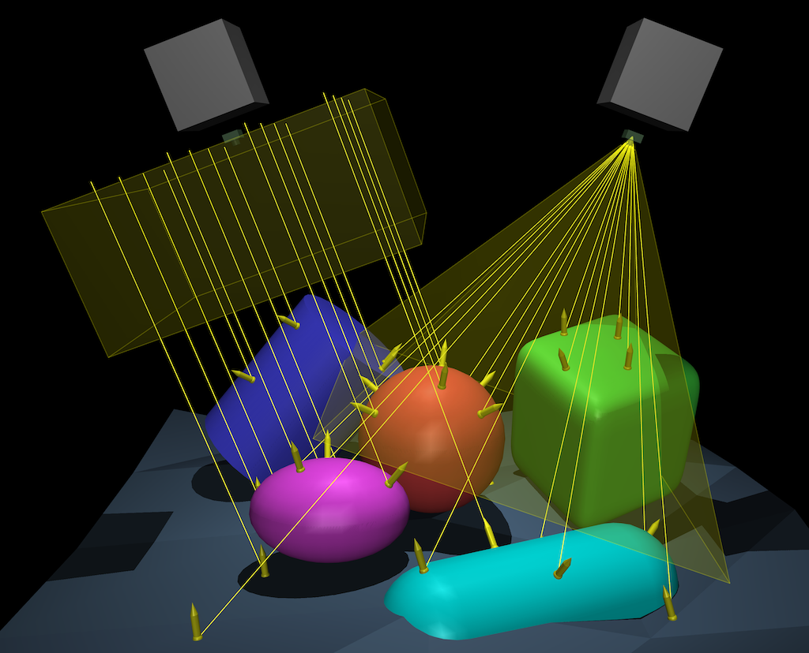
如果射线没有与任何 geom 表面相交，则传感器输出为 -1。如果射线的起点位于某个 geom 内部，仍然会检测到该表面。与传感器 site/camera 附着在同一刚体上的 geom 会被排除。不可见的 geom 也会被排除，即其 rgba（或其材质的 rgba）的 alpha=0 的 geom。但请注意，通过禁用 geom 组而在可视化器中变为不可见的 geom 不会被排除；这是因为传感器计算独立于可视化器。
右侧图像（点击可查看被可视化的模型）显示了两个测距仪传感器，分别附着在一个透视相机和一个正交相机上，并可视化了视锥体。两个相机的分辨率均为 4x4，因此各有 16 条射线。这些测距仪传感器报告 data = "dist point normal" （见下文），因此我们可以看到射线（线段）、交点（球体）和表面法向量（箭头）。
- data: [dist, dir, origin, point, normal, depth], "dist"
默认情况下，测距仪输出如上所述的距离测量值。不过，也可以指定一组输出数据字段。data 属性可以包含 多个依次排列的数据类型，只要保持上文所列的相对顺序即可。例如，data = "dist point normal" 将为每条射线返回 7 个数，而 data = "point origin" 则是错误的，因为 origin 必须位于 point 之前。
By default, the rangefinder outputs a distance measurement, as described above. However, it is also possible to specify a set of output data fields. The data attribute can contain multiple sequential data types, as long as the relative order—as listed above—is maintained. For example, data = “dist point normal” will return 7 numbers per ray, while data = “point origin” is an error because origin must come before point.dist real(1)：从射线起点到最近 geom 表面的距离，如果没有击中任何表面则为 -1。如果包含该数据类型，射线将被可视化为线段。
dist real(1): The distance from the ray origin to the nearest geom surface, -1 if no surface was hit. If this data type is included, rays will be visualized as lines.dir real(3)：射线的归一化方向，如果没有击中任何表面则为 (0, 0, 0)。
dir real(3): Normalized direction of the ray, or (0, 0, 0) if no surface was hit.origin real(3)：射线发出的点（全局坐标系）。对于 site 和透视相机，这就是 site/camera 的 xpos。而对于正交相机，射线起点沿图像平面在空间中分布。
origin real(3): The point from which the ray emanates (global frame). For sites and perspective cameras, this is the site/camera xpos. However for orthographic cameras, ray origins are spatially distributed along the image plane.point real(3)：射线与最近 geom 表面相交的点（全局坐标系），如果没有击中任何表面则为 (0, 0, 0)。如果包含该数据类型，交点将被可视化为球体。
point real(3): The point where the ray intersects the nearest geom surface in the global frame, or (0, 0, 0) if no surface was hit. If this data type is included, intersection points will be visualized as spheres.normal: real(3)：射线与 geom 表面相交处该表面的法向量（全局坐标系），如果没有击中任何表面则为 (0, 0, 0)。注意，无论射线起点位于何处，法向量始终指向 geom 表面的外侧。如果该数据类型与 dist 或 point 中任意一个同时包含，则法向量将在交点处被可视化为箭头。
normal: real(3): The geom surface normal at the point where the ray intersects it, in the global frame, or (0, 0, 0) if no surface was hit. Note that normals always point towards the outside of the geom surface, regardless of the ray origin. If this data type is included along with either dist or point, normals will be visualized as arrows at the intersection points.depth: real(1)：击中点到相机平面的距离，如果没有击中任何表面则为 -1。注意，这里的深度语义对应计算机图形学意义上的深度图像。
depth: real(1): The distance of the hit point from the camera plane, -1 if no surface was hit. Note that this depth semantic corresponds to depth images in the computer graphics sense.
- site: string, optional
传感器所附着的 site。
The site where the sensor is attached.
- camera: string, optional
传感器所附着的相机。
The camera where the sensor is attached.
sensor/camprojection#
该元素创建一个相机投影传感器：目标 site 的位置被投影到相机图像上，以像素坐标表示。像素原点 (0, 0) 位于左上角。数值不会被裁剪，因此落在相机图像之外的目标，其取值会高于或低于像素范围的上下限。此外，位于相机后方的点同样会被投影到图像上，因此如有需要，应由用户自行滤除这类点。可以使用以该相机为参考坐标系的 framepos 传感器来完成：z 坐标为负/正值，分别表示该位置位于相机平面的前方/后方。
- site: string, required
被投影到相机图像上的 site。
The site which is projected on to the camera image.
- camera: string, required
用于投影的相机，其 分辨率 属性必须为正。
The camera used for the projection, its resolution attribute must be positive.
sensor/jointpos#
该传感器及其余传感器元素不涉及传感器专属的计算，而是把已经算好的量复制到数组 mjData.sensordata 中。该元素创建一个关节（joint）位置或角度传感器。它可以附着在标量关节（slide 或 hinge）上，输出为标量。
- joint: string, required
将被感测位置或角度的关节。此处只能引用标量关节。传感器输出复制自 mjData.qpos。
The joint whose position or angle will be sensed. Only scalar joints can be referenced here. The sensor output is copied from mjData.qpos.
sensor/jointvel#
该元素创建一个关节速度传感器。它可以附着在标量关节（slide 或 hinge）上，输出为标量。
- joint: string, required
将被感测速度的关节。此处只能引用标量关节。传感器输出复制自 mjData.qvel。
The joint whose velocity will be sensed. Only scalar joints can be referenced here. The sensor output is copied from mjData.qvel.
sensor/tendonpos#
该元素创建一个肌腱（tendon）长度传感器。它可以附着在空间肌腱和固定肌腱上，输出为标量。
- tendon: string, required
将被感测长度的肌腱。传感器输出复制自 mjData.ten_length。
The tendon whose length will be sensed. The sensor output is copied from mjData.ten_length.
sensor/tendonvel#
该元素创建一个肌腱速度传感器。它可以附着在空间肌腱和固定肌腱上，输出为标量。
- tendon: string, required
将被感测速度的肌腱。传感器输出复制自 mjData.ten_velocity。
The tendon whose velocity will be sensed. The sensor output is copied from mjData.ten_velocity.
sensor/actuatorpos#
该元素创建一个执行器（actuator）长度传感器。回想一下，每个执行器都有一个具有长度的传动（transmission）。该传感器可以附着在任意执行器上，输出为标量。
- actuator: string, required
将被感测其传动长度的执行器。传感器输出复制自 mjData.actuator_length。
The actuator whose transmission’s length will be sensed. The sensor output is copied from mjData.actuator_length.
sensor/actuatorvel#
该元素创建一个执行器速度传感器。该传感器可以附着在任意执行器上，输出为标量。
- actuator: string, required
将被感测其传动速度的执行器。传感器输出复制自 mjData.actuator_velocity。
The actuator whose transmission’s velocity will be sensed. The sensor output is copied from mjData.actuator_velocity.
sensor/actuatorfrc#
该元素创建一个执行器力传感器。所感测的量是标量执行器力，而不是执行器贡献的广义力（后者是标量力与由传动决定的力臂向量的乘积）。该传感器可以附着在任意执行器上，输出为标量。
- actuator: string, required
将被感测其标量力输出的执行器。传感器输出复制自 mjData.actuator_force。
The actuator whose scalar force output will be sensed. The sensor output is copied from mjData.actuator_force.
sensor/jointactuatorfrc#
该元素创建一个在关节处测量的执行器力传感器。所感测的量是所有执行器对单个标量关节（hinge 或 slider）贡献的广义力。如果该关节的 actuatorgravcomp 属性为 "true"，则该传感器还会测量重力补偿力的贡献（重力补偿力直接加在关节上，不会在 actuatorfrc 传感器中体现）。当多个执行器作用于同一个关节，或单个执行器作用于多个关节时，这类传感器十分重要。详见 力限制。
- joint: string, required
将被感测执行器力的关节。传感器输出复制自
mjData.qfrc_actuator。The joint where actuator forces will be sensed. The sensor output is copied frommjData.qfrc_actuator.
sensor/tendonactuatorfrc#
该元素创建一个在肌腱处测量的执行器力传感器。所感测的量是所有执行器对单个肌腱贡献的总力。当多个执行器作用于同一个肌腱时，这类传感器十分重要。详见 力限制。
- tendon: string, required
将被感测执行器力的肌腱。
The tendon where actuator forces will be sensed.
sensor/ballquat#
该元素创建一个球关节的四元数（quaternion）传感器。它输出对应一个单位四元数的 4 个数。
- joint: string, required
将被感测其四元数的球关节。传感器输出复制自 mjData.qpos。
The ball joint whose quaternion is sensed. The sensor output is copied from mjData.qpos.
sensor/ballangvel#
该元素创建一个球关节角速度传感器。它输出对应关节角速度的 3 个数。该向量的模是以 rad/s 为单位的转动速率，其方向是转动所绕的轴。
- joint: string, required
将被感测其角速度的球关节。传感器输出复制自 mjData.qvel。
The ball joint whose angular velocity is sensed. The sensor output is copied from mjData.qvel.
sensor/jointlimitpos#
该元素创建一个关节限位（limit）位置传感器。
- joint: string, required
将被感测其限位的关节。传感器输出等于对应限位约束（constraint）的 mjData.efc_pos - mjData.efc_margin。注意，只要违反限位，结果就为负，无论违反的是限位的哪一侧。如果限位的两侧同时被违反，则只返回第一个分量。如果没有违反，结果为 0。
The joint whose limit is sensed. The sensor output equals mjData.efc_pos - mjData.efc_margin for the corresponding limit constraint. Note that the result is negative if the limit is violated, regardless of which side of the limit is violated. If both sides of the limit are violated simultaneously, only the first component is returned. If there is no violation, the result is 0.
sensor/jointlimitvel#
该元素创建一个关节限位速度传感器。
- joint: string, required
将被感测其限位的关节。传感器输出复制自 mjData.efc_vel。如果没有违反关节限位，结果为 0。
The joint whose limit is sensed. The sensor output is copied from mjData.efc_vel. If the joint limit is not violated, the result is 0.
sensor/jointlimitfrc#
该元素创建一个关节限位约束力传感器。
- joint: string, required
将被感测其限位的关节。传感器输出复制自 mjData.efc_force。如果没有违反关节限位，结果为 0。
The joint whose limit is sensed. The sensor output is copied from mjData.efc_force. If the joint limit is not violated, the result is 0.
sensor/tendonlimitpos#
该元素创建一个肌腱限位位置传感器。
- tendon: string, required
将被感测其限位的肌腱。传感器输出等于对应限位约束的 mjData.efc_pos - mjData.efc_margin。如果没有违反肌腱限位，结果为 0。
The tendon whose limit is sensed. The sensor output equals mjData.efc_pos - mjData.efc_margin for the corresponding limit constraint. If the tendon limit is not violated, the result is 0.
sensor/tendonlimitvel#
该元素创建一个肌腱限位速度传感器。
- tendon: string, required
将被感测其限位的肌腱。传感器输出复制自 mjData.efc_vel。如果没有违反肌腱限位，结果为 0。
The tendon whose limit is sensed. The sensor output is copied from mjData.efc_vel. If the tendon limit is not violated, the result is 0.
sensor/tendonlimitfrc#
该元素创建一个肌腱限位约束力传感器。
- tendon: string, required
将被感测其限位的肌腱。传感器输出复制自 mjData.efc_force。如果没有违反肌腱限位，结果为 0。
The tendon whose limit is sensed. The sensor output is copied from mjData.efc_force. If the tendon limit is not violated, the result is 0.
sensor/framepos#
该元素创建一个传感器，返回物体空间坐标系的三维位置，以全局坐标表示，也可以选择相对于给定的参考坐标系表示。
- objtype: [body, xbody, geom, site, camera], required
传感器所附着对象的类型。它必须是具有空间坐标系的对象类型。"body" 指刚体的惯性坐标系，而 "xbody" 指刚体的常规坐标系（通常以与父刚体相连的关节为中心）。
The type of object to which the sensor is attached. This must be an object type that has a spatial frame. “body” refers to the inertial frame of the body, while “xbody” refers to the regular frame of the body (usually centered at the joint with the parent body).
- objname: string, required
传感器所附着对象的名称。
The name of the object to which the sensor is attached.
- reftype: [body, xbody, geom, site, camera]
参考坐标系所附着对象的类型。其语义与 objtype 属性相同。如果给出了 reftype 和 refname，传感器的值将相对于该坐标系测量。如果没有给出，传感器的值将相对于全局坐标系测量。
The type of object to which the frame-of-reference is attached. The semantics are identical to the objtype attribute. If reftype and refname are given, the sensor values will be measured with respect to this frame. If they are not given, sensor values will be measured with respect to the global frame.
- refname: string
参考坐标系所附着对象的名称。
The name of the object to which the frame-of-reference is attached.
sensor/framequat#
该元素创建一个传感器，返回指定物体空间坐标系姿态的单位四元数，以全局坐标表示。
sensor/framexaxis#
该元素创建一个传感器，返回对应物体空间坐标系 X 轴的三维单位向量，以全局坐标表示。
sensor/frameyaxis#
该元素创建一个传感器（sensor），返回与对象的空间坐标系（spatial frame）Y 轴相对应的三维单位向量，以全局坐标表示。
sensor/framezaxis#
该元素创建一个传感器，返回与对象的空间坐标系 Z 轴相对应的三维单位向量，以全局坐标表示。
sensor/framelinvel#
该元素创建一个传感器，返回对象的空间坐标系的三维线速度，以全局坐标表示。
sensor/frameangvel#
该元素创建一个传感器，返回对象的空间坐标系的三维角速度，以全局坐标表示。
sensor/framelinacc#
该元素创建一个传感器，返回对象的空间坐标系的三维线加速度，以全局坐标表示。
模型中存在该传感器时，会在传感器计算期间触发对 mj_rnePostConstraint 的调用。
sensor/frameangacc#
该元素创建一个传感器，返回对象的空间坐标系的三维角加速度，以全局坐标表示。
模型中存在该传感器时，会在传感器计算期间触发对 mj_rnePostConstraint 的调用。
sensor/subtreecom#
该元素创建一个传感器，返回以指定刚体（body）为根的运动学子树（kinematic subtree）的质心，以全局坐标表示。
- body: string, required
运动学子树根所在刚体的名称。
Name of the body where the kinematic subtree is rooted.
sensor/subtreelinvel#
该元素创建一个传感器，返回以指定刚体为根的运动学子树的质心线速度，以全局坐标表示。
模型中存在该传感器时，会在传感器计算期间触发对 mj_subtreeVel 的调用。
- body: string, required
运动学子树根所在刚体的名称。
Name of the body where the kinematic subtree is rooted.
sensor/subtreeangmom#
该元素创建一个传感器，返回以指定刚体为根的运动学子树绕其质心的角动量，以全局坐标表示。
模型中存在该传感器时，会在传感器计算期间触发对 mj_subtreeVel 的调用。
- body: string, required
运动学子树根所在刚体的名称。
Name of the body where the kinematic subtree is rooted.
sensor/insidesite#
该元素创建一个传感器，当给定对象位于某个 site 内部时返回 1，否则返回 0。它可用于触发周围环境逻辑中的事件。参见 示例模型。
- objtype: [body, xbody, geom, site, camera], required
待查询对象的类型。当 enclosed 为
"false"时，它指定其原点将被检查的坐标系（参见 framepos）。当 enclosed 为"true"时，body检查直接附着在该刚体上的所有 geom，xbody检查以该刚体为根的运动学子树中的所有 geom，而camera不受支持。The type of the object to be queried. When enclosed is"false", this specifies the coordinate frame whose origin is checked (see framepos). When enclosed is"true",bodychecks all geoms directly attached to the body,xbodychecks all geoms in the kinematic subtree rooted at the body, andcamerais not supported.
- site: string
定义内部检查所用体积的 site。
The site defining the volume used for the inside check.
- enclosed: bool, "false"
如果为 true，则检查完整的几何包含关系，而不是仅检查坐标系原点是否位于 site 内部。该传感器度量对象从 site 中凸出的程度（即有向豪斯多夫距离，directed Hausdorff distance）：正值表示最远点超出 site 边界多远，零或负值表示对象被完全包含（其绝对值表示到边界的余量）。site 以及所有被查询的 geom/site 都必须是紧致凸形状。对于
objtype="body"或objtype="xbody"，传感器分别返回该刚体上所有 geom 或其运动学子树中所有 geom 的最大值（至少必须存在一个 geom）。If true, checks full geometric enclosure instead of only checking whether the frame origin is inside the site. The sensor measures how much the object juts out of the site (the directed Hausdorff distance): positive values indicate how far the furthest point protrudes outside the site boundary, while zero or negative values indicate the object is fully enclosed (with the magnitude representing clearance to the boundary). Both the site and all queried geoms/sites must be compact convex shapes. Forobjtype="body"orobjtype="xbody", the sensor returns the maximum value across all geoms on the body or in its kinematic subtree, respectively (at least one geom must be present).
碰撞传感器#
以下 3 种传感器类型，即 sensor/distance、sensor/normal 和 sensor/fromto，分别利用精测阶段（narrow-phase）的 geom-geom 碰撞器，度量两个 geom 表面之间最小有符号距离所对应的距离、法线方向和线段。碰撞计算总是会执行，独立于标准的碰撞 选择与过滤 流水线。这 3 种传感器具有一些共同属性：
在 nativeccd 下的不同（正确）行为
nativeccd如 碰撞检测（Collision Detection） 中所述，使用 旧版 CCD 流水线 时距离是不准确的，因此不建议使用。
- cutoff
对大多数传感器而言，cutoff 属性只是对传感器取值定义一个截断操作。对碰撞传感器而言，它定义检测碰撞的最大距离，对应于 mj_geomDistance 的
dismax参数。例如，在默认值 0 时，sensor/distance 只会报告负距离（对应 geom 与 geom 之间的穿透（penetration））。若要确定未发生穿透的 geom 对的碰撞属性，则需要正的 cutoff。For most sensors, the cutoff attribute simply defines a clipping operation on sensor values. For collision sensors, it defines the maximum distance at which collisions will be detected, corresponding to thedismaxargument of mj_geomDistance. For example, at the default value of 0, only negative distances (corresponding to geom-geom penetration) will be reported by sensor/distance. In order to determine collision properties of non-penetrating geom pairs, a positive cutoff is required.- geom1, geom2, body1, body2
对于所有 3 种碰撞传感器类型，发生碰撞的两个 geom 既可以通过 geom1 和 geom2 属性显式指定，也可以通过 body1 和 body2 隐式指定。在后一种情况下，传感器会遍历所指定刚体的所有 geom（允许混合指定，例如 geom1 与 body2），并选取有符号距离最小的碰撞。
For all 3 collision sensor types, the two colliding geoms can be specified explicitly using the geom1 and geom2 attributes or implicitly, using body1, body2. In the latter case the sensor will iterate over all geoms of the specified body or bodies (mixed specification like geom1, body2 are allowed), and select the collision with the smallest signed distance.
sensor/distance#
该元素创建一个传感器，返回两个 geom 表面之间的最小有符号距离。有关此类传感器的更多细节，参见 碰撞传感器。
- cutoff
该属性的语义参见 碰撞传感器，它与其他传感器类别不同。如果未检测到碰撞，distance 传感器返回 cutoff 的值，因此在这种情况下，除特殊语义之外，cutoff 还起到最大截断值的作用。
See collision sensors for the semantics of this attribute, which is different than for other sensor categories. If no collision is detected, the distance sensor returns the cutoff value, so in this case cutoff acts as a maximum clipping value, in addition to the special semantics.
- geom1: string, optional
第一个 geom 的名称。必须恰好指定 (geom1, body1) 中的一个。
Name of the first geom. Exactly one of (geom1, body1) must be specified.
- geom2: string, optional
第二个 geom 的名称。必须恰好指定 (geom2, body2) 中的一个。
Name of the second geom. Exactly one of (geom2, body2) must be specified.
- body1: string, optional
第一个刚体的名称。必须恰好指定 (geom1, body1) 中的一个。
Name of the first body. Exactly one of (geom1, body1) must be specified.
- body2: string, optional
第二个刚体的名称。必须恰好指定 (geom2, body2) 中的一个。
Name of the second body. Exactly one of (geom2, body2) must be specified.
sensor/normal#
该元素创建一个传感器，返回两个 geom 表面之间最小有符号距离的法线方向。它保证从 geom1 的表面指向 geom2 的表面，但请注意，在发生穿透的情况下，该方向通常与质心连线方向相反。有关此类传感器的更多细节，参见 碰撞传感器。
- cutoff
该属性的语义参见 碰撞传感器，它与其他传感器类别不同。如果未检测到碰撞，normal 传感器返回 (0, 0, 0)，否则返回归一化的方向向量。对于该传感器，cutoff 不会导致任何截断。
See collision sensors for the semantics of this attribute, which is different than for other sensor categories. If no collision is detected, the normal sensor returns (0, 0, 0), otherwise it returns a normalized direction vector. For this sensor, cutoff does not lead to any clamping.
- geom1: string, optional
第一个 geom 的名称。必须恰好指定 (geom1, body1) 中的一个。
Name of the first geom. Exactly one of (geom1, body1) must be specified.
- geom2: string, optional
第二个 geom 的名称。必须恰好指定 (geom2, body2) 中的一个。
Name of the second geom. Exactly one of (geom2, body2) must be specified.
- body1: string, optional
第一个刚体的名称。必须恰好指定 (geom1, body1) 中的一个。
Name of the first body. Exactly one of (geom1, body1) must be specified.
- body2: string, optional
第二个刚体的名称。必须恰好指定 (geom2, body2) 中的一个。
Name of the second body. Exactly one of (geom2, body2) must be specified.
sensor/fromto#
该元素创建一个传感器，返回定义两个 geom 表面之间最小有符号距离的线段。该线段由 6 个数 (x1, y1, z1, x2, y2, z2) 定义，对应世界坐标系中的两个点。(x1, y1, z1) 位于 geom1 的表面上，(x2, y2, z2) 位于 geom2 的表面上。当存在该传感器且设置了 mjVIS_RANGEFINDER 可视化（visualization）标志时，线段将被可视化为测距仪射线。有关此类传感器的更多细节，参见 碰撞传感器。
- cutoff
该属性的语义参见 碰撞传感器，它与其他传感器类别不同。如果未检测到碰撞，fromto 传感器返回 6 个零。对于该传感器，cutoff 不会导致任何截断。
See collision sensors for the semantics of this attribute, which is different than for other sensor categories. If no collision is detected, the fromto sensor returns 6 zeros. For this sensor, cutoff does not lead to any clamping.
- geom1: string, optional
第一个 geom 的名称。必须恰好指定 (geom1, body1) 中的一个。
Name of the first geom. Exactly one of (geom1, body1) must be specified.
- geom2: string, optional
第二个 geom 的名称。必须恰好指定 (geom2, body2) 中的一个。
Name of the second geom. Exactly one of (geom2, body2) must be specified.
- body1: string, optional
第一个刚体的名称。必须恰好指定 (geom1, body1) 中的一个。
Name of the first body. Exactly one of (geom1, body1) must be specified.
- body2: string, optional
第二个刚体的名称。必须恰好指定 (geom2, body2) 中的一个。
Name of the second body. Exactly one of (geom2, body2) must be specified.
sensor/contact#
动机： 在主动力学流水线中产生的接触（contact）数组本质上是变长的。contact 传感器的目的是以固定大小的数组报告与接触相关的信息。这对于作为基于学习的智能体的输入以及用于环境逻辑都很有用。
与独立于动力学流水线、纯几何的 碰撞传感器 不同，contact 传感器报告的是在碰撞检测（collision detection）和约束（constraint）步骤中发现的信息，其数据提取自 mjData.{contact, efc_force}。mjData.contact 中被排除在约束力计算之外的接触（例如位于 gap 区域内的接触）仍然会被匹配和报告，其力和力矩为零。
mjData.{contact, efc_force}. Contacts in mjData.contact that are excluded from constraint force
computation (for example, within the gap zone) are still matched and reported, with zero
force and torque.contact 传感器的输出包含三个阶段：匹配、归约 和 提取。
- 匹配Matching
使用由 geom1、geom2、body1、body2、subtree1、subtree2 和 site 定义的条件，从
mjData.contact中选出一组接触。匹配采用各条件的交集，例如，同时设置 body1 和 body2 将匹配同时涉及这两个刚体的接触，而只设置 geom1 则会匹配所有涉及该 geom 的接触。设置 site 将匹配位于该 site 所定义体积之内的接触；该匹配条件可以与 {geom2, body2, subtree2} 配合使用。subtree 属性接受一个刚体名称，并匹配涉及该刚体子树（即该刚体及其所有后代）的全部接触。将 subtree1 和 subtree2 设置为同一个刚体，将匹配该子树内部的自碰撞。不指定任何匹配条件则匹配所有接触。Selects a set of contacts frommjData.contactusing criteria defined by geom1, geom2, body1, body2, subtree1, subtree2 and site. Matching applies an intersection of criteria, for example setting body1 and body2 will match contacts that involve both bodies, while setting only geom1 will match any contacts involving that geom. Setting site will match contacts that are inside the volume defined by the site; this matching criterion can be used with {geom2, body2, subtree2}. The subtree attributes take a body name and match all contacts involving the body’s subtree i.e., the body and all of its descendants. Setting subtree1 and subtree2 to the same body will match self-collisions in the subtree. Specifying no matching criterion will match all contacts.- 归约Reduction
将匹配到的接触数量归约为恰好 num 个子数组，即“槽位”（slot）。如果匹配的接触少于 num 个，其余槽位将被置为全零。请注意，默认的“unsorted”归约条件可能是不确定的。参见下文的 reduce。
- 提取Extraction
将用户指定的字段集合复制到每个槽位中，参见 data。
Copies the set of fields specified by the user into each slot, see data.
- geom1, geom2: string, optional
参与某个接触的 geom 的名称。参见 匹配 部分的 上文。
Name of a geom participating in a contact. See matching above.
- body1, body2: string, optional
参与某个接触的刚体的名称。参见 匹配 部分的 上文。
Name of a body participating in a contact. See matching above.
- subtree1, subtree2: string, optional
其子树参与某个接触的刚体的名称。参见 匹配 部分的 上文。
Name of a body whose subtree is participating in a contact. See matching above.
- site: string, optional
某个 site 的名称，接触位置必须位于该 site 的体积之内才能匹配。参见 匹配 部分的 上文。
Name of a site within whose volume the contact position must be found in order to match. See matching above.
- num: int, "1"
要报告的接触数量。对于每个接触，传感器总是报告 num 个连续的数据数组（“槽位”）。报告接触的顺序取决于 reduce 属性。
Number of contacts to report. The sensor will always report num sequential data arrays (“slots”) per contact. The order in which contacts are reported depends on the reduce attribute.
- data: [found, force, torque, dist, pos, normal, tangent, linvel, angvel], "found"
指定从所选接触中报告哪些数据字段。
Specification of which data field(s) to report from the selected contacts.found real(1)：该字段有两个用途。第一，它指示该槽位中是否找到了接触，0 表示未找到，正数表示已找到。第二，该正值等于 匹配 到的接触数量。因此，如果请求了 num = 3 个接触，但只匹配到 2 个，则 found 字段将依次为 (2, 2, 0)；如果匹配到 6 个，则为 (6, 6, 6)。
found real(1): This field serves two purposes. First, it indicates whether a contact was found in this slot, 0 means not found while a positive number means found. Second, the positive value equals the number of matching contacts. So if num = 3 contacts were requested but only 2 were matched, the found fields will equal (2, 2, 0); if 6 were matched they will equal (6, 6, 6).force real(3)：接触力，位于接触坐标系（contact frame）中。
force real(3): The contact force, in the contact frame.torque real(3)：接触力矩，位于接触坐标系中。
torque real(3): The contact torque, in the contact frame.dist real(1)：穿透（penetration）距离。
dist real(1): The penetration distance.pos: real(3)：接触位置，位于全局坐标系中。
pos: real(3): The contact position, in the global frame.normal: real(3)：接触法向方向，位于全局坐标系中。
normal: real(3): The contact normal direction, in the global frame.tangent: real(3)：第一个切向方向，位于全局坐标系中。若要补全完整的 3x3 接触坐标系，请使用 tangent2 = cross(normal, tangent)。
tangent: real(3): The first tangent direction, in the global frame. In order to complete the full 3x3 contact frame, use tangent2 = cross(normal, tangent).linvel: real(3)：第二个接触刚体相对于第一个接触刚体在接触位置处的相对线速度，表示在接触坐标系中。正的法向速度（第一个分量）对应于分离。不能与
reduce="netforce"组合使用。linvel: real(3): The relative linear velocity of the second contacting body with respect to the first at the contact position, expressed in the contact frame. Positive normal velocity (first component) corresponds to separation. Cannot be combined withreduce="netforce".angvel: real(3)：第二个接触刚体相对于第一个接触刚体的相对角速度，表示在接触坐标系中。不能与
reduce="netforce"组合使用。angvel: real(3): The relative angular velocity of the second contacting body with respect to the first, expressed in the contact frame. Cannot be combined withreduce="netforce".
重要的是，data 属性可以包含 多个连续的数据类型，只要保持上面所列的相对顺序即可。例如，data = "found force dist" 将为每个接触返回 5 个数（即 [found, force, dist] 的拼接值），而 data = "force found dist" 则是错误的，因为 found 必须出现在 force 之前。
Importantly, the data attribute can contain multiple sequential data types, as long as the relative order—as listed above—is maintained. For example, data = “found force dist” will return 5 numbers per contact (the concatenated values of [found, force, dist]), while data = “force found dist” is an error because found must come before force.- 缺失的接触Missing contacts
如果满足匹配条件的接触少于 num 个，整个数据槽位将被置为全零。由于大多数数据类型都可以取 0 作为有效值，因此只有 normal 和 tangent 单位向量是否为零，才能用来明确地检测空槽位。出于这个原因，才设置了 found 数据类型，以便简单地检测缺失的接触。
If less than num contacts satisfy the matching criterion, the entire data slot is set to be identically zero. Because most data types can take 0 as a valid value, only the zero-ness of the normal and tangent unit vectors can be used to unambiguously detect an empty slot. For this reason, the found data type is in place to allow for simple detection of missing contacts.- sensordata 块的大小Size of sensordata block
与其他传感器不同，对应的 sensordata 块的大小取决于其属性 num 和 data 的取值。contact 传感器输出的总大小是
num x size(selected data fields)的乘积。例如，请求 num = 6 个接触，并设置 data = "force dist normal" （3+1+3=7），将得到一个包含 42 个数的 sensordata 块（6 个连续槽位 x 每个槽位 7 个数）。Unlike other sensors, the size of the corresponding sensordata block depends on the values of its attributes num and data. The total size of the output of a contact sensor is the productnum x size(selected data fields). For example, requesting num = 6 contacts with data = “force dist normal” (3+1+3=7), will result in a sensordata block of 42 numbers (6 consecutive slots x 7 numbers per slot).- 方向约定Direction convention
由于接触会在相互接触的刚体之间产生一对大小相等、方向相反的力，因此可以自由选择是哪个刚体作用于哪个刚体。
Because contacts create two equal-and-opposite forces between contacting bodies, there is freedom in the choice of which body impinges on which.该传感器的约定是由 "geom1/body1/subtree1" 和 "geom2/body2/subtree2" 来确定法向的方向。法向始终由第一个指向第二个。
The sensor’s convention is for “geom1/body1/subtree1” and “geom2/body2/subtree2” to determine the direction of the normal. The normal always points from the first to the second.如果无法确定方向，例如仅使用 site 作为匹配条件，或者两个子树相同，则法向方向与
mjData.contact中的相同，即法向由第一个 geom 指向第二个 geom，并且这两个 geom 按其在 mjtGeom 中的顺序排序。In the case that a direction cannot be determined, as when only a site is used as the matching criterion, or when both subtrees are the same, the normal direction is the same as it is inmjData.contact, where the normal points from the first to the second geom, and the two geoms are sorted according to their order in mjtGeom.- 计算阶段Computation stage
contact 传感器的计算阶段（
sensor_needstage）取决于所请求的 data 字段和 reduce 条件。如果 data 包含force或torque，或者 reduce 为maxforce或netforce，则该传感器在mjSTAGE_ACC阶段求值；否则，如果 data 包含linvel或angvel，则在mjSTAGE_VEL阶段求值；否则在mjSTAGE_POS阶段求值。The computation stage (sensor_needstage) of a contact sensor depends on the requested data fields and reduce criterion. If data includesforceortorque, or if reduce ismaxforceornetforce, the sensor is evaluated atmjSTAGE_ACC; otherwise, if data includeslinvelorangvel, it is evaluated atmjSTAGE_VEL; otherwise it is evaluated atmjSTAGE_POS.
- reduce: [none, mindist, maxforce, netforce], "none"
所使用的归约条件。另请参阅 归约 部分的 上文。
Reduction criterion to use. Also see reduction above.none：按接触在
mjData.contact中出现的顺序，返回满足匹配条件的前 num 个接触。请注意，这虽然是最快的选项，但也可能是不确定的：碰撞检测代码今后的改动可能会使匹配接触的身份和顺序发生变化。none: Returns the first num contacts that satisfy the matching criterion, in the order that they appear inmjData.contact. Note that while this is the fastest option, it is also potentially non-deterministic: future changes to collision detection code may cause the identity and order of matching contacts to change.mindist：返回穿透深度最小的 num 个接触，按升序排列。
mindist: Returns num contacts with the smallest penetration depth, ascending order.maxforce：返回力的范数最大的 num 个接触，按降序排列。
maxforce: Returns num contacts with the largest force norm, descending order.netforce：该归约条件返回一个新的“合成”接触，其位置位于所有匹配接触的力加权质心处。该接触的坐标系是全局坐标系，因此法向和切向方向失去了其原有的语义。力和力矩的计算方式使得作用在所算位置上的力旋量（wrench）与所有匹配接触的合力效果相同。请注意，该归约条件始终恰好返回一个接触。
netforce: This reduction criterion returns one new “synthetic” contact, located at the force-weighted centroid of all matched contacts. The frame of the contact is the global frame, so normal and tangent directions lose their natural semantic. The force and torque are computed such that a wrench applied at the computed position will have the same net effect as all the matching contacts combined. Note that this reduction criterion always returns exactly one contact.
- cutoff:
该属性被忽略。
This attribute is ignored.
sensor/tactile#
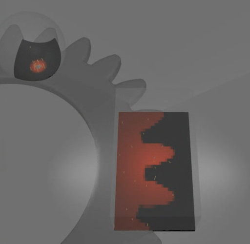
tactile 传感器在位于 geom 坐标系中的 mesh 的各顶点（taxel，触觉单元）上，求取穿透深度和切向滑动速度。对于具有 \(N\) 个顶点的传感器网格，该传感器输出 \(3N\) 个值，分为三个长度为 \(N\) 的连续块：非负的穿透深度 \(d \ge 0\) （未接触时为 0），以及两个切向滑动速度 \(|v_{t_1}|, |v_{t_2}| \ge 0\) （当网格为每个顶点定义了 3 个法向量时才会填充，如 内置 的 wedge 和 plate 网格）。
0 when not in
contact) and two tangential sliding speeds \(|v_{t_1}|, |v_{t_2}| \ge 0\) (populated when the mesh defines 3 normal
vectors per vertex, as in builtin wedge and plate meshes).由于该传感器会被同一 weld 刚体上任意 geom 的接触所激活，因此传感器的 geom 可以是不参与碰撞的表面网格（contype="0" conaffinity="0"），而由该刚体上的基本几何体 geom 处理碰撞：
contype="0" conaffinity="0") while primitive geoms on the body handle collisions:<asset>
<mesh name="plate" builtin="plate" params="25 25" scale="0.04 0.04 0.005"/>
</asset>
<worldbody>
<body name="pad">
<geom type="box" size="0.04 0.04 0.005"/>
<geom name="sensor_surface" type="mesh" mesh="plate" contype="0" conaffinity="0"/>
</body>
</worldbody>
<sensor>
<tactile geom="sensor_surface" mesh="plate"/>
</sensor>
每个 taxel 处的有符号距离，对于发生碰撞的基本几何体以解析方式求取，对于 sdf geom 则通过插件（plugin）求取。任何可能与该传感器碰撞的 mesh geom 都需要预先计算 SDF 八叉树（否则会被该传感器忽略）。请在编译之前，通过 mjSpec 对发生碰撞的网格启用 mjsMesh.needsdf：
sdf geoms. Any
mesh geom that may collide with the sensor requires precomputing an SDF octree (otherwise it is ignored by the
sensor). Enable mjsMesh.needsdf on colliding meshes via mjSpec before compiling:mjSpec* spec = mj_parseXML("model.xml", NULL, NULL, 0);
mjsMesh* mesh = mjs_asMesh(mjs_findElement(spec, mjOBJ_MESH, "object"));
mesh->needsdf = 1;
mjModel* m = mj_compile(spec, NULL);
可视化
3D 场景：启用 mjVIS_CONTACTPOINT 后，处于活动状态的网格三角形会被着色，其 RGB 通道分别正比于穿透深度（红）和切向速度（绿、蓝）。
3D scene: Enabling mjVIS_CONTACTPOINT shades active mesh triangles with RGB channels proportional to penetration depth (red) and tangential speeds (green, blue).2D 图像传感器：在
simulate中，任何sensor_intprm = [width, height, 0]、dim = width * height * 3且sensordata[adr + dim - 1]中带有非零序列字节的 user 传感器，都会在 Sensor 面板中渲染为 RGB 图像。2D image sensor: Insimulate, any user sensor withsensor_intprm = [width, height, 0],dim = width * height * 3, and a non-zero sequence byte insensordata[adr + dim - 1]is rendered as an RGB image in the Sensor panel.
拉普拉斯后处理
硬件上的光学触觉传感器会观察到，随着弹性体垫变形，嵌入的标记点或印刷图案会发生横向位移。MuJoCo 只在每个 taxel 处计算原始的、相互独立的法向深度 \(d(x, y)\) 和切向速度；它不会在内部执行弹性体的后处理。跨越被夹紧的弹性体表面的空间耦合，可以在用户代码中通过求解带零 Dirichlet 边界条件的二维泊松方程来建模：

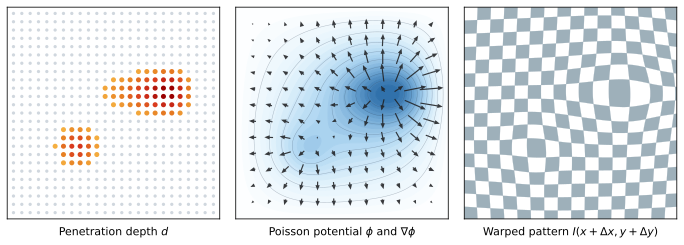

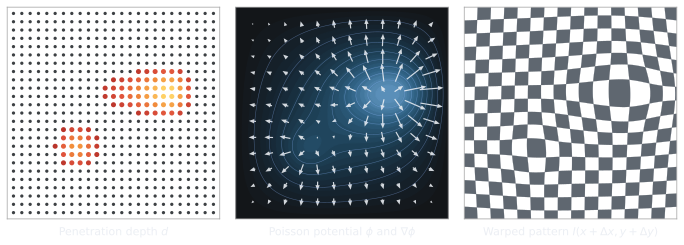
在 \(n_x \times n_y\) 网格上用 5 点模板离散化 \(-\nabla^2\)，得到一个常数的带状对称正定系统 \(L \phi = d\)，其带宽为 nband = nx + 1。在初始化时用 mju_cholFactorBand 对 \(L\) 分解一次，即可在运行时通过 mju_cholSolveBand 求解 \(\phi\)，并取中心差分 \((\Delta x, \Delta y) = \alpha \nabla \phi\) 来扭曲图案 \(I(x + \Delta x, y + \Delta y)\)：
nband = nx + 1. Factoring \(L\) once at
initialization with mju_cholFactorBand allows solving for \(\phi\) at runtime via mju_cholSolveBand
and taking central differences \((\Delta x, \Delta y) = \alpha \nabla \phi\) to warp a pattern
\(I(x + \Delta x, y + \Delta y)\):// assemble and factor banded negative 2D Laplacian (-nabla^2) on an (nx x ny) grid
void makeLaplacian(mjtNum* L, int nx, int ny) {
int n = nx * ny, nband = nx + 1;
mju_zero(L, n * nband);
for (int i = 0; i < ny; i++) {
for (int j = 0; j < nx; j++) {
int k = i*nx + j;
L[k*nband + nx] = 4;
if (j > 0) L[k*nband + nx - 1] = -1;
if (i > 0) L[k*nband] = -1;
}
}
mju_cholFactorBand(L, n, nband, 0, 0, 0);
}
// solve Poisson equation (-nabla^2 phi = d) and compute lateral displacement
void tactileDisplacement(mjtNum* dx, mjtNum* dy, mjtNum* phi,
const mjtNum* L, const mjtNum* d,
int nx, int ny, mjtNum alpha) {
mju_cholSolveBand(phi, L, d, nx * ny, nx + 1, 0);
for (int i = 0; i < ny; i++) {
for (int j = 0; j < nx; j++) {
int k = i*nx + j;
mjtNum px = (j < nx-1 ? phi[k+1] : 0) - (j > 0 ? phi[k-1] : 0);
mjtNum py = (i < ny-1 ? phi[k+nx] : 0) - (i > 0 ? phi[k-nx] : 0);
dx[k] = 0.5 * alpha * px;
dy[k] = 0.5 * alpha * py;
}
}
}
- geom: string, required
要与该 tactile 传感器关联的 geom 的名称。
Name of the geom to associate the tactile sensor with.
- mesh: string, required
要与该 tactile 传感器关联的网格的名称。
Name of the mesh to associate the tactile sensor with.
sensor/e_potential#
该元素创建一个返回势能的传感器。
sensor/e_kinetic#
该元素创建一个返回动能的传感器。
sensor/clock#
该元素创建一个返回仿真时间的传感器。
sensor/user#
该元素创建一个用户传感器。MuJoCo 不知道如何计算该传感器的输出。用户应当安装回调 mjcb_sensor，由它负责将传感器数据填入 mjData.sensordata。XML 中的设定用于为该传感器分配空间，并确定它所附着的 MuJoCo 对象，以及在计算出数据之前它需要完成哪个计算阶段。请注意，这里引用的 MuJoCo 对象可以是一个元组（tuple），而元组又可以引用一组自定义的 MuJoCo 对象集合 -- 例如若干个关心其质心的刚体。
mjData.sensordata.
The specification in the XML is used to allocate space for this sensor, and also determine which MuJoCo object it is
attached to and what stage of computation it needs before the data can be computed. Note that the MuJoCo object
referenced here can be a tuple, which in turn can reference a custom collection of MuJoCo objects – for example
several bodies whose center of mass is of interest.如果用户传感器的 stage 为 "vel" 或 "acc"，则分别会触发 mj_subtreeVel 或 mj_rnePostConstraint。
- objtype: (any element type that can be named), optional
该传感器所附着的 MuJoCo 对象的类型。它与 objname 属性共同确定实际的对象。如果未指定，则为 mjOBJ_UNKNOWN。
Type of the MuJoCo object to which the sensor is attached. This together with the objname attribute determines the actual object. If unspecified, will be mjOBJ_UNKNOWN.
- objname: string, optional
该传感器所附着的 MuJoCo 对象的名称。
Name of the MuJoCo object to which the sensor is attached.
- datatype: [real, positive, axis, quaternion], "real"
该传感器生成的输出类型。"axis" 表示单位长度的三维向量。"quat" 表示单位四元数（quaternion）。这些需要声明，因为 MuJoCo 添加噪声时必须遵守向量的归一化。"real" 表示一般的实值数组（或标量），可以对其独立地添加噪声。
The type of output generated by this sensor. “axis” means a unit-length 3D vector. “quat” means a unit quaternion. These need to be declared because when MuJoCo adds noise, it must respect the vector normalization. “real” means a generic array (or scalar) of real values to which noise can be added independently.
- needstage: [pos, vel, acc], "acc"
在用户回调 mjcb_sensor() 能够计算该传感器的输出之前，必须完成的 MuJoCo 计算阶段。
The MuJoCo computation stage that must be completed before the user callback mjcb_sensor() is able to evaluate the output of this sensor.
- dim: int, required
该传感器的标量输出个数。
Number of scalar outputs of this sensor.
sensor/plugin #
将该传感器与某个 引擎插件 关联。plugin 或 instance 二者必须提供其一。
- plugin: string, optional
插件标识符，用于隐式的插件实例化。
Plugin identifier, used for implicit plugin instantiation.
- instance: string, optional
实例名称，用于显式的插件实例化。
Instance name, used for explicit plugin instantiation.
keyframe#
这是用于定义关键帧（keyframe）的分组元素。它没有属性。关键帧可用于创建用户所关心的状态库，并将仿真状态初始化为库中的某个状态。任何 MuJoCo 计算都不需要它们。mjModel 中分配的关键帧数量，取 size 的 nkey 属性与此处所定义元素个数二者中的较大值。如果此处定义的元素少于 nkey 个，则未定义的关键帧的所有数据均设为 0，只有 qpos 属性例外，它被设为 mjModel.qpos0。用户也可以在运行时设置 mjModel 中的关键帧数据；这些数据随后会出现在保存的 MJCF 模型中。请注意，在 simulate.cc 中，可以将仿真状态复制到选定的关键帧，反之亦然。
keyframe/key#
该元素设置其中一个关键帧的数据。它们按在此处出现的顺序设置。如果给定向量中指定的元素个数少于对应 mjData 数组的大小，缺失的条目将被设为其在默认配置中的值。
- name: string, optional
该关键帧的名称。
Name of this keyframe.
- time: real, "0"
仿真时间，在仿真状态被设置为该关键帧时复制到 mjData.time 中。
Simulation time, copied into mjData.time when the simulation state is set to this keyframe.
- qpos: real(mjModel.nq), default = mjModel.qpos0
关节位置向量，在仿真状态被设置为该关键帧时复制到 mjData.qpos 中。
Vector of joint positions, copied into mjData.qpos when the simulation state is set to this keyframe.
- qvel: real(mjModel.nq), "0 0 ..."
关节速度向量，在仿真状态被设置为该关键帧时复制到 mjData.qvel 中。
Vector of joint velocities, copied into mjData.qvel when the simulation state is set to this keyframe.
- act: real(mjModel.na), "0 0 ..."
执行器激活（activation）向量，在仿真状态被设置为该关键帧时复制到 mjData.act 中。
Vector of actuator activations, copied into mjData.act when the simulation state is set to this keyframe.
- ctrl: real(mjModel.nu), "0 0 ..."
控制向量，在仿真状态被设置为该关键帧时复制到 mjData.ctrl 中。
Vector of controls, copied into mjData.ctrl when the simulation state is set to this keyframe.
- mpos: real(3*mjModel.nmocap), default = mjModel.body_pos
mocap 刚体位置向量，在仿真状态被设置为该关键帧时复制到 mjData.mocap_pos 中。
Vector of mocap body positions, copied into mjData.mocap_pos when the simulation state is set to this keyframe.
- mquat: real(4*mjModel.nmocap), default = mjModel.body_quat
mocap 刚体四元数向量，在仿真状态被设置为该关键帧时复制到 mjData.mocap_quat 中。
Vector of mocap body quaternions, copied into mjData.mocap_quat when the simulation state is set to this keyframe.
- plastic: real(mjModel.nplastic), default = initial plastic state
塑性状态向量，在仿真状态被设置为该关键帧时复制到 mjData.plastic 中。
Vector of plastic states, copied into mjData.plastic when the simulation state is set to this keyframe.
visual#
该元素与底层结构 mjVisual 一一对应，后者包含在 mjModel 的 mjModel.vis 字段中。这里的设置影响可视化器（visualization），更确切地说，是影响可视化的抽象阶段，该阶段会生成供后续渲染（rendering）使用的几何实体列表。这里的设置是全局的，与各元素专有的可视化设置相对。全局设置和元素专有设置所涉及的属性互不重叠。部分全局设置会影响诸如几何基本体三角化之类无法按元素设置的属性。其他全局设置则影响装饰性对象的属性，即诸如接触点和力箭头这类并不对应于模型元素的对象。这些可视化设置在语义上被分为若干个小节。
该元素非常适合使用 文件包含 机制。可以创建一个 XML 文件，其中包含对应于某个“主题”的协调一致的可视化设置，然后在多个模型中包含该文件。
This element is a good candidate for the file include mechanism. One can create an XML file with coordinated visual settings corresponding to a “theme”, and then include this file in multiple models.
visual/global #
虽然 mjVisual 中的所有设置都是全局的，但这里的设置无法归入其他任何子节。因此这实际上是一个杂项子节。
- cameraid: int, "-1"
在可视化器（visualizer）中初次加载模型时所使用的相机的 id。默认值 -1 表示自由相机。若要指定 模型中定义的相机，请使用由 mj_name2id 给出的相机 id。
The id of the camera used when initially loading the model in the visualizer. The default value of -1 means the free camera. In order to specify a modeled camera, use the camera’s id as given by mj_name2id.
- orthographic: [false, true], "false"
自由相机使用透视投影（默认）还是正交投影。设置该属性会改变 global/fovy 属性的语义，见下文。
Whether the free camera uses a perspective projection (the default) or an orthographic projection. Setting this attribute changes the semantic of the global/fovy attribute, see below.
- fovy: real, "45"
该属性指定自由相机的垂直视场角，自由相机即可视化器中始终可用的相机，即使模型中没有显式定义任何相机。如果相机使用透视投影，则视场角以度为单位，与全局 compiler/angle 设置无关。如果相机使用正交投影，则视场角以长度为单位；请注意，在这种情况下默认值 45 对大多数场景来说过大，很可能应当减小。无论哪种情况，水平视场角都会根据窗口大小和垂直视场角自动计算。同样的约定适用于 camera/fovy 属性。
This attribute specifies the vertical field of view of the free camera, i.e., the camera that is always available in the visualizer even if no cameras are explicitly defined in the model. If the camera uses a perspective projection, the field-of-view is expressed in degrees, regardless of the global compiler/angle setting. If the camera uses an orthographic projection, the field-of-view is expressed in units of length; note that in this case the default of 45 is too large for most scenes and should likely be reduced. In either case, the horizontal field of view is computed automatically given the window size and the vertical field of view. The same convention applies to the camera/fovy attribute.
- ipd: real, "0.068"
该属性指定自由相机的瞳距。它只影响立体模式下的渲染（rendering）。左右视点在相应方向上各偏移该值的一半。
This attribute specifies the inter-pupilary distance of the free camera. It only affects the rendering in stereoscopic mode. The left and right viewpoints are offset by half of this value in the corresponding direction.
- azimuth: real, "90"
该属性指定自由相机绕竖直 z 轴的初始方位角，单位为度。值 0 对应于朝正 x 方向看，而默认值 90 对应于朝正 y 方向看。观察点本身由 statistic/center 属性指定，而与观察点的距离由 statistic/extent 属性控制。
This attribute specifies the initial azimuth of the free camera around the vertical z-axis, in degrees. A value of 0 corresponds to looking in the positive x direction, while the default value of 90 corresponds to looking in the positive y direction. The look-at point itself is specified by the statistic/center attribute, while the distance from the look-at point is controlled by the statistic/extent attribute.
- elevation: real, "-45"
该属性指定自由相机相对于观察点的初始仰角。请注意，由于这是绕平行于相机 X 轴（像素空间中的右方）的向量的旋转，负 数对应于将相机从水平面向 上 移动，反之亦然。观察点本身由 statistic/center 属性指定，而与观察点的距离由 statistic/extent 属性控制。
This attribute specifies the initial elevation of the free camera with respect to the lookat point. Note that since this is a rotation around a vector parallel to the camera’s X-axis (right in pixel space), negative numbers correspond to moving the camera up from the horizontal plane, and vice-versa. The look-at point itself is specified by the statistic/center attribute, while the distance from the look-at point is controlled by the statistic/extent attribute.
- linewidth: real, "1"
该属性指定 OpenGL 意义上的线宽。它影响线框模式下的渲染。
This attribute specifies the line-width in the sense of OpenGL. It affects the rendering in wire-frame mode.
- glow: real, "0.3"
该属性的值会加到附着在所选刚体上的所有 geom 的发光系数上。因此，所选刚体看起来会发光。
The value of this attribute is added to the emission coefficient of all geoms attached to the selected body. As a result, the selected body appears to glow.
- realtime: real, "1"
该值设置模型在
simulate中加载时的初始实时因子。1：实时。小于 1：慢于实时。必须大于 0。This value sets the initial real-time factor of the model, when loaded insimulate. 1: real time. Less than 1: slower than real time. Must be greater than 0.
- offwidth: int, "640"
该属性和下一个属性以像素为单位指定离屏 OpenGL 渲染缓冲区的大小。该属性指定缓冲区的宽度。该缓冲区的大小也可以在运行时调整，但通常在 XML 中设置更方便。
This and the next attribute specify the size in pixels of the off-screen OpenGL rendering buffer. This attribute specifies the width of the buffer. The size of this buffer can also be adjusted at runtime, but it is usually more convenient to set it in the XML.
- offheight: int, "480"
该属性以像素为单位指定 OpenGL 离屏渲染缓冲区的高度。
This attribute specifies the height in pixels of the OpenGL off-screen rendering buffer.
- ellipsoidinertia: [false, true], "false"
该属性指定如何可视化等效惯性（inertia）。"false"：使用盒体，"true"：使用椭球体。
This attribute specifies how the equivalent inertia is visualized. “false”: use box, “true”: use ellipsoid.
- bvactive: [false, true], "false"
该属性指定碰撞和光线投射代码是否应为了可视化目的而将包围体层次结构（Bounding Volume Hierarchies）的元素标记为相交。将该属性设为 "true" 可能会使具有高分辨率网格的模型的仿真变慢，原因是每步清除可视化标志的代价为 O(N)。
This attribute specifies whether collision and raycasting code should mark elements of Bounding Volume Hierarchies as intersecting, for the purpose of visualization. Setting this attribute to “true” can slow down simulation for models with high-resolution meshes, due to the O(N) cost of clearing visualization flags at each step.
visual/quality #
该元素指定影响渲染质量的设置。较大的值会带来更高的质量，但速度可能更慢。请注意，simulate.cc 会显示每秒帧数（FPS）。目标 FPS 为 60 Hz；如果可视化器中显示的数字明显更低，就意味着 GPU 过载，应当以某种方式简化可视化。
- shadowsize: int, "4096"
该属性指定用于阴影映射的正方形纹理的大小。较大的值会产生更平滑的阴影。光源 能够投射阴影的区域大小也会影响平滑度，因此这些设置应当联合调整。这里的默认值较为保守。大多数现代 GPU 都能处理大得多的纹理而不会变慢。
This attribute specifies the size of the square texture used for shadow mapping. Higher values result in smoother shadows. The size of the area over which a light can cast shadows also affects smoothness, so these settings should be adjusted jointly. The default here is somewhat conservative. Most modern GPUs are able to handle significantly larger textures without slowing down.
- offsamples: int, "4"
该属性指定用于抗锯齿的多重采样数。较大的值会产生更好的抗锯齿效果，但可能使 GPU 变慢。小于或等于 1 的值会禁用多重采样。在 Filament 渲染器 中，该属性控制窗口渲染的多重采样，并且可以在运行时更改。在经典 OpenGL 渲染器中，它只影响离屏渲染；对于窗口渲染，多重采样是在首次创建 OpenGL 上下文时以依赖于操作系统的方式指定的，无法在 MuJoCo 内部更改。
渲染分割图像时，多重采样会被自动禁用，以免对分割索引取平均。不过，某些渲染后端会忽略这种自动禁用。如果你的分割图像包含错误的索引，请尝试手动将该属性设为 0。This attribute specifies the number of multi-samples for anti-aliasing. Larger values produce better anti-aliasing but can slow down the GPU. Values less than or equal to 1 disable multi-sampling. In the Filament renderer, this attribute controls multi-sampling for window rendering and can be changed at runtime. In the classic OpenGL renderer, it only affects offscreen rendering; for window rendering, multi-sampling is specified in an OS-dependent way when the OpenGL context is first created, and cannot be changed from within MuJoCo.
When rendering segmentation images, multi-sampling is automatically disabled so as not to average segmentation indices. However, some rendering backends ignore the automatic disabling. If your segmentation images contain bad indices, try manually setting this attribute to 0.
- numslices: int, "28"
该属性和接下来的三个属性指定内部生成的几何基元网格的密度。这类网格仅用于渲染，而碰撞检测器使用底层的解析曲面工作。该值作为 GLU 中使用的 "slices" 参数传递给各种可视化函数。它指定绕 Z 轴的细分数量，类似于经线。
This and the next three attributes specify the density of internally-generated meshes for geometric primitives. Such meshes are only used for rendering, while the collision detector works with the underlying analytic surfaces. This value is passed to the various visualizer functions as the “slices” parameter as used in GLU. It specifies the number of subdivisions around the Z-axis, similar to lines of longitude.
- numstacks: int, "16"
该属性的值作为 GLU 中使用的 "stacks" 参数传递给各种可视化函数。它指定沿 Z 轴的细分数量，类似于纬线。
This value of this attribute is passed to the various visualization functions as the “stacks” parameter as used in GLU. It specifies the number of subdivisions along the Z-axis, similar to lines of latitude.
- numquads: int, "4"
该属性指定用于渲染盒体面、自动生成的平面（与具有相同功能的元素专属属性的 geom 平面相对）以及高度场侧面的矩形数量。虽然将该值设为 1 即可获得几何上正确的渲染，但值越大光照效果越好，因为我们使用的是逐顶点光照（而非逐片段光照）。
This attribute specifies the number of rectangles for rendering box faces, automatically-generated planes (as opposed to geom planes which have an element-specific attribute with the same function), and sides of height fields. Even though a geometrically correct rendering can be obtained by setting this value to 1, illumination works better for larger values because we use per-vertex illumination (as opposed to per-fragment).
visual/headlight #
该元素用于调整内置头灯的属性。头灯是一种方向光，以当前相机为中心，指向相机所看的方向。它不投射阴影（阴影反正也看不见）。请注意，光照是可叠加的，因此当头灯与模型中的显式光源一起启用时，可能需要降低其强度。可以通过设置头灯的 active 属性来启用或禁用它。
- ambient: real(3), "0.1 0.1 0.1"
头灯的环境光分量，取 OpenGL 的含义。此处以及接下来两个属性中的 alpha 分量被设为 1，且无法调整。
The ambient component of the headlight, in the sense of OpenGL. The alpha component here and in the next two attributes is set to 1 and cannot be adjusted.
- diffuse: real(3), "0.4 0.4 0.4"
头灯的漫反射分量，取 OpenGL 的含义。
The diffuse component of the headlight, in the sense of OpenGL.
- specular: real(3), "0.5 0.5 0.5"
头灯的镜面反射分量，取 OpenGL 的含义。
The specular component of the headlight, in the sense of OpenGL.
- active: [false, true, auto], "auto"
该属性启用或禁用头灯。（请注意，也接受整数值 0（"false"）、1（"true"）和 2（"auto"）。）默认值 "auto" 允许运行时决定是否应启用头灯。例如，某些工具会在场景中没有其他光源时打开头灯。为了向后兼容，旧版渲染器假定 "auto" 头灯始终开启。
This attribute enables or disables the headlight. (Note that integer values 0 (“false”), 1 (“true”), and 2 (“auto”) are also accepted.) The default value of “auto” allows the runtime to decide whether or not the headlight should be enabled. For example, some tools can turn on the headlight if there are no other lights in the scene. For backwards compatibility, legacy renderers assume an “auto” headlight is always on.
visual/map #
该元素用于指定同时影响可视化和内置鼠标扰动的缩放量。与下一个元素中专门针对空间范围的缩放量不同，这里的量是杂项。
- stiffness: real, "100"
该属性控制鼠标扰动的强度。内部扰动机制模拟一个质量-弹簧-阻尼器系统，具有临界阻尼、单位质量，刚度（stiffness）由此处给出。较大的值意味着对于所选刚体与鼠标控制的目标之间的同样位移，将施加更大的力。
This attribute controls the strength of mouse perturbations. The internal perturbation mechanism simulates a mass-spring-damper with critical damping, unit mass, and stiffness given here. Larger values mean that a larger force will be applied for the same displacement between the selected body and the mouse-controlled target.
- stiffnessrot: real, "500"
与上面相同，但适用于旋转扰动而不是平移扰动。根据经验，旋转刚度需要更大，旋转鼠标扰动才会起作用。
Same as above but applies to rotational perturbations rather than translational perturbations. Empirically, the rotational stiffness needs to be larger in order for rotational mouse perturbations to have an effect.
- force: real, "0.005"
该属性控制接触力和扰动力的可视化。所渲染的力向量的长度等于力的大小乘以该属性的值，再除以模型的平均刚体质量（参见 statistic 元素）。
This attributes controls the visualization of both contact forces and perturbation forces. The length of the rendered force vector equals the force magnitude multiplied by the value of this attribute and divided by the mean body mass for the model (see statistic element).
- torque: real, "0.1"
与上面相同，但控制的是接触力矩和扰动力矩的渲染，而不是力（当前已禁用）。
Same as above, but controls the rendering of contact torque and perturbation torque rather than force (currently disabled).
- alpha: real, "0.3"
在可视化器中开启透明度时，附着在所有运动刚体上的 geom 会变得更透明。这是通过将 geom 专属的 alpha 值乘以该值实现的。
When transparency is turned on in the visualizer, the geoms attached to all moving bodies are made more transparent. This is done by multiplying the geom-specific alpha values by this value.
- fogstart: real, "3"
可视化器可以模拟线性雾，取 OpenGL 的含义。雾的起始位置是模型范围（参见 statistic 元素）乘以该属性的值。
The visualizer can simulate linear fog, in the sense of OpenGL. The start position of the fog is the model extent (see statistic element) multiplied by the value of this attribute.
- fogend: real, "10"
雾的结束位置是模型范围乘以该属性的值。
The end position of the fog is the model extent multiplied by the value of this attribute.
- znear: real, "0.01"
该属性和下一个属性决定 OpenGL 投影的裁剪平面。近裁剪平面尤为重要：将其设得太近会导致深度缓冲区分辨率（通常是严重地）损失，而设得太远则会使感兴趣的物体被裁剪，从而无法放大。到近裁剪平面的距离是模型
extent乘以该属性的值。必须严格为正。This and the next attribute determine the clipping planes of the OpenGL projection. The near clipping plane is particularly important: setting it too close causes (often severe) loss of resolution in the depth buffer, while setting it too far causes objects of interest to be clipped, making it impossible to zoom in. The distance to the near clipping plane is the modelextentmultiplied by the value of this attribute. Must be strictly positive.
- zfar: real, "50"
到远裁剪平面的距离是模型
extent乘以该属性的值。The distance to the far clipping plane is the modelextentmultiplied by the value of this attribute.
- haze: real, "0.3"
到地平线的距离中被雾霾覆盖的比例（当启用雾霾渲染且存在天空盒时）。
Proportion of the distance-to-horizon that is covered by haze (when haze rendering is enabled and a skybox is present).
- shadowclip: real, "1"
如上所述，阴影质量取决于阴影纹理的大小以及给定光源能够投射阴影的区域。对于方向光，除非我们以某种方式加以限制，否则该区域是无限的。该属性指定这些限制，即 +/- 模型范围乘以当前值。这些限制在与光线方向正交的平面上定义一个正方形。如果阴影越过这个虚拟正方形的边界，它将突然消失，从而显露出正方形的边缘。
As mentioned above, shadow quality depends on the size of the shadow texture as well as the area where a given light can cast shadows. For directional lights, the area would be infinite unless we limited it somehow. This attribute specifies the limits, as +/- the model extent multiplied by the present value. These limits define a square in the plane orthogonal to the light direction. If a shadow crosses the boundary of this virtual square, it will disappear abruptly, revealing the edges of the square.
- shadowscale: real, "0.6"
该属性的作用与上一个类似，但适用于聚光灯而不是方向光。聚光灯具有截止角，内部限制为 80 度。然而该角度通常太大，无法获得高质量的阴影，因此需要把阴影限制在更小的锥体内。可以投射阴影的锥体角度是光源截止角乘以当前值。
This attribute plays a similar role as the previous one, but applies to spotlights rather than directional lights. Spotlights have a cutoff angle, limited internally to 80 deg. However this angle is often too large to obtain good quality shadows, and it is necessary to limit the shadow to a smaller cone. The angle of the cone in which shadows can be cast is the light cutoff multiplied by the present value.
- actuatortendon: real, "2"
渲染附着在肌腱（tendon）上的执行器（actuator）时，执行器宽度与肌腱宽度之比。
Ratio of actuator width to tendon width for rendering of actuators attached to tendons.
visual/scale #
该元素中的设置控制各种装饰性物体的空间范围。在所有情况下，所渲染的尺寸等于平均刚体尺寸（参见 statistic 元素）乘以下面所记录的某个属性的值。
- forcewidth: real, "0.1"
用于渲染接触力和扰动力的箭头的半径。
The radius of the arrows used to render contact forces and perturbation forces.
- contactwidth: real, "0.3"
用于渲染接触点的圆柱体的半径。圆柱体的法线方向与接触法线对齐。把圆柱体做得又短又宽，会得到切平面的“煎饼”表示。
The radius of the cylinders used to render contact points. The normal direction of the cylinder is aligned with the contact normal. Making the cylinder short and wide results in a “pancake” representation of the tangent plane.
- contactheight: real, "0.1"
用于渲染接触点的圆柱体的高度。
The height of the cylinders used to render contact points.
- connect: real, "0.2"
用于连接刚体和关节的胶囊体的半径，从而得到自动生成的骨架。
The radius of the capsules used to connect bodies and joints, resulting in an automatically generated skeleton.
- com: real, "0.4"
用于渲染运动学子树质心的球体的半径。
The radius of the spheres used to render the centers of mass of kinematic sub-trees.
- camera: real, "0.3"
渲染中用于表示模型相机的装饰性物体的大小。
The size of the decorative object used to represent model cameras in the rendering.
- light: real, "0.3"
渲染中用于表示模型光源的装饰性物体的大小。
The size of the decorative object used to represent model lights in the rendering.
- selectpoint: real, "0.2"
用于渲染选择点（即用户左键双击以选择刚体的点）的球体的半径。请注意，通过激活相应的渲染标志，可以在 3D 视图中打印该点的局部和全局坐标。这样就可以找到感兴趣点的坐标。
The radius of the sphere used to render the selection point (i.e., the point where the user left-double-clicked to select a body). Note that the local and global coordinates of this point can be printed in the 3D view by activating the corresponding rendering flags. In this way, the coordinates of points of interest can be found.
- jointlength: real, "1.0"
用于渲染关节轴的箭头的长度。
The length of the arrows used to render joint axes.
- jointwidth: real, "0.1"
用于渲染关节轴的箭头的半径。
The radius of the arrows used to render joint axes.
- actuatorlength: real, "0.7"
用于渲染仅作用于标量关节的执行器的箭头的长度。
The length of the arrows used to render actuators acting on scalar joints only.
- actuatorwidth: real, "0.2"
用于渲染仅作用于标量关节的执行器的箭头的半径。
The radius of the arrows used to render actuators acting on scalar joints only.
- framelength: real, "1.0"
用于渲染坐标系的圆柱体的长度。世界坐标系会相对于该设置自动缩放。
The length of the cylinders used to render coordinate frames. The world frame is automatically scaled relative to this setting.
- framewidth: real, "0.1"
用于渲染坐标系的圆柱体的半径。
The radius of the cylinders used to render coordinate frames.
- constraint: real, "0.1"
用于渲染空间约束（constraint）违反情况的胶囊体的半径。
The radius of the capsules used to render violations in spatial constraints.
- slidercrank: real, "0.2"
用于渲染曲柄滑块机构的胶囊体的半径。机构的第二部分会相对于该设置自动缩放。
The radius of the capsules used to render slider-crank mechanisms. The second part of the mechanism is automatically scaled relative to this setting.
- frustum: real, "10"
渲染视锥体时，zfar 平面到相机针孔的距离。
The distance of the zfar plane from the camera pinhole for rendering the frustum.
visual/rgba #
该元素中的设置控制各种装饰性物体的颜色和透明度（rgba）。为简化下文的术语，我们将称这个组合属性为“颜色”。所有值都应在 [0 1] 范围内。alpha 值为 0 会禁用相应物体的渲染。
- fog: real(4), "0 0 0 1"
启用雾时，所有像素的颜色都会向此处指定的颜色渐变。渐变的空间范围由上面 map 元素的 fogstart 和 fogend 属性控制。
When fog is enabled, the color of all pixels fades towards the color specified here. The spatial extent of the fading is controlled by the fogstart and fogend attributes of the map element above.
- haze: real(4), "1 1 1 1"
地平线处的雾霾颜色，用于在无限平面与天空盒之间平滑过渡。默认值产生白色雾霾。若要创建无缝过渡，请确保地平线附近的天空盒颜色与平面颜色/纹理相近，并将雾霾颜色设置在该色域内的某处。
Haze color at the horizon, used to transition between an infinite plane and a skybox smoothly. The default creates white haze. To create a seamless transition, make sure the skybox colors near the horizon are similar to the plane color/texture, and set the haze color somewhere in that color gamut.
- force: real(4), "1 0.5 0.5 1"
用于渲染扰动力的箭头的颜色。
Color of the arrows used to render perturbation forces.
- inertia: real(4), "0.8 0.2 0.2 0.6"
用于渲染刚体等效惯性的盒体的颜色。这是唯一默认带有透明度的 rgba 设置，因为通常希望能看到惯性盒内部的 geom。
Color of the boxes used to render equivalent body inertias. This is the only rgba setting that has transparency by default, because it is usually desirable to see the geoms inside the inertia box.
- joint: real(4), "0.2 0.6 0.8 1"
用于渲染关节轴的箭头的颜色。如果关节有限位且关节值超出限位，则使用 约束阻抗 \(d\) 的值来混合该颜色和 rgba/constraint。
Color of the arrows used to render joint axes. If a joint is limited and the joint value exceeds the limit, the value of the constraint impedance \(d\) is used to mix this color and rgba/constraint.
- actuator: real(4), "0.2 0.25 0.2 1"
控制量取中性值时的执行器颜色。
Actuator color for neutral value of the control.
- actuatornegative: real(4), "0.2 0.6 0.9 1"
控制量取最负值时的执行器颜色。
Actuator color for most negative value of the control.
- actuatorpositive: real(4), "0.9 0.4 0.2 1"
控制量取最正值时的执行器颜色。
Actuator color for most positive value of the control.
- com: real(4), "0.9 0.9 0.9 1"
用于渲染子树质心的球体的颜色。
Color of the spheres used to render sub-tree centers of mass.
- camera: real(4), "0.6 0.9 0.6 1"
渲染中用于表示模型相机的装饰性物体的颜色。
Color of the decorative object used to represent model cameras in the rendering.
- light: real(4), "0.6 0.6 0.9 1"
渲染中用于表示模型光源的装饰性物体的颜色。
Color of the decorative object used to represent model lights in the rendering.
- selectpoint: real(4), "0.9 0.9 0.1 1"
用于渲染选择点的球体的颜色。
Color of the sphere used to render the selection point.
- connect: real(4), "0.2 0.2 0.8 1"
用于连接刚体和关节的胶囊体的颜色，从而得到自动生成的骨架。
Color of the capsules used to connect bodies and joints, resulting in an automatically generated skeleton.
- contactpoint: real(4), "0.9 0.6 0.2 1"
用于渲染接触点的圆柱体的颜色。
Color of the cylinders used to render contact points.
- contactforce: real(4), "0.7 0.9 0.9 1"
用于渲染接触力的箭头的颜色。当启用将接触力拆分为法向和切向分量时，该颜色用于渲染法向分量。
Color of the arrows used to render contact forces. When splitting of contact forces into normal and tangential components is enabled, this color is used to render the normal components.
- contactfriction: real(4), "0.9 0.8 0.4 1"
用于渲染接触切向力的箭头的颜色，仅在启用拆分时使用。
Color of the arrows used to render contact tangential forces, only when splitting is enabled.
- contacttorque: real(4), "0.9 0.7 0.9 1"
用于渲染接触力矩的箭头的颜色（当前已禁用）。
Color of the arrows used to render contact torques (currently disabled).
- contactgap: real(4), "0.5 0.8 0.9 1"
落在接触间隙内（因而被排除在接触力计算之外）的接触的颜色。
Color of contacts that fall in the contact gap (and are thereby excluded from contact force computations).
- rangefinder: real(4), "1 1 0.1 1"
用于渲染测距仪传感器（sensor）的线 geom 的颜色。
Color of line geoms used to render rangefinder sensors.
- constraint: real(4), "0.9 0 0 1"
对应于空间约束违反情况的颜色——等式约束、关节限位和肌腱限位。
Color corresponding to spatial constraint violations – equality constraints, joint limits, and tendon limits.
- slidercrank: real(4), "0.5 0.3 0.8 1"
曲柄滑块机构的颜色。
Color of slider-crank mechanisms.
- crankbroken: real(4), "0.9 0 0 1"
在无法保持所指定连杆长度的模型构型中，即“断开”时，用于渲染曲柄滑块机构曲柄的颜色。
Color used to render the crank of slide-crank mechanisms, in model configurations where the specified rod length cannot be maintained, i.e., it is “broken”.
- frustum: real(4), "1 1 0 0.2"
用于渲染相机视锥体的颜色。
Color used to render the camera frustum.
- bv: real(4), "0 1 0 0.5"
用于渲染包围体的颜色。
Color used to render bounding volumes.
default #
该元素用于创建新的默认类（default class），参见上文的 默认设置。默认类可以嵌套，继承其父类的所有属性值。顶层默认类始终有定义；若省略，则名为 "main"。
- class: string, required (except at the top level)
默认类的名称。它在所有默认类中必须唯一。该名称用于在创建实际模型元素时激活该类。
The name of the defaults class. It must be unique among all defaults classes. This name is used to make the class active when creating an actual model element.
default/mesh #
default/texture #
default/material #
default/joint #
default/geom #
default/site #
default/camera #
default/light #
default/pair #
default/equality #
default/tendon #
default/general #
default/motor #
该元素及后面的快捷元素用于设置该类的单一执行器默认值，参见 执行器快捷方式。该类中的任何执行器都会继承其力学属性；快捷元素自身的参数只会被用相同快捷方式或 general 编写的执行器继承。在同一个默认类中使用多个快捷元素没有意义，因为每个快捷元素都会重置前一个快捷元素所设置的增益、偏置和动力学参数。这里可用所有 motor 属性，但以下除外：name, class, joint, jointinparent, site, refsite, tendon, slidersite, cranksite。
default/position #
这里可用所有 position 属性，但以下除外：name, class, joint, jointinparent, site, refsite, tendon, slidersite, cranksite。
default/velocity #
这里可用所有 velocity 属性，但以下除外：name, class, joint, jointinparent, site, refsite, tendon, slidersite, cranksite。
default/intvelocity #
这里可用所有 intvelocity 属性，但以下除外：name, class, joint, jointinparent, site, refsite, tendon, slidersite, cranksite。
default/pid #
这里可用所有 pid 属性，但以下除外：name, class, joint, jointinparent, site, refsite, tendon, slidersite, cranksite。
default/orientation #
这里可用所有 orientation 属性，但以下除外：name, class, joint, site, refsite。
default/damper #
这里可用所有 damper 属性，但以下除外：name, class, joint, jointinparent, site, refsite, tendon, slidersite, cranksite。
default/cylinder #
这里可用所有 cylinder 属性，但以下除外：name, class, joint, jointinparent, site, refsite, tendon, slidersite, cranksite。
default/muscle #
这里可用所有 muscle 属性，但以下除外：name, class, joint, jointinparent, site, refsite, tendon, slidersite, cranksite。
default/adhesion #
这里可用所有 adhesion 属性，但以下除外：name, class, body。
default/dcmotor #
这里可用所有 dcmotor 属性，但以下除外：name, class, joint, jointinparent, site, refsite, tendon, slidersite, cranksite。
custom#
这是用于自定义数值（numeric）元素和文本（text）元素的分组元素。它没有属性。
custom/numeric#
该元素在 mjModel 中创建一个自定义数值数组。
- name: string, required
数组的名称。该属性是必需的，因为在运行时找到感兴趣的自定义元素的唯一方式就是通过其名称。
The name of the array. This attribute is required because the only way to find a custom element of interest at runtime is through its name.
- size: int, optional
如果指定，该属性设置数据数组的大小，以 double 为单位。如果未指定该属性，则大小将根据下面实际的数据数组推断得出。
If specified this attribute sets the size of the data array, in doubles. If this attribute is not specified, the size will be inferred from the actual data array below.
- data: real(size), "0 0 ..."
要复制到 mjModel 中的数值数据。如果指定了 size，则此处给出的数组长度不能超过指定的 size。如果数组长度较小，则缺失的分量被设为 0。请注意，可以创建自定义数组用于在运行时存储信息——这就是数据初始化是可选的原因。只有在省略数组大小时，数据才变为必需。
Numeric data to be copied into mjModel. If size is specified, the length of the array given here cannot exceed the specified size. If the length of the array is smaller, the missing components are set to 0. Note that custom arrays can be created for storing information at runtime - which is why data initialization is optional. It becomes required only when the array size is omitted.
custom/text#
该元素在 mjModel 中创建一个自定义文本字段。它可用于存储供用户回调和其他自定义计算使用的关键字命令。
- name: string, required
自定义文本字段的名称。
Name of the custom text field.
- data: string, optional
要复制到 mjModel 中的自定义文本。或者，也可以在
<text>元素中，以<![CDATA[ ... ]]>形式的 CDATA 段 提供该文本。Custom text to be copied into mjModel. Alternatively, the text can be provided in a CDATA section of the form<![CDATA[ ... ]]>in the<text>element.
custom/tuple#
该元素创建一个自定义元组（tuple），它是 MuJoCo 对象的列表。该列表通过按名称引用所需的对象来创建。
- name: string, required
自定义元组的名称。
Name of the custom tuple.
tuple/element#
该元素向元组中添加一个元素。
- objtype: (any element type that can be named), required
所添加对象的类型。
Type of the object being added.
- objname: string, required
所添加对象的名称。类型和名称必须引用模型中某处定义的、具有名称的 MuJoCo 元素。元组也可以被引用（包括自引用）。
Name of the object being added. The type and name must reference a named MuJoCo element defined somewhere in the model. Tuples can also be referenced (including self-references).
- prm: real, "0"
与元组中该元素相关联的实数值参数。其用途由用户决定。
Real-valued parameter associated with this element of the tuple. Its use is up to the user.
extension#
这是 MuJoCo 扩展的分组元素。扩展允许用户用自定义代码扩展 MuJoCo 的功能，在编程一章的 扩展 页面中有详细描述。目前，唯一可用的扩展类型是 引擎插件。
extension/plugin#
该元素指明仿真此模型需要一个引擎插件。更多细节请参见 引擎插件。
- plugin: string, required
插件的标识符。
Identifier of the plugin.
plugin/instance#
声明一个插件实例。当多个元素由同一个插件支持，或需要全局插件配置时，必须显式声明实例。更多细节请参见插件的 声明 和 配置。
- name: string, required
插件实例的名称。
Name of the plugin instance.
instance/config#
插件实例的配置。当在模型元素下隐式声明插件时，使用 element/plugin/config 以相同的语义进行配置。目前支持插件的元素有 body、flexcomp、actuator 和 sensor。
- key: string, optional
用于插件配置的键。
Key used for plugin configuration.
- value: string, optional
与键关联的值。
Value associated with key.